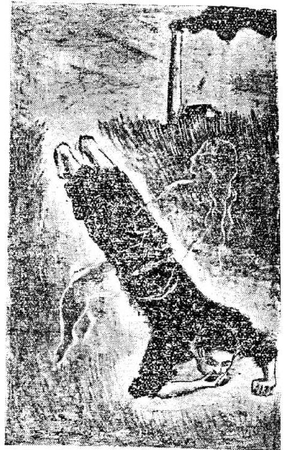
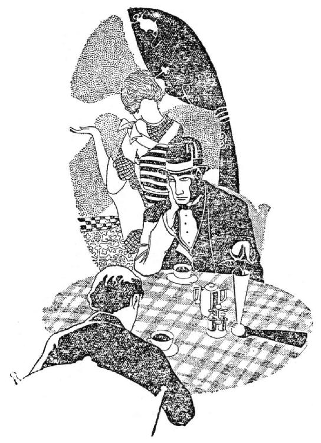
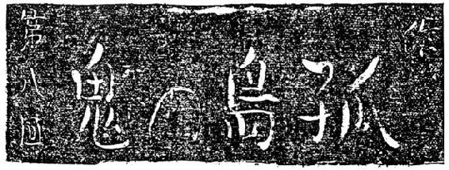
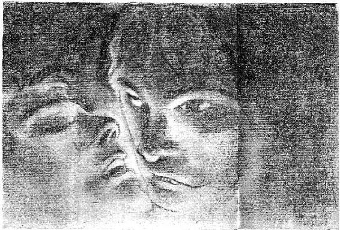

| 孤島の鬼 | |
| 江戸川 乱歩 | |
| 東京創元社 (1987) | |
この本は縦書きでレイアウトされています。
また、ご覧になる環境により、表示の差が認められることがあります。
本作品を電子書籍版に収録するにあたり、一部の漢字が簡略体で表記されている場合があります。
作中、現在からすれば表現に穏当を欠く部分がありますが、古典として評価されている作品であり、執筆当時の時代を反映した乱歩独自の世界を構築しているものとの観点から、原文のまま掲載しました。
孤島の鬼
江戸川乱歩
私（蓑浦金之助）は会社の同僚木崎初代と熱烈な恋に陥った。彼女は捨てられた子で、先祖の系図帳を持っていたが、先祖がどこの誰ともわからない。ある夜、初代は完全に戸締まりをした自宅で、何者かに心臓を刺されて殺された。その時、犯人は彼女の手提げ袋とチョコレートの罐とを持ち去った。恋人を奪われた私は、探偵趣味の友人、深山木幸吉に調査を依頼するが、何かをつかみかけたところで、深山木は衆人環視の中で刺し殺されてしまう......！ 鮮烈な読後感を残す大乱歩の長編代表作を、初出時の竹中英太郎画伯による挿絵全点を付してお届けする。
登場人物
蓑浦金之助
本編の語り手
木崎初代
蓑浦の恋人
諸戸道雄
蓑浦の友人
諸戸丈五郎
道雄の父
深山木幸吉
素人探偵
秀・吉
双生児
北川刑事
池袋署の警察官
資料提供 平井隆太郎
村松恒雄
山本秀樹
編集 北村 薫
東京創元社編集部
挿絵 竹中英太郎
Artist 志村敏子
Design アトリエ絵夢
東京創元社
孤島の鬼
江戸川乱歩
はしがき
私はまだ三十にもならぬに、濃い髪の毛が、一本も残らずまっ白になっている。このような不思議な人間がほかにあろうか。かつて白頭宰相といわれた人にも劣らぬ見事な綿帽子が、若い私の頭上にかぶさっているのだ。私の身の上を知らぬ人は、私に会うと第一に私の頭に不審の眼を向ける。無遠慮な人は、挨拶がすむかすまぬに、先ず私の白頭についていぶかしげに質問する。これは男女にかかわらず、私を悩ますところの質問であるが、そのほかにもう一つ、私の家内とごく親しい婦人だけがそっと私に聞きにくる疑問がある。それは私の妻の右側の腿の上部の所にある、恐ろしく大きな傷の痕についてである。そこには不規則な円形の、大手術の痕かと見える、むごたらしい赤痣があるのだ。
この二つの異様な事実は、しかし別段私たちの秘密だというわけではないし、私はことさらに、それらのものの原因について語ることを拒むわけでもない。ただ、私の話を相手にわからせることが非常に面倒なのだ。それについては実に長々しい物語があるのだし、たとえその煩わしさを我慢して話をしてみたところで、私の話の仕方が下手なせいもあろうけれど、聞き手は私の話を容易に信じてはくれない。たいていの人は「まさかそんなことが」と頭から相手にしない。私が大法螺吹きかなんぞのようにいう。私の白頭と、妻の傷痕という、れっきとした証拠物があるにもかかわらず、人々は信用しない。それほど私たちの経験した事柄というのは、奇怪至極なものであったのだ。

私は、かつて「白髪鬼」という小説を読んだことがある。それには、ある貴族が早過ぎた埋葬に会って、出るに出られぬ墓場の中で死の苦しみをなめたため、一夜にして漆黒の頭髪が、ことごとくしらがと化したと書いてあった。また、鉄製の樽の中へはいって、ナイヤガラの滝へ飛び込んだ男の話を聞いたことがある。その男は仕合わせにも大した怪我もせず瀑布をくだることができたけれど、その一刹那に、頭髪がすっかり白くなってしまった由である。およそ、人間の頭髪をまっ白にしてしまうほどの出来事は、このように、世にためしのない大恐怖か大苦痛を伴っているものだ。三十にもならぬ私のこの白頭も、人々が信用しかねるほどの異常事を私が経験した証拠にはならないだろうか。妻の傷痕にしても同じことがいえる。あの傷痕を外科医に見せたならば、彼はきっと、それがなにゆえの傷であるかを判断するに苦しむにちがいない。あんな大きな腫物のあとなんてあるはずがないし、筋肉の内部の病気にしても、これほど大きな切口を残すような藪医者はどこにもないのだ。焼けどにしては治癒のあとが違うし、生れつきのあざでもない。それはちょうど、そこからもう一本足がはえていて、それを切り取ったら、定めしこんな傷痕が残るであろうと思われるような、何かそんなふうな変てこな感じを与える傷口なのだ。これとてもまた、なみたいていの異変で生じるものではないのである。
そんなわけで、私は、このことを会う人ごとに聞かれるのが煩わしいばかりでなく、折角身の上話をしても、相手が信用してくれない歯痒さもあるし、それに実をいうと、私は、世人がかつて想像もしなかったようなあの奇怪事を――私たちの経験した人外境を、この世にはこんな恐ろしい事実もあるのだぞと、ハッキリと人々に告げ知らせたい慾望もある。そこで、例の質問をあびせられたときには、「それについては、私の著書に詳しく書いてあります。どうかこれを読んでお疑いをはらしてください」といって、その人の前にさし出すことのできるような、一冊の書物に、私の経験談を書き上げてみようと思い立ったわけである。
だが、何をいうにも、私には文章の素養がない。小説が好きで読むほうはずいぶん読んでいるけれど、実業学校の初年級で作文を教わって以来、事務的な手紙の文章のほかには、文章というものを書いたことがないのだ。なに、今の小説を見るのに、ただ思ったことをダラダラと書いて行けばいいらしいのだから、私にだってあのくらいのまねはできよう。それに私のは作り話でなく、身をもって経験した事柄なのだから、一層書きやすいというものだ、などと、たかをくくって、さて書き出してみたところが、なかなかそんな楽なものでないことがわかってきた。第一予想とは正反対に、物語が実際の出来事であるために、かえって非常に骨が折れる。文章に不馴れな私は、文章を駆使するのでなくて、文章に駆使されて、つい余計なことを書いてしまったり、必要なことが書けなかったりして、折角の事実が世のつまらない小説よりも一層作り話みたいになってしまう。ほんとうのことをほんとうらしく書くことさえ、どんなにむずかしいかということを、今さらのように感じたのである。
物語の発端だけでも、私は二十回も、書いては破り書いては破りした。そして結局、私と木崎初代との恋物語からはじめるのが一ばん穏当だと思うようになった。実をいうと、自分の恋のうち明け話を、書物にして衆人の眼にさらすというのは、小説家でない私には、妙に恥かしく、苦痛でさえあるのだが、どう考えてみても、それを書かないでは、物語の筋道を失うので、初代との関係ばかりではなく、そのほかの同じような事実をも、はなはだしいのは、一人物とのあいだに醸された同性恋愛的な事件までをも、恥を忍んで私は暴露しなければなるまいかと思う。
際立った事件のほうからいうと、この物語は二た月ばかり間を置いて起こった、二人の人物の変死事件或いは殺人事件を発端とするので、この話が世の探偵小説、怪奇小説というようなものに類似していながら、その実はなはだしく風変りであることは、全体としての事件が、まだ本筋にはいらぬうちに、主人公（或いは副主人公）である私の恋人木崎初代が殺されてしまい、もう一人は、私の尊敬する素人探偵で、私が初代変死事件の解決を依頼した深山木幸吉が、早くも殺されてしまうのである。しかも私の語ろうとする怪異談は、この二人物の変死事件を単に発端とするばかりで、本筋は、もっともっと驚嘆すべく、戦慄すべき大規模な邪悪、いまだかつて何人も想像しなかった罪業に関する、私の経験談なのである。
素人の悲しさに、大袈裟な前ぶればかりしていて、一向読者に迫るところがないようであるから（だが、この前ぶれが少しも誇張でないことは、後々に至って読者に合点が行くであろう）、前置きはこのくらいにとどめて、さて私の拙い物語をはじめることにしよう。
思い出の一夜
当時私は二十五歳の青年で、丸の内のあるビルディングにオフィスを持つ貿易商、合資会社Ｓ・Ｋ商会のクラークを勤めていた。実際は、わずかばかりの月給など、ほとんど私自身のお小遣になってしまうのだが、といってＷ実業学校を出た私を、それ以上の学校へ上げてくれるほど、私の家は豊かではなかったのだ。
二十一歳から勤め出して、私はその春で丸四年勤続したわけであった。受持ちの仕事は会計の帳簿の一部分で、朝から夕方まで、パチパチ算盤玉をはじいていればよいのであったが、実業学校なんかやったくせに、小説や絵や芝居や映画がひどく好きで、一ぱし芸術がわかるつもりでいた私は、機械みたいなこの勤務を、ほかの店員たちよりも、一層いやに思っていたことは事実であった。同僚たちは、夜な夜なカフェ廻りをやったり、ダンス場へ通よったり、そうでないのは暇さえあればスポーツの話ばかりしているといった、派手で勇敢で現実的な人々が大部分であったから、空想好きで内気者の私には、四年もいたのだけれど、ほんとうの友だちは一人もないといってよかった。それがひときわ私のオフィス勤めを味気ないものにしていたのだった。
ところが、その半年ばかり前からというものは、私は朝々の出勤を今までほどいやに思わぬようになっていた。というのは、その頃十八歳の木崎初代が、はじめて見習いタイピストとしてＳ・Ｋ商会の人となったからである。木崎初代は、私が生れるときから胸に描いていたような女であった。色は憂欝な白さで、といって不健康な感じではなく、からだは鯨骨のようにしなやかで弾力に富み、といってアラビヤ馬みたいに勇壮なのではなく、女にしては高く白い額に、左右不揃いな眉が不可思議な魅力をたたえ、切れの長い一かわ眼に微妙な謎を宿し、高からぬ鼻と薄過ぎぬ唇が、小さい顎を持ったしまった頬の上に浮彫りされ、鼻と上唇のあいだが人並みよりは狭くて、その上唇が上方にややめくれ上がった形をしている、と、細かに書いてしまうと、一向初代らしい感じがしないのだが、彼女は大体そのように、一般の美人の標準にはずれた、その代りには、私だけには此上もない魅力を感じさせる種類の女性であった。
内気者の私はふと機会を失って、半年ものあいだ、彼女と言葉をかわさず、朝、顔を見合わせても目礼さえしない間柄であった（社員の多いこのオフィスでは、仕事の共通なものや、特別に親しい者のほかは、朝の挨拶などもしないような習わしであった）。それが、どういう魔がさしたものか、ある日、私はふと彼女に声をかけたのである。後になって考えてみると、このことが、いや私の勤めているオフィスに彼女が入社してきたことすらが、まことに不思議なめぐり合わせであった。彼女と私とのあいだにかもされた恋のことをいうのではない。それよりも、そのとき彼女に声をかけたばっかりに、のちに私を、この物語にしるすような世にも恐ろしい出来事に導いた運命についていうのである。
そのとき木崎初代は、自分で結ったらしいオールバックまがいの、恰好のいい頭を、タイプライターの上にうつむけて、藤色セルの仕事着の背中を、やや猫背にして、何か熱心にキイを叩いていた。
HIGUCHI HIGUCHI HIGUCHI HIGUCHI HIGUCHI HIGUCHI HIGUCHI HIGUCHI
見ると、レターペーパーの上には、樋口と読むのであろう、誰かの姓らしいものが、模様みたいにベッタリと並んでいた。
私は「木崎さん、ご熱心ですね」とかなんとかいうつもりであったのだ。それが、内気者の常として、私はうろたえてしまって、愚かにもかなり頓狂な声で、
「樋口さん」
と呼んでしまった。すると、響きに応じるように、木崎初代は私の方をふり向いて、
「なあに？」
と至極落ちついて、だが、まるで小学生みたいなあどけない調子で答えたのである。彼女は樋口と呼ばれて少しも疑うところがないのだ。私は再びうろたえてしまった。木崎というのは私のとんでもない思い違いだったのかしら。彼女は彼女自身の姓を叩いていたにすぎないのかしら。この疑問は少しのあいだ私に羞恥を忘れさせ、私は思わず長い言葉をしゃべった。
「あなた、樋口さんていうの？ 僕は木崎さんだとばかり思っていた」
すると、彼女もまたハッとしたように、眼のふちを薄赤くして、いうのである。
「まあ、あたしうっかりして......木崎ですのよ」
「じゃあ、樋口っていうのは？」
あなたのラヴ......といいかけて、びっくりして口をつぐんだ。
「なんでもないのよ......」
そして木崎初代はあわてて、レターペーパーを器械からとりはずし、片手でもみくちゃにするのであった。
私はなぜこんなつまらない会話をしるしたかというに、それには理由があるのだ。この会話が私たちのあいだに、もっと深い関係を作るきっかけをなしたという意味ばかりではない。彼女が叩いていた「樋口」という姓には、また彼女が樋口と呼ばれてなんの躊躇もなく返事をした事実には、実はこの物語の根本に関する大きな意味が含まれていたからである。
この記事は、恋物語を書くのが主眼でもなく、そんなことで暇どるには余りに書くべき事柄が多いので、それからの、私と木崎初代との恋愛の進行については、ごくかいつまんでしるすにとどめるが、この偶然の会話を取りかわして以来、どちらが待ち合わせるともなく、私たちはちょくちょく帰りが一緒になるようになった。そして、エレベーターの中と、ビルディングから電車の停留所までと、電車にのってから彼女は巣鴨の方へ、私は早稲田の方へ、その乗換場所までの、僅かなあいだを、私は一日中の最も楽しい時間とするようになった。間もなく、私たちはだんだん大胆になって行った。帰宅を少しおくらせて、事務所に近い日比谷公園に立ち寄り、片隅のベンチに短い語らいの時間を作ることもあった。また、小川町の乗換場で降りて、その辺のみすぼらしいカフェにはいり、一杯ずつお茶を命じるようなこともあった。だが、うぶな私たちは、非常な勇気を出して、場末のホテルへはいって行くまでには、ほとんど半年もかかったほどであった。
私が淋しがっていたように、木崎初代も淋しがっていたのだ。お互いに勇敢なる現代人ではなかったのだ。そして、彼女の容貌が私の生れた時から胸に描いていたものであったように、嬉しいことには、私の容姿もまた彼女が生れた時から恋するところのものであったのだ。変なことをいうようだけれど、容貌については、私は以前からやや頼むところがあった。諸戸道雄というのは矢張りこの物語に重要な役目を演ずる一人物であって、彼は医科大学を卒業して、そこの研究室で或る奇妙な実験に従事している男であったが、その諸戸道雄が、彼は医学生であり、私は実業学校の生徒であったころから、この私に対して、かなり真剣な同性の恋愛を感じていたらしいのである。
彼は私の知る限りにおいて、肉体的にも、精神的にも、最も高貴な感じの美青年であり、私の方では決して彼に妙な愛着を感じているわけではないけれど、彼の気むずかしい選択にかなったかと思うと、少なくとも私は自分の外形について、いささかの自信を持ちうるように感じることもあったのである。だが、私と諸戸との関係については、後にしばしば述べる機会があるであろう。
それはともかく、木崎初代との、あの場末のホテルにおいての最初の夜は、今もなお私の忘れかねるところのものであった。それはどこかのカフェで、そのとき私たちは駈落ち者のような、いやに涙っぽく、やけな気持になっていたのだが、私は口なれぬウィスキーをグラスに三つも重ねるし、初代も甘いカクテルを二杯ばかりもやって、二人ともまっ赤になって、やや、正気を失った形で、それゆえ、たいした羞恥を感じることもなく、そのホテルのフロントに立つことができたのであった。私たちは巾の広いベッドを置いた、壁紙にしみのあるようないやに陰気な部屋に通された。ボーイが一隅の卓の上にドアの鍵と渋茶とを置いてだまって出て行ったとき、私たちは突然、非常な驚きの眼を見かわした。初代は見かけの弱々しい割には、心にしっかりしたところのある娘であったが、それでも、酔いのさめた青ざめた顔をして、ワナワナと唇の色をなくしていた。
「君、怖いの？」
私は私自身の恐怖をまぎらすために、そんなことをささやいた。彼女は黙って、眼をつぶるようにして、見えぬほど首を左右に動かした。だが、いうまでもなく彼女は怖がっているのだった。
それはまことに変てこな、気まずい場面であった。二人ともまさかこんなふうになろうとは予期していなかった。もっとさりげなく、世のおとなたちのように、最初の夜を楽しむことができるものと信じていた。それが、そのときの私たちには、ベッドの上に横になる勇気さえなかったのだ。着物を脱いで肌をあらわすことなど思いも及ばなかった。一と口にいえば、私たちは非常な焦慮を感じながら、すでにたびたび交わしていた唇をさえ交わすことなく、むろんそのほかの何事をもしないで、ベッドの上に並んで腰をかけ、気まずさをごまかすために、ぎごちなく両足をブラブラさせながら、ほとんど一時間ものあいだ、だまっていたのである。
「ね、話しましょうよ。私なんだか小さかった時分のことが話してみたくなったのよ」
彼女が低い透き通った声でこんなことをいったとき、私はすでに肉体的な激しい焦慮を通り越して、かえって妙にすがすがしい気持になっていた。
「ああ、それがいい」
私はよいところへ気がついたという意味で答えた。
「話してください。君の身の上話を」
彼女はからだを楽な姿勢にして、澄みきった細い声で、彼女の幼少のころからの不思議な思い出を物語るのであった。私はじっと耳をすまして、長いあいだほとんど身動きもせず、それに聞き入っていた。彼女の声はなかばは子守歌のように、私の耳を楽しませたのである。
私は、それまでにも、またそれから以後にも、彼女の身の上話は、切れ切れに、たびたび耳にしたのであったが、このときほど感銘深くそれを聞いたことはない。今でも、そのおりの彼女の一語一語を、まざまざと思い浮かべることができるほどである。だが、ここには、この物語のためには、彼女の身の上話をことごとくはしるす必要がない。私はそのうちから、のちにこの話に関係を生じるであろう部分だけを、ごく簡単に書きとめておけばよいわけである。
「いつかもお話ししたように、私はどこで生れた誰の子なのかもわからないのよ。今のお母さん――あなたはまだ会わないけれど、私はそのお母さんと二人暮らしで、お母さんのためにこうして働いているわけなの――そのお母さんがいうのです。初代や、お前は私たち夫婦が若かった時分、大阪の川口という船着場で拾ってきて、丹誠をして育て上げた子なんだよ。お前は汽船待合所の薄暗い片隅に、手に小さな風呂敷包みを持って、めそめそと泣いていたっけ。あとで風呂敷包みをあけて見ると、中から多分お前の先祖のであろう、一冊の系図書きと、一枚の書きつけとが出てきて、その書きつけで初代というお前の名も、その時ちょうどお前が三つであったこともわかったのだよ。でもね、私たちには子供がなかったので、神様から授かったほんとうの娘だと思って、警察の手続もすませ、立派にお前を貰ってきて、私たちはたんせいをこらしたのさ。だからね、お前も水臭い考えを起こしたりなんぞしないで、私を――お父さんも死んでしまって、一人ぼっちなんだから――ほんとうのお母さんだと思っていておくれよ、とね。でも、私それを聞いても、なんだかおとぎ話でも聞かせてもらっているようで、ほんとうは悲しくもなんともなかったのですけれど、それが、妙なのよ、涙が止めどもなくながれてしようがなかったの」
彼女の育ての父親の在世の頃、その系図書きをいろいろ調べて、ずいぶんほんとうの親たちを尋ね出そうと骨折ったのだけれども、系図書きに破けたところがあって、ただ先祖の名前や号やおくり名が羅列してあるばかりで、そんなものが残っているところをみれば、相当の武士の家柄にはちがいないのだが、その人たちの属した藩なり、住居なりの記載が一つもないので、どうすることもできなかったのである。
「三つにもなっていて、私ばかですわねえ。両親の顔をまるで覚えていないのよ。そして、人ごみの中で置き去りにされてしまうなんて。でもね、二つだけ私、今でもこう眼をつむると、闇の中へ綺麗に浮き出して見えるほど、ハッキリ覚えていることがありますわ。その一つは、私がどこかの浜辺の芝生のような所で、暖かい日に照らされて、可愛い赤さんと遊んでいる景色なの。それは可愛い赤さんで、私は姉さまぶって、その子のお守りをしていたのかもしれませんわ。下の方には海の色がまっ青に見えていて、そのずっと向こうに紫色に煙って、ちょうど牛のねた形で、どこかの陸が見えるのです。私、ときどき思うことがありますわ。この赤さんは私の実の弟か妹で、その子は私みたいに置き去りにされないで、今でもどこかに両親と一緒に仕合わせに暮らしているのではないかと。そんなことを考えると、私なんだか胸をしめつけられるように、懐かしい悲しい気持になってきますのよ」
彼女は遠い所を見つめて、独りごとのようにいうのである。そして、もう一つの彼女の幼い記憶というのは、
「岩ばかりでできたような、小山があって、その中腹から眺めた景色なのよ。少し隔ったところに、誰かの大きなお屋敷があって、万里の長城みたいにいかめしい土塀や、母屋の大鳥の羽根をひろげたように見える立派な屋根や、その横手にある白い大きな土蔵なんかが、日に照らされて、クッキリと見えているの。そして、それっきりで、ほかに家らしいものは一軒もなく、そのお屋敷の向こうのほうには、やっぱり青々とした海が見えているし、そのまた向こうには、やっぱり牛のねたような陸地が、もやにかすんで横たわっているのよ。きっとなんですわ。私が赤さんと遊んでいたところと、同じ土地の景色なのね。私、幾度その同じ場所を夢に見たでしょう。夢の中で、ああ、又あすこへ行くんだなと思って、歩いていると、きっとその岩山のところへ出るにきまっていますわ。私、日本中を隅々まで残らず歩き廻ってみたら、きっとこの夢の中の景色と寸分違わぬ土地があるに違いないと思いますわ。そしてその土地こそ私の懐かしい生れ故郷なのよ」
「ちょっと、ちょっと」私はそのとき、初代の話をとめて言った。「僕、まずいけれど、その君の夢に出てくる景色は、なんだか絵になりそうだな。かいてみようか」
「そう、じゃあ、もっと詳しく話しましょうか」
そこで私は机の上の篭に入れてあったホテルの用箋を取り出して、備え付けのペンで、彼女が岩山から見たという海岸の景色を描いた。その絵がちょうど手元に残っていたので、版にしてここに掲げておくが、この即席のいたずらがきが、後に私にとってはなはだ重要な役目をつとめてくれようなどとは、むろんその時には想像もしていなかったのである。
「まあ、不思議ねえ。その通りですのよ。その通りですのよ」
初代は出来上がった私の絵を見て、喜ばしげに叫んだ。
「これ、僕、貰っておいてもいいでしょう」
私は、恋人の夢をいだく気持で、その紙を小さく畳み、上衣の内ポケットにしまいながらいった。
初代は、それから又、彼女が物心ついてからの、さまざまの悲しみ喜びについて、尽きぬ思い出を語ったのである。それはここにしるす要はない。ともかくも、私たちは、そうして私たちの最初の夜を、美しい夢のように過してしまったのである。むろん私たちはホテルに泊りはしないで、その夜ふけに、めいめいの家に帰った。
異様なる恋
私と木崎初代との間柄は日と共に深くなっていった。それからひと月ばかりたって、同じホテルに二度目の夜を過したときから、私たちの関係はさきの夜の少年の夢のように、美しいばかりのものではなくなっていた。私は初代の家を訪ねて、彼女のやさしい養母とも話をした。そして間もなく、私も初代も、銘々の母親に、私たちの意中を打ちあけるようにさえなった。母親たちにも別段積極的な異議があるらしくはなかった。だが、私たちはあまりにも若かった。結婚というような事柄は、もやを隔てて遠い遠い向こう岸にあった。
若い私たちは、子供が指切りをするようなまねをして、幼い贈り物を取りかわしたものである。私は一カ月の給料をはたいて、初代の生れ月に相当する、電気石をはめた指環を買い求めて、彼女に贈った。それを私は映画で覚えた手つきで、ある日、日比谷公園のベンチの上で、彼女の指にはめてやったのである。すると初代は子供みたいに、それを嬉しがって（貧乏な彼女の指にはまだ一つの指環さえなかったのだ）しばらく考えていたが、
「ああ、私、思いついたわ」
彼女はいつも持っている、手提げの口をひらきながら、
「わかる？ 私いま、何をお返しにすればいいかと思って、心配していたのよ。指環なんて、私買えないでしょう。でも、いいものがあるわ。ホラ、いつかもお話しした私の知らないお父さまやお母さまの、たった一つの形見の、あの系図書きよ。私、大切にして、外出する時にも、私のご先祖から離れないように、いつもこの手提げに入れて持っていますのよ。でも、これ一つが私と、どっか遠い所にいらっしゃるお母さまを、結びつけているのかと思うと、どんなことがあっても手離す気がしないのだけれど、ほかにお贈りするものがないのですから、私の命から二番目に大切なこれを、あなたにお預けしますわ。ね、いいでしょ。つまらない反古のようなものですけれど、あなたも大切にしてね」
そして、彼女は手提げの中から、古めかしい織物の表紙のついた、薄い系図帳を取り出して、私に渡したのである。私はそれを受取って、バラバラとめくってみたが、そこには昔風な武張った名前が、朱線でつらねてあるばかりであった。
「そこに樋口って書いてあるでしょ。わかって。いつか私がタイプライターでいたずらして、あなたに見つかった名前。ね、私、木崎っていうよりも、樋口の方がほんとうの私の名前だと思っているものですから、あの時あなたに樋口って呼ばれて、つい返事してしまったのよ」
彼女はそんなことをいった。
「これ、つまらない反古のようですけれど、でも、いつかずいぶん高い値をつけて買いにきた人があるのよ。近所の古本屋ですの。お母さんがふと口をすべらせたのを、どっからか聞き込んできたのでしょう。でもどんなにお金になっても、こればかりは譲れませんって、おことわりしましたの。ですから、まんざら値打のないものでもありませんわねえ」
彼女はまた、そんな子供らしいことをいった。
いわば、それがお互いの婚約の贈り物であったのだ。
だが、間もなく、私たちにとって少々面倒な事件が起こった。それは、地位にしろ、財産にしろ、学殖にしろ、私とは段違いの求婚者が、突然、初代の前に現われたことであった。彼は、有力な仲人を介し、初代の母親に対して、猛烈な求婚運動をはじめたのである。
初代がそれを母親から聞き知ったのは、私たちが例の贈り物を取りかわした、ちょうど翌日であったが、実はといって母親が打ちあけたところによると、親戚関係をたどって、求婚の仲介者が母親の所へ来はじめたのは、すでに一カ月も以前からのことだというのであった。私はそれを聞いて、いうまでもなく驚いたが、だが私の驚いたのは、求婚者が私よりは数段立ちまさった人物であったことよりも、また初代の母親の心がどうやらその人物の方へ傾いているらしいことよりも、初代に対する求婚者というのが、私と妙な関係を持っている、かの諸戸道雄その人であったことである。この驚きは、ほかのもろもろの驚きや心痛をうち消してしまったほど、ひどかったのだ。
なぜそんなに驚いたかというに、それについては、私は少しばかり恥かしいうちあけ話をしなければならないのであるが......
先にもちょっと述べたように、科学者諸戸道雄は、私に対して、実に数年の長いあいだ、ある不可思議な恋情をいだいていた。そして、私はというと、むろんそのような恋情を理解することはできなかったけれど、彼の学殖なり、一種天才的な言動なり、又異様な魅力を持つ容貌なりに、決して不快を感じてはいなかった。それゆえ彼の行為がある程度を越えない限りにおいては、彼の好意を、単なる友人としての好意を、受けるにやぶさかではなかったのである。
私は実業学校の四年生であったころ、家の都合もあったのだが、むしろ大部分は私の幼い好奇心から、同じ東京に家庭を持ちながら、私は神田の初音館という下宿屋に泊っていたことがあって、諸戸はそこの同宿人として知り合ったのが最初であった。年齢は六つも違って、そのとき私は十七歳、諸戸は二十三歳であったが、彼の方から誘うままに、何しろ彼は大学生でしかも秀才として聞こえていたほどだから、私はむしろ尊敬に近い気持で、喜んで彼とつき合っていたわけである。
私が彼の心持を知ったのは、初対面から二カ月ばかりたったころであったが、それは直接彼からではなく、諸戸の友人たちのあいだの噂話からであった。「諸戸と蓑浦は変だ」と盛んに言いふらす者があったのだ。それ以来注意してみると、諸戸は私に対する時に限って、その白い頬のあたりに微かな羞恥の表情を示すことに気づいた。私は当時子供であったし、私の学校にも、遊戯に近い感じでは、同じような事柄が行われていたので、諸戸の気持を想像して、独り顔を赤くするようなことがあった。それはそんなにひどく不快な感じではなかった。
彼はよく私を銭湯に誘ったことを思い出す。そこでは、きっと背中の流しっこをしたものであるが、彼は私のからだを石鹸のあぶくだらけにして、まるで母親が幼児に行水でも使わせるように、丹念に洗ってくれたものである。最初のあいだは、私はそれを単なる親切と解していたが、後には彼の気持を意識しながら、それをさせていた。それほどのことでは、別段私の自尊心を傷つけなかったからである。
散歩のときに手を引き合ったり、肩を組み合うようなこともあった。それも私は意識してやっていた。時とすると、彼の指先が烈しい情熱をもって私の指をしめつけたりするのだけれど、私は無心を粧って、しかし、やや胸をときめかしながら、彼のなすがままに任せた。といって、決して私は彼の手を握り返すことはしなかったのである。
また、彼がそのような肉体的な事柄ではなく、私に親切を尽したことはいうまでもなかった。彼は私にいろいろ贈り物をした。芝居や映画や運動競技などにも連れて行ってくれた。私の語学を見てくれた。私の試験の前などには、わがことのように骨折ったり心配したりしてくれた。そのような精神的な庇護については、今もなお彼の好意を忘れかねるほどである。
だが私たちの関係が、いつまでもその程度にとどまっているはずはなかった。ある期間を過ぎると、しばらくのあいだ、彼は私の顔さえ見れば憂欝になってしまって、だまって溜息ばかりついているような時期がつづいたが、やがて彼と知合って半年もたったころ、私たちの上に、ついに或る危機がきたのだった。
その夜、私たちは下宿の飯がまずいといって、近くのレストランへ行って、一緒に食事をしたのだが、彼はなぜか、やけのようになって、したたか酒をあおり、私にも呑めといって聞かぬのだ。むろん私は酒なんか呑めなかったけれど、勧められるままに二、三杯口にしたところが、忽ちカッと顔が熱くなり、頭の中にブランコでもゆすっているような気持で、何かしら放縦なものが心を占めて行くのを感じはじめた。
私たちは肩を組み合い、もつれるようにして、一高の寮歌などを歌いながら、下宿に帰った。
「君の部屋へ行こう。君の部屋へ行こう」
諸戸はそういって、私を引きずるようにして、私の部屋へはいった。そこには私の万年床が敷き放しになっていた。彼につき倒されたのであったか、私が何かにつまずいたのであったか、私はいきなり、その万年床の上にころがったのである。
諸戸は私の傍に突っ立って、じっと私の顔を見おろしていたが、ぶっきらぼうに、
「君は美しい」
といった。その刹那、非常に妙なことをいうようだけれど、私は女性に化して、そこに立っている、酔いのために上気はしていたけれど、それゆえに一層魅力を加えたこの美貌の青年は、私の夫であるという、異様な観念が私の頭をかすめて通り過ぎたのである。
諸戸はそこに膝まずいて、だらしなく投げ出された私の右手を捉えていった。
「あつい手だね」
私も同時に火のような相手の掌を感じた。
私がまっ青になって、部屋の隅に縮み込んでしまった時、みるみる諸戸の眉間に、取返しのつかぬことをしたという、後悔の表情が浮かんだ。そして喉につまった声で、
「冗談だよ。冗談だよ、今のは嘘だよ。僕はそんなことはしないよ」
といった。
それから、しばらくのあいだ、私たちは銘々そっぽを向いて、だまり込んでいたが、突然カタンという音がして、諸戸は私の机の上に俯伏してしまった。両腕を組み合わせた上に顔をうずめて、じっとしている。私はそれを見て、彼は泣いているのではないかと思った。
「僕を軽蔑しないでくれたまえ。君は浅間しいと思うだろうね。僕は人種が違っているのだ。すべての意味で異人種なのだ。だが、その意味を説明することができない。僕は時々一人で怖くなって慄え上がるのだ」
やがて彼は顔を上げてそんなことをいった。しかし彼が何をそんなに怖がっているのか、私にはよく理解できなかった。ずっと後になってある場面に遭遇するまでは。
私が想像した通り、諸戸の顔は、涙に洗われたようになっていた。
「君はわかっていてくれるだろうね。わかってさえいてくれればいいのだよ。それ以上望むのは僕の無理かも知れないのだから。だが、どうか僕から逃げないでくれたまえ。僕の話相手になってくれたまえ。そして僕の友情だけなりとも受け入れてくれたまえ。僕が独りで思っている、せめてもそれだけの自由を僕に許してくれないだろうか。ねえ、蓑浦君、せめてそれだけの......」
私は強情に押しだまっていた。だが、かきくどきながら、頬に流れる諸戸の涙を見ているうちに、私もまた瞼のあいだに熱いものがもり上がってくるのを、どうすることもできなくなってしまった。
私の気まぐれな下宿生活は、この事件を境にして中止された。あながち諸戸に嫌悪を感じたのではなかったが、二人のあいだにかもされた妙な気まずさや、内気な私の羞恥心が、私をその下宿にいたたまれなくしたのである。
それにしても、理解し難きは諸戸道雄の心であった。彼はその後も異様な恋情を棄てなかったばかりか、それは月日がたつに従って、いよいよこまやかに、いよいよ深くなりまさるかと思われた。そして、たまたま逢う機会があれば、それとなく会話のあいだに、多くの場合は、世にためしなき恋文のうちに、彼の切ない思いをかきくどくのであった。しかもそれが私の二十五歳の当時までつづいていたというのは、あまりにも理解し難き彼の心持ではなかったか。たとえ、私のなめらかな頬に少年のおもかげが失せなかったにもしろ、私の筋肉が世のおとなたちのように発達せず、婦女子の如く艶かであったにもしろ。
そういう彼が、突如として、人もあろうに私の恋人に求婚したというのは、私にとって、はなはだしい驚きであった。私は彼に対して恋の競争者として敵意を抱く前に、むしろ一種の失望に似たものを感じないではいられなかった。
「もしや......もしや彼は、私と初代との恋を知って、私を異性に与えまいために、私を彼の心の内にいつまでも一人で保っておきたいために、みずから求婚者となって、私たちの恋を妨げようと企てたのではあるまいか」
自惚れの強い私の猜疑心は、そんな途方もないことまでも想像するのであった。
怪老人
これは甚だ奇妙な事柄である。一人の男がもう一人の男を愛するあまり、その男の恋人を奪おうとする。普通の人に想像もできないような事柄である。私は先に述べた諸戸の求婚運動を、もしや私から初代を奪わんがためではあるまいかと邪推したとき、私自身私の猜疑心を笑ったくらいである。だが、この一度きざした疑いは、妙に私を捉えて離さなかった。私は覚えていた。諸戸はいつか私に彼の異様な心持を、比較的詳しく打ちあけたおり「僕は婦人にはなんの魅力も感じることができないのだ。むしろ嫌悪を感じ、汚なくさえ思われるのだ。君にはわかるかしら。これは単に恥かしいというだけの心持ではないのだよ。恐ろしいのだ。僕はときどき、いても立ってもいられぬほど恐ろしくなることがある」と述懐したことを覚えていた。
その生来女嫌いの諸戸道雄が、突然、結婚する気になり、しかもあんなに猛烈な求婚運動をはじめたというのは、まことに変ではないか。私はいま「突然」という言葉を使ったが、実をいうと、その少し前までは、私は絶えず諸戸の一種異様な、しかしはなはだ真剣な恋文を受取ってもいたし、ちょうど一カ月ばかり以前、諸戸に誘われて、一緒に帝国劇場を見物したことさえあった。そして、むろん、諸戸のこの観劇勧誘の動機は、私に対する愛情にあったことは申すまでもない。それはその折の彼の様子で疑う余地はないのだ。それが僅か一カ月かそこいらのあいだに豹変して、私を捨て（というと二人のあいだに何かいまわしい関係でもできていたようだが、決してそんなことはない）、木崎初代に対して求婚運動をはじめたのであるから、まったく「突然」にちがいないのである。しかも、その相手に選ばれたのが、申し合わせたように、私の恋人の木崎初代であったというのは、偶然にしては少々へんに感じられるではないか。
というように、だんだん説明してみると、私の疑いもまんざら無根の猜疑ばかりではなかったことがわかるのである。だが、この諸戸道雄の奇妙な行動なり心理なりは、世の正常な人々にはちょっと会得しにくいかも知れぬ。そして、私のつまらぬ邪推を長々と述べ立てることを非難するかも知れぬ。私のように直接諸戸の異様な言動に接していない人々には、それももっともなことだ。では、私は順序を少し逆にして、のちに至ってわかったことを、ここで読者に打ちあけてしまったほうがよいかも知れぬ。つまり、この私の疑いは決して邪推ではなかったのだ。諸戸道雄は、私の想像した通り、私と初代との仲を裂く目的で、あんな大騒ぎの求婚運動をはじめたのであった。
どんなに大騒ぎな求婚運動であったかというと、
「そりゃ、うるさいのよ。毎日のように世話人がお母さんをくどきにくるらしいのよ。そして、あなたのこともちゃんと知っていて、あなたの家の財産だとか、あなたの会社の月給までお母さんに告げ口して、とても初代さんの夫となり、お母さんを養っていけるような人柄じゃない、なんて、それはひどいことまでいうのですって、それにくやしいのは、お母さんが向こうの人の写真を見たり、学歴や暮らし向きなんか聞いて、すっかり乗り気になっているのですわ。お母さんはいい人なんですけれど、今度ばかりは、私ほんとうにお母さんがにくらしくなった。浅間しいわ。近頃お母さんと私はまるでかたき同士よ。物をいえば、すぐそのことになって、喧嘩なんですもの」
初代はそんなふうに訴えるのだ。彼女の口裏から、私は諸戸の運動がどんなに烈しいものだかを察することができた。
「あんな人のお蔭で、お母さんと私のあいだが、変になってしまったことは、一と月前には想像さえできなかったほどですわ。例えばね、お母さんたら、近頃はしょっちゅう、私の留守中に、私の机や手文庫なんかを調べるらしいの。あなたの手紙を探して、私たちのあいだがどこまで行っているかを探るらしいのよ。私、几帳面なたちですから、引出しの中でも、キチンとしておくのに、それがよく乱れていますの。ほんとうにあさましいと思うわ」
そんなことさえあったのだ。おとなしい親思いの初代ではあったが、彼女はこの母親との戦いには決して負けていなかった。あくまでも意地を張り通して、母親の機嫌を損じることなどは、かえりみていなかった。
だがこの思いがけぬ障害は、かえって私たちの関係を一層複雑にも濃厚にもしたことであった。私は一時恐れをなした私の恋の大敵を見向きもせず、ひたすら私を慕ってくる初代の真心をどんなにか感謝したであろう。ちょうどそれは晩春のころであったが、私たちは、初代が家に帰って母親と顔を合わすことを避けたがるので、会社がひけてから、長い時間、美しく燈のはいった大通りや、若葉の匂いのむせ返る公園などを、肩を並べて歩いたものである。休日には郊外電車の駅で待ち合わせて、よく緑の武蔵野を散歩した。こう眼をつむると、小川が見えてくる。土橋が見えてくる。鎮守の森とでもいうような、高い老樹の林や石垣が見えてくる。それらの景色の中を、二十五歳の子供子供した私が、派手な銘仙に、私の好きな岩絵具の色をした織物の帯を高く結んだ初代と肩を並べて歩いているのだ。幼いと笑ってくださるな。これが私の初恋の最も楽しい思い出なのだ。僅々八、九カ月の間柄ではあったが、二人はもう決して離れることのできない関係になっていた。私は会社の勤めも、家庭のこともすっかり忘れてしまって、ただもう桃色の雲の中に、無我夢中で漂っていたのである。私は諸戸の求婚などはもう少しも恐れなかった。初代の変心を気遣う理由は少しもなかったからである。初代も今はたった一人の母親の叱責をさえ気にかけなかった。彼女は私以外の求婚に応ずる心は微塵もなかったからである。
私は今でも、あの当時の夢のような楽しさを忘れることができない。だが、それはほんとうに束の間であった。私たちが最初口をきき合ってからちょうど九カ月目、私ははっきりと覚えている、大正十四年六月二十五日であった。その日限り私たちの関係は打ち断たれてしまったのである。諸戸道雄の求婚運動が成功したのではない。悲しいことに、木崎初代が死んでしまったからだ。それも普通の死にかたではなく、世にも不思議な殺人事件の被害者として、無残にこの世を去ってしまったからである。
だが、木崎初代の変死事件にはいるに先だって、私は少しく読者の注意をひいておきたいことがある。それは初代が死の数日前に私に訴えたところの奇妙な事実についてである。これはのちにも関係のあることだから、読者の記憶の一隅にとどめておいてもらわねばならぬのだ。
ある日のこと、その日は会社の勤務時間中も、初代は終日青ざめて、何かしらおびえているふうに見えたのだが、会社が退けて、丸ノ内の大通りを並んで歩きながら、私がそれについて聞きただした時、初代はやっぱりうしろを振り返るようにしながら、私のそばにすりよって、次のような無気味な出来事を訴えたのである。
「ゆうべでもう三度目なのよ。いつもそれは私がおそく湯に行くときなんですが、あなたも知っていらっしゃる通り淋しい町でしょう、夜なんぞはもうまっ暗なのよ。なんの気なしに格子戸を開けて表へ出ると、ちょうど私の家の格子窓のところに、変なお爺さんが立ちどまっていますの。三度とも同じことなのよ。私が格子をあけると、なんだかハッとしたように姿勢を変えて、何食わぬ顔で通り過ぎてしまうけれど、でも、その瞬間まで、じっと窓のところから、家の中の様子をうかがっていたらしいそぶりですの。二度目までは、私の気のせいかも知れないと思ってましたけれど、ゆうべもそれなんでしょう。決して偶然な通りすがりの人じゃありませんわ。といって、御近所にあんなお爺さんは見たこともないし、私なんだか悪いことの前兆のような気がして、気味がわるくて仕方がないのよ」
私があやうく笑いそうになるのを見ると、彼女はやっきとなってつづけるのだ。
「それが普通のお爺さんじゃないのよ。私あんな無気味なお爺さんて、見たことがありませんわ。年も五十や六十じゃなさそうなの。どうしたって八十以上のお爺さんよ。まるで背中のところで二つに折れたみたいに腰が曲っていて、歩くにも、杖にすがって、鍵のように折れ曲って、首だけで向こうを見て歩くのよ。だから遠くから見ると、背の高さが、普通のおとなの半分くらいに見えますの。なんだか気味のわるい虫が這ってでもいるようなの。そして、その顔といったら皺だらけで、見わけられなくなっているけれど、あれじゃあ、若いときだって普通の顔じゃないわ。私怖いものだから、それに暗いので、よく見なかったけれど、でも、私の家の軒燈の光で、チラッと口の所だけ見てしまったのよ。唇がちょうど兎のように二つに割れていて、私と眼を合わせた時、てれ隠しに、ニヤッと笑った口というものは、私今でも思い出すと、寒気がするようよ。あんな化物みたいな、八十以上にも見える、お爺さんが、しかも夜更けに三度も私の家の前に立ちどまっているなんて、変ですわ。何か悪いことの起こる前兆じゃないでしょうか」
私は初代の唇が色を失って、細かく震えているのを見た。よほど怖かったものにちがいない。私はそのときは、彼女の思い過しだといって、笑って見せたことであるが、たとえこの初代の見たところが真実であったとしても、それが何を意味するのか少しもわからなかったし、八十以上の腰の曲ったお爺さんに危険な企らみがあろうとも思えない。私はそれを少女のばかばかしい恐怖として、ほとんど気にも止めなかった。だが、後になって、この初代の直覚が、恐ろしいほど当たっていたことがわかってきたのである。
入口のない部屋
さて、私は大正十四年六月二十五日のあの恐ろしい出来事を語らねばならぬ順序となった。
その前日、いやその前夜七時ごろまでも、私は初代と語り合っていたのだった。晩春の銀座の夜を思い出す。私はめったに銀座など歩くことはなかったのだが、その夜は、どうしたのか、初代が銀座へ行ってみましょうと言い出した。初代は見立てのいい柄の、仕立卸しの黒っぽい単衣物を着ていた。帯はやっぱり黒地に少し銀糸をまぜた織物であった。臙脂色の鼻緒の草履もおろしたばかりだった。私のよく磨いた靴と彼女の草履とが足並をそろえて、ペーヴメントの上をスッスッと進んで行った。私たちはその時、遠慮勝ちに新時代の青年男女の流行風俗をまねてみたのであった。ちょうど月給日だったので、私たちは少しおごって、新橋のある鳥料理へ上がったものだ。そして七時ごろまで、少しお酒を飲みながら、私たちは楽しく語り合った。酔ってくると私は、諸戸なんか、今にごらんなさい私だって、というような気焔を上げた、そして、今ごろ諸戸はきっとくしゃみをしているでしょうね、といって思い上がった笑いかたをしたのを覚えている。ああ、私はなんという愚かものであったのだろう。
私はその翌朝、ゆうべ別かれるとき初代が残して行った、私のすきでたまらない彼女の笑顔と、ある懐かしい言葉とを思い出しながら、春のようにうららかな気持で、Ｓ・Ｋ商会のドアをあけた。そして、いつもするように、先ず第一に初代の席を眺めた。毎朝どちらが先に出勤するかというようなことさえ、私たちの楽しい話題の一つになるのであったから。
だが、もう出勤時間が少し過ぎていたのに、そこには初代の姿はなく、タイプライターの覆いもとれてはいなかった。変だなと思って、自分の席の方へ行こうとすると、突然横合いから興奮した声で呼びかけられた。
「蓑浦君、大変だよ。びっくりしちゃいけないよ。木崎さんが殺されたんだって」
それは人事を扱っている庶務主任のＫ氏だった。
「今しがた、警察のほうから知らせがあったんだ。僕はこれから見舞いに行こうと思うんだが、君も一緒に行くかい」
Ｋ氏は幾分は好意的に、幾分はひやかし気味にいった。私たちの関係はほとんど社内に知れ渡っていたのだから。
「ええ、一緒に参りましょう」
私は何も考えることができなくて、機械的に答えた。私はちょっと同僚に断わって、Ｋ氏と同道して、自動車に乗った。
「どこで、誰に殺されたのですか」
車が走り出してから、私は乾いた唇で、かすれた声で、やっとそれを尋ねることができた。
「家でだよ。君は行ったことがあるんだろう。下手人はまるでわからないということだよ。とんだ目にあったものだね」
好人物のＫ氏はひとごとではないという調子で答えた。
痛さが余り烈しいときには、人はすぐ泣き出さず、かえって妙な笑い顔をするものだが、悲しみの場合も同じことで、それがあまりひどいときは涙を忘れ、悲しいと感じる力さえ失ったようになるものである。そして、やっとしてから、よほど日数がたってから、ほんとうの悲しさというものがわかってくるのだ。私の場合もちょうどそれで、私は自動車の上でも、先方について初代の死体を見た時でさえも、なんだか他人のことのようで、ボンヤリと普通の見舞い客みたいにふるまっていたことを記憶している。
初代の家は巣鴨宮仲の、表通りとも裏通りとも判別のつかぬ、小規模な商家としもた家とが軒を並べているような、細い町にあった。彼女の家と隣りの古道具屋とだけが平屋建てで、屋根が低くなっているので、遠くから目印になった。初代はこの三間か四間の小さな家に彼女の養母とたった二人で住んでいたのである。
私たちがそこに着いたときには、もう死体の調べなどもすんで、警察の人たちが付近の住人を取り調べているところだった。初代の家の格子戸の前には、一人の制服の警官が、門番みたいに立ちはだかっていたが、Ｋ氏と私とは、Ｓ・Ｋ商会の名刺を見せて、中へはいって行った。
六畳の奥の間に、初代はもう仏になって横たわっていた。全身を白い布で覆い、その前に白布をかけた机をすえて、小さなロウソクと線香が立ててあった。一度会ったことのある小柄な彼女の母親が、仏の枕元に泣き伏していた。そのそばに彼女の亡夫の弟だという人が、憮然として坐っていた。私はＫ氏の次に母親に悔みを述べて、机の前で一礼すると、仏のそばへ寄って、そっと白布をまくり初代の顔を覗いた。心臓を一とえぐりにやられたということであったが、顔には苦悶のあともなく、微笑しているのかと思われるほど、なごやかな表情をしていた。生前から赤みの少ない顔であったが、それが白蝋のように白けて、じっと眼をふさいでいた。胸の傷痕には、ちょうど彼女か生前帯をしめていた恰好で、厚ぼったく繃帯が巻いてあった。それを見ながら、私は、今からたった十三、四時間前に、新橋の鳥屋でさし向かいに坐って、笑い興じていた初代を思い出した。すると、内臓の病気ではないかと思ったほど、胸の奥がギュウと引締められるような気がした。その刹那、ポタポタと音を立てて、仏の枕元の畳の上に、つづけざまに私は涙をこぼしたのであった。
いや、私はあまりに帰らぬ思い出に耽り過ぎたようである。こんな泣きごとを並べるのがこの記録の目的ではなかったのだ。読者よ、どうか私の愚痴を許してください。
Ｋ氏と私とは、その現場でも、また後日役所に呼び出されさえして、いろいろと初代の日常に関して取り調べを受けたのであるが、それによって得た知識、また初代の母親や近所の人たちから聞き知ったところなどを総合すると、この悲しむべき殺人事件の経過は、大体次のようなものであったことがわかった。
初代の母親は、その前夜、やっぱり娘の縁談のことについて相談するために、品川のほうにいる彼女の亡夫の弟のところへ出向いて、遠方のことゆえ、帰宅したのはもう一時を過ぎていた。戸締まりをして、起きてきた娘としばらく話をして、彼女の寝室に定めてあるほうの、玄関ともいうべき四畳半へ臥せった。ここでちょっとこの家の間取りを説明しておくと、今いった玄関の四畳半の奥に六畳の茶の間があり、それが横に長い六畳で、そこから奥の六畳と三畳の台所と両方へ行けるようになっている。奥の間の六畳というのは、客座敷と初代の居間との兼用になっていた。初代は勤めに出て家計を助けているので、主人格として一ばん上等の部屋を当てがわれていたのである。玄関の四畳半は南に面していて、冬は目当たりがよく、夏は涼しく、明るくて気持がよいというので、母親が居間のようにして、そこで針仕事などすることになっていた。中の茶の間は広いけれど、障子ひとえで台所だし、光線がはいらず、陰気でじめじめしているので、母親はそこを嫌って寝室にも玄関を選んだわけであった。なぜ私はこんなにこまごまと間取りを説明したかというに、実はこの部屋の関係が初代変死事件をあれほど面倒なものにした、一つの素因をなしていたからである。事のついでにもう一つ、この事件を困難にした事情を述べておくが、初代の母親は少し耳が遠くなっていた。それにその夜はよふかしをした上に、ちょっと興奮するような出来事もあったので、寝つきがわるかった代りには、わずかのあいだであったが、ぐっすりと熟睡してしまって、朝六時ごろに眼を覚ましたまでは、何事も知らず、少々の物音には気のつかぬ状態であった。
母親は六時に眼を覚ますと、いつもするように、戸をあける前に、台所へ行って、仕かけておいた竈の下をたきつけて、少し気掛りなことがあったものだから、茶の間の襖をあけて、初代の寝間をのぞいて見たのだが、雨戸の隙間からの光と、まだ、つけたままの机の上の置き電燈の光によって、一と目でその場の様子がわかった。布団がまくれて、仰臥した初代の胸がまっ赤に染まり、そこに小さな白鞘の短刀がつっ立ったままになっていた。格闘の跡もなく、さしたる苦悶の表情もなく、初代はちょっと暑いので、布団から乗出したという恰好で静かに死んでいた。曲者の手練が、たった一と突きで心臓をえぐったので、ほとんど苦痛を訴えるひまもなかったのであろう。
母親はあまりの驚きに、そこにベッタリ坐ったまま「どなたかきてくださいよ」と連呼した。耳が遠いのでふだんから大声であったが、それが思いきり叫んだのであるから、たちまち壁ひとえの隣家を驚かせた。それから大騒ぎになって、ちょっとの間に近所の人たちが五、六人集まってきたが、はいろうにも、戸締まりをしたままなので、家の中へはいることができない。人々は「お婆さんここをあけなさい」と叫んで、ドンドン入口の戸を叩いた。もどかしがって裏へ廻る者もあったが、そこも締まりのままでひらくことができない。でもしばらくすると、母親が気が顛倒していたのでという意味の詫ごとをして締まりをはずしたので、人々はやっと屋内にはいり、恐ろしい殺人事件が起こったことを知ったのである。それから警察に知らせるやら、母親の亡夫の弟の家へ使いを走らせるやら大騒ぎになったが、もうそのころは町内じゅう総出の有様で、隣家の古道具屋の店先などは、そこの老主人の言葉を借りると「葬式なんかのおりの休憩所」といった観を呈していた。町内が狭いところへ、どの家からも、二、三人の人が門口へ出ているので、ひとしお騒ぎが大きく見えた。
兇行のあったのは、後に警察医の検診によって、午前の三時ごろということがわかったが、兇行の理由と見なすべき事柄は、やや曖昧にしかわからなかった。初代の居間は、大して取り乱した様子もなく、箪笥なんかにも異状はなかったが、だんだん調べて行くと、初代の母親は二つの品物の紛失していることに気づいた。その一つは初代がいつも持っていた手提げ袋で、その中にはちょうど貰ったばかりの月給がはいっていた。その前夜少しごたごたしたことがあったので、それを袋から出すひまもなく、初代の机の上に置いたままになっていたはずだと、母親はいうのだ。
これだけの事実によって判断すると、この事件は何者かが、多分夜盗のたぐいであったにちがいないが、初代の居間に忍び込んで、あらかじめ目星をつけておいた月給入りの手提げ袋を盗み去ろうとしたとき、初代が眼を覚まして声を立てるか何かしたので、うろたえた賊が所持の短刀で初代を刺し、そのまま手提げ袋を持って逃亡したというふうに、想像することができた。母親がその騒ぎに気づかなかったのは少々変であるが、前にも述べた通り、初代の寝間と母親の寝間とが離れていたこと、母親は耳が遠い上に、その夜は殊に疲れて熟睡していたことなどを考えると、無理もないことであった。それはまた、初代が大声で叫び立てるひまを与えず、とっさの間に、賊が彼女の急所を刺したためだと考えることもできた。
読者は、私がそんな平凡な月給泥棒の話を、なぜこまごまとしるしているのかと、定めし不審に思われるであろう。なるほど以上の事実はまことに平凡である。だが事件全体は決して平凡ではなかった。実をいうと、その平凡でない部分を、私はまだ少しも読者に告げていないのである。物には順序があるからだ。
では、その平凡でない部分とはなんであるかというに、先ず第一は、月給泥棒がなぜチョコレートの罐を一緒に盗んでいったかということである。母親が発見した二つの紛失物の内の一つが、そのチョコレートの罐であったのだ。チョコレートと聞いて私は思い出した。その前夜、私たちが銀座を散歩した時、私は初代がチョコレートを好きなことを知っていたものだから、彼女と一緒に一軒の菓子屋にはいって、ガラス箱の中に光っていた美しい宝石のような模様の罐に入ったのを買ってやったのである。丸く平べったい掌くらいの小罐であったが、非常に綺麗に装飾がしてあって、私は中味よりも罐が気に入って、それを選んだほどであった。初代の死体の枕元に、銀紙が散らばっていたというのだから、彼女はゆうべ、寝ながら、その幾つかをたべたものにちがいない。人を殺した賊が、危急の場合、なんの余裕があって、またなんの物好きから、そんなくだらない、お金にして一円〔註、今の四百円ほど〕足らずのお菓子などを、持って行ったのであろうか。母親の思い違いではないか、どっかにしまい込んであるのではないかと、いろいろ調べてみたが、その綺麗な罐はどこからも出てこなかった。だが、チョコレートの罐くらいは、なくなろうとどうしようと、大した問題ではなかった。この殺人事件の不思議さは、もっともっとほかの部分にあったのである。
一体、この賊は、どこから忍び入り、どこから逃げ出したのであろう。先ず、この家には普通に人の出入りする箇所が三つあった。第一は表の格子戸、第二は裏の二枚障子になった勝手口、第三は初代の部屋の縁側である。そのほかは、壁と、厳重にとりつけた格子窓ばかりだ。この三つの出入口は、前夜充分に戸締まりがしてあった。縁側の戸にも一枚一枚クルルがついていて、中途からはずすことはできない。つまり泥棒は普通の出入口からはいることは絶対不可能だったのである。それは母親の証言ばかりでなく、最初叫び声を聞きつけて現場にはいった近隣の五、六人の人たちが充分認めていた、というのは、その朝彼らが初代の家にはいろうとして、戸を叩いたとき、すでに読者にもわかっている通り、表口も裏口も、中から錠がおろしてあって、どうしてもあけることができなかったからである。また初代の部屋にはいって、光線を入れるために、三人でそこの縁側の雨戸をくったときにも、雨戸には完全に締まりがしてあったのだ。とすると、賊はこの三つの出入口のほかから忍び込み、また逃げ去ったものと考えるほかないのだが、そんな箇所がどこにあったのであろうか。
先ず最初に気がつくのは、縁の下であるが、縁の下といっても、そとに現われている部分は、この家には二カ所しかない、玄関の靴脱ぎの所と、初代の部屋の縁側の内庭に面した部分である。だが、玄関のほうは完全に厚い板が張りつけてあるし、縁側のほうは犬猫の侵入を防ぐために、一面金網張りになっている。そして、そのいずれにも、最近取りはずしたような形跡はなかったのである。
少し汚ない話をするようだが、便所の掃除口はどうかというに、その便所は初代の部屋の縁側にあったのだが、掃除口は昔風の大きなものでなく、近いころ用心深い家主がつけかえたという話で、やっと五寸角ぐらいの小さなものであった。これも疑う余地はないのだ。また、台所の屋根についている明りとりにも異状はなかった。それの締まりをする細引はちゃんと折れ釘に結びつけたままになっていた。そのほか、縁側のそとの内庭のしめった地面にも、足跡などは見当たらず、一人の刑事が天井板の取りはずしのできる部分から、上にあがって調べてみたが、厚くつもったほこりの上にはなんの痕跡も発見することができなかった。とすると、賊は壁を破るか、表の窓の格子をとりはずして、出入りするほかには、全く方法がないのである。いうまでもなく、壁は完全だし、格子は厳重に釘づけになっていた。
さらにこの盗賊は、彼の出入りの跡をとどめなかったばかりでなく、屋内にも、なんらの証拠物を残していないのであった。兇器の白鞘の短刀は、子供のおもちゃにもひとしいもので、どこの金物屋にも売っているような品であったし、その鞘にも、初代の机の上にも、そのほか調べえた限りの場所に、一つの指紋さえ残っていなかった。むろん遺留品はなかった。妙な言い方をすれば、これは、はいらなかった泥棒が、人を殺し、物を盗んだのである。殺人と窃盗ばかりがあって、殺人者、窃盗者は影も形もないのである。
ポーの「モルグ街の殺人事件」やルルウの「黄色の部屋」などで、私はこれと似たような事件を読んだことがある。共に内部から密閉された部屋での殺人事件なのだ。だが、そういうことは外国のような建物でなければ起こらぬもの、日本流のヤワな板と紙との建築では起こらぬものと信じていた。それが今、そうばかりともいえぬことがわかってきたのだ。たとえヤワな板にもしろ、破ったり取りはずしたりすれば跡が残る。だから、探偵という立場からいえば、四分板も一尺のコンクリート壁もなんの変りもないのである。
だが、ここで、ある読者は一つの疑問を提出されるかもしれない。「ポーやルルウの小説では、密閉された部屋の中に被害者だけがいたのである。それゆえまことに不思議であったのだ。ところが君の場合では、君が一人で、この事件をさも物々しく吹聴しているにすぎないではないか。たとえ家は君のいうように密閉されていたにもしろ、その中には、被害者ばかりではなくて、もう一人の人物がちゃんといたのではないか」と。まことに左様である。当時、検事や警察の人々も、その通りに考えたのであった。
賊の出入りした痕跡が絶無だとすると、初代に近づきえた唯一の人は彼女の母親であった。盗まれた二た品というのも、ひょっとしたら彼女の欺瞞であるかもしれない。小さな二た品を人知れず処分するのはさして面倒なことではない。第一おかしいのは、たとえ一と間隔たっていたとはいえ、耳が少しくらい遠かったとはいえ、眼ざといはずの老人が、人一人殺される騒ぎを、気づかなかったという点である。この事件の係りの検事は、定めしそんなふうに、考えたことであろう。
そのほか、検事はいろいろな事実を知っていた。彼女らがほんとうの親子でなかったこと、最近は結婚問題で、絶えず争いのあったこと。
ちょうど殺人のあった夜も、母親は亡夫の弟の力を借りるために彼を訪問したのだし、帰ってから二人のあいだに烈しいいさかいがあったらしいことも、隣家の古道具屋の老主人の証言で明らかになっている。私が陳述したところの、母親が初代の留守中に、彼女の机や手文庫をソッと調べていたなどということも、かなり悪い心証を与えた様子であった。
可哀そうな初代の母親は、初代の葬儀の翌日、ついにその筋の呼出しを受けたのである。
恋人の灰
私はそれから二、三日会社を休んでしまって、母親や兄夫婦に心配をかけたほど、一と間にとじこもったきりであった。たった一度、初代の葬儀に列したほかには一歩も家を出なかった。
一日二日とたつに従って、ハッキリとほんとうの悲しさがわかってきた。初代とのつき合いは、たった九カ月でしかなかったけれど、恋の深さ烈しさは、そんな月日できまるものではない。私はこの三十年の生涯に、それはいろいろの悲しみも味わってきたけれど、初代を失ったときほどの深い悲しみは一度もない。私は十九の年に父親を、その翌年に一人の妹をなくしたが、生来柔弱なたちの私は、その時もずいぶん悲しんだけれど、でも、初代の場合とは比べものにならぬ。恋は妙なものだ。世にたぐいなき喜びを与えてもくれる代りには、また人の世の一ばん大きな悲しみを伴なってくる場合もあるのだ。私は幸か不幸か失恋の悲しみというものを知らぬのだが、どのような失恋であろうとも、それはまだ耐えることができるであろう。失恋というあいだは、まだ相手は他人なのだ。だが私たちの場合は、双方から深く恋し合って、あらゆる障碍を物ともせず、そうだ、私のよく形容するように、どことも知れぬ天上の桃色の雲に包まれて、身も魂も溶け合って、全く一つのものになりきってしまっていた。どんな肉親もこうまで一つになりきれるものではないと思うほど。初代こそは、一生涯に、たった一度巡り合った私の半身であったのだ。その初代がいなくなってしまった。病死なればまだしも看病するひまもあったであろうに、私と機嫌よく別れてから、たった十時間あまりののちに、彼女はもう物いわぬ悲しい蝋人形となって、私の前に横たわっていたのだ。しかも、無残に殺されて、どこの誰ともわからぬやつに、あの可憐な心臓をむごたらしく抉られて。
私は彼女の数々の手紙を読み返しては泣き、彼女から贈られた彼女のほんとうの先祖の系図帳をひらいては泣き、大切に保存してあった、いつかホテルで描いた彼女の夢に出てくるという浜辺の景色を眺めては泣いた。誰に物をいうのもいやだった。誰の姿を見るのもいやだった。私はただ、狭い書斎にとじこもって、眼をつむって、今はこの世にない初代とだけ逢っていたかった。心の中で、彼女とだけ話がしていたかった。
彼女の葬式の翌朝、私はふとあることを思いついて、外出の用意をした。嫂が「会社へいらっしゃるの」と聞いたけれど、返事もしないでそとに出た。むろん会社へ出るためではなかった。初代の母親を慰問するためでもなかった。私はちょうどその朝は、なき初代の骨上げが行われることを知っていた。ああ、私はかつての恋人の悲しき灰を見るために、いまわしい場所を訪れたのである。
私はちょうど間に合って、初代の母親や親戚の人たちが、長い箸を手にして、骨上げの儀式を行っているところへ行き合わした。私は母親にその場にそぐわぬ悔みを述べて、ボンヤリ竈の前に立っていた。そんな際、誰も私のぶしつけをとがめる者はなかった。隠亡が金火箸で乱暴に灰のかたまりをたたき割るのを見た。そして彼はまるで冶金家が坩堝の金糞の中から何かの金属でも探し出すように、無造作に、死人の歯を探し出して、別の小さな容器に入れていた。私は、私の恋人が、そうして、まるで「物」のように取り扱われるのを、ほとんど肉体的な痛みをさえ感じて、眺めていた。だが、こなければよかったなどとは思わなかった。私には最初から、ある幼い目的があったのだから。
私はある機会に、人々の眼をかすめて、その鉄板の上から、一と握りの灰を、無残に変った私の恋人の一部分を盗みとったのである（ああ、私はあまりに恥かしいことを書き出してしまった）。そして、その付近の広い野原へ逃れて、私は、気ちがいみたいに、あらゆる愛情の言葉をわめきながら、それを、その灰を、私の恋人を、胃の腑の中に入れてしまったのであった。
私は草の上に倒れて、異常なる興奮にもがき苦しんだ。「死にたい、死にたい」とわめきながら、ころげまわった。長いあいだ、私は、そこにそうして横たわっていた。だが私は、恥かしいけれど死ぬほど強くはなかった。或いは、死んで恋人と一体になるというような、古風な気持にはなれなかった。その代りに、私は死の次に強く、死の次に古風な、一つの決心をしたのである。

私は、私から大切な恋人を奪ったやつを憎んだ。初代の冥福のためにというよりは、私自身のために恨んだ。腹の底からそいつの存在を呪った。私は検事が如何に疑おうと、警察官がなんと判断しようと、初代の母親が下手人だとはどうしても信じられなかった。だが、初代が殺された以上、たとえ賊の出入りした形跡が絶無であろうとも、そこには下手人が存在しなければならぬ。何者だかわからぬもどかしさが、一層私の憎しみをあおった。私は、その野原に仰臥して、晴れた空にギラギラと輝いていた太陽を、眼のくらむほど見つめながら、それを誓った。
「おれはどうしたって、下手人を見つけ出してやる。そしておれたちの恨みをはらしてやる」
私が陰気な内気者であったことは、読者も知る通りであるが、その私が、どうしてそのような強い決心をすることができたのであるか、また、その後のあらゆる危険に突き進んで行った、あの私に似げなき勇気を獲得することができたのであるか、私は顧みて不思議に思うほどであるが、それはすべて亡びた恋のさせるところであったろう。恋こそ奇妙なものである。それは時には人を喜びの頂天に持ち上げ、時には悲しみのどん底につきおとし、また時には、人に比類なき強力を授けさえするのだ。
やがて、興奮から醒めた私は、やっぱり同じ場所に横たわったまま、やや冷静に、これから私のなすべきことを考えた。そして、さまざまに考えめぐらすうちに、ふと或る人のことを思い出した。その名は読者もすでに知っている。私が素人探偵と名づけたところの、深山木幸吉のことである。警察は警察でやるがいい。私は私自身で犯人を探し出さないでは承知できぬのだ。「探偵」という言葉はいやだけれど、私は甘んじて「探偵」をやろうと決心した。それについては、私の奇妙な友人の深山木幸吉ほど、適当な相談相手はないのである。私は立ちあがると、その足で付近の省線電車の駅へと急いだ。鎌倉の海岸近くに住む深山木の家を訪ねるためであった。
読者諸君、私は若かった。私は恋を奪われた恨みにわれを忘れた。前途にどれほどの困難があり、危険があり、この世のほかの活地獄が横たわっているかを、まるで想像もしていなかった。そのうちのたった一つをすら、予知することができたなら――私のこの向こう見ずな決心が、やがて私の尊敬すべき友人深山木幸吉の生命をさえ奪うものであることを、予知しえたなら――私は或いは、あのような恐ろしい復讐の誓いをしなかったかもしれないのだ。だが、私はそのとき、なんのそのような顧慮もなく、成否はともかくも、一つの目的を定めえたことが、やや私の気分をすがすがしくしたのであったか、足並みも勇ましく、初夏の郊外を、電車の駅へと急いだのである。
奇妙な友人
私は内気者で、同年輩の華やかな青年たちには、あまり親しい友だちを持たなかった代りに、年長のしかも少々風変りな友だちにめぐまれていた。諸戸道雄もその一人にちがいなかったし、これから読者に紹介しようとする深山木幸吉などは、中でも風変りな友だちであった。そして、私のまわり気かもしれぬけれど、年長の友だちはほとんどすべて、深山木幸吉とても例外ではなく、多かれ少なかれ、私の容貌に一種の興味を持っているように思われた。たとえいやな意味ではなくとも、何かしら私の身内に彼らを引きつける力があるらしくみえた。そうでなくて、あのようにそれぞれ一方の才能に恵まれた年長者たちが、青二才の私などにかまってくれるはずはなかったからだ。
それはともかく、深山木幸吉というのは、私の勤め先の年長の友人の紹介で、知り合いになった間柄であったが、当時四十歳をだいぶ過ぎていたにもかかわらず、妻もなく子もなく、そのほかの血縁らしいものは私の知る限り一人もなく、ほんとうの独り者であった。独り者といっても諸戸のように女嫌いというわけではなく、これまでにずいぶんいろいろな女と夫婦みたいな関係を結んだらしく、私の知るようになってからでも、二、三度そういう女を変えているのだが、いつも長続きがしないで、しばらくあいだを置いて訪ねてみると、いつの間にか女がいなくなっている、といった調子であった。「俺のは刹那的一夫一婦主義だ」といっていたが、つまり極端に惚れっぽく、飽きっぽいたちなのである。誰しも感じたり言ったりはするけれど、それを彼のように傍若無人に実行したものは少ないであろう。こういうところにも彼の面目が現われていた。
彼は一種の雑学者で、何を質問しても知らぬといったことがなかった。別に収入の道はなさそうであったが、いくらか貯えがあるとみえ、稼ぐということをしないで、本を読むあいだあいだには、世間の隅々に隠れている、様々な秘密をかぎ出してくるのを道楽にしていた。中にも犯罪事件は彼の大好物であって、有名な犯罪事件で、彼の首を突っ込まぬはなく、ときどきはその筋の専門家に有益な助言を与えるようなこともあった。
独り者の上に彼の道楽がそんなふうであったから、どこへ行くのか、三日も四日も家をあけているようなことが、ちょくちょくあって、うまく彼の在宅のおりに行き合わせるのはなかなかむずかしいのだ。その日もまた留守を食うのではないかと心配しながら歩いていると、幸いなことには彼の家の半丁も手前から、もう彼の在宅であることがわかった。というのは、可愛らしい子供らの声にまじって、深山木幸吉の聞き覚えのある胴間声が、変な調子で当時の流行歌を歌っていたからである。
近づくと、チャチな青塗り木造の西洋館の玄関をあけっ放しにして、そこの石段に四、五人の腕白小僧が腰をかけ、一段高いドアの敷居の所に深山木幸吉があぐらをかき、みんなが同じように首を左右に振りながら、大きな口をあけて、
「どこから私しゃ来たのやら
いつまたどこへ帰るやら」
とやっていたのである。彼は自分に子供がないせいか、非常な子供好きで、よく近所の子供を集めては、餓鬼大将となって遊んでいた。妙なことには、子供らもまた、彼らの親たちとは反対に、近所ではつまはじきのこの奇人のおじさんになついていたのである。
「さあ、お客さんだ。美しいお客さまがいらしゃった。君たちまた遊ぼうね」
私の顔を見ると、深山木は敏感に私の表情を読んだらしく、いつものように一緒に遊ぼうなどとはいわないで、子供らを帰し、私を彼の居間に導くのであった。
西洋館といっても、アトリエか何かのお古と見えて、広間のほかに小さな玄関と台所のようなものがついているきりで、その広間が、彼の書斎、居間、寝室、食堂を兼ねていたのだが、そこにはまるで古本屋の引越しみたいに、書物の山々が築かれ、そのあいだに古ぼけた木製のベッドや、食卓や、雑多の食器や、罐詰や、ソバ屋の岡持などが、めちゃくちゃに放り出してあった。
「椅子がこわれてしまって、一つきゃない。まあ、それにかけてください」
といって、彼自身は、ベッドの薄よごれたシーツの上にドッカとあぐらをかいたものである。
「用事でしょう。何か用事を持ってきたんでしょう」
彼は乱れた長い頭髪を、指でうしろへかきながら、ちょっとはにかんだ表情をした。彼は私に会うと、きっと一度はこんな表情をするのだ。
「ええ、あなたの智恵をお借りしたいと思って」
私は、相手の西洋乞食みたいな、カラーもネクタイもない皺くちゃの洋装を見ながらいった。
「恋、ね、そうでしょう。恋をしている眼だ。それに、近頃とんと僕の方へはご無沙汰だからね」
「恋、ええ、まあ......その人が死んじまったんです。殺されちまったんです」
私は甘えるようにいった。いってしまうと、どうしたことか止めどもなく涙がこぼれた。私は眼の所へ腕を当てて、ほんとうに泣いてしまったのだ。深山木はベッドから降りてきて、私のそばに立って、子供をあやすように、私の背中を叩きながら、何かいっていた。悲しみのほかに、不思議に甘い感触があった。私のそうした態度が、相手をワクワクさせていることを、私は心の隅で自覚していた。
深山木幸吉は実に巧みな聞き手であった。私は順序を立てて話をする必要はなかった。一語一語、彼の問うに従って答えて行けばよいのであった。結局私は何もかも、木崎初代と口を利きはじめたところから、彼女の変死までのあらゆることをしゃべってしまった。深山木が見せよというものだから、例の初代の夢に出てくる海岸の見取り図も、彼女から預かった系図帳さえも、ちょうど内ポケットに持っていたので、取り出して彼に見せた。彼はそれらを、長いあいだ見ていたようであったが、私は涙を隠すために、あらぬかたを向いていたので、そのときの彼の表情などには、少しも気づかなかった。
私はいうだけいってしまうと、だまり込んでしまった。深山木も異様に押しだまっていた。私はうなだれていたのだが、あまり長いあいだ相手が黙っているので、ふと彼の方を見上げると、彼は妙に青ざめた顔をして、じっと空間を見つめていた。
「僕の気持をわかってくださるでしょう。僕はまじめに敵討ちを考えているのです。せめて下手人を僕の手で探し出さないでは、どうにも我慢ができないんです」
私が相手を促すようにいっても、彼は表情も変えず、だまり込んでいた。何かしら妙なものがあった。日頃の東洋豪傑風な、無造作な彼が、こんな深い感動を示すというのは、ひどく意外に思われた。
「僕の想像が誤まりでなけりゃ、これは君が考えているよりは、つまり表面に現われた感じよりは、ずっと大袈裟な、恐ろしい事件かもしれないよ」
やっとしてから、深山木は考え考え、厳粛な調子でいった。
「人殺しよりもですか」
私はどうして彼がそんなことを口走ったのか、まるで判断もつかず、漫然と聞き返した。
「人殺しの種類がだよ」
深山木はやっぱり考え考え、陰気に答えた。
「手提げがなくなったからといって、ただの泥棒の仕業でないことは、君にもわかっているだろう。かといって、単なる痴情の殺人にしては、あまり考え過ぎている。この事件の蔭には、非常にかしこい、熟練な、しかも、残忍酷薄なやつが隠れている。並々の手際ではないよ」
彼はそういって、ちょっと言葉を切ったが、なぜか、少し色のあせた唇が、興奮のためにワナワナ震えていた。私は彼のこんな表情を見るのははじめてだった。彼の恐怖が伝わって、私も妙にうしろが顧みられるような気がしはじめた。だが、愚かな私は、彼がそのとき、私以上に何事を悟っていたか、何がかくも彼を興奮させたか、その辺のことには、まるで気がつかなかった。
「心臓のまん中をたった一と突きで殺しているといったね。泥棒が見とがめられたための仕業にしては、手際がよすぎる。ただ一と突きで人間を殺すなんて、なんでもないようだが、余程の手練がなくてはできるものではないのだよ。それに出入りした跡の全くないこと、指紋の残っていないこと、なんとすばらしい手際だ」彼は讃歎するようにいった。「だが、そんなことよりも、もっと恐ろしいのは、チョコレートの罐のなくなっていたことだ。なぜそんなものが紛失したのだか、はっきり見当がつかぬけれど、なんだかただごとでない感じがするんだ。そこにゾーッとするようなものがあるんだ。それに初代が三晩も見たというよぼよぼの老人......」
彼は言葉尻をにごして、だまってしまった。
私たちはてんでの考えに耽って、じっと眼を見合わせていた。窓のそとには、昼過ぎたばかりの日光がギラギラ輝いていたが、室の中は、妙にうそ寒い感じだった。
「あなたも、初代の母親には疑うべき点はないと思いますか」
私はちょっと深山木の考えをただしておきたかったので、それを聞いてみた。
「一笑の価値もないよ。なんぼ意見の衝突があったところで、思慮のある年寄りが、たった一人のかかり子を、殺すやつがあるものかね。それに、君の口ぶりで察すると、母親という人は、そんな恐ろしいことのできる柄ではないよ。手提げ袋は人知れず隠せるにしてもだ、母親が下手人だったら、なんの必要があって、チョコレートの罐が紛失したなんて、変な嘘をつくものかね」
深山木はそういって立ち上がったが、ちょっと腕時計を見ると、
「まだ時間がある。明るいうちに着けるだろう。ともかく、その初代さんの家へ行ってみようじゃないか」
彼は室の一隅のカーテンの蔭へはいって、何かゴソゴソやっていたかと思うと、間もなく少しばかり見られる服装に変って出てきた。「さあ行こう」無造作にいって、帽子とステッキを掴むと、もう戸外へ飛び出していた。私もすぐさま彼のあとを追った。私は深い悲しみと、一種異様の恐れと、復讐の念のほかには何もなかった。例の系図帳や私のスケッチなどを、深山木がどこへ始末したのかも知らなかった。初代の死んでしまった今となって、私にそんな物の入用もなく、てんで念頭にもおいていなかった。
汽車と電車の二時間あまりの道中を、私たちはほとんどだまり込んでいた。私の方では何かと話しかけるのだけれど、深山木が考え込んでいて取り合ってくれないのだ。でも、たったひとこと、彼が妙なことをいったのを覚えている。これは後々にも関係のある大切な事柄だから、ここに再現しておくと、
「犯罪がね、巧妙になればなるほど、それは上手な手品に似てくるものだよ。手品師はね、密閉した箱の蓋をあけないで、中の品物を取り出す術を心得ている。ね、わかるだろう。だが、それには種があるんだ。ご見物様方には、全く不可能に見えることが、彼にはなんの造作もありはしないのだ。今度の事件がちょうど密閉された手品の箱だよ。実際見た上でないとわからぬけれど、警察の人たちは大事な手品の種を見落としているにちがいない。その種がたとえ眼の前に曝されていても、思考の方向が固定してしまうと、とんと気のつかぬものだ。手品の種なんて、大抵見物の眼の前に曝されているんだよ。多分それはね、出入口という感じが少しもしない箇所なのだ。それでいて考え方を換えると非常に大きな出入口なんだよ。まるで開けっぱなしみたいなもんだ。錠もかからねば、釘を抜いたり、破壊したりする必要もない。そういう箇所は開け放しのくせに誰もしまりなんてしないからね。ハハハハハハ、僕の考えていることは実に滑稽なんだよ。ばかばかしいことだよ。だが案外当たっていないとはきまらない。手品の種はいつもばかばかしいものだからね」
探偵家というものが、なぜそんなふうに思わせぶりなものであるか、幼稚なお芝居気に富んでいるものであるかということを、今になっても、私はときどき考える。そして、腹立たしくなるのだ。もし、深山木幸吉が、彼の変死に先だって、彼の知っていたことを、すべて私に打ちあけてくれたならば、あんなにも事を面倒にしないですんだのである。だがそれは、シャーロックホームズがそうであったように、またはデュパンがそうであったように、優れた探偵家の免がれがたい衒気であったのか、彼も亦一度首を突っ込んだ事件は、それが全く解決してしまうまで、気まぐれな思わせぶりのほかには、彼の推理の片影さえも、傍人に示さぬのを常としたのである。
私はそれを聞くと、彼がすでに何事か、事件の秘密をつかんでいるように思ったので、もっと明瞭に打ちあけてくれるように頼んだけれど、かたくなな探偵家の虚栄心から、彼はそれきり口をつぐんでしまって、何事をもいわなかった。
七宝の花瓶
木崎の家は、もう忌中の貼紙も取れ、立番の警官もいなくなって、何事もなかったようにひっそりと静まり返っていた。あとでわかったことであるが、ちょうどその日、初代の母親は骨上げから帰ると間もなく、警察の呼び出しを受けて警官に連れて行かれたというので、彼女の亡夫の弟という人が、自分の家から女中を呼び寄せて、陰気な留守番をしていたのであった。
私たちが格子戸をあけてはいろうとすると、出会いがしらに中から意外な人物が出てきた。私とその男とは、非常な気まずい思いで、ぶつかった眼をそらすこともできず、しばらく無言で睨み合っていた。それは求婚者であったにかかわらず、初代の在世中には、一度も木崎家を訪れなかった諸戸道雄が、なぜかその日になって、悔みの挨拶にきているのだった。彼はよく身に合ったモーニングコートを着て、しばらく見ぬ間に少しやつれた顔をして、どうにも眼のやりばがないという様子で、立ちつくしていたが、やっとの思いらしく私に言葉をかけた。
「あ、蓑浦君、しばらく。お悔みですか」
私はなんと返事していいのかわからなかったので、かわいた唇でちょっと笑ってみせた。
「僕、君に少しお話ししたいことがあるんだが、そとで待ってますから、御用がすんだら、ちょっとその辺までつき合ってくれませんか」
実際用事があったのか、その場のてれ隠しにすぎなかったのか、諸戸はチラと深山木のほうを見ながら、そんなことをいった。
「諸戸道雄さんです。こちらは深山木さん」
私はなんの気であったか、どぎまぎして二人を紹介してしまった。双方とも私の口から噂を聞き合っていた仲なので、名前をいっただけで、お互いに名前以上の色々なことがわかったらしく、二人は意味ありげな挨拶をかわした。
「君、僕にかまわずに行ってきたまえ。僕はここのうちへちょっと紹介さえしといてくれりゃいいんだ。どうせしばらくこの辺にいるから、行ってきたまえ」
深山木は無造作にいって、私を促がすので、私は中にはいって、見知り越しの留守居の人々に、ソッと私たちの来意を告げ、深山木を紹介しておいて、そとに待ち合わせていた諸戸と一緒に、遠方へ行くわけにはいかぬので、近くのみすぼらしいカフェへはいった。

諸戸としては、私の顔を見れば彼の異様な求婚運動について、なんとか弁解しなければならぬ立場であっただろうし、私のほうでは、そんなばかなことがと打ち消しながらも、心の奥では、諸戸に対して、ある恐ろしい疑念をいだいていて、それとなく彼の気持を探ってみたい、というほどハッキリしていなくても、何かしら、この好機会に彼を逃がしてはならぬというような心持があって、それに深山木が私に行くことを勧めた調子も、なんだか意味ありげに思われたので、お互いの不思議な関係にもかかわらず、私たちはつい、そんなカフェなどにはいったものであろう。
私たちはそこで何を話したか、今ではひどく気まずかったという感じのほかは、ハッキリ覚えていないのだが、おそらくほとんど話をしなかったのではないかと思われる。それに、深山木が用事をすませて、そのカフェを探し当ててはいってきたのが、あまりに早かったのだ。
私たちは飲物を前にして、長いあいだうつむき合っていた。私は相手を責めたい気持、彼の真意を探りたい気持で一杯ではあったが、なに一つ口に出してはいえなかった。諸戸のほうでも妙にもじもじしていた。先に口をひらいたほうが負けだといった感じであった。奇妙な探り合いであった。だが、諸戸がこんなことをいったのを覚えている。
「今になって考えると、僕はほんとうにすまぬことをした。君はきっと怒っているでしょう。僕はどうして謝罪していいかわからない」
彼は、そんなことを遠慮勝ちに、口の中で、くどくどとくり返していた。そして、彼が一体何について謝罪しているのか、ハッキリしないうちに、深山木がカーテンをまくって、つかつかとそこへはいってきた。
「お邪魔じゃない？」
彼はぶっきら棒にいって、ドッカと腰をおろすと、ジロジロ諸戸を眺めはじめるのだった。諸戸は深山木の来たのを見ると、なんであったかわからぬが、彼の目的を果たしもせず、突然別れの挨拶をして、逃げるように出て行ってしまった。
「おかしい男だね。いやにソワソワしている。何か話したの？」
「いいえ、なんだかわからないんです」
「妙だな。いま木崎の家の人に聞くとね。あの諸戸君は初代さんが死んでから、三度目なんだって、訪ねてくるのが。そして妙にいろいろなことを尋ねたり、家の中を見て廻ったりするんだって。何かあるね。だが、かしこそうな美しい男だね」
深山木はそういって、意味ありげに私を見た。私はその際ではあったけれど、でも顔を赤くしないではいられなかった。
「早かったですね。何か見つかりましたか」
私はてれ隠しに質問した。
「いろいろ」
彼は声を低めてまじめな顔になった。彼の鎌倉を出るときからの興奮は、増しこそすれ決してさめていないように見えた。彼は何かしら、私の知らないいろいろなことを心の奥底に隠していて、独りでそれを吟味しているらしかった。
「おれは久しぶりで大物にぶつかったような気がする。だがおれ一人の力では少し手強いかもしれぬよ。とにかく、おれはきょうからこの事件にかかりきるつもりだ」
彼はステッキの先で、しめった土間にいたずら書きをしながら、独りごとのようにつづけた。
「大体の筋道は想像がついているんだが、どうにも判断のできない点が一つある。解釈の方法がないではないが、そして、どうもそれがほんとうらしく思われるのだが、もしそうだとすると、実に恐ろしいことだ。前例のない極悪非道だ。考えても胸がわるくなる。人類の敵だ」
彼はわけのわからぬことを呟きながら、なかば無意識にそのステッキを動かしていたが、ふと気がつくと、そこの地面に妙な形が描かれていた。それは燗徳利を大きくしたような形で、花瓶を描いたものではないかと思われた。彼はその中へ、非常に曖昧な書体で「七宝」と書いた。それを見ると、私は好奇心にかられて、思わず質問した。
「七宝の花瓶じゃありませんか。七宝の花瓶が何かこの事件に関係があるのですか」
彼はハッとして顔を上げたが、地面の絵模様に気づくと、慌ててステッキでそれを掻き消してしまった。
「大きな声をしちゃいけない。七宝の花瓶、そうだよ。君もなかなか鋭敏だね。それだよ、わからないのは。おれは今その七宝の花瓶の解釈で苦しんでいたのだよ」
だが、それ以上は、私がどんなに尋ねても、彼は口を緘して語らぬのであった。
間もなく私たちはカフェを出て、巣鴨の駅へ引き返した。方向が反対なので、私たちがそこのプラットフォームで別れるとき、深山木幸吉は「一週間ばかり待ちたまえ。どうしてもそのくらいかかる。一週間したら何か吉報がもたらせるかもしれないから」といった。私は彼の思わせぶりが不服であったけれど、でも、ひたすら彼の尽力を頼むほかはなかったのである。
古道具屋の客
家人が心配するので、私はその翌日から、進まぬながらＳ・Ｋ商会へ出勤することにした。探偵のことは深山木に頼んであるのだし、私にはどう活動のしてみようもなかったので、一週間といった彼の口約を心頼みに、空ろな日を送っていた。会社がひけると、いつも肩を並べて歩いた人の姿の見えぬ淋しさに、私の足はひとりでに、初代の墓地へと向かうのであった。私は毎日、恋人にでも贈るような花束を用意して行って、彼女の新しい卒塔婆の前で泣くのを日課にした。そしてそのたびごとに、復讐の念は強められて行くようにみえた。私は一日一日不思議な強さを獲得していくように思われた。

三日目にはもう辛抱ができなくて、私は夜汽車に乗って、鎌倉の深山木の家を訪ねてみたが、彼は留守だった。近所で聞くと「おととい出かけたきり、帰らぬ」ということであった。あの日巣鴨で別かれてから、そのまま彼はどこかへ行ったものとみえる。私はこの調子だと、約束の一週間がくるまでは、訪ねてみてもむだ足を踏むばかりだと思った。
だが、四日目になって私は一つの発見をした。それが何を意味するのだか、全く不明ではあったけれど、ともかくも一つの発見であった。私は四日おくれてやっと、深山木の想像力のほんの一部分をつかむことができたのだ。
あの謎のような「七宝の花瓶」という言葉が、一日として私の頭から離れなかった。その日は、私は会社で仕事をしながら、算盤をはじきながら、「七宝の花瓶」のことばかり思っていた。妙なことに、巣鴨のカフェで深山木のいたずら書きを見た時から、「七宝の花瓶」というものが、私にはなんだかはじめての感じがしなかった。どこかにそんな七宝の花瓶があった。それを見たことがあるという気がしていた。しかも、それは死んだ初代を連想するような関係で、私の頭の隅に残っているのだ。それが、その日、妙なことには算盤に置いていたある数に関連して、ヒョッコリ私の記憶の表面に浮かび出した。
「わかった。初代の家の隣の古道具屋の店先で、それを見たことがあるのだ」
私は心の中で叫ぶと、その時はもう三時を過ぎていたので、早びけにして、大急ぎで古道具屋へ駈けつけた。そして、いきなりその店先へはいって行って、主人の老人をつかまえた。
「ここに大きな七宝の花瓶が、たしかに二つ列べてありましたね。あれは売れたんですか」
私は通りすがりの客のように装って、そんなふうに尋ねてみた。
「へえ、ございましたよ。ですが、売れちまいましてね」
「惜しいことをした。欲しかったんだが、いつ売れたんです。二つとも同じ人が買ったんですか」
「対になっていたんですがね。買手は別々でした。こんなやくざな店にはもったいないような、いい出物でしたよ、相当お値段も張っていましたがね」
「いつ売れたの？」
「一つは、惜しいことでございました。ゆうべでした。遠方のお方が買って行かれましたよ。もう一つは、あれはたしか先月の、そうそう二十五日でした。ちょうどお隣に騒動のあった日で、覚えておりますよ」
というようなぐあいで、話好きらしい老人は、それから、長々といわゆるお隣の騒動について語るのであったが、結局、そうして私の確かめえたところによると、第一の買手は商人風の男で、その前夜約束をして金を払って帰り、翌日の昼頃使いの者がきて風呂敷に包んであった花瓶を担いで行った。第二の買手は洋服の若い紳士で、その場で自動車を呼んで、持ち帰ったということであった。両方とも通りがかりの客で、どこのなんという人だかもちろんわからない。
言うまでもなく、第一の買手が花瓶を受取りにきたのが、ちょうど殺人事件の発見された日と一致していたことが私の注意をひいた。だが、それがなにを意味するかは少しもわからない。深山木もこの花瓶のことを考えていたにちがいないが（老人は深山木らしい人物が、三日前に、同じ花瓶のことを尋ねてきたのをよく覚えていた）、どうして彼は、あんなにもこの花瓶を重視したのであろう。何か理由がなくてはかなわぬ。
「あれは確かに揚羽の蝶の模様でしたね」
「ええ、ええ、その通りですよ。黄色い地にたくさんの揚羽の蝶が散らし模様になっていましたよ」
私は覚えていた。くすんだ黄色い地に銀の細線で囲まれた黒っぽいたくさんの蝶が、乱れとんでいる、高さ三尺くらいのちょっと大きい花瓶であった。
「どこから出たもんなんです」
「なにね、仲間から引き受けたものですが、出は、なんでも或る実業家の破産処分品だっていいましたよ」
この二つの花瓶は、私が初代の家に出入りするようになった最初から飾ってあった。ずいぶん長いあいだである。それが初代の変死後、引きつづいて僅か数日のあいだに、二つとも売れたというのは偶然であろうか。そこに何か意味があるのではないか。私は第一の買手の方にはまるで心当たりがなかったが、第二の買手には少し気づいた点があったので、最後にそれを聞いてみた。
「そのあとで買いにきた客は、三十くらいで、色が白くて、ひげがなく、右の頬にちょっと目立つ黒子のある人ではなかったですか」
「そうそう、その通りの方でしたよ。やさしい上品なお方でした」
果たしてそうであった。諸戸道雄にちがいないのだ。その人なら隣の木崎の家へ二、三度きたはずだが、気づかなかったかと尋ねると、ちょうどそこへ出てきた老人の細君が、加勢をして、それに答えてくれた。
「そういえば、あのお人ですわ。お爺さん」幸いなことには、彼女もまた老主人に劣らぬ饒舌家であった。「二、三日前に、ほら、黒いフロックを着て、お隣へいらっした立派な方。あれがそうでしたわ」
彼女はモーニングとフロックコートとを間違えていたけれど、もう疑うところはなかった。私はなお念のために、彼が呼んだ車のガレージを聞いて、尋ねてみたところ、送り先が諸戸の住居のある池袋であったこともわかった。
それはあまりに突飛な想像であったかもしれない。だが、諸戸のような、いわば変質者を、常規で律することはできぬのだ。彼は異性に恋しえない男ではなかったか。彼は同性の愛のためにその恋人を奪おうと企てた疑いさえあるではないか。あの突然の求婚運動がどんなに烈しいものであったか。彼の私に対する求愛がどんなに狂おしいものであったか。それを思い合わせると、初代に対する求婚に失敗した彼が、私から彼女を奪うために、綿密に計画された、発見の恐れのない殺人罪をあえて犯さなかったと、断言できるであろうか。彼は異常に鋭い理智の持ち主である。彼の研究はメスをもって小動物を残酷にいじくり廻すことではなかったか。彼は血を恐れない男だ。彼は生物の命を平気で彼の実験材料に使用している男だ。
私は彼が池袋に居を構えて間もなく、彼を訪ねたときの無気味な光景を思い出さないではいられぬ。
彼の新居は池袋の駅から半里も隔った淋しい場所にポッツリ建っている陰気な木造洋館で、別棟の実験室がついていた。鉄の垣根がそれを囲んでいた。家族は独身の彼と、十五、六歳の書生と、飯炊きの婆さんの三人暮らしで、実験動物の悲鳴のほかには、人の気配もしないような、物淋しい住まいであった。彼はそこと大学の研究室の両方で、彼の異常な研究にふけっていた。彼の研究題目は、直接病人を取り扱う種類のものではなくて、何か外科学上の創造的な発見というようなことにあるらしく思われた。
そこを訪ねたのは夜であった。鉄の門に近づくと、可哀そうな実験用動物の、それは主として犬であったが、耐えられぬ悲鳴を耳にした。それぞれ個性を持った犬どもの叫び声が、物狂わしき断末魔の連想をもって、キンキンと胸にこたえた。いま実験室の中で、もしやあのいまわしい活体解剖ということが行われているのではないかと思うと、私はゾッとしないではいられなかった。
門をはいると、消毒剤の強烈な匂いが鼻をうった。私は病院の手術室を思い出した。刑務所の死刑場を想像した。死を凝視した動物どもの、どうにもできぬ恐怖の叫びに、耳が掩いたくなった。いっそのこと、訪問を中止して帰ろうかとさえ思った。
夜もふけぬに、母屋のほうはどの窓もまっ暗だった。わずかに実験室の奥のほうに明かりが見えていた。怖い夢の中でのように、私は玄関にたどりついて、ベルを押した。しばらくすると、横手の実験室の入口に電燈がついて、そこに主人の諸戸が立っていた。ゴム引きの濡れた手術衣を着て、血のりでまっ赤によごれた両手を前に突き出していた。電燈の下で、その赤い色が、怪しく光っていたのを、まざまざと思い出す。
恐ろしい疑いに胸をとざされて、しかし、それをどう確かめるよすがもなくて、私は夕闇せまる町をトボトボと帰途についた。
明正午限り
深山木幸吉との約束の一週間が過ぎて、七月の第一日曜のことであった。よく晴れた非常に暑い日であった。朝九時ごろ、私が鎌倉へ行こうと着換えをしているところへ、深山木から電報がきた。会いたいというのだ。
汽車は、その夏最初の避暑客で可なり混雑していた。海水浴には少し早かったけれど、暑いのと第一日曜というので、気の早い連中が、続々湘南の海岸へ押しかけるのだ。
深山木家の前の往来は、海岸への人通りが途絶えぬほどであった。空地にはアイスクリームの露店などが、新しい旗を立てて商売をはじめていた。
だが、これらの華やかな、輝かしい光景に引き換えて、深山木は例の書物の中でひどく陰気な顔をして、考え込んでいた。
「どこへ行っていたのです。僕は一度お訪ねしたんだけど」
私がはいって行くと、彼は立ちあがりもしないで、そばの汚ないテーブルの上を指さしながら、
「これを見たまえ」
というのだ。そこには、一枚の手紙ようのものと、破った封筒とがほうり出してあったが、手紙の文句は鉛筆書きのひどく拙い字で、次のように記されてあった。
貴様はもう生かしておけぬ。明正午限り貴様の命はないものと思え。しかし、貴様の持っている例の品物を元の持ち主に返し、きょう以後かたく秘密を守ると誓うなら、命は助けてやる。だが、正午までに書留小包にして貴様が自分で郵便局へ持って行かぬと、間に合わぬよ。どちらでも好きな方を選べ。警察に言ったってだめだよ。証拠を残すようなへまはしないおれだ。
「つまらない冗談をするじゃありませんか。郵便できたんですか」
私はなにげなく尋ねた。
「いや、ゆうべ、窓からほうり込んであったんだよ。冗談じゃないかもしれない」
深山木はまじめな調子で言った。彼はほんとうに恐怖を感じているらしく、ひどく青ざめていた。
「だって、こんな子供のいたずらみたいなもの、ばかばかしいですよ。それに正午限り命をとるなんて、まるで映画みたいじゃありませんか」
「いや、君は知らないのだよ。おれはね、恐ろしいものを見てしまったんだ。おれの想像がすっかり的中してね。悪人の本拠を確かめることはできたんだけれど、そのかわり変なものを見たんだ。それがいけなかった。おれは意気地がなくて、すぐ逃げ出してしまった。君はまるで何も知らないのだよ」
「いや、僕だって、少しわかったことがありますよ。七宝の花瓶ね。何を意味するのだかわからないけれど、あれをね諸戸道雄が買って行ったんです」
「諸戸が？ 変だね」
深山木は、しかし、それには一向気乗りのせぬ様子だった。
「七宝の花瓶には、一体どんな意味があるんです」
「おれの想像が間違っていなかったら、まだ確かめたわけではないけれど、実に恐ろしいことだ。前例のない犯罪だ。だがね、恐ろしいのは花瓶だけじゃない、もっともっと驚くべきことがある。悪魔の呪いといったようなものなんだ。想像もできない邪悪なのだ」
「一体、あなたには、もう初代の下手人がわかっているのですか」
「おれは、少なくとも彼らの巣窟をつきとめることはできたつもりだ。もうしばらく待ちたまえ。しかしおれはやられてしまうかもしれない」
深山木は彼のいうところの悪魔の呪いにでもかかったのであるか、ばかに気が弱くなっていた。
「変ですね。しかし、万一にもそんな心配があるんだったら、警察に話したらいいじゃありませんか。あなた一人の力で足りなかったら、警察の助力を求めたらいいじゃありませんか」
「警察に話せば、敵を逃がしてしまうだけだよ。それに、相手はわかっていても、そいつを挙げるだけの確かな証拠をつかんでいないのだ。いま警察がはいってきては、かえって邪魔になるばかりだ」
「この手紙にある例の品物というのは、あなたにはわかっているのですか。一体なんなのです」
「わかっているよ、わかっているから怖いのだよ」
「それを先方の申し出どおり送ってやるわけにはいかぬのですか」
「おれはね、それを敵に送り返すかわりに」彼はあたりを見廻すようにして、極度に声を低め「君に宛てて書留小包で送ったよ。きょう帰ると、変なものが届いているはずだが、それを傷つけたり毀したりしないように、大切に保管してくれたまえ。おれの手元に置いては危ないのだ。君なら幾ぶん安全だから。非常に大切なものなんだから間違いなくね。そして、それが大切なものだっていうことを、人に悟られぬようにするんだよ」
私は深山木のこれらの、あまりにも打ちとけぬ秘密的な態度が、なんだかばかにされているようで、こころよくなかった。
「あなたは、知っているだけのことを、僕に話してくださるわけにはいかないのですか。一体この事件は、僕からあなたにお願いしたので、僕のほうが当事者じゃありませんか」
「だが、必らずしもそれがそうでなくなっている事情があるんだ。しかし、話すよ。むろん話すつもりなんだけれど、では、今夜ね、夕飯でもたべながら話すとしよう」
彼はなんだか気が気でないといったふうで、腕時計を見た。
「十一時だ。海岸へ出てみないか。変に気が滅入っていけない。一つ久しぶりで海につかってみるかな」
私は気が進まなかったけれど、彼がどんどん行ってしまうものだから、仕方なく彼のあとに従って、近くの海岸に出た。海岸には眼がチロチロするほども、けばけばしい色合いの海水着がむらがっていた。
深山木はいきなり猿股一つになると、何か大声にわめいて、波打ち際へ駈けて行き、海の中へ飛び込んだ。私は小高い砂丘に腰をおろして、彼の強いてはしゃぎ廻る様子を妙な気持で眺めていた。
私は見まいとしても、時計が見られてしようがなかった。まさかそんなばかなことがと思うものの、なんとなく例の脅迫状の「正午限り」という恐ろしい文句が気にかかるのだ。時間は容赦なく進んで行く、十一時半、十一時四十分と正午に近づくにしたがって、ムズムズと不安な気持が湧き上がってくる。それにそのころになって、私を一層不安にした事柄が起こった。というのは、果然、私は果然という感じがした、かの諸戸道雄が、海岸の群衆にまじって、遥か彼方に、チラリとその姿を見せたのである。彼がちょうどこの瞬間、この海岸に現われたのは、単なる偶然であっただろうか。
深山木はと見ると、子供好きの彼は、いつの間にか海水着の子供らに取り囲まれて、鬼ごっこか何かをして、キャッキャッとその辺を走り廻っていた。
空は底知れぬ紺青に晴れ渡り、海は畳のように静かだった。飛び込み台からは、うららかな掛け声と共に、次々と美しい肉弾が、空中に弧を描いていた。砂浜はギラギラと光り、陸に海に喜戯するあまたの群衆は、晴れ晴れとした初夏の太陽を受けて、明るく、華やかに輝いて見えた。そこには、小鳥のように歌い、人魚のようにたわむれ、小犬のようにじゃれ遊ぶもののほかは、つまり、幸福以外のものは何もなかった。このあけっ放しな楽園に、闇の世界の罪悪というようなものが、どこの一隅を探しても、ひそんでいようとは思えなかった。まして、そのまっただ中で血みどろな人殺しが行われようなどとは、想像することもできなかった。
だが、読者諸君、悪魔は彼の約束を少しだってたがえはしなかったのだ。彼は先には、密閉された家の中で人を殺し、今度は、見渡す限りあけっぱなしの海岸で、しかも数百の群衆のまん中で、その中のたった一人にさえ見とがめられることなく、少しの手掛りをも残さないで、見事に人殺しをやってのけたのである。悪魔ながら、彼はなんという不可思議な腕前を持っていたのであろうか。

理外の理
私は小説を読んで、よく、その主人公がお人好しで、へまばかりやっているのを見ると、自分であったら、ああはしまいなどと、もどかしく、歯痒く思うことがあるが、この私の記録を読む人も、主人公である私が、何か五里霧中に迷った形で、探偵をやるのだと言いながら、一向探偵らしいこともせず、深山木幸吉のいやな癖の思わせぶりに、いい気になって引きずられている様子を見て、きっとじれったく思っていらっしゃることでしょう。私とても、こんなふうにありのままに書いて行くのは、自分の愚かさを吹聴するようなもので、実はあまり気が進まぬのだけれど、当時、私は実際お坊ちゃんであったのだから、どうもいたし方がない。読者を歯がゆがらせる点については、事実談ならこうもあろうかと、大目に見てもらうほかはないのである。
さて、前章に引きつづいて、私は深山木幸吉の気の毒な変死の顛末を書き綴らなければならぬ。
深山木はそのとき猿股一つで、砂浜の上を海水着の子供らと、キャッキャといって走り廻っていた。彼が子供好きで、腕白共の餓鬼大将になって、無邪気に遊ぶのを好んだことは、すでにしばしば述べたところであるが、その時の彼のばかなはしゃぎ方には、子供好きというようなことのほかに、もっと深い原因があった。彼は怖がっていたのだ。例の下手な字の脅迫状の「正午限り」という文句におびえていたのだ。四十男の非常に聡明な彼が、あのような子供だましの脅迫状を真に受けるというのは、何か滑稽な感じがしたけれど、彼にしてはあんなものでも、まじめに怖がるだけの充分の理由があったことにちがいない。
彼はこの事件について彼の知りえたことを、ほとんど全く私に打明けていなかったので、彼のような磊落な男を、これほどまで恐怖させたところの蔭の事実の恐ろしさは、想像だもできなかったけれど、彼の真から怖がっている様子を見ると、私もついつりこまれて、華やかな海水浴場の、何百という群衆に取り囲まれながらも、なんだか変な気持になってくるのを、どうにもできなかった。誰かの言った「ほんとうにかしこい人殺しは、淋しい場所よりも、かえって大群衆のまん中を選ぶ」という言葉など思い出されるのであった。
私は深山木を保護する気持で砂丘をおりて、彼の喜戯している方へ近づいて行った。彼らは鬼ごっこにも飽きたとみえて、今度は、波打ち際に近いところに大きな穴を掘って、三、四人の十歳前後の無邪気な子供たちが、深山木をその中に埋ずめ、上からせっせと砂をかけていた。
「さあ、もっと砂をかけて、足も手もみんな埋めちまわなくちゃ。こらこら、顔はいけないぞ。顔だけは勘弁してくれ」
深山木はいいおじさんになって、しきりとわめいていた。
「おじさん。そんなにからだを動かしちゃ、ずるいや。じゃあ、もっとどっさり砂をかけてやるから」
子供らは両手で砂をかき寄せては、かぶせるのだけれど、深山木の大きなからだはなかなか隠れない。
そこから一間ばかり隔ったところに、新聞紙を敷いて、日傘をさして、きちんと着物をつけた二人の細君らしい婦人が、海にはいっている子供を見守りながら休んでいたが、ときどき深山木たちのほうを見て、アハアハと笑っていた。その二人の婦人たちが深山木の埋ずまっている場所からは一ばん近かった。反対のがわのもっと隔たったところには、派手な海水着の美しい娘さんがあぐらをかいて、てんでに長々と寝そべった青年たちと笑い興じていた。そのほかは、一カ所に腰をすえている人は見当たらなかった。
深山木のそばを通り過ぎる者は、絶え間もなくあったけれど、たまにちょっと立ちどまって笑って行く人があるくらいで、誰も彼の身近に接近したものはなかった。それを見ていると、こんなところで人が殺せるのだろうかと、やっぱり深山木の恐怖がばかばかしく思われてくるのだった。
「蓑浦君、時間は？」
私が近づくと、深山木は、まだそれを気にしているらしく尋ねるのだ。
「十一時五十二分。あと八分ですよ。ハハハハ......」
「こうしていれば安全だね。君をはじめ近所にたくさん人が見ていてくれるし、手元に、こう四人の少年軍が護衛している。その上砂のとりでだ。どんな悪魔だって近寄れないね。ウフフフフ」
彼はやや元気を回復しているように見えた。
私はその辺を行ったりきたりしながら、さっきチラッと見た諸戸のことが気になるので、広い砂浜をあちらこちらと物色したが、どこへ行ったのか、彼の姿はもう見えなかった。それから、私は深山木のところから二、三間離れた場所に立ちどまって、しばらくのあいだボンヤリと、飛び込み台の青年たちの妙技を眺めていたが、少したって、深山木のほうを振り向くと、彼は子供らの丹誠でもうすっかり埋ずめられていた。砂の中から首だけ出して、眼をむいて空を睨んでいる様子は、話に聞く印度の苦行者を思い出させた。
「おじさん、起きてごらんよ。重いかい」
「おじさん、滑稽な顔をしてらあ、起きられないのかい。助けてあげようか」
子供らはしきりと深山木をからかっていた。だが、いくら「おじさん、おじさん」と連呼しても、彼は意地わるく空を睨んだまま、それに応じようともしなかった。ふと時計を見るともう十二時を二分ばかり過ぎていた。
「深山木さん、十二時過ぎましたよ。とうとう悪魔はこなかったですね。深山木さん、深山......」
ハッとして、よく見ると、深山木の様子が変だった。顔がだんだん白くなって行くようだし、大きく見ひらいた眼が、さっきから長いあいだ瞬きをしないのだ。それに、彼の胸の辺の砂の上に、どす黒い斑紋が浮き出して、それがジリジリと、少しずつひろがっているように見えるではないか。子供らもただならぬ気配を感じたのか、妙な顔をしてだまりこんでしまった。
私はいきなり深山木の首に飛びついて、両手でそれを揺り動かしてみたが、まるで人形の首みたいにグラグラするばかりだった。急いで胸の斑紋のところを掻きのけて見ると、厚い砂の底から小型の短刀の白鞘が現われてきた。その辺の砂が血のりでドロドロになっていたが、なお掻きのけると、短刀はちょうど心臓の部分に、根本までグサリと突きささっていた。
それからの騒動は、きまりきっていることだから、細叙を省くけれど、何しろ日曜日の海水浴場での出来事だったから、深山木の変死はまことに晴れがましいことであった。私は何百という若い男女の、好奇の眼を浴びながら、蓆をかぶせた死体のそばで、警官と問答したり、検事の一行がきて、現場の検証がすむと、死体を深山木の家へ運ぶのに付き添ったり、ひどく恥かしい思いをしなければならなかった。だが、そんな際にもかかわらず、私はその群衆の折り重なった顔のあいだに、ふと諸戸道雄の、やや青ざめた顔を発見して、何かしら強い印象を受けた。彼は黒山のようにむらがった野次馬のうしろから、じっと深山木の死体に眼を注いでいた。死体を運んでいるときにも、私は絶えずうしろの方に物の怪のような彼の気配を感じていた。諸戸が殺人の際、現場付近にいなかったことは明らかなのだから、彼を疑うべきなんらの理由もなかったのだけれど、それにしても諸戸のこの異様な挙動は、一体何を意味したのであろうか。
それから、もう一つしるしておかねばならぬのは、さして意外なことでもないが、深山木を運んで彼の家にはいったとき、たださえ乱雑な彼の居間が、まるで嵐のあとみたいにめちゃめちゃに取り散らされているのを発見したことである。いうまでもなく曲者が例の「品物」を探すために、彼の留守宅へ忍び込んだものにちがいなかった。
むろん私は検事の詳細な取り調べを受けた。そのとき私はすべての事情を正直に打ちあけたけれども、虫が知らせたとでもいうのか（この意味は後に読者に明かになるであろう）深山木が脅迫状にしるされた「品物」を私に送ったことだけは、わざとだまっておいた。その「品物」について質問されても、ただ知らぬと答えた。
取り調べがすむと、私は近所の人の助けを借りて、死者と親しい友人たちに通知をしたり、葬儀の準備をしたり、いろいろ手間取ったので、あとを隣家の細君に頼んで、やっと汽車に乗ったのは、もう夜の八時頃であった。自然、私は諸戸がいつ帰ったのか、彼がそのあいだにどんなことをしたのか少しも知らなかった。
取り調べの結果、下手人は全く不明であった。死者と遊んでいた子供らは（彼らのうち三人は、海岸近くに住んでいる中流階級の子供で、一人は当日姉につれられて海水浴にきていた東京のものであった）砂に埋ずまっていた深山木の身辺へは、誰も近寄ったものがないと明言した。十歳前後の子供であったとはいえ、人一人刺殺されるのを見逃がすはずはなかった。又、彼から一間ばかりのところに腰をおろしていたかの二人の細君たちも、彼女らは深山木の身辺に近づいたものがあれば、気がつかぬはずはないような地位にいたのだが、そんな疑わしい人物は一度も見なかったと断言した。そのほか、その付近にいた人で、下手人らしい者を見かけたものは一人もなかった。
私とても同様に、なんの疑わしい者をも見なかった。彼から二、三間はなれたところに立ち、しばらく若者たちのダイヴィングに見とれていたとはいえ、もし彼に近づき、彼を刺したものがあったとすれば、それを眼の隅に捉え得ぬはずはなかった。まことに夢のように不思議な殺人事件といわねばならぬ。被害者は衆人に環視されていたのである。しかもなんぴとも下手人の影をさえ見なかったのである。深山木の胸深く、かの短刀を突き立てたのは、人間の眼には見ることのできぬ妖怪の仕業であったのだろうか。私はふと、何者かが短刀を遠方から投げつけたのではないかと考えてみた。だが、その時のすべての事情は、全くそんな想像を許さなかった。
注意すべきことは、深山木の胸の傷口が、そのえぐり方の癖ともいうべきものが、かつての初代の胸のそれと酷似していたことが、のちに取り調べの結果わかってきた。のみならず、兇器の白鞘の短刀が、両方とも同じ種類の安物であったことも明らかにされた。つまり、深山木殺しの下手人は、おそらく初代殺しの下手人と同一人物であろうと、推定がついたわけである。
それにしても、この下手人は、一体全体、どのような魔法を心得ていたのであろうか。一度は全く出入口のない、密閉された家の中へ、風のように忍び込み、一度は衆人環視の雑沓の場所で、数百人の眼をかすめて、通り魔のように逃れ去った。迷信がかったことの嫌いな私であったが、この二つの理外の理を見ては、何かしら怪談めいた恐怖をさえ感じないではいられなかった。
鼻欠けの乃木大将
私の復讐と探偵の仕事は、今や大切な指導者を失ってしまった。残念なことには、彼は生前彼の探りえたところ、推理した事柄を少しも私に打明けておかなかったので、私は彼の死に会って、全く途方に暮れてしまった。もっとも、彼は二、三暗示めいた言葉を洩らさぬではなかったが、不敏な私にはその暗示を解釈する力はないのだ。
それと同時に、一方では、私の復讐事業は、一そう重大さを加えてきた。今や私は、私の恋人のうらみを報いると共に、私の友人であり、先輩であった深山木のかたきをも討たねばならぬ立場に置かれた。深山木を直接殺したものは、かの眼に見えぬ不思議な下手人であったけれど、彼をそのような危険に導いた者は明らかに私であった。私が今度の事件を依頼さえせねば、彼は殺されることはなかったのである。私は深山木に対する申訳のためだけにでも、なにがなんでも、犯人を探し出さないではすまぬことになった。
深山木は殺される少し前に、脅迫状に書いてあった彼の死の原因となったところの「品物」を書留小包にして私に送ったと言ったが、その日帰ってみると、はたして小包郵便は届いていた。だが、厳重な荷造りの中から出てきたものは、意外にも、一個の石膏像であった。
それは石膏の上に、絵具を塗って、青銅のように見せかけた、どこの肖像屋にもころがっていそうな、乃木大将の半身像だった。ずいぶん古いものらしく、ところどころ絵具がはげて白い生地が現われ、鼻などは、この軍神に対して失礼なほど滑稽にかけ落ちていた。鼻かけの乃木大将なのだ。ロダンに、似たような名前の作品があったことを思い出して私は変な気持がした。
むろん、私はこの「品物」が何を意味するのか、なぜ人殺しの原因となるほど大切なのか、まるで想像もつかなかった。深山木は「毀さぬように大切に保管せよ」といった。又「それが大切な品だということを他人に悟られるな」ともいった。私はいくら考えても、この半身像の意味を発見することができないので、ともかく死者の指図に従って、人に悟られぬようにわざとがらくたものの入れてある押入れの行李の中へ、それをソッとしまっておいた。この品のことは、警察では何も知らぬのだから、急いで届けるにも及ばなかったのだ。
それから一週間ばかりのあいだ、心はイライラしながらも、私は深山木の葬儀のために一日つぶしたほかは、なんのなすところもなく、いやな会社勤めをつづけた。会社がひけると欠かさず初代の墓場に詣でた。私は相ついで起こった不思議な殺人事件の顛末を、私のなき恋人に報告したことであったが、すぐ家へ帰っても寝られぬものだから、私は墓参りをすませると、町から町を歩き廻って、時間をつぶしたものである。
そのあいだ別段の変事もなかったが、二つだけ、はなはだつまらないようなことであるが、読者に告げておかねばならぬ出来事があった。その一つは、二度ばかり、誰かが私の留守中に私の部屋へはいって、机の引出しや本箱の中の品物を、取り乱した形跡のあったことである。私はそんなに几帳面なたちではなかったから、はっきりしたことはいえないのだが、なんとなく部屋の中の品物の位置、たとえば本箱の棚の書物の並べ方などが、私の部屋を出るときの記憶とは違っているように思われたのだ。家内の者に尋ねても、誰も私の持物をなぶった覚えはないということであったが、私の部屋は二階にあって、窓のそとは、他家の屋根につづいているのだから、誰かが屋根伝いに忍び込もうと思えば、全くできないことではないのだ。神経のせいだと打ち消してみても、なんとなく安からぬ思いがするので、もしやと、押入れの行李を調べてみたが、例の鼻かけの乃木将軍は、そのつど別状なく元のところに納まっていた。
それからもう一つは、ある日、初代の墓参りをすませて、いつも歩き廻る場末の町を歩いていたとき、それは省線の鶯谷に近い町であったが、とある空地に、テント張りの曲馬団がかかっていた。古風な楽隊や、グロテスクな絵看板が好ましく、私はその以前にも一度その前にたたずんだことがあったのだが、その夕方何気なく曲馬団の前を通りかかると、意外なことには、かの諸戸道雄が、木戸口から、急ぎ足で出て行く姿を認めたのである。先方では私に気づかぬようであったが、恰好のよい背広姿は、まぎれもなく私の異様な友人諸戸道雄であったのだ。
そんなことから、なんの証拠もないことであったが、私の諸戸に対する疑いは、ますます深められて行った。彼はなぜ初代の死後、あんなにたびたび木崎の家を訪れたのであるか、なんの必要があって、問題の七宝の花瓶を買い取ったのであるか。また彼がちょうど深山木の殺人現場にまで来合わせていたのは、偶然にしては少々変ではなかったか。そのおりの彼のいぶかしい挙動はどうであったか。それに、気のせいか、彼が彼の家とはまるで方角の違う鶯谷の曲馬団を見にきていたというのも、なんとなく異様な感じがするではないか。
そうした外面に現われた事柄ばかりでなく、心理的にも諸戸を疑う理由は充分あった。私としては非常に言いにくいことではあるが、彼は私に対して常人にはちょっと想像もできないほど、強い恋着を感じているらしかった。それが彼をして、木崎初代に心にもない求婚運動をなさしめた原因であったとしても、さして意外ではなかったのである。さらに、この求婚に失敗した彼が、初代は彼にとっては正しく恋敵だったのだから、感情の激するまま、その恋敵を人知れず殺害したかもしれないという想像も、全く不可能ではなかった。果たして彼が初代殺しの下手人であったとすると、その殺人事件の探偵に従事し、意外に早く犯人の目星をつけた深山木幸吉は、彼にとっては一日も生かしておけぬ大敵であったにちがいない。かくして諸戸は、第一の殺人罪を隠蔽するために引きつづいて第二の殺人を犯さねばならなかったと想像することもできるではないか。
深山木を失った私は、こんなふうにでも諸戸を疑ってみるほかには、全然探偵の方針が立たなかった。私は熟考を重ねた末、結局、もう少し諸戸に接近して、この私の疑いを確かめてみるほかはないと心を定めた。そこで、深山木の変死事件があってから一週間ばかりたった時分、会社の帰りを、私は諸戸の住んでいる池袋へと志したのである。
再び怪老人
私は二た晩つづけて諸戸の家をおとずれたのであったが、第一の晩は諸戸が不在のため空しく玄関から引き返すほかはなかったけれど、第二の晩には私は意外な収穫を得たのである。
もう七月の中旬にはいっていて、変にむし暑い夜であった。当時の池袋は今のように賑やかではなく、師範学校の裏に出ると、もう人家もまばらになり、細い田舎道を歩くのに骨が折れるほど、まっ暗であったが、私は、その一方は背の高い生垣、一方は広っぱといったような淋しいところを、闇の中に僅かにほの白く浮き上がっている道路を、眼をすえて見つめながら、遠くの方にポッツリポッツリと見えている燈火をたよりに、心元なく歩いていた。まだ暮れたばかりであったが、人通りはほとんどなく、たまさかすれ違う人があったりすると、かえって何か物の怪のようで、無気味な感じがしたほどであった。
先にしるした通り、諸戸の邸はなかなか遠く、駅から半みちもあったが、私はちょうどその中ほどまでたどりついたころ、行手に当たって、不思議な形のものが歩いているのを気づいた。背の高さは常人の半分くらいしかなくて、横幅は常人以上に広い一人物が、全身をエッチラオッチラ左右に振り動かしながら、そして、そのたびに或いは右に或いは左に、張子の虎のように、彼の異常に低いところについている頭をチラチラと見せながら、難儀そうに歩いて行くのである。といっては一寸法師のように思われるが、それは一寸法師ではなく、上半身が腰のところから四十五度の角度で曲っているために、うしろからはそんな背の低いものに見えたのだ。つまりひどく腰の曲った老人なのである。
その異様な老人の姿を見て、当然私は、かつて初代が見たという無気味なお爺さんを思い出した。そして、時が時であったし、ところがちょうど私が疑っている諸戸の家の付近であったので、私は思わずハッと息をのんだ。
注意して、悟られぬように尾行して行くと、怪老人は、果たして諸戸の家の方へ歩いて行く。一つ枝道を曲ると、一層道幅が狭くなった。その枝道は、諸戸の邸で終っているのだから、もう疑う余地がなかった。向こうにボンヤリ諸戸の家の洋館が見えてきたが、今夜はどうしたことか、どの窓にも燈火が輝いている。
老人は、門の鉄の扉の前でちょっと立ちどまって、何か考えているようであったが、やがて、扉を押して中へはいって行った。私は急いであとを追って門内に踏み込んだ。玄関と門のあいだにちょっと茂った灌木の植え込みがあって、その蔭に隠れたのか、私は老人を見失った。しばらく様子をうかがっていたが、老人の姿は現われない。私が門にかけつけるあいだに、彼は玄関にはいってしまったのか、それとも、まだ植え込みの辺にうろうろしているのか、ちょっと見当がつかなかった。
私は先方から見られぬように気をつけて、広い前庭をあちこちと探してみたが、老人の姿は消えたかのように、どこの隅にも発見できなかった。彼はすでに屋内にはいってしまったのであろう。そこで、私は思い切って、玄関のベルを押した。諸戸に会って、直接彼の口から何事かを探り出そうと決心したのだ。
間もなくドアがあいて、見知り越しの若い書生が顔を出した。諸戸に会いたいというと、彼はちょっと引っ込んでいったが、直ぐ引き返してきて、私を玄関の次の応接間へ通した。壁紙なり、調度なり、なかなか調和がよく、主人の豊かな趣味を語っていた。柔かい大椅子に腰かけていると、諸戸は酒に酔っているのか、上気した顔をして、勢いよくはいってきた。
「やあ、よくきてくれましたね。このあいだ、巣鴨ではほんとうに失敬しました。あの時はなんだかぐあいがわるくってね」
諸戸は快い中音で、さも快活らしくいうのだった。
「そのあとでもう一度お逢いしていますね。ホラ、鎌倉の海岸で」
決心をしてしまうと、私は存外ズバズバと物がいえた。
「え、鎌倉？ ああ、あの時、君は気がついていたのですか、あんな騒動の際だったので、わざと遠慮して声をかけなかったのだが、あの殺された人、深山木さんとかいいましたね。君、あの人とはよほど懇意だったのですか」
「ええ、実は木崎初代さんの殺人事件を、あの人に研究してもらっていたんです。あの人はホームズみたいな優れた素人探偵だったのですよ。それが、やっと犯人がわかりかけたときに、あの騒動なんです。僕、ほんとうにがっかりしちゃいました」
「僕も大方そうだろうとは想像していましたが、惜しい人を殺したものですね。それはそうと、君、食事は？ ちょうど今食堂をひらいたところで、珍らしいお客さんもいるんだが、なんだったら一緒にたべて行きませんか」
諸戸は話題を避けるようにいった。
「いいえ、食事はすませました。お待ちしますからどうぞ御遠慮なく。ですが、お客さんというのは、もしやひどく腰の曲ったお爺さんの人じゃありませんか」
「え、お爺さんですって。大違い、小さな子供なんですよ。ちっとも遠慮のいらないお客だから、ちょっと食堂へ行くだけでも行きませんか」
「そうですか。でも、僕くるとき、そんなお爺さんがここの門をはいるのを見かけたのですが」
「へえ、おかしいな。腰の曲ったお爺さんなんて、僕はお近づきがないんだが、ほんとうにそんな人がはいってきましたか」
意外な素人探偵
諸戸はなぜか非常に心配そうな様子を見せた。それから彼はなおも、私に食堂へ行くことを勧めたが、私が固辞するので、彼はあきらめて、例の書生を呼び出してこんなことを命じた。
「食堂にいるお客さんにね、ごはんをたべさせて、退屈しないように、君と婆やとで、よくお守りをしてくれたまえ。帰るなんて言い出すと困るからね。何かおもちゃがあったかしら......あ、それから、このお客さまにお茶を持ってくるのだ」
書生が去ると、彼はしいて作った笑顔で、私の方に向き直った。そのあいだに、私は部屋の一方の隅に置いてあった問題の七宝の花瓶に気づいて、こんな場所にそれを放り出しておく彼の大胆さに、いささか呆れた。
「立派な花瓶ですね。これ、僕どこかで一度見たような気がするんですが」
私は諸戸の表情に注意しながら尋ねた。
「ああ、あれですか。見たかもしれませんよ。初代さんの家の隣りの道具屋で買ってきたんだから」
彼は驚くべき平静さで答えた。それを聞くと、私はちょっと太刀打ちができない気がして、やや心臆するのを覚えた。
「僕は会いたかったのですよ。久しく君と打ちとけて話をしないんだもの」
諸戸は酔いにまぎらせて、少しく甘い言葉づかいをした。上気した頬が美しく輝き、長いまつげにおおわれた眼が、なまめかしく見えた。
「このあいだ巣鴨では、なんだか恥かしくていえなかったけれど、僕は君にお詫びしなければならないのです。君が許してくれるかどうかわからぬほど、僕はすまぬことをしているんです。でも、それは、僕の情熱がさせた業、つまり僕は君を他人にとられたくなかったのです。いや、こんな自分勝手なことをいうと、君はいつものように怒るだろうけれど、君だって僕の真剣な気持はわかっていてくれるはずだ。僕はそうしないではいられなかったのです......君は怒っているでしょう。ね、そうでしょう」
「あなたは初代さんのことをいっているのですか」
私はぶっきらぼうに聞き返した。
「そうです。僕は君とあの人のことが、ねたましくて堪えられなかったのです。それまでは、たとえ君は僕の心持をほんとうに理解してくれぬにもせよ、少なくとも君の心は他人のものではなかった。それが、初代さんというものが君の前に現われてから、君の態度が一変してしまった。覚えていますか、もう先々月になりますね。一緒に帝劇を見物した夜のことを。僕は君のあの絶えず幻を追っているような眼の色を見るに堪えなかった。その上、君は残酷にも平気で、さも嬉しそうに、初代さんの噂をさえ聞かせたではありませんか。僕があの時どんな心持だったと思います。恥かしいことです。いつもいう通り、僕はこんなことで君を責める権利なぞあろう道理はないのです。でも、僕はあの君の様子を見て、この世のすべての望みを失ってしまったような気がした。ほんとうに悲しかった。君の恋も悲しかったが、それよりも一層、僕のこの人なみでない心持が恨めしくてしようがなかった。それ以来というもの、僕が幾度手紙を上げても、君は返事さえくれなかったでしょう。以前はどんなにつれない返事にもせよ、返事だけはきっとくれたものだったのに」
いつになく、酔っている諸戸は雄弁であった。彼の女々しくさえ見えるくりごとは、だまっていれば果てしがないのである。
「それで、あなたは、心にもない求婚をなすったのですか」
私は憤ろしく、彼の饒舌を中断した。
「君はやっぱり怒っている。無理はありません。僕はどんなことをしてでも、このつぐないをしたいと思います。君は土足で僕の顔を踏んづけてくれてもかまわない。もっとひどいことでもいい。全く僕が悪かったのだから」
諸戸は悲しげに言った。だがそんなことで、私の怒りがやわらげられるものではなかった。
「あなたは自分のことばかりいっていらっしゃる。あなたはあまり自分勝手です。初代さんは僕の一生涯にたった一度出会った、僕にとってかけ換えのない女性なんです、それを、それを......」
しゃべっているうちに、新たな悲しみがこみ上げてきて、私はつい涙ぐんでしまった。そしてしばらく口を利くことができなかった。諸戸は私の涙にぬれた眼をじっと見ていたが、いきなり、両手で、私の手を握って、
「堪忍してください。堪忍してください」
と叫びつづけるのであった。
「これが勘弁できることだとおっしゃるのですか」私は彼の熱した手を払いのけていった。「初代は死んでしまったのです。もう取り返しがつかないのです。私は暗闇の谷底へつき落とされてしまったのです」
「君の心持はわかり過ぎるほどわかっている。でも、君は僕にくらべれば、まだ仕合わせだったのですよ。なぜといって、僕があれほど熱心に求婚運動をしても、義理のあるお母さんがあれほど勧めても、初代さんの心は少しもゆるがなかった。初代さんはあらゆる障碍を見むきもせず、あくまで君を思いつづけていた。君の恋は充分すぎるほど報われていたのです」
「そんな言い方があるもんですか」私はもう泣き声になっていた。「初代さんの方でも、僕をあんなに思っていてくれたればこそ、あの人を失った今、僕の悲しみは幾倍するのです。そんな言い方ってあるもんですか。あなたは求婚に失敗したものだから、それだけでは、あきたりないで、その上、その上......」
だが、私はさすがに、その次の言葉を言いよどんだ。
「え、なんですって。ああ、やっぱりそうだった。君は疑っているね。そうでしょう。僕に恐ろしい嫌疑をかけている」
私はいきなりワッと泣き出して、涙の下から途切れ途切れに叫んだ。
「僕はあなたを殺してしまいたい。殺したい。ほんとうのことをいってください。ほんとうのことをいってください」
「ああ、僕はほんとうにすまないことをした」諸戸は再び私の手をとってそれを静かにさすりながら、「恋人を失った人の悲しみが、こんなだとは思わなかった。だが、蓑浦君、僕は決して嘘はいわない。それはとんだ間違いですよ。いくらなんだって、僕は人殺しのできる柄じゃない」
「じゃあ、どうしてあんな気味のわるい爺さんがここの家へ出入りしているんです。あれは初代さんの見た爺さんです。あの爺さんが現われてから間もなく、初代さんが殺されてしまったんです。それから、なぜあなたはちょうど深山木さんの殺された日に、あすこにいたんです。そして、疑いを受けるようなそぶりを見せたんです。あなたはなぜ鶯谷の曲馬団へ出入りしたんです。僕は、あなたが、あんなものに興味を持っているなんて、一度も聞いたことがない。あなたはどうして、その七宝の花瓶を買ったんです。この花瓶が初代さんの事件に関係あることを、僕はちゃんと知っているんです。それから、それから」
私は狂気のように洗いざらいしゃべり立てた。そして、言葉が途切れると、まっ青になって、激情の余り瘧みたいにブルブルと震え出した。
諸戸は急いで私のそばへ廻ってきて、私と椅子を分けてかけるようにして、両手で私の胸をしっかりと抱きしめ、私の耳に口を寄せて、やさしく囁くのだった。
「いろいろな事情が揃っていたのですね。君が僕に疑いをかけたのも、まんざら無理ではないようです。でも、それらの不思議な一致には、全く別の理由があったのです。ああ、僕はもっと早くそれを君に打ちあければよかった。そして君と力をあわせて事に当たればよかったのだ。僕はね、蓑浦君、やっぱり君や深山木さんと同じように、この事件を一人で研究してみたのですよ。なぜそんなことをしたか、わかりますか。それはね、君へのお詫び心なんです。むろん僕は殺人事件には、少しも関係がないけれど、僕は初代さんに結婚を申し込んで君を苦しめた。その上初代さんが死んでしまったのでは、君があんまり可哀そうだと思ったのです。せめて下手人を探し出して、君の心を慰めたいと考えたのです。そればかりではない。初代さんのお母さんは、あらぬ嫌疑を受けて検事局へ引っぱられた。その嫌疑を受けた理由の一つは結婚問題について娘と口論したことだったではありませんか。つまり間接には僕がお母さんを嫌疑者にしたようなものです。だから、その点からも僕は下手人を探し出して、あの人の疑いをはらして上げる責任を感じたのですよ。しかし、それは今ではもう必要がなくなった。君も知っているでしょうが、初代さんのお母さんは証拠が不充分のために、ことなく帰宅を許されたのです。きのうお母さんがここへ見えられての話でした」
だが疑い深い私は、この彼のまことしやかな、さもやさしげな弁解を、容易に信じようとはしなかった。恥かしいことだけれど、私は諸戸の腕の中で、まるで駄々っ子のようにふるまった。これはあとで考えてみると、人の前で声を出して泣いたりした恥かしさをごまかすためと、意識はしていなかったけれど、私をさほどまでも愛してくれていた諸戸に、かすかに甘える気持もあったのではないかと思われる。
「僕は信じることができません。あなたがそんな探偵のまねをするなんて」
「これはおかしい。僕に探偵のまねができないというのですか」諸戸は幾らか静まった私の様子に、少しく安心したらしく、「僕はこれでなかなか名探偵かもしれないのですよ。法医学だって一と通り学んだことがあるし。ああ、そうだ、これを言ったら、君も信用するでしょう。さっき君はこの花瓶が殺人事件に関係があると言いましたね。実に明察ですよ。君が気づいたのですか、それとも深山木さんに教わったのですか。その関係がどういう物だか、君は知らないようですね。その問題の花瓶というのはここにあるのではなくて、これと対になっていたもう一つの方なんですよ。ホラ、初代さんの事件のあった日にあの古道具屋から誰かが買って行った、あれなんです。わかりましたか。とすると、僕がこの花瓶を買ったのは、僕が犯人でなくて、むしろ探偵であることを証拠立てているではありませんか。つまり、これを買ってきて、この花瓶というものの性質をきわめようとしたんですからね」
ここまで聞くと、私は諸戸のいうところを、やや傾聴する気持になった。彼の理論は偽りにしてはあまりにまことしやかであったから。
「もしそれがほんとうならば僕はお詫びしますけれど」私は非常にきまりのわるいのを我慢して言った。「でも、あなたは全くそんな探偵みたいなことをやったのですか。そして何かわかったのですか」
「ええ、わかったのです」諸戸はやや誇らしげであった。「もし僕の想像が誤まっていなかったら、僕は犯人を知っているのです。いつだって、警察につき出すことができるのです。ただ残念なことには、彼がどういうわけで、あの二重の殺人を犯したかが不明ですけれど」
「え、二重の殺人ですって」私はきまりのわるさも忘れて驚いて聞き返した。「ではやっぱり、深山木さんの下手人も、同一人物だったのですか」
「そうだと思うのです。もし僕の考え通りだったら、実に前代未聞の奇怪事です。この世の出来事とは思えないくらいです」
「では聞かせてください。そいつはどうしてあの出入口のない密閉された家の中へ忍びこむことができたのです。どうしてあの群衆の中で、誰にも姿を見とがめられず、人を殺すことができたのです」
「ああ、ほんとうに恐ろしいことです。常識で考えては全く不可能な犯罪が、やすやすと犯されたということが、この事件の最も戦慄すべき点なのです。一見不可能に見えることが、どうして可能であったか。この事件を研究する者は、先ずこの点に着眼すべきであったのです。それがすべての出発点なのです」
私は彼の説明を待ちきれなくて、性急に次の質問に移っていった。
「一体下手人は何者です。われわれの知っているやつですか」
「多分君は知っているでしょう。だが、ちょっと想像がつきかねるでしょう」
ああ諸戸道雄は、はたして何事を言い出そうとするのだ。私には、今や朦朧とその正体がわかりかけてきたような気がする。かの怪老人は全体何者なれば諸戸の家を訪れたりしたのであろう。彼は今どこに隠れているのであるか。諸戸が曲馬団の木戸口に姿を見せたのは、なにゆえであったか。七宝の花瓶はいかなる意味でこの事件に関係を持っていたのであるか。今や諸戸に対する疑いは全くはれたのであるが、彼を信用すればするほど、私は種々雑多の疑問が、雲のごとく私の脳裏に浮かび上がってくるのを感じないではいられなかった。
盲点の作用
局面が俄かに一変した。
私が前章に述べたような種々の理由によって、この犯罪事件に関係があるにちがいないと睨んで、そのためわざわざ詰問に出掛けて行った諸戸道雄が、だんだん話してみると、意外にも犯人どころか、彼もまた、亡き深山木幸吉と同じく一箇の素人探偵であったことがわかってきたのである。
のみならず、諸戸はすでにこの事件の犯人を知っていると言い、それをいま私に打ちあけようとさえしているのだ、生前の深山木の鋭い探偵眼に驚いていた私は、ここにその深山木以上の名探偵を発見して、さらに一驚を喫しなければならなかった。長いあいだの交際を通じて、性慾倒錯者として、無気味な解剖学者として、諸戸がはなはだ風変りな人物であることは知っていたけれど、その彼に、かくのごとき優れた探偵能力があろうとは、まことに想像だにもしなかったところである。意外なる局面の転換に私はあっけにとられた形であった。
これまでのところでは、読者諸君にも多分そうであるように、当時の私にとっても、諸戸道雄は全く謎の人物であった。彼には何かしら、世の常の人間と違ったところがあった。彼の従事していた研究の異様なこと（その詳しいことは後に説明する機会がある）、性的倒錯者であったことなどが、彼をそんなふうに見せたのかもしれないが、しかし、どうもそれだけではなかった。表面善人らしく見えていて、その裏側にえたいの知れぬ悪がひそんでいる。彼の身辺には、陽炎のように無気味な妖気が立ち昇っている、といった感じなのである。それと、彼が素人探偵として私の前に現われたのが、あまりにも突然であったのとで、私は彼の言葉を信じきれない気持であった。
だが、それにもかかわらず、彼の探偵としての推理力は、以下に述べるように、実にすばらしいものであったし、また彼の人間としての善良さは、表情や言葉の端々にも見て取ることができたほどで、私は、心の奥底には、まだ一片の疑いを残しながらも、ついつい彼の言葉を信じ、彼の意見に従う気にもなって行ったのである。
「私の知っている人ですって。おかしいな、少しもわからない。教えてください」
私は再びそれを尋ねた。
「突然言ったのでは、君にはよく呑み込めないかもしれぬ。でね、少し面倒だけれど、僕の分析の経路を聞いてくれないだろうか。つまり、僕の探偵苦心談だね。もっとも冒険をしたり歩き廻ったりの苦心談じゃないけれど」
諸戸はすっかり安心した調子で答えた。
「ええ、聞きます」
「この二つの殺人事件はどちらも一見不可能に見える。一つは密閉された屋内で行われ、犯人の出入りが不可能だったし、一つは白昼群衆の面前で行われて、しかもなにびとも犯人を目撃しなかったというのだから、これもほとんど不可能な事柄です。だが不可能が行われるはずはないのだから、この二つの事件は、一応、その『不可能』そのものについて吟味してみることが最も必要でしょう。不可能の裏側をのぞいてみると、案外つまらない手品の種がかくされているものだからね」
諸戸も手品という言葉を使った。私は深山木もかつて同じような比喩を用いたことを思いあわせて、一そう諸戸の判断を信頼する気持になった。
「非常にばかばかしいことです（深山木も同じことをいった）。余りばかばかしいことなので、僕は容易に信じられなかった。一つだけでは信じられなかった。だが、深山木さんの事件が起こったので、やっぱり僕の想像が当たっていたことが確かめられたのです。ばかばかしいというのはね、欺瞞の方法が子供だましみたいだということで。だが、そのやり方は実にずば抜けて大胆不敵なのです。それがために、この犯罪人はかえって安全であったとも言いうる。さあなんと言っていいか、この事件にはちょっと人間世界では想像できないほどの、醜い、残忍な、野獣性がひそんでいる。一見ばかばかしいようではあるが、人間の智慧でなくて悪魔の智慧でなければ、考え出せない種類の犯罪なのです」
諸戸はやや興奮して、さも憎々しげにしゃべってきたが、ちょっとおしだまって、じっと私の眼をのぞき込んだ。私はその時、彼の眼の中には、いつもの愛撫の表情がうせて、深い恐怖の色がただよっているのを感じた。私もつり込まれて、同じ眼つきになっていたにちがいない。
「僕はこんなふうに考えた。初代さんの場合はね、皆が信じているように、犯人は全く出入りが不可能な状態であった。どの戸口も中から錠がおろしてあった。犯人が内部に残っているか、それとも共犯者が家の中にいたとしか考えられない事情であった。それがつまり初代さんのお母さんを被疑者にしてしまったわけなんだが、しかし、僕の聞いていたところでは、お母さんが下手人だとも考えられぬ。どんなことがあったって、一人娘を殺す親なんているはずがない。そこで僕はこの一見『不可能』に見える事情の裏には、何かちょっと人の気づかぬカラクリが隠されていると睨んだのです」
諸戸の熱心な話しぶりを聞いていると、私はふと変てこな、なにかそぐわぬものを感じないではいられなかった。私はハテナと思った。諸戸道雄は、一体どうして、こんなにも初代さんの事件に力こぶを入れているのであろう。恋人を失った私への同情からであろうか。或いはまた彼の生来の探偵好きのさせる業であろうか。だが、どうも変だ、ただそれだけの理由で、彼はこんなにも熱心になれたのであろうか。そこには、何かもっと別の理由があったのではないか。のちに思い当たったことであるが、私はなんとなくそんなふうに感じないではいられなかった。
「たとえばね、代数の問題をとくときに、いくらやってみても解けない。一と晩かかっても書きつぶしの紙がふえるばかりだ。これは不可能な問題に違いないと思うね。だが、どうかした拍子に、同じ問題をまるで違った方角から考えてみると、ヒョッコリなんの造作もなく解けることがある。それが解けないというのは、いわば呪文にかかっているんですね。思考力の盲点といったようなものに禍いされているんですね。初代さんの事件でも、この見方を全くかえてみるということが必要だったと思う。あの場合、出入口が全然なかったというのは、屋外からの出入口がなかったということです。戸締まりも完全だったし、庭に足跡もなかったし、天井も同様、縁の下へは外部からはいれないように網が張ってあった。つまりそとからはいる箇所は全くなかった。この『そとから』という考え方が禍したのですよ。犯人はそとからはいってそとへ出るものという先入主がいけなかったのですよ」
学者の諸戸は、変に思わせぶりな、学問的な物の言い方をした。私は彼の意味がいくらかわかったようでもあり、また、まるで見当がつかぬようでもあり、あっけにとられた形で、しかし非常な興味をもって聞き入っていた。
「では、そとからでなければ、一体どこからはいったのだというでしょう。中にいたのは被害者とお母さんだけなんだから、犯人がそとからはいらなかったというのは、では、下手人はやっぱりお母さんだったという意味かと、反問するでしょう。それではまだ盲点にひっかかっているのです。なんでもないことですよ。これはね、いわば日本の建築の問題ですよ。ほら覚えていますか。初代さんの家はお隣りと二軒で一と棟になっている。あの二軒だけが平屋だから、すぐ気づくでしょう......」
諸戸は妙な笑いを浮かべて私を見た。
「じゃあ、犯人はお隣からはいって、お隣から逃げ出したというのですか」
私は驚いて尋ねた。
「それがたった一つの可能な場合です。一と棟になっているのだから、日本建築の常として、天井裏と縁の下は二軒共通なんです。僕はいつも思うのだが、戸締まり戸締まりとやかましくいっても、長屋建てじゃなんにもならない。おかしいね。裏表の戸締まりばかり厳重にして、天井裏とか縁の下の抜け道をほったらかしておくんだから、日本人は呑気ですよ」
「しかし」
私はムラムラと湧き起こる疑問を押えかねていった。
「お隣は人のいい老人夫婦の古道具屋で、しかも、あなたも多分お聞きでしょうが、あの朝は初代さんの死体が発見されたあとで近所の人に叩き起こされたんですよ。それまではあの家もちゃんと戸締まりがしてあったのです。それから老人が戸をあけた時分には、もう野次馬が集まっていて、あの古道具屋が休憩所みたいになってしまったのだから、犯人の逃げ出す隙はなかったはずですが、まさかあの老人が、共犯者で犯人を匿まったとは思えませんからね」
「君のいう通りですよ。僕もそんなふうに考えた」
「それから、もっと確かなことは、天井裏を通り抜けたとすれば、そこのちりの上に足跡か何か残っているはずなのに、警察で調べてなんの痕跡もなかったではありませんか。また縁の下にしても、みな金網張りなんかで通れないようになっていたではありませんか。まさか犯人が根太板を破り、畳を上げてはいったとも考えられませんからね」
「その通りです。だが、もっといい通路があるのです。まるで、ここからおはいりなさいといわぬばかりの、ごくごくありふれた、それゆえに、かえって人の気づかぬ大きな通路があるのです」
「天井と縁の下以外にですか。まさか壁からではないでしょう」
「いや、そんなふうに考えてはいけない。壁を破ったり、根太をはがしたり、小細工をしないで、なんの痕跡も残さず、堂々と出入りできる箇所があるのです。エドガア・ポーの小説にね、『盗まれた手紙』というのがある、読んだことありますか。ある賢い男が手紙を隠すのだが、最も賢い隠し方は隠さぬことだという考えから、無造作に壁の状差しへ投げ込んでおいたので、警察が家探しをしても発見することができなかった話です。これを一方からいうと誰も知っているようなごくあからさまな場所は、犯罪などの真剣な場合には、かえって閑却され、気づかれぬものだということになります。僕のいい方にすれば、一種の盲点の作用なんです。初代さんの事件でも、いってしまえばどうしてそんな簡単なことを見逃したのかとばかばかしくなるくらいだが、それが先に言った『賊はそとから』という観念にわざわいされたためですよ。一度『中から』とさえ考えたなら、すぐに気づくはずなんだから」
「わかりませんね。一体どこから出入りしたのですか」
私は相手にからかわれているような気がして多少不快でさえあった。
「ほら、どこの家でも、長屋なんかには、台所の板の間は、三尺四方ぐらい、上げ板になったところがある。ね、炭や薪なんかを入れておく場所です。あの上げ板の下は、大抵仕切りがなくて、ずっと縁の下へつづいているでしょう。まさか内部から賊がはいるとは考えぬので、そとに面したところには金網を張るほど用心深い人でも、あすこだけは一向戸締まりをしないものですよ」
「じゃ、その上げ板から初代さんを殺した男が出入りしたというのですか」
「僕はたびたびあの家へ行って見て、台所に上げ板のあること、その下には仕切りがなくて全体の縁の下と共通になっていることを確かめたのです。つまり、犯人はお隣の道具屋の台所の上げ板からはいって、縁の下を通り、初代さんの家の上げ板から忍び込み、同じ方法で逃げ去ったと考えることができます」
この方法によれば、神秘的にさえ見えた初代殺しの秘密を、実にあっけなく解くことができた。私はこの諸戸の条理整然たる推理に一応は感服したのであるが、だが、よく考えてみると、そうして通路だけが解決されたところで、もっと肝要な問題がいろいろ残っている。古道具屋の主人がどうしてその犯人を気づかなかったのか。たくさんの野次馬の面前を、犯人は如何にして逃げ去ることができたのか。一体犯人とは何者であるか。諸戸は犯人は私の知っている者だといった。それは誰のことであろう。私は諸戸のあまりにも迂回的なものの言い方に、イライラしないではいられなかった。
魔法の壺
「まあ、ゆっくり聞いてくれたまえ。実は僕は初代さんなり深山木氏なりの敵討ちに、君にお手伝いして、犯人探しをやってもいいとさえ思っているのだから、僕の考えをすっかり順序だてて話をして、君の意見を聞こうじゃないですか。なにも僕の推理が動かすことのできぬ結論だというわけじゃないんだから」
諸戸は私の矢つぎ早やな質問を押えて、彼の専門の学術上の講演でもするような調子で、まことに順序正しく彼の話をつづけるのであった。
「僕もむろんその点は、あとから近所の人に聞き合わせてよく知っている。古道具屋の主人なり野次馬なりの眼をかすめて、犯人が逃げ去ったと考えることはできないような状態でした。古道具屋の戸締まりがあけられた時には、すでに近所の人たちが往来に集まっていた。だから、たとえ犯人が縁の下を通って古道具屋の台所の上げ板から、そこの店の間なり裏口へ達したとしても、主人夫妻や野次馬たちに見とがめられずに戸外へ出ることは、全く不可能だったのです。彼はこの難関をどうして通過することができたか、僕の素人探偵はそこでハタと行き詰ってしまった。何かトリックがある。台所の上げ板に類した、人の気づかぬ欺瞞があるにちがいない。で、多分ご存じだろうが、僕はたびたび初代さんの家の付近をうろついて、近所の人の話などを聞き廻ったのです。そして、ふと気がついたのは、事件ののち、例の古道具屋から、何か品物が持ち出されなかったか。商売がら、店先にはいろいろな品物が陳列してある。そのうち何か持出されたものはないかということです。そこで、調べてみると、事件の発見された朝、警察の取り調べでゴタゴタしている最中に、ここにあるこれと一対の花瓶ですね。あれを買って行った者があることがわかった。そのほかには何も大きな品物は売れていない。僕はこの花瓶が怪しいと睨んだのです」
「深山木さんも、同じことをいいましたよ。だが、その意味が僕には少しもわからないのです」
私は思わず口をはさんだ。
「そう、僕にもわからなかった。しかし、なんとなく疑わしい気がしたのです。なぜかというと、その花瓶は、ちょうど事件の前夜、一人の客がきて代金を払い、品物はちゃんと風呂敷包みにして帰り、次の朝、使いの者が取りに来て担いで行ったというのが、時間的にうまく一致している。何か意味がありそうです」
「まさか花瓶の中に犯人が隠れていたわけじゃありますまいね」
「いや、ところが意外にも、その中に人が隠れていたと想像すべき理由があるのです」
「えっ、この中に。冗談をいってはいけません。高さはせいぜい三尺、さし渡しも広いところで一尺五寸ぐらいでしょう。それに第一この口をごらんなさい。僕の頭だけでも通りゃしない、この中に大きな人間がはいっていたなんて、おとぎ話の魔法の壺じゃあるまいし」
私は部屋の隅に置いてあった花瓶のそばへ行って、その口径を計って見せながら、あまりのことに笑い出してしまった。
「魔法の壺、そう、魔法の壺かもしれない。誰にしたって、僕だって最初は、そんな花瓶に人間がはいれようとは思わなかった。ところが、実に不思議なことだけれど、確かに隠れていたと想像すべき理由があるのです。僕は研究のために、その残っていた方の花瓶を買ってきたんですが、いくら考えてもわからない。わからないでいるうちに第二の殺人事件が起こった。あの深山木さんの殺された日には、僕は別の用件があって偶然鎌倉へ行ったんですが、途中で君の姿を見かけたものですから、つい君のあとをつけて海岸へ出てしまった。そして、計らずも第二の殺人事件を目撃するようなことになったのです。あの事件について、僕はいろいろと研究した。深山木さんが初代さんの事件を探偵していたことはわかっていたから、その深山木さんが殺された、しかも初代さんのときと同じようないわば神秘的な方法でやられた。とすると、この二つの事件には何か連絡があるのではないかと考えたからです。そして僕は一つの仮説を組み立てた。仮説ですよ。だから、確実な証拠を見るまでは空想だといわれても仕方がない。しかし、その仮説が考えうべき唯一のものであり、この一連の事件のどの部分にあてはめてみても、しっくり適合するとしたら、われわれはその仮説を信用してもさしつかえないと思うのです」
諸戸は酔いと興奮とのために、充血したまなざしをじっと私の顔に注ぎ、乾いた唇を舐め舐め、だんだん演説口調になりながら、雄弁に語りつづけるのであった。
「ここで初代さんの事件はちょっとお預かりにして、第二の殺人事件から話して行くのが便利です。僕の推理がそういう順序で組み立てられて行ったのだから。深山木さんは衆人環視の中で、いつ、誰に殺されたのか全くわからないような、不思議な方法で殺害された。ごく近くだけでも、絶えずあの人のほうを見ていた人が数人ある。君もその一人でしょう。そのほか、あの海岸には、数百の群衆が右往左往していた。殊に深山木さんの身辺には四人の子供が戯れていた。それらのうちのたった一人さえ、下手人を見なかったというのは、実に前例のない奇怪事じゃないですか。全く想像のできない事柄です。不可能事です。だが、被害者の胸に短刀が突き刺さっていたという事実が厳存する以上は、下手人がなければならぬ。彼はいかにしてこの不可能事をなしとげることができたか。僕はあらゆる場合を考えてみた。だがどんなに想像をたくましくしても、たった二つの場合を除いては、この事件は全く不可能に属します。二つの場合というのは、深山木さんが人知れず自殺をしたと見るのが一つ、もう一つは、非常に恐ろしい想像だけれど、戯れていた子供の一人、あの十歳にも足らないあどけない子供の一人が、砂遊びにまぎれて、深山木さんを殺したという考えです。子供は四人いたけれど、深山木さんを埋めるために、てんでんの方角から砂を集めることで夢中になっていたでしょうから、その中の一人が、ほかの子供に気づかれぬように、砂をかぶせる振りをして、隠し持ったナイフを深山木さんの胸にうち込むのはさして困難な仕事ではありません。深山木さん自身も、相手が子供なので、ナイフを突刺されるまでは全く油断していたであろうし、突刺されてしまっては、もう声を立てるひまもなかったのでしょう。下手人の子供は、何喰わぬ顔をして、血や兇器をかくすために、上から上からと砂をかぶせてしまったのです」
私は諸戸のこの気ちがいめいた空想に、ギョッとして、思わず相手の顔を見つめた。
「この二つの場合のうち、深山木氏の自殺説はいろいろの点から考えて、全く成り立たない。すると、たとえそれがどれほど不自然に見えようとも、下手人はあの四人の子供のうちにいたと考えるほかには、われわれには全く解釈の方法がないのです。しかもこの解釈によるときは、同時にこれまでのすべての疑問がすっかり解けてしまう。一見不可能に見えた事柄が、少しも不可能ではなくなってくる。というのは、例の君のいわゆる『魔法の壺』の一件です。あんな小さな花瓶の中へ人が隠れるというのは、悪魔の神通力でも借りないでは不可能なことに思われた。だが、そう考えたのは、やっぱりわれわれの考え方の方向が固定していたからで、普通われわれは殺人者というものを犯罪学の書物の挿絵にあるような、獰猛な壮年の男子に限るもののように迷信しているために、幼い子供などの存在には全く不注意であった。この場合、子供という観念は全く盲点によって隠されてしまっていたのです。だが、一度子供というものに気づくと、花瓶の謎はたちどころに解決する。あの花瓶は小さいけれど、十歳の子供なら隠れることができるかもしれない。そして大風呂敷で包んでおけば、花瓶の中は見えないし、風呂敷の結び目のたるみから出入りすることができる。はいったあとでそのたるみを、中から直して花瓶の口を隠すようにしておけばいいのですからね。魔法は花瓶そのものにあったのではなくて、中へはいる人間のがわにあったのです」
諸戸の推理は、一糸の乱れもなく、細かい順序を追って、まことに巧妙に進められて行った。だが私はここまで聞いても、まだなんとなく不服である。その心が表情に現われたのか、諸戸は私の顔を見つめて、さらに語りつづけるのであった。
「初代さんの事件には、犯人の出入口の不明なことのほかに、もう一つ重大な疑問があったね。忘れはしないでしょう。なぜ犯人が、あんな危急の場合に、チョコレートの罐なぞを持ち去ったかということです。ところが、この点も、犯人が十歳の子供であったとすると、わけなく解決できる。美しい罐入りのチョコレートは、その年ごろの子供にとって、ダイヤモンドの指環や、真珠の首飾りにもまして、魅力のある品ですからね」
「どうも僕にはわかりません」私はそこで口をはさまずにはいられなかった。「チョコレートの欲しいような、あどけない幼児が、どうして罪もないおとなを、しかも二人まで殺すことができたのでしょう。お菓子と殺人との対象があんまり滑稽じゃありませんか。この犯罪に現われた極度の残忍性、綿密な用意、すばらしい機智、犯行のすぐれた正確さなどを、どうしてそんな小さな子供に求めることができましょう。あなたのお考えは、あまりうがちすぎた邪推ではないでしょうか」
「それは、子供自身がこの殺人の計画者であったと考えるから変なのです。この犯罪はもちろん子供の考え出したことではなく、背後に別の意志がひそんでいる。ほんとうの悪魔が隠れている。子供はただよく仕込まれた自動機械にすぎないのです。なんという奇抜な、しかし身の毛もよ立つ思いつきでしょう。十歳の子供が下手人だとは、誰も気がつかぬし、たとえわかったところで、おとなのような刑罰を受けることはない。ちょうど、かっぱらいの親分が、いたいけな少年を手先に使うのと同じ思いつきを、極度におし拡めたものといえましょう。それに子供だからこそ、花瓶の中へ隠して安全に担ぎ出すこともできたし、用心深い深山木氏を油断させることもできたのです。いくら教え込まれたにしろ、チョコレートに執着するような無邪気な子供に、果たして人が殺せるかというかもしれませんか、児童研究者は、子供というものは、案外にも、おとなに比べて非常な残忍性を持っていることを知っています。蛙の生皮をはいだり、蛇を半殺しにして喜ぶのは、おとなの同感しえない子供特有の趣味です。そしてこの殺生には全然なんの理由もないのです。進化論者の説によると、子供は人類の原始時代を象徴していて、おとなより野蛮で残忍なものです。そういう子供を、自動殺人機械に選んだ蔭の犯人の悪智恵には、実に驚くじゃありませんか。君は十歳やそこいらの子供をいかに訓練したところで、これほどまで巧みな殺人者に仕上げることは不可能だと考えているかもしれない。なるほど、非常にむずかしいことです。子供は全く物音を立てぬように縁の下をくぐり、上げ板から初代さんの部屋に忍び込み、相手が叫び声を立てる暇もないほど手早く、しかも正確に彼女の心臓を刺し、再び道具屋に戻って、一と晩じゅう、花瓶の中で窮屈な思いに耐えなければならなかった。また海岸では、三人の見知らぬ子供と戯れながら、その子供らに少しも気づかれぬあいだに、砂の中の深山木氏を刺し殺さなければならなかった。十歳の子供に、果たしてこの難事がなしとげられたであろうか。又たとえなしとげたにしても、あとで誰にも悟られぬように固く秘密を守ることができたであろうか、と考えるのは一応もっともです。しかし、それは常識にすぎません。訓練というものがどれほど偉い力を持っているか、この世にはどんな常識以上の奇怪事が存在するかを知らぬ人の言い草です。シナの曲芸師は五、六歳の子供に、股のあいだから首を出すほどもそり返る術を教え込むことができるではありませんか。チャリネの軽業師は、十歳に足らぬ幼児に、三丈も高い空中で、鳥のように撞木から撞木へ渡る術を教え込むことができるではありませんか。ここに一人の極悪人がいて、あらゆる手段をつくしたならば、十歳の子供だって殺人の奥義を会得しないと、どうして断言することができましょう。また、嘘をつくことだって同じです。通行人の同情をひくために、乞食に雇われた幼児が、どんなに巧みにひもじさを装い、そばに立っているおとな乞食を、さも自分の親であるかのごとくに装うことができるか。君はあの驚くべき幼年者の技巧を見たことがありますか。子供というものは、訓練の与え方によっては、決しておとなにひけをとるものではないのですよ」
諸戸の説明を聞くと、なるほどもっともだとは思うけれど、私は無心の子供に、血みどろな殺人罪を犯させたという、この許すべからざる極悪非道を、にわかに信じたくはなかった。何かまだ抗弁の余地がありそうに思われて仕方がないのだ。私は悪夢から逃れようともがく人のように、あてもなく部屋中を見廻した。諸戸が口をつぐむと、にわかにシーンとしてしまった。比較的賑やかなところに住みなれた私には、その部屋が異様な別世界みたいに思われた。暑いので窓は少しずつ開けてあったけれど、風が全くないので、そとの闇夜が、何かまっ黒な厚さの知れぬ壁のように感じられるのであった。
私は問題の花瓶に眼をそそいだ。これと同じ花瓶の中に、少年殺人鬼が、一と晩のあいだ身をかくしていたのかと想像すると、なんともいえぬいやな暗い感じにおそわれた。同時に、なんとかして、諸戸のこのいまわしい想像を打ち破る方法はないものかと考えた。そして、じっと花瓶を眺めているうちに、私はふとある事柄に気づいた。にわかに元気な声で反対した。
「この花瓶の大きさと、海岸で見た四人の子供の背たけと比べてみると、どうも無理ですよ。三尺たらずの壺の中へ三尺以上の子供が隠れるということは、不可能です。中でしゃがむとしては幅が狭すぎるし、第一この小さな口からいくら痩せた子供にもしろ、ちょっとはいれそうにも見えぬではありませんか」
「僕も一度は同じことを考えた。そして実際同じ年頃の子供を連れてきて、試して見さえした。すると、予想の通り、その子供にはうまくはいれなかったが、子供のからだの容積と、壺の容積とを比べてみると、もし子供がゴムみたいに自由になる物質だとしたら、充分はいれることが確かめられた。ただ人間の手足や胴体が、ゴムみたいに自由に押し曲げられぬために、完全に隠れてしまうことができないのです。そして、子供がいろいろにやっているのを見ているうちに、僕は妙なことを連想した。それはずっと前に、誰かから聞いた話なんですが、牢破りの名人というものがあって、頭だけ出し入れする隙間さえあれば、からだをいろいろに曲げて、むろんそれには特別の秘術があるらしいのだが、ともかくその穴から全身抜け出すことができるのだそうです。そんなことができるものとすれば、この花瓶の口は、十歳の子供の頭より大きいのだし、中の容積も充分あるのだから、ある種の子供にはこの中へ隠れてしまうことが、全く不可能ではあるまいと考えた。では、どんな種類の子供にそれができるかというと、すぐに連想するのは、小さい時から毎日酢を飲ませられて、からだの節々がクラゲみたいに自由自在になっている、軽業師の子供です。軽業師といえば、妙にこの事件と一致する曲芸がある。それはね、足芸で、足の上に大きな壺をのせ、その中へ子供を入れて、クルクル廻す芸当です。見たことがありましょう。あの壺の中へはいる子供は、壺の中で、いろいろからだを曲げて、まるで鞠みたいにまんまるになってしまう。腰の辺から二つに折れて、両膝のあいだへ頭を入れている。あんな芸当のできる子供なら、この花瓶の中へ隠れることも、さして困難ではあるまい。ひょっとしたら、犯人はちょうどそんな子供があったので、この花瓶のトリックを考えついたのかもしれない。僕はそこへ気づいたもんだから、友だちに軽業の非常に好きな男があるので、早速聞き合わせてみると、ちょうど鶯谷の近くに曲馬団がかかっていて、そこで同じ足芸もやっていることがわかった」
そこまで聞くと、私は悟るところがあった。この会話のはじめのほうで、諸戸が子供の客があるといったのは、多分その曲馬団の少年軽業師であって、私がいつか鶯谷で諸戸を見たのは、彼がその子供の顔を見きわめるために行っていたのだということである。
「で、僕はすぐその曲馬団を見物に行ってみたところが、足芸の子供が、どうやら鎌倉の海岸にいた四人のうちの一人らしく思われる。ハッキリした記憶がないので断定できないけれど、ともかく、この子供を調べてみなければならないと思った。目的の子供が東京にいたというのは、あの四人のうちで一人だけ東京から海水浴にきていた子供のあったことと一致するわけですからね。だが、うっかり手出しをしては、相手に用心させて、真の犯人を逃がしてしまう虞れがあるので、非常に迂遠な方法だけれど、僕は自分の職業を利用して、子供だけをそとへつれ出すことを考えた。つまり医学者として軽業師の子供の畸形的に発育した生理状態を調べるのだから、一と晩貸してくれと申し込んだのです。それには、興行界に勢力のある親分を抱き込んだり、座主に多分のお礼をしたり、子供には例の好物のチョコレートをたくさん買ってやる約束をしたり、なかなか骨が折れたのですが」と諸戸は言いながら窓際の小卓にのせてあった紙包みをひらいて見せたが、その中にはチョコレートの美しい罐や紙函が三つも四つもはいっていた。「やっと今晩その目的を果たして、軽業少年を単独でここへ引っぱってくることができた。食堂にいるお客さんというのは、すなわちその子供なんですよ。だが、さっき来たばかりで、まだなにも尋ねていない。海岸にいたと同じ子供かどうかも、ハッキリわかっていないのですよ。ちょうど幸いだ。君と二人でこれから調べてみようではありませんか。君ならあの時の子供の顔を見覚えているだろうから。それに、この花瓶の中へはいれるかどうかを、実際にためして見ることもできますしね」
語り終って諸戸は立ち上がった。私を伴なって食堂へ行くためである。諸戸の探偵談は、この世にありそうもない、まことに異様な結論に到達したのであったが、しかし私は非常に複雑でいながら、実に秩序整然たる彼の長談議に、すっかり堪能した形で、今はもはや異議をはさむ元気もうせていた。私たちは小さいお客さまを見るために、椅子を離れて廊下へと出て行った。
少年軽業師
私は一と目見て、それが、鎌倉の海岸にいた子供の一人であることを感じた。そのことを諸戸に合図すると、彼は満足らしくうなずいて、子供のそばへ腰をおろした。私も食卓をはさんで席についた。ちょうどその時、子供は食事をおえて、書生に絵雑誌を見せてもらっていたが、私たちに気がつくと、ただニヤニヤ笑って、私たちの顔を眺めた。薄汚れた小倉の水兵服を着て、何か口をもぐもぐさせている。一見白痴のように見えて、その奥底にはなんともいえぬ陰険な相がある。
「この子は芸名を友之助っていうのですよ。年は十二だそうだけれど、発育不良で小柄だから十くらいにしか見えない。それに義務教育も受けていないのです。言葉も幼稚だし、字も知らない。ただ芸が非常にうまくて、動作がリスのように敏捷なほかは、智恵のにぶい一種の低能児ですね。しかし動作や言葉に妙に秘密的なところがある。常識はひどく足りないが、そのかわりには、悪事にかけては普通人の及ばぬ畸形な感覚を持っているのかもしれない。いわゆる先天的犯罪者型に属する子供かもしれないのです。今までのところ、何を聞いても曖昧な返事しかしない。こちらのいうことがわからないような顔をしているのですよ」
諸戸は私に予備知識を与えておいて、少年軽業師友之助の方へ向き直った。
「君、このあいだ鎌倉の海水浴へ行っていたね。あのとき、おじさんは君のすぐそばにいたのだよ。知らなかった？」
「知らねえよ。おいら、海水浴なんか行ったことねえよ」
友之助は、白い眼で諸戸を見上げながら、ぞんざいな返事をした。
「知らないことがあるもんか。ほら、君たちが砂の中へ埋めていた、肥ったおじさんが殺されて、大騒ぎがあったじゃないか。知っているだろう」
「知るもんか。おいら、もう帰るよ」
友之助は怒ったような顔をして、ピョコンと立ちあがると、実際帰りそうな様子を示した。
「ばかをお言い、こんな遠い所から一人でなんか帰れやしないよ。君は道を知らないじゃないの」
「道なんか知ってらい。わからなかったらおとなに聞くばかりだい。おいら十里くらい歩いたことがあるんだから」
諸戸は苦笑して、しばらく考えていたが、書生に命じて、例の花瓶とチョコレートの包みを持ってこさせた。
「もう少しいておくれ、おじさんがいいものをやろう。君は何が一ばん好き？」
「チョコレート」
友之助は立ったまま、まだ怒った声で、しかし正直なところを答えた。
「チョコレートだね。ここにチョコレートがたくさんあるんだよ。君はこれがほしくないの。欲しくなかったら帰るがいいさ。帰ればこれが貰えないのだから」
子供は、チョコレートの大きな包みを見ると、一瞬間さも嬉しそうな表情になったが、しかし強情に欲しいとはいわぬ。ただ、元の椅子に腰をおろして、だまって諸戸を睨んでいる。
「それみたまえ、君は欲しいのだろう。じゃあ上げるからね、おじさんのいうことを聞かなければだめだよ。ちょっとこの花瓶をごらん。綺麗だろう。君はこれと同じ花瓶を見たことがあるね」
「ううん」
「見たことがないって。どうも君は強情だね。じゃあ、それはあとにしよう。ところで、この花瓶と、君がいつもはいる足芸の壺とどちらが大きいと思う？ この花瓶の方が小さいだろう。この中へはいれるかい。いくら君が芸がうまくっても、まさかこの中へははいれまいね。どうだね」
といっても、子供がだまりこんでいるので、諸戸はさらに言葉をつづけて、
「どうだね。一つやってみないかね。ご褒美をつけよう。君がその中へうまくはいれたら、チョコレートの函を一つ上げよう。ここで食べていいんだよ。だが、気の毒だけれど、君にはとてもはいれそうもないね」
「はいれらい。きっとそれをくれるかい」
友之助は、なんといっても子供だから、つい諸戸の術中に陥ってしまった。
彼はいきなり七宝の花瓶に近づくと、その縁に両手をかけてヒョイと花瓶の朝顔形の口の上に飛び乗った。そして、先ず片足を先に入れ、残った足は、腰のところで二つに折ってお尻の方から、クネクネと不思議な巧みさで、花瓶の中へはいって行った。頭が隠れてしまっても、さし上げた両手が、しばらく宙にもがいていたが、やがてそれも見えなくなった。実に不思議な芸当であった。上から覗いて見ると、子供の黒い頭が、内側から栓のように、花瓶の口一ぱいに見えている。
「うまいうまい。もういいよ。じゃあご褒美を上げるから出ておいで」
出るのは、はいるよりむずかしいとみえて、少し手間取った。頭と肩は難なく抜けたけれど、はいる時と同じように、足を折り曲げて、お尻を抜くのに、一ばん骨が折れた。友之助は花瓶を出てしまうと、ちょっと得意らしく微笑して、下へおりたが、別に褒美を催促するでもなく、やっぱり押しだまったまま、ジロジロと私たちの顔を眺めて突っ立っている。
「じゃ、これを上げるよ。構わないからおたべなさい」
諸戸がチョコレートの紙箱にはいったのを渡すと、子供はそれを引ったくるようにして、無遠慮に蓋をひらき、一箇の銀紙をはがして、口にほうりこんだ。そして、さもおいしそうに、ベタベタいわせながら、眼では、諸戸の手に残っている、一ばん美しい罐入りの分を、残念そうに眺めている。彼の貰ったのが、粗末な紙箱入りなのを、はなはだ不服に思っているのだ。これらの様子によっても、チョコレートやその容器に対して、彼がまことに並々ならぬ魅力を感じていたことがわかる。
諸戸は彼を膝の上にかけさせて、頭を撫でてやりながら、
「おいしいかい。君はいい子だね。だがね、そのチョコレートはそんなに上等のではないのだよ。この金色の罐にはいったやつは、それの十倍も美しくって、おいしいのだよ。ホラこの罐の綺麗なことをごらん。まるでおひさまみたいにキラキラ輝いているじゃないか。今度は君にこれを上げるよ。だが、君はほんとうのことをいわなければだめだ。私の尋ねることにほんとうのことをいわなければ上げることはできない。わかったかい」
諸戸はちょうど催眠術者が暗示を与えるときのように、一語一語力をいれながら、子供にいい聞かせた。友之助は驚くほどの早さで、次から次と銀紙をはがしては、チョコレートを口に運ぶのが忙しくて、諸戸の膝から逃げようともせず、夢中でうなずいている。
「この花瓶はいつかの晩、巣鴨の古道具屋にあったのと、形も模様も同じでしょう。君は忘れはしないね。その晩にこの中へ隠れていて、真夜中時分そっとそこから抜け出し、縁の下を通ってお隣の家へ行ったことを。そこで君は何をしたんだっけな。よく寝ている人の胸のところへ、短刀を突きさしたんだね。ほら、忘れたかい。その人の枕もとに、やっぱり美しい罐入りのチョコレートがあったじゃないか。そいつを君は持ってきたじゃあないか。あのとき君が突きさしたのは、どんな人だったか覚えているかい。さあ答えてごらん」
「美しい姉やだったよ。おいら、その人の顔を忘れちゃいけないって、おどかされたんだ」
「感心感心、そういうふうに答えるものだよ。それから、君はさっき鎌倉の海岸なんか行ったことがないといったけれど、あれは嘘だね。砂の中のおじさんの胸へも、短刀をつき刺したんだね」
友之助は相変らず、たべることで夢中になっていて、この問いに対しても、無心にうなずいたが、突然何事かに気づいた様子で、非常な恐怖の表情を示した。そして、いきなり、たべかけたチョコレートの箱を投げ出すと、諸戸の膝をとびのこうとした。
「怖わがることはないよ。僕たちも君の親方の仲間なんだから、ほんとうのことをいったって、大丈夫だよ」
諸戸はあわててそれを止めながらいった。
「親方じゃない『お父つぁん』だぜ。お前も『お父つぁん』の仲間なんかい。おいら『お父つぁん』が怖くてしようがねえんだ。内証にしといてくれよ、ね」
「心配しないだって、大丈夫だよ。さあ、もう一つだけでいい、おじさんの尋ねることに答えておくれ。その『お父つぁん』は今どこにいるんだね。そして、名前はなんとかいったね。君は忘れちまったんじゃあるまいね」
「ばかいってら『お父つぁん』の名前を忘れるもんか」
「じゃいってごらん。なんといったっけな。おじさんは胴忘れしてしまったんだよ。さあいってごらん。ほら、そうすればこのお日さまのように美しいチョコレートの罐がお前のものになるんだよ」
この子供に対して、チョコレートの罐は、まるで魔法みたいな作用をした。彼は、ちょうどおとなたちが莫大な黄金の前には、すべての危険を顧みないのと同じに、このチョコレートの罐の魅力に何事をも忘れてしまうように見えた。彼は今にも諸戸に答えそうな様子を示した。その刹那、異様な物音がしたかと思うと、諸戸は「アッ」と叫んで、子供をつき離して飛びのいた。変てこな、ありそうもないことが起こったのだ。次の瞬間には、友之助はそこのジュウタンの上にころがっていた。白い水兵服の胸のところが、赤インキをこぼしたように、まっ赤に染まっていた。
「蓑浦君あぶない。ピストルだ」
諸戸は叫んで、私をつき飛ばすように、部屋の隅へ押しやった。だが用心した第二弾は発射されなかった。たっぷり一分間、私たちはだまったまま、ぼんやりと立ちつくしていた。
何者かが、ひらいてあった窓のそとの暗闇から、少年を沈黙させるために発砲したのである。いうまでもなく友之助の告白によって危険を感じる者の仕業であろう。ひょっとしたら、友之助のいわゆる「お父つぁん」であったかもしれない。
「警察へ知らせよう」
諸戸はそこへ気がつくと、いきなり部屋を飛び出していったがやがて彼の書斎から、付近の警察署を呼び出す電話の声が聞こえてきた。
それを聞きながら、私は元の場所に立ちつくして、ふと、さっきここへくるとき見かけた、無気味な、腰のところで二つに折れたような老人の姿を思いだしていた。
乃木将軍の秘密
何者かは知らぬが、相手が飛道具を持っていて、しかもそれが単なるおどかしでないことがわかっていたものだから、私たちは犯人を追跡するどころか、私も書生や婆やも、青くなってその部屋を逃げ出し、期せずして警察へ電話をかけている諸戸の書斎へ集まってしまった。
しかし諸戸だけは、比較的勇敢であって、電話をかけ終ると、玄関のほうへ走って行って、大声で書生の名を呼び、提灯をつけてこいと命じた。そうなると、私もじっとしているわけにもいかず、書生を手伝って、提灯を二つ用意し、すでに門のそとへかけ出している諸戸のあとを追ったが、闇夜のため見通しがつかぬので、犯人がどっちへ逃げ去ったのか、全くわからない。それから、もしやまだ邸内に潜伏しているのではないかと、提灯をたよりに、ザッと探してみたが、どこの茂みの蔭にも、建物のくぼみにも、人の姿を見いだすことはできなかった。むろん犯人は、私たちが電話をかけたり、提灯をつけたり、ぐずぐず手間どっていたあいだに、遠く逃げ去ったものにちがいない。私たちは手をつかねて警官の来着を待つほかはなかった。
しばらくすると、管轄の警察署から数名の警官が駈けつけてくれたが、田舎道を徒歩でやってきたので、可なり時間がたっていて、すぐに犯人を追跡する見込みは立たなかった。近くの電車の駅へ電話をかけて手配するにしても、もうおそ過ぎた。
第一に到着した人たちが、友之助の死体を調べたり、庭内を念入りに捜索したりしているあいだに、やがて検事局や警視庁からも人がきて、私たちはいろいろと質問を受けた。止むなくすべての事情を打ちあけると、その筋をさしおいて、いらぬおせっかいをするものでないと、ひどく叱りつけられたばかりか、その後もたびたび呼び出しを受けて、何人もの人に同じ答えをくり返さねばならなかった。いうまでもなく私たちの陳述によって、警察を通じて、鶯谷の曲馬団に変事が伝えられ、そこから死体引取りの人がやってきたが、曲馬団の方では、この事件については全く心当たりがないとのことであった。
諸戸は例の異様な推理――少年軽業師友之助が、二つの事件の下手人だという推理を、警察の人たちにも物語らねばならぬ羽目となったものだから、警察では一応は曲馬団にも手入れをして、厳重に取り調べを行った模様であるが、座員には一人として疑わしい者もなくやがて曲馬団が鶯谷の興行を打ち上げて、地方へ廻って行ってしまうと同時に、この曲馬団に対する疑いも、そのまま立ち消えとなった様子であった。また、警察は、私の陳述によって八十くらいに見える例の怪老人のことも知ったのであるが、そのような老人は、いかほど捜索しても発見することができなかった。
十歳のいたいけな少年が二度も殺人罪を犯したり、八十歳のよぼよぼの老翁が最新式のブローニングを発射して、その十歳の少年を殺したなどという考えは、あまりにも荒唐無稽で、かつ幻想的であったためか、常識に富むその筋の人々の満足を買うことができなかったようである。それには諸戸が、帝国大学の卒業生ではあったけれど、官途にもつかず、開業もせず、奇怪千万な研究に没頭していたのだし、また、私はといえば、恋に狂った文学青年みたいな男だったものだから、警察では私たちを一種の妄想狂――復讐や犯罪探偵に夢中になった変り者――というふうに解釈したらしく、邪推かも知れぬけれど、諸戸のかの条理整然たる推理をも、妄想狂の幻として、まじめには聞いてくれなかったように思われた（十歳やそこいらの子供の、チョコレートに引かされての自白などは、警察ではまるで問題にしなかった）。つまり、警察は警察自身の解釈によって、この事件の犯人を探したらしいのだ。しかし、結局これという容疑者さえもあがらず、そのままに一日一日と日がたって行くのであった。
曲馬団からは、損害賠償という意味で、多額の香奠をまき上げられるし、警察からはひどく叱られた上に、探偵狂扱いにされるし、諸戸はこの事件にかかり合ったばっかりに、さんざんな目にあわされたのであるが、しかし、彼はそのために元気を失うようなことはなく、かえって一層熱心を増したかに見えた。
のみならず、警察が妄想的な諸戸の説を信じなかったと同じ程度に、諸戸の方でもかかる事件に対してはあまりにも実際的過ぎる警察の人々を度外視しているらしく思われた。その証拠には、私はその後、深山木幸吉の受け取った脅迫状にしるされてあった「品物」のこと、それを深山木が私に送るといったこと、送ってきたのは意外にも一箇の鼻かけの乃木将軍であったことなどを、諸戸に打ちあけたのだが、諸戸は取り調べの時それについては一言も陳述せず、私にもいってはならぬと注意を与えたほどである。つまり、この一連の事件を、彼自身の力で徹底的に調べ上げようとしているらしく見えた。
当時の私の心持をいうと、初代殺しの犯人に対する復讐の念は、当初と少しも変らなかったが、一方では事件が次々と複雑化し、予想外に大きなものになって行くのを、茫然と見守っている形であった。殺人事件が一つずつ重なって行くに従って、真相がわかってくるどころか、反対に、ますます不可解なものになって行くのを、あまりのことに、そら恐ろしく感じていた。
また諸戸道雄の思いがけぬ熱心さも、私にとっては理解しがたい一つの謎であった。先にもちょっと述べたことがあるが、彼がいかに私を愛していたからといって、また探偵ということに興味を持っていたからといって、これほどまで熱心になれるものではなく、それには何かもっと別の理由があったのではないかと、疑われさえしたのである。
それはともかく、少年惨殺事件があってから数日というものは、私たちの周囲もゴタゴタしていたし、正体のわからぬ敵に対する恐れに、私たちの心も騒いでいたので、むろん私はたびたび諸戸を訪問してはいたのだけれど、ゆっくり善後策を相談するほど、お互いに落ちついた気持になれなかった。私たちが次にとるべき手段について語り合ったのは、そんなわけで、友之助が殺されてから数日も経過したころであった。
その日も、私は会社を休んで（事件以来、会社の方はほとんどお留守になっていた）、諸戸の家を訪ねたのであるが、私たちが書斎で話し合っているとき、彼は大体次のような意見を述べたのである。
「警察の方では、どの程度まで進んでいるのか知らぬが、あまり信頼できそうもないね。この事件は、僕の考えでは、警察の常識以上のものだと思う。警察は警察のやり方で進むがいいし、僕たちは僕たちで一つ研究してみようじゃないか。友之助が真犯人の傀儡にすぎなかったように、友之助を撃った曲者も同じ傀儡の一人かもしれない。元兇は遠いもやの中に全く姿を隠している。だから、漫然と元兇を尋ねたところで、多分無駄骨に終るだろう。それよりも、近道は、この三つの殺人事件の裏には、どんな動機が潜んでいるか。何がこの犯罪の原因となったか、ということを確かめることだと思う。君の話によると、深山木氏が殺される前受取った脅迫状に『品物』を渡せという文句があった。おそらく犯人にとってはこの『品物』がなにびとの命にかえても大切なものであって、それを手に入れるために今度の事件が起こったと見るべきであろう。初代さんを殺したのも、深山木さんを殺したのも、君の部屋へ何者かが忍び込んで家探しをしたらしいのも、すべてこの『品物』のためだよ。友之助を殺したのは、むろん元兇の名前を知られたくないためだ。ところで、その『品物』は仕合わせと、いま僕らの手にはいっている、鼻かけの乃木将軍にどれほどの値打ちがあるか全くわからぬけれど、ともかく彼らの『品物』というのは、この乃木将軍の石膏像に違いないらしい。だから、僕らはさしずめ、この変てこな石膏像を調べてみなくてはなるまいね。この『品物』については警察は何も知らないのだから、僕らは非常な手柄を立てることができぬものでもない。それについてね、僕の家や君の家は、もう敵に知られていて危険だから、別に人知れず僕らの探偵本部を作る必要がある。実はそのために、僕は神田のあるところに、ちゃんと部屋を借りておいたよ。あす、君は例の石膏像を古新聞に包んで、つまらない品のように見せかけ、用心のため車に乗って、そこの家へきてくれたまえ。僕は先に行っているから、そこでゆっくり石膏像を調べて見ようじゃないか」
私はいうまでもなく、この諸戸の意見に同意して、その翌日打ち合わせた時間に、自動車を雇って、神田の教えられた家へ行った。それは神保町近くの学生町の、飲食店のゴタゴタと軒を並べた、曲りくねった細い抜け裏のようなところにある、一軒のみすぼらしいレストランで、二階の六畳が貸間になっていたのを、諸戸が借り受けたものであった。私が急な梯子を上がって行くと、大きな雨漏りのあとのついた壁を背にして、赤茶けた畳の上に、いつになく和服姿の諸戸が、ちゃんと坐って待っていた。
「汚ない家ですね」
といって私が顔をしかめると、
「わざとこんな家を選んだのさ。下は洋食屋だから、出入りが人目につかぬし、このゴタゴタした学生町なら、ちょっと気がつくまいと思ってね」
諸戸はさも得意らしく言った。
私はふと、小学生の時分によくやった探偵遊戯というものを思い出した。それは普通の泥棒ごっこではなくて、友だちと二人で、手帳と鉛筆を持って、深夜、さも秘密らしく近くの町々を忍び歩き、軒並みの表札を書き留めてまわり、何町の何軒目にはなんという人が住んでいるということを諳んじて、何か非常な秘密を握った気になって喜んでいたものである。その時の相棒の友だちというのが、ばかにそんな秘密がかったことが好きで、探偵遊びをするにも、彼の小さな書斎を探偵本部と名づけて、得意がっていたのだが、いま諸戸がこのような、いわゆる「探偵本部」を作って得意がっているのを見ると、三十歳の諸戸が、当時の秘密好きな変り者の少年みたいに思われ、私たちのやっていることが子供らしい遊戯のようにも感じられるのであった。
そして、そんな真剣の場合であったにもかかわらず、私はなんだか愉快になってきた。諸戸を見ると、彼にも、どうやら浮き浮きとした、子供らしい興奮が現われている。若い私たちの心の片隅には、確かに秘密を喜び、冒険を楽しむ気持があったのだ。それに諸戸と私との間柄は、単に友だちという言葉では言い表わせない種類のものであった。諸戸は私に対して不思議な恋愛を感じていたし、私の方では、むろんその気持をほんとうには理解できなかったけれど、頭だけではわかっていた。そして、それが、普通の場合のようにひどくいやな感じではなかった。彼と相対していると彼か私かどちらかが異性ででもあるような、一種甘ったるい匂いを感じた。ひょっとすると、その匂いが、私たち二人の探偵事務を一層愉快にしたのかもしれないのである。
それはともかく、諸戸はそこで、例の石膏像を私から受け取って、しばらく熱心に調べていたが、造作もなく謎を解いてしまった。
「僕は石膏像そのものには、なんの意味もないことを、あらかじめ知っていた。なぜといって、初代さんは、こんなものを持っていなかったけれど、殺されたのだからね。初代さんが殺されたとき盗まれたのは、チョコレートを別にすれば、手提げ袋だけだが、手提げの中へこの石膏像ははいらない。とすると何かもっと小さなものだ。小さなものなれば、石膏像の中へ封じこむことができるからね。ドイルの小説に『六個のナポレオン像』というのがある。ナポレオンの石膏像の中へ宝石を隠す話だ。深山木さんは、きっとあの小説を思い出して、例の『品物』を隠すのに応用したものだよ。ホラ、ナポレオン、乃木将軍、非常に連想的じゃないか。で、いま調べてみるとね、汚れているので目だたぬけれど、この石膏は確かに一度二つに割って、また石膏で継ぎ合わせたものだよ。ここに、その新しい石膏の細い線が見える」
言いながら、諸戸は石膏のある個所を、指先に唾をつけてこすって見せたが、なるほどその下に継ぎ目がある。
「割ってみよう」
諸戸は、そういったかと思うと、いきなり石膏像を柱にぶっつけた。乃木将軍の顔が、無惨にもこなごなになってしまった。
弥陀の利益
さて、破れた石膏像の中には、綿が一杯詰まっていたが、綿を取りのけると、二冊の本が出てきた。その一つは、思いがけぬ木崎初代の実家の系図帳で、かつて彼女が私に預け、思い出してみると、私が最初深山木を訪ねた時、彼に渡したままになっていたものである。もう一つは、古い雑記帳ようのもので、ほとんど全ページ、鉛筆書きの文字で埋まっていた。それが如何に不思議千万な記録であったかはおいおいに説明する。
「ああ、これが系図帳だね。僕の想像していた通りだ」
諸戸はその系図帳の方を手に取って叫んだ。
「この系図帳こそ曲者なんだ。賊が命がけで手に入れようとした『品物』なんだ。それはね、今までのことをよく考えてみればわかることなんだよ、先ず最初、初代さんが手提げ袋を盗まれた。もっとも当時すでに系図帳は君の手に渡っていたけれど、その以前には初代さんはこれをいつも手提げに入れて身辺から離さなかったというのだから、賊はその手提げさえ奪えばいいと思ったのだよ。ところが、それがむだ骨に終ったので、今度は君に眼をつけたが、君は偶然に賊が手出しをする前に、深山木氏に系図帳を渡してしまった。深山木氏がそれを持ってどこかへ旅行した、そして、おそらく有力な手掛りをつかむことができた。間もなく例の脅迫状がきて、深山木氏は殺されたが、今度もまた、あいつの狙った系図帳は、すでにこの石膏像の中に封じて君の手に返っていたので、賊はむなしく深山木氏の書斎をかき乱したにすぎなかった。それで再び君が狙われることになった。だが賊も石膏像には気づかぬものだから、君の部屋をたびたび探しはしたけれど、ついに目的を果たさなかった。おかしいことに、賊はいつもあとへあとへと廻っていたのだよ。という順序を想像すると、賊の命がけで狙っていたものは、確かにこの系図帳なんだよ」
「それで思い当たることがありますよ」私は驚いて言った。「初代さんがね、僕に話したことがあります。近所の古本屋が、いくら高くてもいいから、その系図帳を譲ってくれとたびたび申し込んだそうです。こんなつまらない系図帳に大した値打ちがあるわけはないのですから、考えてみると、古本屋はおそらく賊に頼まれたのですね。古本屋に尋ねたら賊の正体がわかるのじゃないでしょうか」
「そんなことがあったとすると、いよいよ僕の想像が当たるわけだが、しかし、あれほどの考え深いやつだから、古本屋にだって、決して正体をつかまれちゃいまいよ。先ず古本屋を手先に使って、おだやかに系図帳を買い取ろうとした。それがだめとわかると、今度はひそかに盗み出そうとした。君がいつか話したね。初代さんが例の怪しい老人を見たころ、初代さんの書斎の物の位置が変っていたって。それが盗み出そうとした証拠だよ。だが、系図帳はいつも初代さんが肌身はなさず持って歩くことがわかったものだから、次には......」
諸戸はそこまでいって、ハッと何事かに気づいた様子でまっ青になった。そして、だまり込んで、大きくひらいた眼でじっと空間を見つめた。
「どうかしたの？」
と私が尋ねても、彼は返事もしないで、長いあいだおしだまっていたが、やがて、気をとりなおして、何気なく話の結末をつけた。
「次には......とうとう初代さんを殺してしまった」
だが、それは何か奥歯に物のはさまったような、ハキハキしない言い方であった。私は、その時の、諸戸の異様な表情をいつまでも忘れることができなかった。
「ですが、僕には、少しわからないところがありますよ。初代にしろ、深山木にしろ、なぜ殺さなければならなかったのでしょう。殺人罪まで犯さなくても、うまく系図帳を盗みだす方法があったでしょうに」
「それは、今のところ僕にもわからない。多分別に殺さねばならぬ事情があったのだろう。そういうところに、この事件の単純なものでないことが現われている。だが、空論はよして、実物を調べてみようじゃないか」
そこで、私たちは二冊の書き物を調べたのだが、系図帳のほうは、かつて私も見て知っているように、なんの変りとてもない普通の系図帳にすぎなかったけれども、もう一冊の雑記帳の内容は、実に異様な記事に満たされていた。私たちは一度読みかけたら、あまりの不思議さに中途でよすことができないほど、引きいれられて、最初にその雑記帳の方を読んでしまったのだが、記述の便宜上、その方はあと廻しにして、先ず系図帳の秘密について書きしるすことにしよう。
「封建時代の昔なら知らぬこと。系図帳などが、命がけで盗み出すほど大切なものだとは思えない。とすると、これには、表面に現われた系図帳としてのほかに、もっと別の意味があるのかも知れぬ」
諸戸は、一枚一枚念入りに、頁をめくりながらいった。
「九代、春延、幼名又四郎、享和三年家督、賜二百石、文政十二年三月二十一日歿、か。この前はちぎれていてわからない。藩主の名もはじめのほうに書いてあったのだろうが、あとは略して禄高だけになっている。二百石の微禄じゃあ姓名がわかったところで、何藩の臣下だか容易に調べはつくまいね。こんな小身者の系図に、どうしてそんな値打ちがあるのかしら。遺産相続にしたって、別に系図の必要もあるまいし、たとえ必要があったところで、盗み出すというのは変だからね。盗まないでも、系図が証拠になることなら、堂々と表だって要求できるわけだから」
「変だな。ごらんなさい。この表紙のところが、わざとはがしたみたいになっている」
私はふと、それに気づいた。先に初代から受取ったときには、確かに完全な表紙だったのが、苦心してはがしたように、表面の古風な織物と、芯の厚紙とが別々になっていて、めくってみると、織物の裏打ちをした何かの反古の、黒々とした文字さえ現われてきた。
「そうだね。確かにわざわざはがしたんだ。むろん深山木氏がしたことだ。とすると、これには何か意味がなくてはならないね。深山木氏は何もかも見通していたらしいのだから、無意味にこれをはがすはずはない」
私は何気なく、裏打ちの反古の文字を読んでみた。すると、その文句がどうやら異様に感じられたので、諸戸にそこを見せた。
「これは何の文句でしょうね。和讃かしら」
「おかしいね。和讃の一部でもなし、まさかこの時分お筆先でもあるまいし。物ありげな文句だね」
で、文句というのは次のようにまことに奇怪なものであった。
神と仏がおうたなら
巽の鬼をうちやぶり
弥陀の利益をさぐるべし
六道の辻に迷うなよ
「なんだか辻棲の合わぬまずい文句だし、書風も御家流まがいの下手な字だね。昔のあまり教養のないお爺さんでも書いたものだろう。だが、神と仏が会ったり、巽の鬼を打ちやぶったり、なんとなく意味ありげで、さっぱりわからないね。しかし、いうまでもなく、この変な文句が曲者だよ。深山木氏が、わざわざはがして調べたほどだからね」
「呪文みたいですね」
「そう。呪文のようでもあるが、僕は暗号文じゃないかと思うよ。命がけで欲しがるほど値打ちのある暗号文だね。もしそうだとすると、この変な文句に、莫大な金銭的価値がなくてはならない。金銭的価値のある暗号文といえば、すぐ思いつくのは、例の宝の隠し場所を暗示したものだが、そう思って、この文句を読んでみると、『弥陀の利益を探るべし』とあるのが、なんとなく『宝のありかを探せ』という意味らしく取れるじゃないか。隠された金銀財宝は、いかにも弥陀の利益にちがいないからね」
「ああ、そういえばそうも取れますね」
えたいの知れぬ蔭の人物が（それはかの八十歳以上にも見える怪老人であろうか）あらゆる犠牲を払って、この表紙裏の反古を手に入れようとしている。それは反古の文句が宝の隠し場所を暗示しているからだ。それをどうかして嗅ぎつけたのだ。とすると、事件は非常に面白くなってくる。われわれにこの古風な暗号文が解けさえすれば、ポーの小説の「黄金虫」の主人公のように、たちまちにして百万長者になれるかもしれないのだ。
だが、私たちはそこでずいぶん考えてみたのだが、「弥陀の利益」が財宝を暗示することは想像しえても、あとの三行の文句は全くわからない。その土地なり、現場の地形なりに、大体通じている人でなくては、全然解きえないものかも知れぬ。とすると、私たちはその土地を全く知らないのだから、この暗号文は、（たとえ暗号だったとしても）永久に解くすべがないわけである。
だが、これが果たして、諸戸の想像したように、宝のありかを示す暗号だったであろうか。それはあまりにも浪漫的な、虫のいい空想ではなかったか。
人外境便り
さて私は、奇妙な雑記帳の内容を語る順序となった。系図帳の秘密が、もし諸戸の想像した通りだとすれば、むしろ景気のよい華やかなものであったのに反して、雑記帳のほうはまことに不思議で、陰気で、薄気味のわるい代物であった。われわれの想像を絶した、人外境の便りであった。
その記録は今も私の手文庫の底に残っているので、肝要な部分部分をここに複写しておくが、部分部分といっても、相当長いものになるかもしれない。だが、この不思議な記録こそ、私の物語の中心をなすところの、ある重大な事実を語るものなのだから、読者には我慢をしても読んでもらわねばならぬ。
それは一種異様の告白文であって、こまかい鉛筆書きの、仮名ばかりの、妙な田舎なまりのある文章で、文章そのものも、なんともいえない不思議なものであったが、読者の読みやすいように、田舎なまりを東京言葉になおし、漢字を多くして、次に写しておく。括弧や句読点も、私が書き入れたものである。
助八さんにたのんで、ないしょで、この帳面とエンピツを、もってきてもらいました。遠くのほうの国では、だれでも心におもったことを、字で書くのですから、わたしも、半ぶんのわたしですよ、書いてみます。
不幸（これは近ごろおぼえた字です）ということが、わたしにもよくよくわかってきました。ほんとうに不幸という字が使えるのは、わたしだけだとおもいます。遠くのほうに世界とか日本とかいうものがあって、だれでもその中に住んでいるそうですが、わたしは生れてから、その世界や日本というものを見たことがありません。これは不幸という字に、よくよくあてはまるとおもいます。わたしは、不幸というものに、辛抱しきれぬようになってきました。本に「神さま助けてください」ということが、よく書いてありますが、わたしはまだ神さまという物を見たことがありませんけれど、やっぱり「神さま助けてください」といいたいのです。そうすると、いくらか胸がらくになるのです。
わたしは悲しい心が話したいです。けれども、話す人がありません。ここへくる人は、私よりもずっと年の多い、まいにち歌を教えにくる助八さんという、この人は自分のことを「おじじ」といっています。おじいさんです。それから、物のいえない（唖というのです）三度ずつ、ご飯をはこんでくれるおとしさんと（この人は四十歳です）ふたりだけで、おとしさんはだめにきまっているし、助八さんもあんまり物をいわない人で、わたしがなにか聞くと、眼をしょぼしょぼさせて、涙ぐんでばかりいますから、話してもしかたがありません。そのほかには自分だけです。自分でも話せるけど、自分では気が合わないので、言い合いをしているほど、腹がたってきます。もう一つの顔がなぜこの顔と違っているのか、なぜ別々の考えかたをするのか、悲しくなるばかりです。
助八さんは、わたしを十八歳だといいます。十八歳とは、生れてから、十八年たったことですから、私はきっと、この四角な壁の中に十八年住んでいたのでしょう。助八さんがくるたんびに、日を教えてくださいますから、一年の長さはわかりますが、それが十八年です。ずいぶん悲しいあいだです。そのあいだのことを、思い出し思い出し書いてみようとおもいます。そうすればわたしの不幸がみんな書けるでしょうとおもいます。
子供は母の乳を呑んで大きくなるものだそうですが、わたしは悲しいことに、そのころのことを少しも覚えておりません。母というのは女のやさしい人だということですが、わたしには母というものが少しも考えられません。母と似たもので、父というのがあるのも知ってますが、父のほうは、あれがそうだとすると、二へんか三べんあいました。その人は、「わしはお前のお父つぁんだよ」といいました。怖い顔のかたわ者でした。〔註、ここにいうかたわ者とは、普通の意味のかたわ者ではない。読進むに従い判明するであろう〕
わたしが一ばんはじめにおぼえているのは、四歳か五歳のときのことでしょうとおもいます。それより前は、真暗でわかりません。その時分からわたしは、この四角な壁の中におりました。厚い土でできた戸のそとへは、一ども出たことがありません。その厚い戸は、いつでもそとから錠がかけてあって、押しても叩いても動きません。
わたしの住んでいる四角な壁の中のことを一どよく書いておきましょう。わたしのからだの長さをもとにしていいますと、四角の壁はどれでもおよそわたしのからだの長さを四つつないだほどあります。高さはわたしのからだを二つかさねたほどです。天井には板がはってあって、助八さんに聞くと、その上に土をのせて、瓦がならべてあるのだそうです。その瓦のはしのほうは窓から見えております。
今わたしのすわっているところには畳が十枚しいてあって、その下は板になっております。板の下には、もう一つ四角いところがあります。梯子をおりてゆくのです。そこも広さは上と同じですが、畳がなくて、いろいろな箱がゴロゴロところがっています。わたしの着物を入れたタンスもあります。お手水もあります。この二つの四角なところを部屋ともいい、ドゾウともいいます。助八さんはときどきクラともいってます。
クラにはさっきの土の戸のほかに、上に二つと下に二つの窓があります。みなわたしのからだの半分ぐらいの大きさで、太い鉄の棒が五本ずつはめてあります。それだから、窓からそとへ出ることはできません。
畳のしいてあるほうには、すみにフトンがつんであるのと、わたしのおもちゃを入れた箱があるのと（いまその箱のふたの上で書いております）、かべのクギに三味線がかけてあるだけで、ほかにはなんにもありません。
わたしはその中で大きくなりました。世界というものも、人のたくさんかたまってあるいている町というものも、一度も見たことがありません。町のほうは本の画でみたきりです。でも山と海は知っております。窓から見えるのです。山は土が高く重なったようなものですし、海は青くなったり、白く光ったりする、大きな水です。みんな助八さんに教えてもらいました。
四歳か五歳のときを思いだしてみますと、いまよりはよっぽど楽しかったようにおもわれます。なにも知らなんだからでしょう。そのじぶんには、助八さんやおとしさんはいないで、おくみというお婆さんがいました。みなかたわ者です。この人がひょっとしたら母ではないかと、よく考えてみますが、乳もなかったし、どうもそんな気がしません。ちっともやさしい人ではなかったようです。でもあまり小さいじぶんだったので、よくわかりません。顔やからだの形も知りません。あとで名前を聞いておぼえているくらいです。
その人がときどきわたしを遊ばせてくれました。お菓子やご飯もたべさせてくれました。ものをいうことも教えてくれました。わたしはまいにち、かべをつたわって歩きまわったり、フトンの上によじのぼったり、おもちゃの石や貝や木切れで遊んだりして、よくキャッキャと笑っていました。ああ、あのじぶんはよかった。なぜわたしはこんなに大きくなったのでしょう。そして、いろいろなことを知ってしまったのでしょう。（中略）
おとしさんが、なんだか怒ったような顔をして、今お膳を持っておりていったところです。おなかが一杯の時は、吉ちゃんがおとなしいので、この間に書きましょう。吉ちゃんといってもよその人ではないのです。わたしのもう一つの名前なのです。
書きはじめてから五日になります。字も知らないし、こんなに長く書くのははじめてですから、なかなかはかどりません。一枚書くのに一日かかることもあります。
きょうは、わたしがはじめてびっくりしたときのことを書きましょう。
わたしやほかの人たちは、みんな人間というもので、魚や虫やネズミなどとはべつの生きたものであって、みんな同じ形をしているものだということを、長いあいだ知りませんでした。人間にはいろいろなかたちがあるのだと思っておりました。それは、わたしがたくさんの人間を見たことがないものだから、そんなまちがったかんがえになったのです。
七歳ぐらいのときだと思います。その時分まで、わたしはおくみさんと、おくみさんの次にくるようになったおよねさんのほかには、人間を見たことがなかったものですから、あのとき、およねさんがなんぎをして、わたしの巾の広いからだをだき上げて、鉄棒のはまった高い窓から、そとの広い原っぱを見せてくれたとき、そこを一人の人間があるいてゆくのを見て、わたしはアッとびっくりしてしまったのです。それまでにも、原っぱを見たことはありましたが、人間が通るのは一度も見ませんからです。
およねさんは、きっと『ばか』というかたわだったのでしょう。なんにもわたしに教えてくれなんだものですから、その時まで、わたしは、人間のきまったかたちを、ハッキリ知らなんだのです。
原っぱをあるいている人は、およねさんと、同じかたちをしておりました。そして、わたしのからだは、その人とも、およねさんとも、まるでちがうのです。わたしは怖くなりました。
「あの人や、およねさんは、どうして顔が一つしかないの」といってわたしがたずねますと、およねさんは「アハハハハ知らねえよ」といいました。
その時は、なんにもわからずにしまいましたが、わたしは怖くってしようがないのです。寝ているとき、一つしか顔のない、妙なかたちの人間が、ウジャウジャと現われてくるのです。夢ばっかり見ているのです。
かたわということばをおぼえたのは、助八さんに歌をならうようになってからです。十歳ぐらいのときです。「ばか」のおよねさんがこなくなって、今のおとしさんに代ってまもなく、わたしは歌や三味線をならいはじめたのです。
おとしさんがものをいわないし、わたしがいってもきこえないらしいので、妙だ妙だと思っていますと、助八さんが、あれはオシというかたわ者だと教えてくださいました。かたわ者というのは、あたりまえの人間とちがうところのあるものだと教えてくださいました。
それで、わたしが「そんなら、助八さんも、およねさんも、おとしさんも、みんなかたわじゃないか」と、いいますと、助八さんはびっくりしたような大きな眼でわたしをにらみつけましたが、「ああ、秀ちゃんや吉ちゃんは気の毒だね。なんにも知らなかったのか」といいました。
今では、わたしは三冊本をもらって、その小さな字の本を、なんべんもなんべんもよみました。助八さんはあまりものをいいませんけれど、それでも長いあいだにはいろいろなことを教えてくださいましたし、この本は助八さんの十ばいも、いろいろのことを教えてくださいました。それでほかのことは知りませんが、本に書いてあることはハッキリ知っております。その本にはたくさん人間や何かの画もかいてありました。それですから、人間というもののあたりまえのかたちも今ではわかりますが、その時は妙におもうばかりでした。
考えてみますと、わたしもずっと小さい時から、なんだか妙に思っていたことはいたのです。わたしには二つの、ちがったかたちの顔があって、一つのほうは美しくて、一つのほうはきたないのです。そして、美しいほうは、わたしの思う通りになって、ものをいうことでも、心に思った通りにいうのですが、きたないほうのは、わたしが少しも心に思わないことを、うっかりしているときに、しゃべりだすのです。やめさせようとしても、少しもわたしの思う通りにならないのです。
くやしくなって、ひっかいてやりますと、その顔が、怖い顔になって、どなったり、泣きだしたりします。わたしは少しも悲しくないのに、ポロポロ涙をこぼしたりします。そのくせ、わたしが悲しくて泣いているときでも、きたないほうの顔は、ゲラゲラ笑っていることがあります。
思う通りにならないのは、顔ばかりでなくて、二本の手と二本の足もそうです（わたしには四本の手と四本の足があります）。わたしのおもう通りになるのは右のほうの二本ずつの手足だけで、左のほうのは、私にさからってばかりいます。
わたしは考えることができるようになってから、ずっと、何かしばりつけられているような、思うようにならない気持ばかりしていました。それはこのきたない顔と、いうことを聞かぬ手と足があったからです。だんだん言葉がわかるようになってからは、わたしに二つ名前のあること、美しい顔のほうが秀ちゃんで、きたない顔のほうが吉ちゃんだということが、どうしてもへんでしかたがなかったのです。
そのわけが、助八さんに教えてもらって、ようようわかりました。助八さんたちがかたわではなくて、わたしの方がかたわだったのです。
不幸という字は、まだ知らなんだけれど、ほんとうに不幸という心になったのは、そのときからです。わたしは悲しくて悲しくて、助八さんの前でワーワー泣きました。
「かわいそうに、泣くんじゃないよ。わしはね、歌のほかはなにも教えてはならんと、いいつけられているので、くわしいことはいえぬが、お前たちはよくよく悪い月日のもとに生れあわせたんだよ。ふたごといってね。お前たちはお母さんの腹の中で、二人の子供が一つにくっついてしまって生れてきたんだよ。だが、切りはなすと死んでしまうから、そのままで育てられたのだよ」
助八さんがそういいました。わたしはお母さんの腹の中ということが、よくわからないので、尋ねましたが、助八さんは、だまって涙ぐんでいるばかりで、なにもいわないのです。わたしは今でも、お母さんの腹の中という言葉をよくおぼえていますが、そのわけは教えてくれないので、少しも知りません。
かたわ者というのは、ひどく人にきらわれるものにちがいありません。助八さんとおとしさんのほかには、きっとそのほかにも人がいるのですが、だれもわたしのそばへきてくれません。そしてわたしもそとへ出られないのです。そんなにきらわれるくらいなら、いっそ死んだほうがいいとおもいます。死ぬということは、助八さんは教えてくださいませんけれど、本で読みました。しんぼうできないほど痛いことをすれば、死ぬのだと思います。
むこうで、そんなに私をきらうなら、こちらでもきらってやれ、にくんでやれという考えが、ついこのごろできてきました。それで、わたしは、ちかごろは、わたしとちがったかたちの、あたりまえの人を、心のうちでかたわ者といってやります。書くときにもそう書いてやります。
鋸と鏡
〔註、このあいだに幼年時代の思い出がいろいろしるしてあるが、すべて省略する〕
助八さんは、よいおじいさんだということがだんだんわかってきました。けれども、よいおじいさんではありますけれども、だれかほかの人から（ひょっとしたら神さまかもしれません。それでなければ、あの怖い「お父つぁん」かも知れません）やさしくしてはならんと、いいつけられているのだということが、よくよくわかってきました。
わたしは（秀ちゃんも吉ちゃんも）話がしたくてしようがないのに、助八さんは歌を教えてしまうと、わたしが悲しんでも、しらん顔をしていってしまいます。長いあいだですから、ときどき話をすることもありますが、少し少ししゃべると、なにか眼に見えないものが、口をふさぎにきたように、だまってしまいます。「ばか」のおよねさんのほうが、よっぽどたくさんしゃべりました。けれども、わたしの聞きたいことは、少ししかいいませなんだ。
字やものの名や、人間の心のことをおぼえたのは、たいがい助八さんに教えてもらったのですが、助八さんは「わしは学問がないのでいかぬ」といいなさって、字もたくさんは教えてもらいません。
あるとき助八さんが三冊、本をもってあがってきて、「こんな本がわしの行李の中にのこっていたから、画でも見るがいい。わしにも読めぬから、お前はとても字を読むことはできないけれど、わしがいろいろな話をすると、ひどいめにあわされるから、この本を読めなくても、読んでいるあいだには、お前のよい話相手になるだろうから」といって、三冊の本をくださいました。
本の名は「子供世界」と「太陽」と「思出の記」です。表紙に大きな字で書いてありますから、本の名だとおもいます。「子供世界」というのは面白い、画のたくさんある本で、一ばんよく読めました。「太陽」はいろいろなことがならべて書いてあります。半分ぐらいはいまでもむずかしくてわかりません。「思出の記」というのも、悲しい楽しい本です。たびたび読むと、この本が一ばん好きになりました。それでもたくさんわからないところがあります。助八さんに尋ねても、わかることも、わからぬこともあります。
画も、字も、書いてあることも、遠い遠いところの、まるでわたしとはちがったことばかりですから、わかるところでも、ほんとうにわかっているのではありません。夢みたいにおもえるばかりです。それから、遠いところにある世界には、もっともっと、わたしの知っている百ばいも、いろいろなものや、考え方や、字などがあるのだそうですが、わたしは三冊の本と、助八さんの少しの話だけしか知りませんから、「子供世界」に書いてある太郎という子供でも知っていることで、わたしの少しも知らないようなことが、たくさんたくさんあるでしょうとおもいます。世界では、学校というものがあって、小さい子供にでもたくさんたくさん教えてくださいますそうですから。
本をもらいましたのは、助八さんがくるようになってから、二年ぐらいあとでしたから、わたしの十二歳ぐらいの年かもしれません。けれども、もらってから二年か三年は、読んでも読んでも、わからぬことばかりでした。助八さんにわけをたずねても、教えてくださるときは少しで、あとはたいがいおとしさんのオシみたいに、返事をしなさいませんでした。
本が少し読めるようになったのと、ほんとうに悲しい心がわかるようになったのと、同じでした。かたわというものが、どのくらい悲しいものかということが、一日ずつ、ハッキリ、ハッキリわかってきました。
わたしが書いているのは、秀ちゃんのほうの心です。吉ちゃんの心は、私の思っているようにべつべつなものとすると、秀ちゃんにはわかりません。書いているのは、秀ちゃんのほうの手なのですから。けれども、かべのむこうの音がきこえるくらいには吉ちゃんの心もわかります。
わたしの心は、吉ちゃんのほうが、秀ちゃんよりも、よっぽどかたわです。吉ちゃんは本も秀ちゃんのように読めませんし、お話をしても、秀ちゃんの知っていることをたくさん知りません。吉ちゃんは力だけつよいのです。
それですけれども、吉ちゃんの心も、わたしがかたわ者だということを、ハッキリ、ハッキリ知っております。吉ちゃんと秀ちゃんは、そのことを話しするあいだは、けんかをしません。悲しいことばかり話します。
一ばん悲しかったことを書きます。
あるとき、ご飯のおかずに、知らぬおさかながついておりましたので、あとで助八さんにおさかなの名をききましたら、タコといいました。タコというのは、どんなかたちですかと尋ねますと、足の八つあるいやなかたちの魚だといいました。
そうすると、わたしは人間よりもタコに似ているのだとおもいました。わたしは手足が八つあります。タコの頭はいくつあるかしりませんが、わたしは頭の二つあるタコのようなものです。
それからタコの夢ばかり見ました。ほんとうのタコのかたちを知りませんものですから、小さいわたしのようなかたちのものだとおもって、そのかたちの夢を見ました。そのかたちのものが、たくさんたくさん、海の水の中をあるいている夢を見ました。
それから少しして、わたしのからだを二つに切ることを考えはじめました。よくしらべてみますと、わたしのからだの右のほうの半分は、顔も手も足も秀ちゃんのおもうようになりますが、左の半分は顔も手も足も少しも秀ちゃんのおもうようになりません。左のほうには、吉ちゃんの心がはいっているからだとおもいます。それですから、からだを半分に切ってしまったら、一人のわたしが、二人のべつべつの人間になれるとおもいました。助八さんとおとしさんのように、べつべつの秀ちゃんと吉ちゃんになって、かってにうごいたり、考えたり、ねむったりできるとおもいました。そうなれたらどんなにうれしいでしょうとおもいました。
秀ちゃんと吉ちゃんをべつの人間としますと、秀ちゃんのお尻の左がわと、吉ちゃんのお尻の右がわとが、一つになってしまっているのです。そこを切ればちょうど二人の人間になれます。
あるとき、秀ちゃんが吉ちゃんに、この考えを話しましたら、吉ちゃんも喜んでそうしようといいました。けれども、切るものがありません。のこぎりとか庖丁とかいうものを、しっておりますが、まだ見たことがありません。そうすると、吉ちゃんが、くいついて切ろうといいました。秀ちゃんが、そんなことはできませんというのに、吉ちゃんは、えらい力でくいつきましたが、わたしはキャッといって、大きなこえでなきだしました。吉ちゃんの顔も、いっしょに泣きだしました。それで、吉ちゃんは一ぺんだけでこりてしまいました。
一ぺんこりても、またかたわ者のことをおもいだしたり、けんかしたりして、悲しくなりますと、また切ろうとおもいました。あるとき、助八さんにのこぎりをもってきてくださいといいましたら、助八さんは、なにをするのかとききましたから、わたしを二つに切るといいましたら、助八さんはびっくりして、そんなことをしたら死んでしまうといいました。死んでもいいからといって、ワアワア泣いてたのんでも、どうしてもきいてくださいませんでした。（中略）
本がよく読めるようになった時分に、わたしは（秀ちゃんのほうです）お化粧という言葉をおぼえました。「子供世界」の画の女の子のように、からだやきものを美しくすることとおもいましたので、助八さんにききますと、あたまの髪をむすんだり、おしろいという粉をつけることだといいました。
それをもってきてくださいといいますと、助八さんは笑いました。そして、かわいそうに、お前もやっぱり女の子だからなあといいました。また、けれども、風呂にはいったことがないようでは、おしろいなんてつけられぬといいました。
わたしは風呂というものをきいて知っておりましたけれど、見たことがありません。ひと月に一度ぐらいおとしさんが（それもないしょだということですが）たらいにお湯をいれて、下の部屋へもってきてくださいますので、わたしはそのお湯でからだをあらうばかりです。
助八さんはお化粧するには、カガミというものがいることも教えてくださいましたが、助八さんはカガミを持っていないから、見せてもらうことはできませなんだ。
けれども、わたしがあんまりたのむものですから、助八さんは、これでもカガミの代りになるからといって、ガラスというものをもってきてくださいました。それをかべに立ててのぞいてみますと、水にうつるよりも、よっぽどハッキリと、わたしの顔が見えました。
秀ちゃんの顔は、「子供世界」の画の女の子よりも、ずっときたないけれども、吉ちゃんよりは、よっぽどきれいですし、助八さんや、おとしさんや、およねさんよりも、よっぽどきれいです。それですから、ガラスを見てから、秀ちゃんはたいへんうれしくなりました。顔をあらって、おしろいをつけて、髪をきれいにむすんだら、画の女の子ぐらいになれるかもしれんとおもいました。
おしろいはなかったけれど、朝水で顔をあらうとき、いっしょうけんめいにこすって、顔をきれいにしようとおもいました。頭の髪も、ガラスを見て、じぶんで考えて、画にかいてあるようなふうにむすぶことをならいました。はじめはへたでしたけれど、だんだん髪のかたちが画に似てくるようになりました。わたしが髪をむすんでいるときに、オシのおとしさんがくると、おとしさんもてつだってくださいました。秀ちゃんがだんだんきれいになってゆくのが、うれしくてうれしくてしようがありませなんだ。
吉ちゃんは、ガラスを見ることも、きれいになることもすきでないものですから、秀ちゃんのじゃまばかりしましたが、それでもときどき「秀ちゃんはきれいだなあ」といって、ほめました。
けれども、きれいになるほど、秀ちゃんは、まえよりももっとかたわ者が悲しくなりました。いくら秀ちゃんだけきれいにしても、半分の吉ちゃんがきたないし、からだの巾があたりまえの人の倍もありますし、きものもきたないし、秀ちゃんの顔だけきれいにしても、悲しくなるばかりです。それでも、吉ちゃんの顔だけでも、きれいにしようとおもって、秀ちゃんが水でこすったり、髪をむすんだりしてやりますと、吉ちゃんはおこりだすのです。なんというわからない吉ちゃんでしょうか。（中略）
恐ろしき恋
秀ちゃんと吉ちゃんの心のことを書きます。
前に書いたように、秀ちゃんと吉ちゃんは、からだは一つです、心は二つです。切りはなしてしまえば、べつべつの人間になれるほどです。わたしは、だんだんいろいろなことがわかってきたものですから、いままでのように、両方とも自分だとおもうことが少しになって、秀ちゃんと吉ちゃんは、ほんとうはべつべつの人間だけれど、ただお尻のところでくっついているだけですとおもうようになってきました。
それで、おもに秀ちゃんの心のほうを書きますが、その心をかくさずに書くと、吉ちゃんのほうがおこるにきまっております。吉ちゃんは、字が秀ちゃんのようによめませんから、少しはいいけれど、それでもこのごろはうたがいぶかいからしんぱいです。それで、秀ちゃんは、吉ちゃんがねむっているあいだに、そっとからだをまげて、ないしょで書くことにしました。
まずはじめから書きます。小さいときは、かたわですから、おもうようにならないものですから、それがはらがたって、わがままをいいあって、けんかばかりしておりましたが、心がくるしかったり悲しかったりすることはありませなんだ。
かたわということが、ハッキリわかってからは、けんかをしても、今までのようにひどいけんかはしませなんだ。それでも、だんだんちがった、心のくるしいことができてきました。秀ちゃんは、かたわというものがきたなくてにくいとおもいました。それですから自分がきたなくてにくいのです。そして、いちばんきたなくてにくいのは、吉ちゃんです。吉ちゃんの顔やからだが、いつでもいつでも、秀ちゃんのよこにちゃんとくっついているかとおもうと、いやでいやで、にくらしくてにくらしくて、なんともいえないきもちになりました。吉ちゃんのほうでも同じでしょうとおもいます。それで、ひどいけんかはしませんかわりに、心のなかでは、いままでのなんばいもけんかをしておりました。（中略）
わたしのからだの半分ずつが、どこやらちがっていることを、ハッキリ心におもうようになったのは、一年ぐらいまえからです。タライでからだをあらうときに、一ばんよくわかりました。吉ちゃんのほうは、顔がきたないし、手も足も力がつよくてゴツゴツしています。色もくろいのです。秀ちゃんのほうは色がしろくて、手や足がやわらかいし、二つの丸い乳がふくらんでいるし。それから......
吉ちゃんのほうが男で、秀ちゃんのほうが女ということは、ずっとまえから助八さんにきいて知っていましたが、そのわけが一年ぐらいまえから、わかりかけてきましたのです。「思出の記」のいままでわからなんだところが、たくさんわかってきました。〔註、いわゆるシャム兄弟のように、癒合双体が生存を保った例がないではないが、この記事の主人公の場合は、医学上はなはだ解しがたい点がある。賢明な読者諸君はすでに或る秘密を推察されたであろう〕
ふたりの人間のくっついたかたわだものですから、わたしは一日に五ども六ども、あたりまえの人の倍も梯子をおりて......（中略）
そのうちに、秀ちゃんのほうに今までとちがったことがおこってきました。（中略）わたしはびっくりして、死ぬのではないかとおもって、ワアワア泣きだしました。助八さんがきて、わけをいってくださるまでは、心配で、しっかりと吉ちゃんのくびにしがみついておりました。
吉ちゃんのほうにも、もっともっとちがったことがおこってきました。吉ちゃんのこえがふとくなって、助八さんのこえのようになってきたのです。そして、吉ちゃんの心がひどくかわってきたのです。
吉ちゃんは手の指でも、力はつよいけれど、こまかいことはできません。三味線でも、秀ちゃんみたいに、かんどころがよくわかりませんし、歌でも、こえが大きいばかりで、ふしがへんです。そのわけは、吉ちゃんの心があらくて、こまかいことが、よくわからないためでしょうとおもいます。それですから、秀ちゃんが十ものを考えるあいだに、吉ちゃんは一つぐらいしか考えられません。そのかわりに、考えたことを、すぐしゃべったり、手でやったりいたします。
吉ちゃんはあるとき「秀ちゃんは、いまでもべつべつの人間になりたいか。ここのところを切りはなしたいか。吉ちゃんは、もうそんなことはしたくないよ。こんなふうにくっついているほうが、よっぽどうれしいよ」といいました。そして、涙ぐんで、赤いかおをしました。
なぜか知りませんが、そのとき秀ちゃんも顔があつくなってきました。そして、今まで一ども知らなんだような、妙な妙なきもちがしました。
吉ちゃんは、少しも秀ちゃんをいじめないようになりました。ガラスのまえでお化粧するときにも、朝、顔をあらうときにも、夜、フトンをしくときにも、少しもじゃまをしませんで、おてつだいをしました。何かすることは、みんな「吉ちゃんがするからいいよ」といって、秀ちゃんがらくなようにらくなようにと気をつけるのです。
秀ちゃんが、三味線をひいて、歌をうたっておりますと、吉ちゃんは、今までのように、あばれたり、どなったりしませんで、じっとして、秀ちゃんの口のうごくのを、見つめておりました。秀ちゃんが髪をむすぶときでも、同じでした。そして、うるさいほど、「吉ちゃんは秀ちゃんが好きだよ。ほんとうに好きだよ。秀ちゃんも吉ちゃんが好きだろう」と、いつもいつもいいました。
今まででも、左がわの吉ちゃんの手や足が、右がわの秀ちゃんのからだにさわることはたくさんありましたが、同じさわるのでもちがったさわりかたをするようになりました。ゴツゴツとさわるのではありませんで、虫がはっているように、ソッとなでたり、つかんだりします。それですけれども、そこのところが熱くなって、トントンと血のおとがわかるのです。
秀ちゃんは、夜、びっくりして、眼をさますことがあります。あたたかい生きものが、からだじゅうをはいまわっているようなきもちがして、ゾッとして眼をさますのです。夜はまっくらでわかりませんから、「吉ちゃんおきていたの」とききますと、吉ちゃんは、じっとしてしまって、返事もいたしません。左がわに寝ている吉ちゃんの、息や血のおとが、肉をつたわって、秀ちゃんのからだにひびいてくるばかりです。
ある晩、寝ているとき、吉ちゃんがひどいことをしました。秀ちゃんは、それから、吉ちゃんがきらいできらいでしようがないようになりました。殺してしまいたいくらいになりました。
秀ちゃんは、そのとき寝ていて息がつまりそうになって、死んでしまうのではないかとおもって、びっくりして眼をさましました。そうしますと、吉ちゃんの顔が秀ちゃんの顔の上にかさなって、吉ちゃんのくちびるが秀ちゃんのくちびるをおさえつけて、息ができぬようになっていたのです。けれども、吉ちゃんと秀ちゃんとは、腰のよこのところでくっついていますので、からだをかさねることができません。顔をかさねるのでも、よっぽどむずかしいのです。それを、吉ちゃんは、骨が折れてしまうほどからだをねじまげて、いっしょうけんめいに顔をかさねておりました。秀ちゃんの胸が横のほうからひどくおされるのと、腰のところの肉が、ちぎれるほど引っぱっているので、死ぬほどくるしいのです。秀ちゃんは「いやだいやだ吉ちゃん嫌いだ」といって、めちゃくちゃに、吉ちゃんの顔をひっかきました。それでも、吉ちゃんは、いつものように、けんかをしませんで、だまって顔をはなして寝てしまいました。
朝になりますと、吉ちゃんの顔がきずだらけになっていましたが、それでも吉ちゃんはおこりませんで、一日悲しい顔をしておりました。〔註、この不具者は羞恥を知らないので、このあと露骨な記事が多い。それらはすべて削除した〕
わたしひとりだけでかってに寝たりおきたり考えたりできたら、どんなにきもちがいいでしょうと、あたりまえの人間をうらやましくうらやましくおもいました。
せめて、本をよむときと、字を書くときと、窓から海のほうを見ているときだけでも、吉ちゃんのからだがはなれてほしいとおもいました。いつでもいつでも、吉ちゃんのいやな血のおとがひびいていますし、吉ちゃんのにおいがしていますし、からだをうごかすたんびに、ああ、私は悲しいかたわ者だとおもいだすのです。このごろでは、吉ちゃんのギラギラした眼が、顔のよこから、いつでも秀ちゃんを見ております。はないきの音がうるさくきこえますし、こわいようなにおいがしますし、私はいやでいやでたまりません。
あるとき吉ちゃんが、オンオン泣きながら、こんなことをいいました。それで、私は少し吉ちゃんがかわいそうになりました。
「吉ちゃんは秀ちゃんがすきですきでたまらんのに、秀ちゃんは吉ちゃんがきらいだもの、どうしよう、どうしよう。いくらきらわれても、はなれることはできんし、はなれなんだら、秀ちゃんのきれいな顔や、いいにおいがいつもしているし」といって泣きました。
吉ちゃんは、しまいにむちゃくちゃになって、私がいくらいやいやといっても、力ずくで、秀ちゃんをだきしめようとしますが、からだがよこにくっついているものですから、どうしてもおもうようになりません。それでわたしはいいきみだとおもいますが、吉ちゃんはよっぽどはらがたつとみえて、顔に一ぱい汗をだして、ギャアギャアどなっております。
それですから、よく考えてみますと、秀ちゃんも吉ちゃんも、同じように、かたわ者を悲しく悲しくおもっているのです。
吉ちゃんの一ばんいやなことを二つ書きます。吉ちゃんはこのごろ毎日ぐらい..................くせになりました。見るのがむねがムカムカするくらいですから、見ぬようにしておりますが、吉ちゃんのいやなにおいやむちゃくちゃなうごきかたがつたわってきますので、死ぬくらいいやにおもいます。
また、吉ちゃんは、力がつよいものですから、いつでも好きなときに、力ずくで、吉ちゃんの顔と秀ちゃんの顔とかさねて、秀ちゃんが泣きだそうとしても、口をおさえてこえのでぬようにします。吉ちゃんのギラギラする大きな眼が、秀ちゃんの眼にくっついてしまって、鼻も口もいきができぬようになって、死ぬほどくるしいのです。
それですから、秀ちゃんは、まいにちまいにち、泣いてばっかりおります。（中略）
奇妙な通信
まいにち一まいか二まいしか書けませんので、書きはじめてから、もう一と月ぐらいになりました。夏になりましたので、あせがながれてしかたがありません。
こんなに長く書くのは生れてからはじめてですし、おもいだすことや、考えることがへたですから、ずっと前のことや、ちかごろのことが、あべこべになってしまいます。
これから、わたしのすんでいるクラが、牢屋というものに似ていることを書きます。
「子供世界」の本のなかに、悪いことをせぬ人が、牢屋というものに入れられて、悲しい思いをすることが書いてありました。牢屋というものはどんなものか知りませんが、わたしのすんでいるクラと似ているようにおもいました。
あたりまえの子供は、父や母とおなじところにすんで、一しょにごはんをたべたり、お話をしたり、あそんだりするものではないかとおもいました。「子供世界」にそういう画がたくさん書いてありました。これは遠いところにある世界だけのことでしょうか。わたしにも父や母があるなら、おなじように、たのしく一しょにすむことができるのではありませんでしょうか。
助八さんは、父や母のことをきいても、ハッキリ教えてくださいません。こわい「お父つぁん」にあわせてくださいとたのんでも、あわせてくださいません。
男と女ということが、ハッキリわからないまえには、吉ちゃんと、よくこのことをお話ししました。わたしはいやなかたわ者ですから、父と母も私をきらって、こんなクラの中へ入れて、わたしのかたちが、ほかの人に見えないようになさったのかもしれません。それでも、眼の見えないかたわ者やオシのかたわ者が、父や母と一しょにすんでいることが本に書いてあります。父や母は、かたわ者の子供は、あたりまえの子供よりも、かわいそうですから、たいそうたいそうやさしくしてくださいますことが書いてあります。なぜわたしだけはそうしてくださいませんのでしょうか。助八さんにたずねましたら、助八さんは涙ぐんで「お前の運がわるいのだよ」といいました。ほかのことはすこしも教えてくださいませなんだ。
クラのそとへ出たい心は、秀ちゃんも吉ちゃんもおなじでしたが、クラのあついかべのような戸を、手がいたくなるほどたたいたり、助八さんやおとしさんの出るときに、一しょに出るといって、あばれまわるのは、いつでも吉ちゃんのほうでした。そうすると、助八さんは、吉ちゃんの頬をひどくたたいて、わたしをはしらにしばりつけてしまいました。そのうえに、そとへ出ようとおもって、あばれたときには、ごはんが一ぺんだけたべられないのです。
それで、わたしは助八さんやおとしさんにないしょで、そとへ出ることを、いっしょうけんめいに考えました。吉ちゃんとそのことばかりそうだんしました。
あるとき、私は窓の鉄のぼうをはずすことを考えました。ぼうのはまっている、白い土をほって、鉄ぼうをはずそうとしたのです。吉ちゃんと、秀ちゃんと、かわりばんこに、指のさきから血が出るほど、長いあいだ土をほりました。そして、とうとう一本のぼうの下だけはずしてしまいましたが、すぐ助八さんに見つかって、一日ごはんがたべられませんでした。（中略）
どうしても、こうしても、クラのそとへ出ることはできないと、おもってしまいましたら、悲しくて、悲しくて、しばらくのあいだは、わたしはまいにちまいにち、せのびをして、窓のそとばかり見ておりました。
海はいつものように、キラキラとひかっておりました。原っぱには、何もなくて、風が草をうごかしておりました。海の音がドウドウと、悲しくきこえておりました。あの海の向こうに世界があるのかとおもいますと、鳥のようにとんでゆけたらいいでしょうとおもいました。けれども、わたしみたいなかたわ者が、世界へゆきましたら、どんな目にあわされるかしれないとおもいますと、こわくなりました。
海のむこうのほうに、青い山のようなものが見えております。助八さんがいつか、「あれはミサキというもので、ちょうど牛が寝ているかたちだ」といいました。牛の画は見たことがありますが、牛が寝たらあんなかたちになるのかしらんとおもいました。また、あのミサキという山が世界のはじっこかしらんとおもいました。遠くの遠くのほうを、いつまでもじっと見ていますと、眼がぼうっとかすんできて、知らぬまに涙がながれています。（中略）
父も母もなく、牢屋のようなクラにおしこめられて、生れてから一ども、そとのひろいところへ出たことがないという、不幸だけでも、悲しくて悲しくて、死んでしまいたいほどですのに、ちかごろでは、そのほかに、吉ちゃんがいやないやなことをしますので、ときどき、吉ちゃんをしめ殺してやろうかとおもうことがあります。吉ちゃんが死ねば、きっと秀ちゃんも一しょに死んでしまいますでしょうから。
あるとき、ほんとうに吉ちゃんのくびをしめて、吉ちゃんが死にそうになったことがありますから、そのことを書きます。
あるばん寝ていますとき、吉ちゃんが、ムカデが半分にちぎれたときのように、ほんとうに、むちゃくちゃにはねまわりました。あんまりひどくあばれるので、病気になったのかとおもったくらいです。秀ちゃんが好きで好きでしようがないといって、秀ちゃんの首や胸をしめつけたり、足をねじまげたり、顔をかさねたりして、むちゃくちゃにもがきまわるのです。そして（中略）私はゾッとするほどきたないいやなきもちがしました。そして、吉ちゃんが、にくらしくてにくらしくてたまらないようになりました。それで、わたしはほんとうに殺すつもりで、ワッと泣きだして、吉ちゃんの首を、二つの手で、グングンしめつけました。
吉ちゃんはくるしがって、前よりもひどくあばれました。わたしはフトンをはねのけてしまって、たたみの上を、はしからはしへころげまわりました。四つの手と四つの足を、めちゃくちゃに、ふりまわしながら、ワアワア泣きながら、ころがりました。助八さんがきて、わたしをうごかぬようにおさえてしまうまで、そうしておりました。
そのあくる日から、吉ちゃんは少しおとなしくなりました。（中略）
わたしはもうもう、死んでしまいたい。死んでしまいたい。神さまたすけてください。神さまどうかわたしを殺してください。（中略）
きょう、窓のそとにおとがしたものですから、のぞいてみますと、窓のすぐ下のへいのそとに、人間が立って、窓のほうを見あげておりました。大きい、ふとった男の人間です。「子供世界」の画にあるようなみょうな着物をきておりましたから、遠くの世界の人間かもしれないとおもいました。
わたしは大きなこえで「お前は誰だ」といいましたが、その人間はなにもいわず、じっとわたしを見ておりました。なんとなくやさしそうな人にみえました。わたしはいろいろなことが話したいとおもいましたが、吉ちゃんがこわい顔をしてじゃまをしますし、大きなこえを出して助八さんにきこえるとたいへんですから、ただその人の顔をみて笑ったばかりです。そうしますと、その人もわたしの顔をみて笑いました。
その人がいってしまうと、わたしはにわかに悲しくなりました。そして、どうかもう一どきてくださいと、神さまにおねがいしました。
それから、わたしはいいことをおもいだしました。もしあの人がもう一どきてくださったら、話はできませんけれども、遠くの世界の人間は、手紙というものを書くことが本に書いてありましたから、わたしも字を書いて、あの人に見せようとおもいました。けれども、手紙を書くのには長いことかかりますから、この帳面をあの人のそばへなげてやるほうがいいとおもいました。あの人はきっと字がよめますから、この帳面をひろって、わたしの不幸な不幸なことを知って、神さまのようにたすけてくださるかもしれません。
どうか、もういちど、あの人が、きてくださいますように。
雑記帳の記事は、そこでポッツリと切れていた。
雑記帳を読み終ったとき、諸戸道雄と私とは、しばらく言葉もなく、顔を見合わせていた。
私は俗にシャムの兄弟といわれる奇妙な双生児の話を聞いていないではなかった。シャムの兄弟というのは、シャン、エンという名前で、両方とも男で、剣状軟骨部癒合双体と名づける畸形双生児であったが、そうした畸形児は多くの場合死んで生れるか、出生後間もなく死亡するものであるのに、シャン、エンはその不思議なからだで六十三歳まで長命し、両方とも別々の女と結婚して、驚いたことには二十二人の完全な子供の父となったということである。
だが、そういう例は、世界でも珍らしいほどだから、われわれの国にそんな無気味な両頭生物が存在しようとは想像もしていなかった。しかも、それが一方は男で、一方は女で、男の方が女に執念深い愛着を感じ、女は男を死ぬほど嫌い抜いているというような、不思議千万な状態は、悪夢の中でさえも、かつて見ぬ地獄といわねばならぬ。
「秀ちゃんという娘は実に聡明ですね。いかに熟読したといっても、たった三冊の本からえた知識で、誤字や仮名違いはあっても、これだけの長い感想文を書いたのですからね。この娘は詩人でさえありますね。だが、それにしてもこんなことが、果たしてありうるでしょうか。罪の深いいたずらじゃないでしょうね」
私は医学者諸戸の意見を聞かないではいられなかった。
「いたずら？ いや、おそらくそうじゃあるまいよ。深山木氏がこうして大切にしていたところをみると、これには深い意味があるにちがいない。僕はふと考えたのだが、この終りの方に書いてある、窓の下へきたという人物は、よく肥えた洋服姿だったらしいから、深山木氏のことじゃあるまいか」
「ああ、僕もちょっとそんな気がしましたよ」
「そうだとすると、深山木氏が殺される前に旅行した先というのは、この双生児のとじこめられている土蔵のある地方だったにちがいない。そして、土蔵の窓の下へ深山木氏が現われたのは、一度ではなかった。なぜといって、深山木氏が二度目に窓の下へ行かなかったら、双生児はこの雑記帳を窓から投げなかっただろうからね」
「そういえば、深山木さんは、旅行から帰った時、なんだか恐ろしいものを見たといっていましたが、それはこの双生児のことだったのですね」
「ああ、そんなことをいっていたの？ じゃあ、いよいよそうだ。深山木氏は僕たちの知らない事実を握っていたのだ。そうでなければ、そんなところへ見当をつけて、旅行をするはずがないからね」
「それにしても、この可哀そうな不具者を見て、なぜ救い出そうとしなかったのでしょう」
「それはわからないけれど、すぐぶっつかって行くには、手強い敵だと思ったかもしれぬ。それで一度帰って、準備をととのえてから引き返すつもりだったかもしれぬ」
「それは、この双生児をとじこめている奴のことですね」私はその時、ふとあることに気づいて、驚いて言った。「ああ、不思議な一致がありますよ。死んだ軽業少年の友之助ね、あれが『お父つぁん』に叱られるといってましたね。この雑記帳にも『お父つぁん』という言葉がある。そして両方とも悪い奴のようだから、もしやその『お父つぁん』というのが、元兇なんじゃありますまいか。そう考えるとこの双生児と今度の殺人事件との連絡がついてきますね」
「そうだ。君もそこへ気がついたね。だが、そればかりじゃない。この雑記帳は、よく注意して見ると、いろいろな事実を語っているのだよ。実に恐ろしい」諸戸は、そういって真底から恐ろしそうな表情をした。「もし僕の想像が当たっているならば、この全体の邪悪に比べては、初代さん殺しなんか、ほとんど取るに足らないほどの、小さな事件なんだよ。君はまだ悟っていないようだが、この双生児そのものに、世界中の誰もが考えなかったほどの、恐ろしい秘密が伏在しているんだよ」
諸戸が何を考えているのかハッキリはわからなかったけれど、次々と現われてくる事実の奇怪さに、私は何か奥底の知れぬ無気味なものを感じないではいられなかった。諸戸は青い顔をして考え込んでいた。その様子が、自分自身の心の中を、深く深く覗き込んでいるといった感じであった。私も雑記帳をもてあそびながら、黙想にふけっていた。だが、そうしているうちに、私はある驚くべき連想にぶつかって、ハッとしてわれに返った。
「諸戸さん。どうも妙ですよ。又一つ不思議な一致を思いつきましたよ。それはね。あなたにはまだ話さなかったか知らんが、初代さんがね、捨て子になる前の、二つか三つかの時分の、夢のような思い出話をしたことがあるんです。なんだか荒れ果てた淋しい海辺に、妙な古めかしい城みたいな屋敷があって、そこの断崖になった海岸で、初代さんが生れたばかりの赤ちゃんと遊んでいる景色なんです。そういう景色を夢のように覚えているというのです。私はそのとき、そこの景色を想像して、絵にかいて初代さんに見せたところが、そっくりだというものですから、その絵を大切にしていたんですが、いつか深山木さんに見せて、そのまま忘れてきてしまったのです。でも、僕はハッキリ覚えてますから、今でもかくことができますよ。ところで、不思議な一致というのは、初代さんの話では、その海の遥か向こうの方に、牛の寝た形の陸地が見えていたそうですが、この雑記帳にも、土蔵の窓から海を見ると、向こうに牛の寝た姿の岬があると書いてあるじゃありませんか。牛の寝たような岬はどこにでもあるでしょうから、偶然の一致かもしれないけれど、海岸の荒れ果てた様子といい、岬の形容といい、この文章は、初代さんの話そっくりなんです。暗号文を隠した系図帳を初代さんが持っていた。それも盗もうとした賊とこの双生児とは何か関係があるらしい。そして、初代さんも双生児も、同じような牛の形の陸地を見たという。とすると、これはなんとなく同じ場所のように思われるじゃありませんか」
この私の話の半ばから、諸戸はまるで幽霊にでも出あった人みたいな、一種異様な恐怖の表情を示したが、私が言葉を切ると、ひどくせきこんだ調子で、その海岸の景色をここでかいて見せてくれといった。そして、私が鉛筆と手帳を出して、ザッとその想像図を描くと、それを引ったくるようにして、長いあいだ画面に見入っていたが、やがてフラフラと立ち上がって、帰り支度をしながら言った。
「僕はきょうは頭がめちゃめちゃになって、考えがまとまらない。もう帰る。あす僕の家へきてくれたまえ。今ここでは、怖くて話せないことがあるんだから」
そういい捨てて、彼は私の存在を忘れたかのように、挨拶も残さず、ヨロヨロとよろめきながら、階段を降りて行くのであった。

北川刑事と一寸法師
私は諸戸の異様な挙動を理解することができなくて、独り取り残されたまま、しばらくはぼんやりしていたが、諸戸は「あすきてくれ、その時すっかり話をする」といったのだから、とも角一と先ず帰宅してあすを持つほかはなかった。
だが、この神田の家へくる道さえ、乃木将軍の像を古新聞などに包んで、用心に用心を重ねたくらいだから、その中にはいっていた大切な二た品を、私の自宅へ持ち帰るのは、非常に危険なことにちがいない。私はさほどにも感じないけれど、死んだ深山木といい、諸戸といい、曲者はただこの品物を手に入れたいばっかりに、人を殺したのだといっている。それにもかかわらず、いま諸戸がこの品物の処分法を指図もしないで、喪心のていで立ち去ったというのは、よくよくの事情があったことであろう。そこで、私はいろいろ考えた末、曲者はまさかこのレストランの二階まで感づいていないだろうと思ったので、二冊の帳面を、そこの長押に懸けてあった古い額の、表装の破れ目から、ぐっと押しこんで、ちょっと見たのでは少しもわからぬようにしておいて、何食わぬ顔でそのまま自宅に立ち帰ったのである（だが、この私の内心いささか得意であった即興的な隠し場所は、決して安全なものでなかったことが、あとでわかった）。
それから、翌日のおひるごろ、私が諸戸を訪問するまで、別段のお話もない。そのあいだを利用して、ちょっと変った書き方をして、私が直接見聞したことではないけれど、ずっと後になって、本人の口から聞き知ったところの、北川という刑事の苦心談を、ここにはさんでおくことにする。時間的にもちょうどこの辺のところで起こった出来事なのだから。
北川氏は先日の友之助殺しに関係した池袋署の刑事であったが、ほかの警察官たちとは少しばかり違った考え方をする男であったから、この事件に対する諸戸の意見をまにうけたほどで、署長の許しを乞い、警視庁の人たちさえ手を引いてしまったあとまでも、根気よく尾崎曲馬団（例の鶯谷に興行していた友之助の曲馬団のこと）のあとをつけ廻って、困難な探偵をつづけていた。
その時分、尾崎曲馬団は、逃げるように、鶯谷を打ち上げて、遠く静岡県の或る町で興行していたが、北川刑事は、曲馬団と一緒にその地へ出張して、みすぼらしい労働者に変装して、もう一週間ばかりも、捜索に従事していた。一週間といっても、引っ越しや、小屋組みで四、五日もかかったので、客を呼ぶようになったのは、つい二、三日前であったが、北川氏は臨時雇いの人足になって、小屋組みの手伝いまでして、座員と懇意になることをつとめたから、もし彼らのあいだに秘密があれば、とっくに感づいていなければならないはずなのに、不思議となんの手掛りを掴むこともできなかった。「友之助が七月五日に鎌倉に行ったことがあるか」「そのとき誰が連れて行ったか」「友之助の背後に八十くらいの腰の曲った老人がいないか」などということを、一人一人に当たって、それとなく尋ねてみたけれど、誰もかれも知らぬと答えるばかりであった。しかも、その様子が決して嘘らしくなかったのである。
一座の道化役に、一人の小人がいた。三十歳のくせに七、八歳の少年の背たけで、顔ばかりがほんとうの年よりもふけて見えるような、無気味な片輪者で、そんな男にありがちの低能者であった。北川氏は最初この男だけは別物にして、懇意になろうとも、物を尋ねようともしなかったが、だんだん日がたつにつれて、この小人は低能にはちがいないけれど、なかなか邪推深く、嫉妬もすれば、ある場合には普通人も及ばぬいたずらもする。ひょっとしたら、わざと低能を装って、それを一種の保護色にしているのかもしれない、ということがわかってきたので、かえって、こんな男に尋ねてみたら、案外何かの手掛りが掴めるかもしれぬと思うようになった。そこで、北川氏は根気よくこの小人を手なずけて、もう大丈夫と思った時分に、ある日、次のような問答をかわしたのだが、私がここへはさんで、しるしておきたいというのは、この変てこな問答のことなのである。
それはよく晴れた星の多い晩であったが、打出しになって、あと片づけもすんだころ、小人は話相手もないものだから、テントのそとに出て、一人ぼっちで涼んでいた。北川氏はこの好機をのがさず、彼に近寄り、暗い野天で無駄話をはじめたものである。つまらぬ世間話から、深山木氏が殺された問題の日の出来事に移って行った。北川氏はその日、鶯谷で曲馬団の客になって、見物していたと偽り、出鱈目にそのときの感想などを話したあとで、こんなふうに要点にはいって行った。
「あの日、足芸があって、友之助ね、ホラ池袋で殺された子供ね、あの子が壺の中へはいって、グルグル廻されるのを見たよ。あの子はほんとうに気の毒なことだったね」
「ウン、友之助かい、可哀そうなはあの子でございよ。とうとうやられちゃった。ブルブルブルブルブルブル。だがね、兄貴、その日に友之助の足芸があったてえな、おまはんの思いちがいだっせ、おれはこう見えても、物覚えがいいんだからな。あの日はね、友之助は小屋にいなかったのさ」
小人はどこの訛りともわからない言葉で、しかしなかなか雄弁にしゃべった。
「千円賭けてもいい。おれは確かに見た」
「だめだめ、兄貴そりゃ日が違うんだぜ。七月五日は、特別のわけがあって、おらぁちゃんと覚えているんだ」
「日が違うもんか。七月の第一日曜じゃないか。お前こそ日が違うんだろ」
「だめだめ」
一寸法師は闇の中で、おどけた表情をしたらしかった。
「じゃあ、友之助は病気だったのかね」
「あの野郎、病気なんかするもんかね。親方の友だちがきてね、どっかへ連れてかれたんだよ」
「親方って、お父つぁんのことだね。そうだろ」
と、北川氏は例の友之助のいわゆる「お父つぁん」をよく記憶していて探りを入れたものである。
「えっ、なんだって？」一寸法師は突然、非常な恐怖を示した。「お前どうしてお父つぁんを知っている」
「知らなくってさ。八十ばかりの、腰の曲ったよぼよぼのお爺さんだろ。お前たちの親方ってな、そのお爺さんのことさ」
「違う違う。親方はそんなお爺じゃありゃしない。腰なんぞ曲っているもんか。お前見たことがないんだね。もっとも小屋へはあまり顔出しをしないけど、親方ってのは、こう、ひどい佝僂のまだ三十くらいの若い人さ」
北川氏は、なるほど佝僂だったのか、それで老人に見えたのかもしれないと思った。
「それがお父つぁんかい」
「違う違う。お父つぁんが、こんな所へきているものか、ずっと遠くにいらあね。親方とお父つぁんとは、別々の人なんだよ」
「別々の人だって、するとお父つぁんてのは、一体全体何者だね。お前たちのなにに当たる人なんだね」
「なんだか知らないけど、お父つぁんはお父つぁんさ。親方と同じような顔で、やっぱり佝僂だから、親方と親子かもしれない。だが、おらぁよすよ。お父つぁんのことを話しちゃあいけねえんだ、お前は大丈夫だと思うけど、もしお父つぁんに知れたら、おれはひどい目に合わされるからね。また箱ん中へ入れられっちまうからね」
箱の中と聞いて、北川氏は現代の一種の拷問具ともいうべき、ある箱のことを連想したが、それは同氏の思い違いで、一寸法師のいわゆる「箱」というのは、そんな拷問道具なんかより幾層倍も恐ろしい代物であったことが、あとでわかった。それはとにかく、北川氏は相手が案外くみしやすくて、だんだん話が佳境にはいるので、胸を躍らせながら質問を進めて行った。
「で、つまりなんだね。七月五日に友之助を連れてったのは、お父つぁんでなくて、親方の知合いなんだね。どこへ行ったね。お前聞かなかったかね」
「友のやつ、俺と仲よしだったから、俺だけにそっと教えてくれたよ。景色のいい海へ行って、砂遊びをしたり泳いだりしたんだって」
「鎌倉じゃないの」
「そうそう鎌倉とかいったっけ。友のやつ親方の秘蔵っ子だからね。ちょくちょく、いい目を見せてもらったのよ」
ここまで聞くと、北川氏は諸戸の突飛な推理（初代殺しも、深山木を殺したのも直接の下手人は友之助であったという）が、案外あたっていることを、信じないわけにはいかなかった。だがうかつに手出しをするのは考えものだ。親方というのを拘引して、実を吐かせるのもいいが、それではかえって、元兇を逸するような結果になるまいものでもない。その前に彼の背後の「お父つぁん」という人物を、もっと深く研究しておく必要がある。元兇はその「お父つぁん」のほうかもしれないのだから。それに、この事件は単なる殺人罪ではなくて、もっともっと複雑な恐ろしい犯罪事件かもしれない。北川氏はなかなかの野心家であったから、すっかり自分の手で調べ上げてしまうまで、署長にも報告しないつもりであった。
「お前さっき、箱の中へ入れられるっていったね。箱って一体なんだね。そんなに恐ろしいものかい」
「ブルブルブルブル、お前たちの知らない地獄だよ。人間の箱詰めを見たことがあるかい。手も足もしびれちまって、おれみたいな片輪者は、みんなあの箱詰めでできるんだよ。アハハハハ」
一寸法師は謎みたいなことをいって、気味わるく笑った。だが、彼はばかながらも、どこかに正気が残っているとみえて、いくら尋ねても、それ以上は冗談にしてしまって、ハッキリしたことをいわないのだ。
「お父つぁんが怖いんだな。いくじなし。だが、そのお父つぁんてな、どこにいるんだい。遠いところって」
「遠いところさ。おらあどこだか忘れちまった。海の向こうのずっと遠いところだよ。地獄だよ。鬼が島だよ。おらあ思い出してもゾッとするよ。ブルブルブルブル」
というわけで、その晩はなんと骨折っても、それから先へ進むことができなかったけれど、北川氏は自分の見込みが間違っていなかったことを確かめて、大満足であった。同氏はそれから数日のあいだ根気よく一寸法師を手なずけ、相手が気を許して、もっと詳しく話してくれるのを待った。
そうしているうちに、だんだん「お父つぁん」という人物の、えたいの知れぬ恐ろしさが、一寸法師や友之助があんなに恐れおののいていたわけが、北川氏にも少しずつわかってくるような気がした。一寸法師の物のいい方が不明瞭なので、確かな形をつかむことはできなかったけれど、ある場合には、それは人間ではなくて、一種の無気味な獣類という感じがした。伝説の鬼というのは、こんな生きものをさして言ったのではないかとすら思われた。一寸法師の言葉や表情が、おぼろげに、そんな感じを物語っているのだった。
また「箱」というものの意味も、ぼんやりとわかってくるようであった。ほんの想像ではあったけれど。その想像にぶつかったとき、さすがの北川氏も、あまりの恐ろしさにゾッと身震いしないではいられなかった。
「おれは、生れたときから、箱の中にはいっていたんだよ。動くことも、どうすることも、できないのだよ。箱の穴から首だけ出して、ご飯をたべさせてもらったのだよ。そしてね、箱詰めになって、船にのって、大阪へきたんだ。大阪で箱から出たんだよ。その時おらあ、生れてはじめて、広々した所へ出されたんで、怖くなって、こう縮み上がってしまったよ」
一寸法師はあるとき、そういって、短い手足を生れたばかりの赤ん坊みたいに、キューッと縮めて見せるのだった。
「だけど、これは内証だよ。お前だけに話すんだよ、だからね、お前も内証にしておかないと、ひどい目に合わされるよ。箱詰めにされっちまうよ。箱詰めにされたって、おらあ知らないよ」
一寸法師は、さもさも怖そうな表情でつけ加えた。北川刑事が、警察の威力によらず、少しも相手に感づかせぬ穏和な方法によって、「お父つぁん」という人物の正体をつきとめ、ある島に行われていた想像を絶した犯罪事件を捜り出したのは、それから更に十数日ののちであったが、それはお話が進むに従って、自然読者にわかってくることだから、ここでは、警察の方でも、こうして、特志なる一刑事の苦心によって、曲馬団の方面から探偵の歩を進めていたことを、読者にお知らせするにとどめ、北川刑事の探偵談はこれで打ち切り、話を元に戻して、諸戸と私とのその後の行動を書きつづけることにする。
諸戸道雄の告白
神田の洋食屋の二階で、無気味な日記帳を読んだ翌日、私は約束に従って池袋の諸戸の家を訪ねた。諸戸の方でも、私を待ち受けていたとみえ、書生がすぐさま例の応接室へ案内した。
諸戸は室の窓やドアをすべて開けはなして「こうしておけば立ち聞きもできまい」と言いながら、席につくと、青ざめた顔をして、低い声で、次のような奇妙な身の上話をはじめたのである。
「僕の身の上は誰にも打ちあけたことがない。実をいうと僕自身でさえハッキリはわからないくらいだ。なぜハッキリわからないかということを、君だけに話しておこうと思う。そして僕の恐ろしい疑いをはらす仕事に、君にも協力してもらいたいのだ。その仕事というのは、つまり初代さんや、深山木氏の敵を探すことでもあるんだからね。
君はきっと今まで、僕の心持ちに不審をいだいていたにちがいない。例えば、なぜ僕が今度の事件に、こんなに熱心にかかり合っているのか、なぜ君の競争者になって、初代さんに結婚を申しこんだのか（君を慕って、君たちの恋をさまたげようとしたのはほんとうだが、しかしそれだけの理由ではなかったのだ。もっと深いわけがあったのだ）、なぜ僕が女を嫌って男性に執着をおぼえるようになったか、また、僕はなんのために医学を修め、現にこの研究室で、どんな変てこな研究をつづけているか、というようなことだ。それが、僕の身の上を話しさえすれば、すべて合点が行くのだ。
僕はどこで生れたか、誰の子だか、まるで知らない。育ててくれた人はある。学資をみついでくれた人はある。だが、その人が僕の親だかなんだかわからない。少なくともその人が親の心で僕を愛しているとは思えない。僕が物心を覚えたころには、紀州のある離れ島にいた。漁師の家が二、三十軒ポツリポツリ建っているような、さびれ果てた部落で、僕の家も、その中では、まるでお城みたいに大きかったけれど、ひどいあばら家だった。そこにいた僕の父母と称する人は、どう考えても僕の親とは思えない。顔も僕とちっとも似ていないし、二人とも醜い佝僂のかたわ者で、僕を愛してくれなかったばかりか、同じ家にいても、広いものだから父などとはほとんど顔を合わすこともないくらいだったし、それにひどく厳格で、何かすれば、必らず叱られる、むごい折檻を受けるという有様だった。
その島には学校がなくて、規則では二里も離れた向こう岸の町の学校へ通ようことになっていたけれど、誰もそこまで通学するものはなかった。僕は、だから、小学教育を受けていないのだ。そのかわり、家に親切な爺やがいて、それが僕に「いろは」の手ほどきをしてくれた。家庭がそんなだから、僕は勉強を楽しみにして、少し字が読めるようになると、家にある本を手当たり次第に読んだし、町へ出るついでに、そこの本屋でいろいろな本を買ってきて勉強した。
十三の年に、非常な勇気を出して、怖い父親に、学校に入れてくれるように頼んだ。父親は僕が勉強好きで、なかなか頭のいいことを認めていたから、僕の切なる願いを聞くと、頭から叱ることをしないで、少し考えてみるといった。そして、一と月ばかりたつと、やっと許しが出た。だが、それには実に異様な条件がついていたのだ。先ず第一は学校をやるくらいなら、東京に出て大学までみっちりと勉強すること、それには東京の知り合いに寄寓して、そこで中学校にはいる準備をし、うまく入学できたら、そのあとはずっと寄宿舎と下宿で暮らすこと、というので、僕にとっては願ってもない条件だった。ちゃんと東京の知り合いの松山という人に相談をして、その人から引き受けるという手紙まできた。第二の条件は、大学を出るまで国に帰らぬこと、というので、これは少々変に思ったけれど、そんな冷たい家庭や、かたわ者の両親などに未練はなかったから、僕はさして苦痛とも感じなかった。第三は、学問は医学を勉強すること、医学のどの方面をやるかは、大学に入るときに指図するが、もしその指図にそむいた場合は、すぐに学資の送金を中止することというので、当時の僕にとっては大していやな条件ではなかった。
だが、だんだん年がたつに従って、この第二、第三の条件には、非常に恐ろしい意味を含んでいたことがわかってきた。第二の、僕を大学を出るまで帰らせまいとしたのは、僕の家に何かしら秘密があって、大きくなった僕に、それを感づかれまいためであったにちがいないのだ。僕の家は荒れすさんだ古城のような感じの建物で、日のささない陰気な部屋がたくさんあって、なんとなく気味のわるい因縁話でもありそうな感じであったし、その上、幾つかのあかずの部屋というものがあって、そこにはいつも厳重に錠前がおろしてあって、中に何があるのだか少しもわからない。庭に大きな土蔵が建っていたが、これも年中あけたことがない。僕は子供心にも、この家には何かしら、恐ろしい秘密が隠されていると感づいていた。また、僕の家族は、親切な爺やを除くと、一人残らずかたわ者だったことも変にうす気味がわるかった。佝僂の両親のほかに、召使いだか居候だかわからないような男女が四人もいたが、それが申し合わせたように、盲人だったり、唖だったり、手足の指が二本しかない低能児だったり、立つこともできない水母のような骨なしだったりした。それと今のあかずの部屋とを結びつけて、僕はなんともいえない、ゾッとするような不快な感じを抱いたものだ。僕が親の膝元へ帰れなくなるのを、むしろ喜んだ気持が、君にもわかるでしょう。親のほうでも、その秘密を感づかれないために、僕を遠ざけようとしたのだ。それには、僕がそんな家庭に育ったにも似合わず、敏感な子供で、親たちがおそれをなしたせいもあるのだと思うがね。
だが、もっと恐ろしいのは第三の条件だった。僕が首尾よく大学の医科に入学したとき、国の父親からのいいつけだといって、以前寄寓した松山という男が僕の下宿を訪ねてきた。僕はその人に或る料理屋へ連れて行かれ、一と晩みっしり説法された。松山は父親の長い手紙を持っていて、その文面に基づいて意見を述べたわけだが、一と口にいえば、僕は普通の意味の医者になって金を儲けるにも及ばないし、学者となって名をあげる必要もない。それよりも、外科学の進歩に貢献するような大研究をなしとげて欲しいということであった。当時、世界大戦がすんだばかりで、めちゃくちゃになった負傷兵を、皮膚や骨の移植によって、完全な人間にしたとか、頭蓋骨を切開して、脳髄の手術をしたり、脳髄の一部分の入れ替えにさえ成功したというような、外科学上の驚くべき報告が盛んに伝えられた時代で、僕にもその方面の研究をしろという命令なのだ。これは両親が不幸な不具者であるところから、一層痛切にその必要を感じるわけで、たとえば手や足のないかたわ者には、義手義足の代りに本物の手足を移植して、完全な人間にすることもできるというような、素人考えもまじっていたのだ。
別段悪いことでもないし、もしそれを拒絶したら学資がとだえるので、僕はなんの考えもなくこの申し出を承諾した。そうして、僕の呪われた研究がはじまったのだ。基礎的な学課を一と通り終ると、僕は動物実験にはいって行った。鼠だとか猫だとか犬などを、むごたらしく傷つけたり、殺したりした。キャンキャン悲鳴を上げ、もがき苦しむ動物を、鋭いメスで切りさいなんだ。僕の研究は、主として活体解剖という部類に属するものだった。生きながら解剖するのだ。そうして、僕はたくさんの動物のかたわ者を作ることに成功した。ハンタアという学者は鶏のけづめを牡牛の首に移植したし、有名なアルゼリアの「犀のような鼠」というのは、鼠の尻尾を鼠の口の上に移植して成功したのだが、僕もそれに似たさまざまの実験をやった。蛙の足を切断して、別の蛙の足をつないでみたり、二つ頭のモルモットをこしらえてみたりした。脳髄の入れ替えをするために、僕は何匹の兎を無駄に殺したことだろう。
人類に貢献するはずの研究が、裏から考えると、かえって、とんでもないかたわの動物を作り出すことでもあった。そして、恐ろしいことには、僕はこのかたわ者の製造に、不思議な魅力を感じるようになって行った。動物試験に成功するごとに、手紙で父親に誇らしげに報告した。すると、父親からは僕の成功を祝し激励する長い手紙がきた。大学を卒業すると、父親はさっきいったように松山を介して、僕にこの研究室を建ててくれた上、研究費用として、月々多額の金を送るようにしてくれた。それでいて、父親は僕の顔を見ようとはしないのだ。学校を卒業しても、前の条件を堅く守って、僕の帰省も許さず、自分で東京へ出てこようともしない。僕は、この父親の一見親切らしい仕打ちが、その実、みじんも子に対する愛から出たものでないことを感じないではいられなかった。いやそればかりではない。僕は父親の或る極悪非道な目論見を想像して身慄いした。父親は僕に顔を見られることさえ恐れているのだ。
僕が親を親と感じないわけはまだある。それは僕の母親と称する女に関してだが、この佝僂の醜悪極まる女が、僕を子としてではなく、一個の男性として愛したことだ。それをいうのは非常に恥かしいだけでなく、ムカムカと吐き気を催すほどいやなのだが、僕は十歳を越したころから、絶間なく母親のために責めさいなまれた。お化けのような大きな顔が、僕の上に襲いかかって、ところきらわず舐めまわした。その唇の感触を思いだしただけで、今でも総毛立つほどだ。あるむず痒い不快な感じで眼を醒ますと、いつの間にか母親が僕の寝床に添い寝していた。そして「ね、いい子だからね」といいながら、ここでいえないようなことを要求した。僕はあらゆる醜悪なものを見せつけられた。その堪え難い苦痛が三年もつづいた。僕が家庭を離れたく思った一半の理由は、実はこれなのだ。僕は女というものの汚なさを見つくした。そして、母親と同時に、あらゆる女性を汚なく感じ、憎悪するようになった。君も知っている僕の倒錯的な愛情は、こんなところからきているのではないかと思うのだよ。
それから、君は驚くかもしれないが、僕が初代さんに結婚を申し込んだのも、実は親の命令なのだよ。君と初代さんが愛し合う前から、僕は木崎初代という女と結婚しろと命じられていた。父から手紙がくるし、松山が父の使いみたいにして、たびたびやってくるのだ。偶然の一致とはいえ、不思議な因縁だね。だが、今いう通り、僕は女というものを憎みこそすれ、少しも結婚の意志がなかったので、親子の縁を切り送金を絶つとさえおどかされたけれど、なんとかごまかして、結婚の申し込みをしないでいた。ところが、間もなく、君と初代さんの関係がわかってきた。そこで、僕はガラリと気が変って、君らの邪魔をする意味で、父の命令に従う気になった。僕は松山の家へ行って、その決心を伝え、結婚の運動を進めてくれるように頼んだ。それからのことは、君も知っている通りだ。
今これだけの事実を話せば、君はそこから或る恐ろしい結論を引き出してくることができるかもしれない。現在僕たちの知っているだけの材料があれば、おぼろげながら、一つの筋道を組み立てることも不可能ではないのだ。だが、きのうあの双生児の日記を読むまでは、そして、君から初代さんの幼時の記憶にあったという景色のことを聞くまでは、さすがに僕も、そこまで邪推する力はなかった。それが、ああ、恐ろしいことだ。きのう君の描いて見せた、荒れ果てた海岸の景色が、僕にとってどんなに手ひどい打撃であったか。君、あの海岸の城のような家は、この僕が十三の年まで育った、あのいまわしい故郷にちがいないのだよ。
思い違いや偶然の符合にしては、三人の見た景色が、あまりに一致しすぎているじゃないか。初代さんは、牛の臥た形の岬を見た。城のような廃屋を見た。壁のはげ落ちた大きな土蔵を見た。双生児も、牛の形の岬を見た。そして、彼らは大きな土蔵に住んでいた。それはどちらも、僕の育った家の景色にピッタリと一致しているのだ。しかし、この三人は別の方面でも不思議なつながりを持っている。僕に初代さんと結婚することを強要したからには、僕の父は初代さんを知っていたにちがいない。その初代さんの下手人を探偵した深山木氏が、双生児の日記を持っていたところをみると、初代さんの事件と双生児とのあいだには、直接か間接か、いずれにしても何かのひっかかりがなければならない。しかも、その双生児は、僕の父の家に住んでいるとしか考えられないのだ。つまりわれわれ三人は（その一人は双生児だから、正しくいえば四人だが）眼に見えぬ悪魔の手にあやつられた哀れな人形でしかないのだ。そして、恐ろしい邪推をすれば、その悪魔の手の持ち主は、ほかならぬ僕の父と称する人物であるかもしれないのだよ」
諸戸はそういって、恐怖に満ちた表情で、ちょうど怪談を聞いている子供がするように、ソッとうしろを振り返るのであった。私は彼のいわゆる結論というのが、どんな恐ろしい事柄だか、まだまだ呑み込めなかったが、諸戸の奇怪至極な身の上話と、それを話している彼の一種異様の表情から、何かしら世の常ならぬ妖気を受けて、よく晴れた夏の真昼であったのに、ゾッと寒気をおぼえ、全身鳥肌立ってくるのを感じたのである。
悪魔の正体
諸戸はさらに語りつづけた。私は蒸し暑い日であったのと、異様な興奮のために、全身ビッショリと、あぶら汗を流していた。
「君、いま僕がどんな変てこな気持でいるか、想像できるかい。この僕の父親がね、殺人犯人かもしれないのだ。それも二重三重の殺人鬼なんだ。ハハハハハ、こんな変てこなことって世の中にあるものかね」
諸戸は、気ちがいみたいな笑い方をした。
「だって、僕にはまだよくわからないのですが、それは君の想像にすぎないかもしれませんよ」
私はなぐさめる意味でなく、諸戸のいうことを信じかねた。
「想像は想像だけれど、ほかに考えようがないのだ。僕の父はなぜ僕と初代さんを結婚させようとしたのだろう。それは初代さんのものが、夫である僕のものになるからだ。つまり例の系図帳が我が子のものになるからだ。そればかりではない、もっと邪推することができる。父は系図帳の表紙裏の暗号文を手に入れるだけでは満足しなかったのだ。もしあの暗号文が財宝のありかを示すものだとしたら、それだけを手に入れたところで、ほんとうの所有者である初代さんはまだ生きているのだから、どんなことでそれがわかって、取り戻されないものでもない。そこで、僕と初代さんとを結婚させれば、そんな心配がなくなってしまう。財宝も、その所有権も父の家のものになる。僕の父はそんなふうに考えたのではないだろうか。あの熱心な求婚運動は、そうとでも考えるほかに、解釈のくだしようがないじゃないか」
「でも、初代さんが、そんな暗号を持っていることが、どうしてわかったのでしょう」
「それはまだ、僕らにわかっていない部分だ。だが、初代さんの記憶にあった例の海岸の景色から想像すると、僕の家と初代さんとは、何かの因縁で結ばれていることは確かだ。もしかしたら、僕の父は小さいころの初代さんを知っているのだ。それが、初代さんは三つのときに大阪で捨てられたので、多分父にも、最近までは行方がわからないでいたのだろう。と考えると、初代さんが暗号文を持っていることを、父が知っていたとしても、少しも不合理ではない。
まあ聞きたまえ。それから、あらゆる手段をつくして求婚運動を試みた。けれども母親を口説き落とすことはできても、初代さんを承知させることは不可能だった。初代さんは君に身も心も捧げつくしていたからだ。それがわかると、間もなく、初代さんは殺された。同時に手提げ袋が盗まれた。なぜだろう。手提げ袋の中に何かほかの大切なものがはいっていただろうか。一カ月分の給料を盗むために、誰があんな手数のかかる方法で殺人罪など犯すものか。目的は系図帳にあったのだ。その中に隠された暗号文にあったのだ。同時に、求婚運動が失敗したからには、後日の禍の種である初代さんをなきものにしようと、深くも企らんだ犯罪なのだ」
聞くに従って、私は諸戸の解釈を信じないわけにはいかなかった。そして、そのような父を持った諸戸の心持を想像すると、なんと慰めてよいのか、口を利くさえ憚かられた。
諸戸は熱病患者のように、無我夢中にしゃべりつづけた。
「深山木氏を殺したのも、同じ悪業の延長だ。深山木氏は恐るべき探偵的才能の持ち主だ。その名探偵が系図帳を手に入れたばかりか、わざわざ紀州の端の一孤島まで出掛けて行った。もう捨てておけない。探偵の進行を妨げるためにも、系図帳を手に入れるためにも、深山木氏を生かしておけない。犯人は（ああ、それは僕の父親のことだ）当然こんなふうに考えたにちがいない。そこで、深山木氏が一たん鎌倉に引き上げるのを待って、初代さんの場合と同じ、まことに巧妙な手段によって、白昼群衆のまっただ中で、第二の殺人罪を犯したのだ。なぜ島にいるあいだに殺さなかったか。それは父が東京にいたからだ、とは考えられないだろうか。蓑浦君、僕の父はね、僕にちっとも知らさないで、このあいだから、ずっとこの東京のどこかの隅に隠れているのかもしれないのだよ」
諸戸は、そういったかと思うと、ふと気がついたように、窓のそばへ立って行って、そとの植込みを見廻した。つい眼の先の繁みの蔭に、彼の父親がうずくまってでもいるかのように。だが、どんよりと薄曇った真夏の庭には、木の葉一枚微動するものはなく、物音も、いつもやかましく鳴きつづける蝉の声さえも、死に絶えたように静まり返っていた。
「どうして僕がそんなことを考えるかというとね」諸戸は席に戻りながらつづけた。「ほら、友之助の殺された晩ね、君がここへくる道で腰の曲った無気味な爺さんに会ったといった。しかも、その爺さんが僕の家の門内へはいったといった。だから、友之助を殺したのはその老人かもしれないのだ。僕の父はもうずいぶんの年だから、腰も曲っているかもしれない。そうでなくても、ひどい佝僂だから、歩いていると、君がいったように、八十くらいの老人に見えるかもしれない。その老人があれだとすると、僕の父は初代さんの家の前をうろうろした時分から、ずっと東京にいたと考えることもできるじゃないか」
諸戸は、救いを求めでもするように、眼をキョトキョトさせて、ふと押しだまってしまった。私も、いうべきことが非常にたくさんあるようでいて、つい口をきる言葉が見いだせず、ムッツリとだまりこんでいた。長い沈黙がつづいた。
「僕は決心をした」
やっとしてから、諸戸が低い声でいった。
「ゆうベ一と晩考えてきめたのだ。僕は十何年ぶりで、一度国へ帰ってみようと思う。国というのは和歌山県の南端のＫという船着場から、五里ほど西へ寄った海岸にある俗に岩屋島という、ろくろく人も住んでいない荒れ果てた小島で、これがかつては初代さんが住み、現にあの怪しい双生児の監禁されている孤島なのだ。伝説によれば、そこは昔、八幡船の海賊どもの根拠地であったそうだ。僕が、暗号文が財宝の隠し場所を示すものではないかと疑ったのも、そういう伝説があるからだよ。そこは父母の家ではあるけれど、実のところ、僕は二度と帰るまいと思っていた。廃墟みたいな薄暗い屋敷を想像しただけでも、なんともいえぬ寂しいような、怖いような、いやあな、いやあな感じがする。だが、僕はそこへ帰ろうと思うのだ」
諸戸は重々しい決心の色を浮かべていた。
「今の僕の心持では、そうするほかに道がないのだ。この恐ろしい疑いをいだいたまま、じっとしていることは一日だってできない。僕は父親が島へ帰るのを待って、いや、もうとっくに帰っているかもしれないが、父親と会って一か八かきめたいのだ。だが、考えても恐ろしい。もし僕の想像が当たって、父があの兇悪無残な犯人であったら。ああ、僕はどうすればいいのだ。僕は人殺しの子と生れ、人殺しに育てられ、人殺しの金で勉強し、人殺しに建ててもらった家に住んでいるのだ。そうだ、父が犯人ときまったら、僕は自首して出ることを勧めるのだ。どんなことがあったって、父親に打ち勝ってみせる。もしそれがだめだったら、すべてを滅ぼすのだ。悪業の血を絶やすのだ。佝僂の父親と刺し違えて死んでしまえばことがすむのだ。
だが、その前に、しておかねばならぬことがある。系図帳の正統な持ち主を探すことだ。系図帳の暗号文では、三人もの命が失われているのだから、おそらく莫大な値打があるにちがいない。それを初代さんの血族に手渡す義務がある。父の罪亡ぼしのためだけにでも、僕は初代さんのほんとうの血族を探し出して、幸福にしてあげる責任を感じる。それも、一度岩屋島へ帰れば、なんとか手掛りが得られぬこともなかろう。いずれにせよ、僕はあすにも、東京を立つ決心なのだ。蓑浦君、君はどう思う。僕は少し興奮しすぎているかもしれない。局外者の冷静な頭で、この僕の考えを判断してはくれないだろうか」
諸戸は私を「冷静な局外者」といったが、どうしてどうして冷静どころではなかった。神経の弱い私は、むしろ諸戸よりも興奮していたくらいである。
私は諸戸の異様な告白を聞いているうちに、一方では彼に同情しながらも、だんだんと正体を現わしてきた初代の敵に、しばらく余事にまぎれて忘れていた恋人の痛ましい最期を、まざまざと思い浮かべ、世界中でたった一つのものを奪われた恨みが、焔となって心中に渦巻いていた。
私は初代の骨上げの日、焼き場のそばの野原で、初代の灰を啖い、ころげ廻って復讐を誓ったことを、まだ忘れてはいなかった。もし諸戸の推察通り、彼の父親が真犯人であったとしたら、私は、私が味わっただけの、身も世もあらぬ嘆きを、やつにも味わせた上で、やつの肉を啖い骨をえぐらねば気がすまないのだ。
考えてみると、殺人犯人を父親に持った諸戸も因果であったが、恋人のかたきが親しい友だちの父親だとわかり、しかも、その友だちは私に親友以上の愛着と好意をよせている、この私の立場も実に異様なものであった。
「僕もいっしょにつれて行ってください。会社なんかくびになったってちっとも構やしない。旅費はなんとでもして都合しますから、つれて行ってください」
私は咄嗟に思い立って叫んだ。
「じゃあ、君も僕の考えは間違っていないと思うのだね。だが、君はなんのために行こうというの？」
諸戸は、わが身にかまけて、私の心持など推察する余裕は少しもなかった。
「あなたと同じ理由です。初代さんのかたきを確かめるためです。それから、初代さんの身内を探し出して系図帳を渡すためです」
「それで、もし初代さんの敵が僕の父親だとわかったら君はどうするつもり？」
この質問に、私はハッと当惑した。だが、私は嘘をいうのはいやだ。思いきって、ほんとうの心持を打ちあけた。
「そうなれば、あなたともお別れです。そして......」
「古風な復讐がしたいとでもいうの？」
「ハッキリ考えているわけじゃないけれど、僕の今の心持は、そいつの肉を啖ってもあきたりないのです」
諸戸はそれを聞くと、だまりこんで、怖い眼でじっと私を見つめていたが、ふっと表情がやわらぐと、突然、ほがらかな調子になっていった。
「そうだ、いっしょに行こう。僕の想像が当たっているとすると、僕は君にとっていわばかたきの子だし、そうでなくても、人かけものかわからないような僕の家族を見られるのは実に恥かしいけれど、もし君が許してくれるなら、僕は父や母に対して肉親の愛なんて少しも感じないのみか、かえって憎悪をいだいているくらいなのだから、いざとなれば、君の愛した初代さんのためなら、肉親はおろか、僕自身の命をかけても惜しくは思わぬ。蓑浦君、一緒に行こう。そして、力を合わせて、島の秘密を探ろうよ」
諸戸はそういって、眼をパチパチさせたかと思うと、ぎこちない仕草で私の手を握り、昔の「義を結ぶ」といった感じで、手先に力を入れながら、子供のように眼の縁を赤らめたのである。
さて、かようにして、私たちは、いよいよ諸戸の故郷である紀州の端の一孤島へと旅立つことになったのだが、ここでちょっと書き添えておかねばならぬことがある。
諸戸が父親を憎む気持には、そのときは口に出していわなかったけれど、あとになって思い合わせると、もっともっと深い意味があったのだ。それはいかなる犯罪にもまして恐るべく憎むべき事柄だった。人間ではなくてけだものの、この世ではなくて地獄でしか想像できないような、悪鬼の所業だった。諸戸はさすがにその点に触れることを恐れたのである。
だが、私の弱い心は、そのとき、三重の人殺しという血なまぐさい事実だけで、ヘトヘトに疲れ果てて、それ以上の悪業を考える余地がなかったのか、これまでのすべての事情を綜合すれば、当然悟らねばならぬそのことを、不思議と、少しも気づかなかったのである。
岩屋島
相談がまとまると、私たちはなによりも先ず、神田の洋食屋の二階の額の中へ隠しておいた系図帳と、双生児の日記のことが気がかりであった。
「日記にしろ系図帳にしろ、僕たちが持っていては非常に危険だ。暗号文さえ覚えこんでおけば、ほかのものに別段値打ちがあるわけではないから、いっそ二つとも焼き捨ててしまうほうがいい」
諸戸は、神田へ走る自動車の中で、こんな意見を持ち出した。私はむろん賛成であった。
だが洋食屋の二階に上がって、心覚えの額の破れ目から手を入れて見ると、どうしたことか、その中は空っぽで、なんの手答えもない。下の人たちに尋ねても、誰も知らぬ。第一、きのうからその部屋へはいった者は一人もないとの答えであった。
「やられたんだ。あいつはわれわれの一挙一動を、少しも眼を離さず見張っているんだ。あんなに注意したんだがなあ」
諸戸は賊の手並みに感嘆して言った。
「だが、暗号文が敵の手に渡っては、一刻も猶予できませんね」
「いよいよあす立つことにきめた。もうこうなっては、逆にこっちからぶっつかって行くほかに手段はないよ」
その翌日、忘れもせぬ大正十四年八月十九日、私たちは南海の孤島を目ざして、いとも不思議な旅立ちをしたのである。
諸戸はただ旅をするといい残して、留守は書生と婆やに預け、私は神経衰弱をなおすために、友だちの帰省に同行して、田舎へ行くとの理由で会社を休み、家族の同意をも得た。ちょうど八月の末で、暑中休暇のさなかだったので、家族も会社の人たちも、別段私の申し出を怪しみはしなかった。「友だちの帰省に同行する」事実それにちがいなかった。だがなんという不思議な帰省であったろう。諸戸は父の膝元へ帰るのだ、しかし、父の顔を見るためではない。父の罪業を裁き、父と闘うために帰るのだ。
志州の鳥羽までは汽車、鳥羽から紀伊のＫ港までは定期船、それから先は漁師にでも頼んで渡してもらうほかは、便船とてもないのである。定期船といっても、現在では三千トン級の立派な船が通よっているが、その時分のは二、三百トンのボロ汽船で、旅客も少なく、鳥羽を離れるともうなんだか異郷の感じで、非常に心細くなったものである。そのボロ汽船に一日ゆられて、やっとＫ港に着くと、港そのものがうら淋しい漁師村にすぎないのに、さらに断崖になった人も住まぬ海岸を、海上二里、言葉さえ通じかねる漁師の小舟で、ほとんど半日を費して、ようやく岩屋島へ着くのである。
途中別段のこともなく、私たちは八月二十一日の昼ごろ、中継ぎのＫ港に上陸した。
桟橋はすなわち魚市場の荷揚所で、魚形水雷みたいな鰹だとか、腸の飛び出した、腐りかかった鮫だとかが、ゴロゴロところがり、磯の香と腐肉の臭いがムッと鼻をついた。
桟橋を上がったところに、旅館料理と看板を出した、店先に紙障子の目立ったような汚ならしい宿屋がある。私たちはとりあえずそこへはいって、材料だけは新鮮な鰹のさしみで昼食をやりながら、宿屋の女房をとらえて、渡し舟の世話を頼んだり、岩屋島の様子を尋ねたりした。
「岩屋島かな。近いとこやけど、まだ行って見たこともありませんけど、なんや気味のわるいとこでのんし。諸戸屋敷を別にして六、七軒も漁師のうちがありますやろか。見るとこもない、岩ばっかりの離れ島やわな」
女房はわかりにくい言葉でこんなことをいった。
「その諸戸屋敷の旦那が、近頃、東京へ行ったという噂を聞かないかね」
「聞かんな、諸戸屋敷の佝僂さんが、ここから汽船に乗りなしたら、じきわかるさかいに、滅多に見逃しやしませんがのんし。そやけど、佝僂さんとこには、帆前船があるさかいにのんし、勝手にどこへでも舟を着けて、わしらの知らんうちに、東京へ行ったかもしれんな。あんた方、諸戸屋敷の旦那をご存じかな」
「いや、そういうわけじゃないが、ちょっと岩屋島まで行って見たいと思うのでね。あすこまで舟を渡してくれる人はないだろうかね」
「さあ、天気がええのでのんし、あいにくみんな漁に行ってるさかいになあ」
だが、私たちがしきりに頼むものだから、方々尋ねまわって、結局、一人の年とった漁師を雇ってくれた。それから賃銭の交渉をして、さあお乗りなさいと用意ができるまでには、気の長い田舎のことで、小一時間もかかった。
舟はチョロと称する小さい釣り舟で、二人乗るのがやっとであった。「こんな舟で大丈夫ですか」と念を押すと、老漁夫は「気遣いない」といって笑った。
沿岸の景色は、どこの半島にもよく見るような、切り立った断崖の上部に、こんもり森の緑が縁どり、山と海とが直ちに接している感じであった。幸い海はよく凪いでいたけれど、断崖の裾は、一帯に白く泡立って見えた。諸所に胎内くぐりめいた穴のある奇岩がそそり立っていた。
日の暮れぬうちに島に着かぬと、今夜は闇だからというので、老漁夫は船足を早めたが、大きく突出した岬を一つ廻ると、岩屋島の奇妙な姿が眼前に現われた。
全島が岩でできているらしく、青いものはほんの少ししか見えず、岸はすべて数十尺もある断崖で、こんな島に住む人があるかと思われるほどであった。
近づくに従って、その断崖の上に、数軒の人家が点在するのが見えてきた。一方の端になんとなく城廓を思わせるような大きな屋根があって、そのそばに白く光っているのが、問題の諸戸屋敷の土蔵らしかった。
舟は間もなく島の岸に達したが、安全な船着場へはいるためには、断崖に沿ってしばらく進まなければならなかった。
そのあいだに一カ所、断崖の裾が、海水のために浸蝕されてできたものであろう、まっ暗な、奥行きの知れぬほら穴になっているところがあった。舟はほら穴の半丁ばかり沖を進んでいたのだが、老漁夫は、それを指さして、こんなことをいった。
「この辺の者は、あのほら穴のところを、魔の淵といいますがのんし、昔からちょいちょい人が呑まれるでのんし、何やらの祟りやいうてのんし、漁師どもが恐れて近寄りませんのじゃ」
「渦でもあるの」
「渦というわけでもないが、何やらありますのじゃ。一ばん近くでは、十年ばかり前にのんし、こんなことがありましたげな」
といって、老漁夫は次のような、奇妙な話をしたのである。
それはこの漁夫ではなくて、知合いの別の漁師の実見談なのだが、ある日、眼のギョロギョロしたみすぼらしい風体の男が、飃然とＫ港に現われて、ちょうど今の私たちのように、岩屋島へ渡った。そのとき頼まれたのがこの漁師の友だちであった。
四、五日たって、その漁師が夜網の帰りがけ、夜のしらじら明けに、偶然岩屋島のほら穴の前を通りかかると、ちょうど引汐どきで、朝凪ぎのさざなみが穴の入口に寄せては返すたびごとに、中から海草やごもくなどが少しずつ流れ出していたが、それにまじって、なんだか大きな白いものが動いているので、鮫の死骸かと見なおすと、驚いたことには、それが人間の溺死体であることがわかった。からだ全体はまだ穴の中にあって、頭部からソロソロと流れ出していたのだった。
漁師はすぐさま舟を漕ぎ寄せて、そのお客様を救い上げて、二度びっくりしたことには、この溺死体はまぎれもなく、先日Ｋ港から渡してやった旅の者であった。
多分崖から飛び込んで自殺をしたのだろうということで、そのままになってしまったが、古老の話を聞くと、そのほら穴は昔からの魔所で、いつの場合も、溺死体は半分からだをほら穴に入れて、ちょうどその奥から流れ出した恰好をしている。こんな不思議なことはない。おそらく奥のしれないほら穴の中に、魔性のものが住んでいて、人身御供を欲しがるのだろうという伝説さえあるくらい。魔の淵という名前も、そんなところから起こったのではあるまいかということであった。
老漁夫は語り終って、
「それでのんし、こんな廻り道をして、なるだけ穴のそばを通らぬようにしますのじゃ。旦那方も魔物に魅入られぬようにのんし、気をつけんとあかんな」
と、気味のわるい注意をしてくれた。だが、私たちはそれをなにげなく聞き流してしまった。後日この老漁夫の物語を思い出して、ギョッとしなければならぬような場合があろうとは、まさか想像しなかったのである。
話をしているあいだに、舟はちょっとした入江にはいっていた。その部分だけ、岸は一間くらいの低さになって、天然の岩に刻んだ石段が、形ばかりの船着場になっていた。
見ると、入江の中には五十トンくらいに見える伝馬の親方みたいな帆かけ船が繋いであり、ほかにも、汚ない小舟が二、三見えたが、人間は一人もいなかった。
私たちは上陸すると、老漁夫を帰して、一種異様の感じに胸おどらせながら、ダラダラ坂を登って行った。
登りきると、眼界がひらけて、草もろくろく生えていない、だだっ広い石ころ道が、島の中心をなす岩山を囲んで、見渡す限りつづいていた。その向こうに、例の城廓みたいな諸戸屋敷が、荒廃の限りをつくしてそびえていた。
「なるほど、ここから見ると、向こうの岬が、ちょうど牛の寝ている恰好だ」
言われてその方を振り向くと、いかにも、いま舟で廻ってきた岬の端が、牛の寝た形に見えた。いつか初代さんが話した、赤ちゃんのお守りをして遊んでいたというのは、この辺ではないかしらと思って、私は妙な気持になった。
その時分には、もう島全体が夕闇に包まれて、諸戸屋敷の土蔵の白壁が、だんだん鼠色にかすんで行くのだった。なんともいえぬ淋しさだ。
「無人島みたいだね」私がいうと、
「そうだね。子供心に覚えているよりは、一層荒れ果ててすさまじくなっている。よくこんなところに人が住んでいられたものだ」諸戸が答えた。
私たちはザクザクと小石を踏んで、諸戸屋敷を目あてに歩いて行ったが、少し行くと妙なものを発見した。一人の老いさらばえた老翁が、夕闇の切り岸の端に腰かけて、遠くの方を見つめたまま、石像のようにじっとしているのだ。
私たちは思わず立ち止まって、異様な人物を注視した。
すると、足音で気づいたのか、海のほうを見ていた老翁がゆっくりゆっくり首をねじまげて、私たちを見返した。そして、老翁の視線が諸戸の顔にたどりつくと、そこでピッタリ止まって動かなくなってしまった。老翁はいつまでもいつまでも、穴のあくほど諸戸を見つめていた。
「変だな。誰だろう。思い出せない。きっと僕を知っているやつだよ」
一丁もこちらへきてから、諸戸は老翁の方を振り返りながらいった。
「佝僂ではなかったようだね」
私はこわごわそれをいってみた。
「僕の父のことかい。まさか、何年たったところで、父を見忘れはしないよ。ハハハハハハ」
諸戸は皮肉な調子で低く笑うのだった。
諸戸屋敷
近寄ると、諸戸屋敷の荒廃の有様は、一層甚だしいものであった。くずれた土塀、朽ちた門、それをはいると、境もなくてすぐ裏庭が見えるのだが、不思議千万なことには、その庭が、まるで耕やしたように、一面に掘り返されて、少しばかりの樹木も、あるものは倒れ、あるものは根こそぎにして放り出してあるといったあんばいで、眼も当てられぬ乱脈であった。それが屋敷全体の感じを、実際以上に荒れすさんだものに見せていた。
怪物のまっ黒な口みたいに見える玄関に立って、案内を乞うと、しばらくはなんのいらえもなかったが、再三声をかけているうちに、奥の方から、ヨタヨタと一人の老婆が出てきた。
夕暮の薄暗い光線のせいではあったが、私は生れてからあんな醜怪な老婆を見たことがなかった。背が低い上に、肉が垂れ下がるほどもデブデブ肥え太っていて、その上佝僂で、背中に小山のような瘤があるのだ。顔はというと、皺だらけの渋紙色の中に、お玉じゃくしの恰好をした、キョロンとした眼が飛び出し、唇が当たり前でないと見えて、長い黄色な乱杭歯が、いつでも現われている。そのくせ上歯は一本もないらしく、口をふさぐと顔が提灯のように無気味に縮まってしまうのだ。
「誰だえ」
老婆は、私たちの方をすかして見て、怒ったような声で尋ねた。
「僕ですよ。道雄ですよ」
諸戸が顔をつき出してみせると、老婆はじっと見ていたが、諸戸を認めると、びっくりして、頓狂な声を出した。
「おや、道かえ。よくまあお前帰ってきたね。あたしゃもう、一生帰らないかと思っていたよ。そして、そこの人はえ」
「これ僕の友だちです。久しぶりで家の様子が見たくなったものですから、友だちと一緒に、はるばるやってきたんですよ。丈五郎さんは？」
「まあお前、丈五郎さんだなんて、お父つぁんじゃないか。お父つぁんとおいいよ」
この醜怪な老婆は諸戸の母親だった。
私は二人の会話を聞いていて、諸戸が父親のことを丈五郎という名で呼んだのも異様な感じだが、それよりも、もっと不思議なことがあった。というのは、老婆が、「お父つぁん」といった。その調子が、気のせいか、軽業少年友之助が死ぬ少しまえに口にした「お父つぁん」という呼び声と、非常によく似ていたことである。
「お父つぁんはいるよ。でもね、このごろ機嫌がわるいから、気をつけるがいいよ。まあとにかく、そんなとこに立っていないで、お上がりな」
私たちはかび臭いまっ暗な廊下を幾曲りして、とある広い部屋に通された。外観の荒廃している割には、内部は綺麗に手入れがしてあったけれど、それでも、どこやら廃墟といった感じをまぬがれなかった。
その座敷は庭に面していたので、夕闇の中に広い裏庭と、例の土蔵のはげ落ちた白壁の一部が、ぼんやり見えたが、庭にはやっぱり、無残に掘り返したあとが歴々と残っていた。
しばらくすると、部屋の入口に、物の怪の気配がして、諸戸の父親の怪老人が、ニョイと姿を現わした。それが、もう暮れきった部屋の中を、影のように動いて、大きな床の間を背にして、フワリと坐ると、いきなり、
「道、どうして帰ってきた」
と、とがめるようにいった。
そのあとから、母親がはいってきて、部屋の隅にあった行燈を持ち出し、老人と私たちのあいだに置いて、火をともしたが、その赤茶けた光の中に浮かび上がった怪老人の姿は、梟のように陰険で醜怪なものに見えた。佝僂で背の低い点は母親とそっくりだが、そのくせ顔だけは異様に大きくて、顔一面に女郎蜘蛛が足をひろげた感じの皺と、ウサギみたいにまん中で裂けている醜い上唇とが、ひと目みたら、一生涯忘れることができないほどの深い印象を与えた。

「一度家が見たかったものだから」
と、諸戸はさいぜん母親にいった通りを答えて、かたわらの私を紹介した。
「ふん、じゃあ貴様は約束を反古にしたわけだな」
「そういうわけじゃないけれど、あなたに是非尋ねたいことがあったものだから」
「そうか、実はおれのほうにも、ちと貴様に話したいことがある。まあ、いいから逗留して行け。ほんとうをいうと、おれも一度貴様の成人した顔が見たかったのだよ」
私の力では、そのときの味を出すことができないけれど、十何年ぶりでの親子の対面は、ざっとこんなふうな、まことに変てこなものであった。不具者というものは、肉体ばかりでなく、精神的にも、どこかかたわなところがあるとみえて、言葉や仕草や、親子の情というようなものまで、まるで普通の人間とは違っているように見えた。
そんな変てこな状態のままで、この不思議な親子は、ポツリポツリと、それでも一時間ばかり話をしていた。そのうち今でも記憶に残っているのは、次の二つの問答である。
「あなたは近ごろどこかに旅行をなすったのじゃありませんか」
諸戸が何かのおりにその点に触れて言った。
「いんや、どこへも行かない。のうお高」
老人はそばにいた母親の方を振り向いて助勢を求めた。気のせいか、そのとき老人の眼が、ある意味をこめてギョロリと光ったように見えた。
「東京でね、あなたとそっくりの人を見かけたんですよ。もしかしたら、私に知らせないで、こっそり東京へ出られたのかと思って」
「ばかな。この年で、この不自由なからだで、東京なんぞへ出て行くものかな」
だが、そういう老人の眼が、やや血走って、額が鉛色に曇ったのを、私は見のがさなかった。諸戸はしいて追及せず、話頭を転じたが、しばらくすると、また別の重要な質問を発した。
「庭が掘り返してあるようですが、どうしてこんなことをなすったのですか」
老人は、この不意撃ちにあって、ハッと答えに窮したらしく、長いあいだ押しだまっていたが、
「なに、これはね、のうお高、六めの仕業だよ。ホラお前も知っている通り、家には可哀そうな一人前でない連中を養ってあるが、そのうちに六という気ちがいがいるのだよ。その六が、なんのためだか、庭をこんなにしてしまった。気ちがいのことだから、叱るわけにもいかぬのでのう」
と答えた。私にはそれが、出まかせの苦しい言いわけだとしか思えなかった。
その夜は、同じ座敷に床を取ってもらって、私たちは枕を並べて寝た。でも二人とも興奮のために、なかなか眠れない。といって迂闊な話もできないので、まじまじと押しだまっていたが、静かな夜に心がすんで行くにつれて、寝静まった広い屋敷のどこかで、細々と異様な人声が、切れてはつづいているのが、聞こえてきた。
「ウウウウウ」
と細くて甲高い唸り声だ。誰かが悪夢にうなされているのかとも思ったが、それにしてはいつまでもつづいているのが変である。
ボンヤリした行燈の光で、諸戸と眼を見かわしながら、じっと耳をすましているうちに、私はふと例の土蔵の中にいるという、あわれな双生児のことを思い出した。そして、もしやあの声は一つからだにつながり合った男女の、世にも無残な闘争を語るものではないかと、思わずゾッと身をすくめた。
あけがたにウトウトとして、ふと眼を醒まし、隣の床に諸戸の姿が見えぬので、私は寝すごしたかと、あわてて飛び起きて、洗面所を尋ねるために廊下のほうへ出て行った。
不案内の私が、広い家の中を、まごまごしていると、廊下の曲り角から、母親のお高がひょいと飛び出して、私の行手をさえぎるように立ちはだかった。猜疑心の強い、不具の老婆は、私が何か家の中を見廻りでもするかと疑ったものらしい。だが、私が洗面所を尋ねると、やっと安心した様子で、「ああ、それならば」といって、裏口から井戸のところへ案内してくれた。
顔を洗ってしまうと、私はふとゆうべの唸り声と、それに関連して、土蔵の中の双生児のことを思い出し、深山木氏が覗いたという、塀そとの窓を一度見たくなった。あわよくば、双生児がその窓のところに出ているかもしれないのだ。
私はそのまま朝の散歩を装い、何気なく邸内を忍び出し、土塀に沿って、裏の方へ廻って行った。そとは大きな石ころのでこぼこ道で、わずかの雑草のほかには、樹木らしいものもない、焼野原の感じであったが、表門から土蔵の裏手に行く途中に、一カ所だけ、ちょうど沙漠のオアシスのように、丸く木の茂った場所があった。枝を分けて覗いて見ると、その中心に、古井戸らしく苔むした石の井桁がある。今は使用していないけれど、この淋しい孤島には立派すぎるほどの井戸である。昔は、諸戸屋敷のほかに、ここにも別の屋敷があったのかもしれない。
それはともかく、私は間もなく、問題の土蔵のすぐ下に達した。長い土塀に接して建っているので、そとからでもごく間近く見える。予期した通り、土蔵の二階には、裏手に向かって小さな窓がひらいていた。鉄棒のはまったところまで、例の日記の通りである。私は胸をおどらせながら、その窓を見上げて、辛抱強く立ちつくしていた。はげ残った白壁に、朝日が赤々と照りはえて、開放的な海の香が、ソヨソヨと鼻をうつ。すべてが明るい感じで、この土蔵の中に例の怪物が住んでいるなどとは、どうしても考えられないのだ。
だが、私は見た。しばらくわき見をしていて、ひょいと眼を戻すと、いつの間にか、窓の鉄棒のうしろに、胸から上の、二つの顔が並び、四本の手が鉄棒をつかんでいた。
一つの顔は青黒く、頬骨の立った、醜い男性であったが、もう一つは、赤味はなかったけれど、きめの細かいまっ白な若い女性の顔であった。
少女の一杯に見ひらいた眼が、私の見上げる眼とパッタリ出会うと、彼女は此の世の人間には見ることのできないような、一種不思議な羞恥の表情を示して、隠れるように首をうしろに引いた。
だが、それと同時に、なんということだ。この私もまた、ハッと顔を赤らめて、思わず眼をそらしたのである。私は愚かにも、双生児の娘の異様なる美しさに不意をうたれ、つい胸をおどらせたのであった。
三日間
諸戸の想像した通りだとすれば、彼の父の丈五郎は、そのからだの醜さに輪をかけた鬼畜である。世に比類なき極重悪人である。悪業成就のためには、恩愛の情なぞ顧みる暇はないのであろう。また道雄の方でも、すでにたびたび述べたように、決して父を父とは思っていない。父の罪業をあばこうとさえしている。この、世の常ならぬ親子が、一つ家に顔を見合わせていたのだから、ついに、あのような恐ろしい破綻がきたというのは、まことに当然のことであった。
平穏な日は、私たちが島に到着してから、たった三日間であった。四日目には私と諸戸とはもう口を利くことさえ叶わぬ状態になっていた。そして、その同じ日、岩屋島の住民が二人、悪鬼の呪いにかかって、例の人喰いのほら穴、魔の淵の藻屑と消えるような悲惨事さえ起こった。
だが、その平穏無事な三日間にも、しるすべき事柄がなかったのではない。
その一つは、土蔵の中の双生児についてである。私が諸戸屋敷に最初の夜を過ごした翌朝、土蔵の窓の双生児を垣間見て、その一方の女性（つまり日記にあった秀ちゃん）の美貌にうたれたことは前章にしるした通りだが、異様なる環境が、この片輪娘の美しさを際立たせたとしても、その垣間見の印象が、あれほど強く私の心をとらえたというのは、なんとやらただ事ではない感じがした。
読者も知るように、私はなき木崎初代に全身の愛を捧げていた。彼女の灰を呑みさえした。諸戸と一緒にこの岩屋島へきたのも、初代の敵を確かめたいばっかりではなかったか。その私が、たった一と目見たばかりの、しかも因果なかたわ娘の美しさにうたれたというのは、別の言葉を使えば、愛情を感じたことである。恋しく思ったことである。そうだ、私は白状するが、かたわ娘秀ちゃんに恋を感じたのである。ああ、なんという情ないことだ。初代の復讐を誓ったのは、まだきのうのように新しいことである。現にいま、お前はその誓いを実行するために、この孤島へきているのではないか。それが、到着するかしないに、人もあろうに、人外のかたわ娘を恋するとは。私はこうも見下げ果てた男であったのかと、そのときはそんなふうにわれとわが身を恥じた。
しかし、いかに恥かしいからといって、恋する心は、どうにもできぬ真実である。私は何かと口実を設け、我が心に言いわけをしながら、ひまさえあれば、ソッと屋敷を抜け出して、例の土蔵の裏手へ廻るのであった。
ところが、二度目にそこへ行ったとき、それは最初秀ちゃんを垣間見た日の夕方であったが、私にとって、一そう困ったことが起こった。というのは、そのとき、秀ちゃんの方でも、一方ならず私を好いていることがわかったのだ。なんという因果なことだ。
たそがれの靄の中に、土蔵の窓がパックリと黒い口をひらいていた。私はその下に立って、辛抱強く娘の顔の覗くのを待っていた。待っても待っても、黒い窓にはいつまでたってもなんの影もささぬので、もどかしさに、不良少年みたいに、私は口笛を吹いたものだ。すると、寝そべっていたのが、いきなり飛び起きた感じで、秀ちゃんのほの白い顔が、チラと覗き、アッと思う間に、何かに引っぱられでもしたように、引っ込んでしまった。一瞬間ではあったが、私は秀ちゃんの顔が、私に向かってニッコリ笑いかけたのを見のがさなかった。そして「吉ちゃんのほうがやいていて、秀ちゃんを覗かせまいとするんだな」と想像すると、なんとやらくすぐったい感じがした。
秀ちゃんの顔が引っ込んでしまっても、私はその場を立ち去る気にはなれず、未練らしくじっと同じ窓を見上げていたが、ややあって、窓から私を目がけて、白いものが飛び出してきた。紙つぶてだ。足元に落ちたのを拾い上げて、ひらいて見ると、次のような鉛筆書きの手紙であった。
わたしのことわ本をひろうた人にきいてください、そうしてわたしをここからだしてください、あなたわきれいでかしこい人ですから、きっとたすけてくださいます。
非常に読みにくい字だったけれど、私は幾度も読み直してやっと意味をとることができた。「あなたわきれいで」というあからさまな表現には驚いた。例の日記帳の記事から想像しても、秀ちゃんの綺麗という意味は、われわれのとは少しちがっているのだけれど。
それから、同じ土蔵の窓に、実に意外なものを発見するまでの三日間、私は五、六度もそこへ行って（たった五、六度の外出に私はどんな苦心をしたことだろう）、人知れず秀ちゃんと会った。家人に悟られるのを恐れて、お互いに言葉をかわすことは控えたが、私たちは一度ごとに、双方の眼使いの意味に通暁して行った。そして、ずいぶん複雑な微妙な眼の会話を取かわすことができた。秀ちゃんは字はへただったけれど、また世間知らずであったけれど、生れつき非常にかしこい娘であることがわかった。
眼の会話によって、吉ちゃんが秀ちゃんをどんなにひどい目に合わせるかがわかった。ことに私が現われてからはやきもちを焼いて、一層ひどくするらしい。秀ちゃんはそれを眼と手まねで私に訴えた。
あるとき秀ちゃんをつきのけて、吉ちゃんの青黒い醜い顔が恐ろしい眼で長いあいだ私の方を睨むようなこともあった。その顔の不快な表情を、私は今でも忘れない、ひがみとねたみと、無智と、不潔との、けもののように醜悪無類な表情であった。それが、まるで睨みっこみたいに、瞬きもせず、執念深く私の方を見つめているのだ。
双生児の片割れが醜悪なけだものであることが、秀ちゃんへの憐みの情を一倍深めた。私は一日一日と、このかたわ娘が好きになって行くのをどうすることもできなかった。それが私にはなんだか前世からの不幸なる約束事のようにも感じられた。顔を見かわすたびごとに、秀ちゃんは早く救い出してくださいと催促した。私はなんの当てがあるでもないのに、
「大丈夫、大丈夫、今にきっと救って上げるから、もう少し辛抱してください」と胸をたたいて、可哀そうな秀ちゃんを安心させるようにした。
諸戸屋敷には幾つかの開かずの部屋があって、土蔵はいうまでもなく、そのほかにも、入口の板戸に古風な錠前のかかった座敷があちこちに見えた。諸戸の母親や男の召使いなどが、それとなく絶えず私たちの行動を見張っていたので、自由に家の中を歩き廻ることもできなかったが、私はある時、廊下を間違ったと見せかけてソッと奥の方へ踏み込んで行き、開かずの部屋のあることを確かめることができた。ある部屋では、気味のわるい唸り声が聞こえた。ある部屋では何かが絶えずゴトゴト動いている気配がした。それらはすべて、動物のように監禁された人間どもの立てる物音としか考えられなかった。
薄暗い廊下にたたずんで、じっと聞き耳を立てていると、いい知れぬ鬼気に襲われた。諸戸はこの屋敷にはかたわ者がウジャウジャしているといったが、開かずの部屋には土蔵の中の怪物（ああ、その怪物に私は心を奪われているのだ）にもました、恐ろしいかたわ者どもが監禁されているのではなかろうか。諸戸屋敷はかたわ屋敷であったのか。だが丈五郎は、なぜなれば、そのようにかたわ者ばかり集めているのであろう。
平穏であった三日間には、秀ちゃんの顔を見たり、開かずの部屋を発見したほか、もう一つ変ったことがあった。ある日、私は諸戸が父親のところへ行ったきり、いつまでも帰らぬ退屈さに、少し遠出をして、海岸の船着場まで散歩したことがあった。
来たときには夕闇のために気づかなかったが、その道の中ほどの岩山の麓に、ちょっとした林があって、その奥に一軒の小さなあばら家が見えていた。この島の人家はすべて離れ離れに建っているのだが、そのあばら家は、ことに孤立している感じだった。どんな人が住んでいるのかと、ふと出来心で、私は道をそれて林の中へはいって行った。
その家は、家というよりも小屋といったほうがふさわしいほどの小さな建物で、しかも、到底住むに耐えぬほど荒れすさんでいた。その小屋の地面は小高くなっていたので、海も、例の対岸の牛の寝た形の岬も、さては魔の淵といわれる洞窟さえも、すべて一望のうちにあった。岩屋島の断崖は複雑な凹凸をなしていて、その一ばん出っ張った部分に魔の淵のほら穴があった。
奥底の知れぬほら穴は、魔物の黒い口のようで、そこにうち寄せる波頭が、恐ろしい牙に見えた。見つめていると、上部の断崖に魔物の眼や鼻さえも想像されてくる。都に生れ育った世間知らずの私には、この南海の一孤島は、あまりにも奇怪なる別世界であった。数えるほどしか人家のない離れ島、古城のような諸戸屋敷、土蔵にとじこめられた双生児、開かずの部屋に監禁されたかたわ者、人を呑む魔の淵の洞窟、すべてこれらのものは、都会の子には、奇怪なるおとぎ話でしかなかったのだ。
単調な波の音のほかには、島全体が死んだように静まり返って、見渡す限り人影もなく、白っぽい小石道に、夏の日がジリジリと焦げついていた。
そのとき、ごく間近いところで咳払いの音がして、私の夢見心地を破った。振り向くと、小屋の窓に一人の老人が寄りかかって、じっと私の方を見つめていた。思い出すと、それは、私たちがこの島に着いた日、この辺の岸にうずくまって、諸戸の顔をジロジロと眺めていた、あの不思議な老人にちがいなかった。
「お前さん、諸戸屋敷の客人かな？」
老人は私がふり向くのを待っていたように話しかけた。
「そうです。諸戸道雄さんの友だちですよ。あなたは、道雄さんをご存じでしょうね」
私は老人の正体を知りたくて、聞き返した。
「知ってますとも。わしはな、むかし諸戸屋敷に奉公しておって、道雄さんの小さい時分抱いたり負んぶしたりしたほどじゃもの、知らいでか。じゃが、わしも年をとりましたでな。道雄さんはすっかり見忘れておいでのようじゃ」
「そうですか。じゃあ、なぜ諸戸屋敷へきて、道雄さんに会わないのです。道雄さんもきっと懐かしがるでしょうに」
「わしはごめんじゃ。いくら道雄さんにあいとうても、あの人畜生の屋敷の敷居を跨ぐのはごめんじゃ。お前さんは知りなさるまいが、諸戸の佝僂夫婦は、人間の姿をした鬼、けだものやぞ」
「そんなにひどい人ですか。何か悪いことでもしているのですかね」
「いやいや、それは聞いてくださるな、同じ島に住んでいるあいだは、迂濶なことをいおうものなら、わが身が危ない。あの佝僂さんにかかっては人間の命はちりあくたやでな。ただ、用心をすることや。旦那方はこれから出世する尊いからだや。こんな離れ島の老人にかまって、危ない目を見ぬように用心が肝腎やな」
「でも丈五郎さんと道雄さんは親子の間柄だし、私にしてもその道雄さんの友だちなんだから、いくら悪い人だといって、危ないことはありますまい」
「いや、それがそうでないのじゃ。現に今から十年ばかり前に、似たようなことがありました。その人も都からはるばる諸戸屋敷を訪ねてきた。聞けば丈五郎の従兄弟とかいうことであったが、まだ若い老先の長い身で、可哀そうに、見なされ、あのほら穴のそばの魔の淵というところへ、死骸になって浮き上がりました。わしはそれが丈五郎さんの仕業だとはいわぬ。じゃが、その人は諸戸屋敷に逗留していられたのや。屋敷のそとへ出たり、舟に乗ったりしたのを見たものは誰もないのや。わかったかな。老人のいうことに間違いはない。用心しなさるがよい」
老人はなおも、諄々として諸戸屋敷の恐怖を説くのであったが、彼の口ぶりはなんとなく、私たちも、十年以前の丈五郎の従兄弟という人と同じ運命におちいるのだ、用心せよといわぬばかりであった。まさかそんなばかなことがと思う一方では、都での三重の人殺しの手並みを知っている私は、もしやこの老人の不吉な言葉がほんとうになるのではあるまいかと、いやな予感に、眼の先が暗くなって、ゾッと身震いを感じるのであった。
さて、その三日のあいだ、諸戸道雄のほうはどうしていたかというと、
私たちは、毎晩枕を並べて寝たが、彼は妙に無口であった。口に出してしゃべるには、心の苦悶があまりに生々しすぎたのかもしれない。昼間も、彼は私とは別になって、どこかの部屋で、終日佝僂の父親と睨み合っているらしかった。長い用談をすませて、私たちの部屋へ帰ってくるたびに、ゲッソリと窶れが見え、青ざめた顔に眼ばかり血走っている。そしてムッツリとだまりこんで、私が何を尋ねても、ろくろく返事もしないのだ。
だが、三日目の夜、ついに耐え難くなったのか、彼はむずかった子供みたいに蒲団の上をゴロゴロころがりながら、こんなことを口走った。
「ああ、恐ろしい。まさかまさかと思っていたことが、ほんとうだった。もういよいよおしまいだ」
「やっぱり、僕たちが疑っていた通りだったの」
私は声を低めて尋ねてみた。
「そうだよ。そして、もっとひどいことさえあったのだよ」
諸戸は土色の顔をゆがめて、悲しげに言った。私は、いろいろと彼のいわゆる「もっとひどいこと」について尋ねたけれど、彼はそれ以上何もいわなかった。ただ、
「あすはキッパリと断わってやる。そうすればいよいよ破裂だ。蓑浦君、僕は君の味方だよ。力をあわせて悪魔と戦おうよ。ね、戦おうよ」
といって、手を延ばして私の手首を握りしめるのだった。だが、勇ましい言葉に引きかえて、彼の姿のなんとみじめであったことか。無理もない、彼は実の父親を悪魔と呼び、敵に廻して戦おうとしているのだ。やつれもしよう。私は慰める言葉もなく、わずかに彼の手を握り返して、千万の言葉にかえた。
影武者
その翌日とうとう恐ろしい破滅がきた。
お昼過ぎ、私がひとりで唖の女中のお給仕で（これが秀ちゃんの日記にあったおとしさんだ）ご飯をすませても、諸戸が父親の部屋から帰ってこないので、ひとりで考えていても気が滅入るばかりだものだから、食後の散歩かたがた、私はまたしても土蔵の裏手へ、秀ちゃんと眼の話をしに出掛けた。
窓を見上げてしばらく立っていても、秀ちゃんも吉ちゃんも顔を見せぬので、私はいつもの合図の口笛を吹いた。すると、黒い窓の鉄格子の中へ、ヒョイと一つの顔が現われたが、私はそれを見て、ハッとして、自分の頭がどうかしたのではないかと疑った。なぜといって、そこに現われた顔は秀ちゃんのでも吉ちゃんのでもなく、父親の部屋にいるとばかり思っていた、諸戸道雄の引きゆがんだ顔であったからだ。
何度見直しても、私のまぼろしではなかった。まぎれもない道雄が、双生児の檻に同居しているのだった。それがわかった刹那、私は思わず大声に叫びそうになったのを、素早く諸戸が口に指を当てて注意してくれたので、やっと食い止めることができた。
私の驚き顔を見て、諸戸は狭い窓の中から、しきりと手まねで何か話すのだが、秀ちゃんの微妙な眼とは違って、それに話す事柄が複雑すぎるものだから、どうも意味が取れぬ。諸戸はもどかしがって、ちょっと待てという合図をして首を引込めたが、やがて、丸めた紙切れを私の方へ投げてよこした。
拾い上げてひろげて見ると、多分秀ちゃんのを借りたのであろう、鉛筆の走り書きで、次のように書いてあった。
少しの油断から丈五郎の奸計におちいり、双生児と同じ監禁の身の上となった。非常に厳重な見張りだから、到底急に逃げ出す見込みはない。だが、僕よりも心配なのは君だ。君は他人だから一層危険だ。早くこの島から逃げ出したまえ。僕はもう諦めた。すべてを諦めた。探偵も、復讐も、僕自身の人生も。
君との約束にそむくのを責めないでくれたまえ、最初の意気込みに似ず気の弱い僕を笑わないでくれたまえ、僕は丈五郎の子なのだ。
懐かしき君とも永遠におさらばだ。諸戸道雄を忘れてくれたまえ。岩屋島を忘れてくれたまえ。そして無理な願いだけれど、初代さんの復讐などということも。
本土に渡っても警察に告げることだけは止してください。長年の交誼にかけて、僕の最後のお頼みだ。
読み終って顔を上げると、諸戸は涙ぐんだ眼で、じっと私を見おろしていた。悪魔の父はついにその子を監禁したのだ。私は道雄の豹変を責めるよりも、丈五郎の暴虐を恨むよりも、形容のできない悲愁に打たれて、胸の中が空虚になった感じだった。
諸戸は親子というかりそめの絆に、いくたび心を乱したことであろう。はるばるこの岩屋島を訪れたのも、深く思えば私のためでもなく、初代の復讐などのためではむろんなく、その実は、親子という絆のさせた業であったかもしれないのだ。そして、最後の土壇場になって、彼はついに負けた。異様なる父と子の戦いは、かくして終局をつげたのであろうか。
長い長いあいだ、土蔵の中の諸戸と眼を見かわしていたが、とうとう彼の方から、もう行けという合図をしたので、私は別段の考えもなく、ほとんど機械的に諸戸屋敷の門のほうへ歩いて行った。立ち去るとき、諸戸の青ざめた顔のうしろの薄暗い中に、秀ちゃんのいぶかしげな顔がじっと私を見つめているのに気づいた。それが一そう私をはかない気持にした。
だが、私はむろん帰る気になれなかった。道雄を救わねばならぬ。秀ちゃんを助け出さねばならぬ。たとえ道雄がいかに反対しようとも、私は初代の敵を見捨てて、この島を立ち去ることはできぬ。そして、あわよくば、なき初代のために、彼女の財宝を発見してやらねばならぬ（不思議なことに、私はなんの矛盾をも感じないで、初代と秀ちゃんとを、同時に思うことができた）。諸戸の頼みがなくても、警察の力を借りるのは最後の場合だ。私はこの島に踏みとどまって、もっと深く探って見よう。滅入っている諸戸を力づけて、正義の味方にしよう。そして、彼の優れた智恵を借りて、悪魔と戦おう。私は諸戸屋敷の自分の居間に帰るまでに、雄々しくもこのように心をきめた。
部屋に帰ってしばらくすると、久しぶりで佝僂の丈五郎が醜い姿を現わした。彼は私の部屋にはいると、立ちはだかったまま、
「お前さんは、すぐに帰る支度をなさるがいい。もういっときでもここの家には、いや、この岩屋島には置いておけぬ。さあ支度をなさるがいい」
と、どなった。
「帰れとおっしゃれば帰りますが、道雄さんはどこにいるのです。道雄さんも一緒でなければ」
「息子は都合があってあわせるわけにはいかぬ。が、あれもむろん承知の上じゃ。さあ用意をするのだ」
争っても無駄だと思ったので、私は一と先ず諸戸屋敷を引き上げることにした。むろんこの島を立ち去るつもりはない。島のどこかに隠れていて、道雄なり秀ちゃんなりを、救い出す手だてを講じなければならぬ。
だが、困ったことには、丈五郎のほうでも抜け目なく、一人の屈強な下男をつけて、私の行く先を見届けさせた。
下男は私の荷物を持って先に立って歩いて行った。先日私に話しかけた不思議な老人の小屋のところへくると、いきなりそこへはいって行って、声をかけた。
「徳さん、おるかな。諸戸の旦那のいいつけだ、舟を出しておくれ。この人をＫまで渡すのや」
「その客一人で帰るのかな」
老人はやっぱり、このあいだの窓から半身を出して、私の顔をジロジロ眺めながら答えた。
そこで結局、下男は私をその徳さんという老人に預けて、帰ってしまったのだが、丈五郎が、いわば裏切者であるこの老人に私を托したのは、意外でもあり、薄気味わるくもあった。
とはいえ、この老人が選ばれたことは、私にとって非常な好都合である。私は大略ことの仔細を打ちあけて老人の助力を乞うた。どうしても今しばらく、この島に踏みとどまっていたいと言い張った。
老人は先日と同じ筆法で、私の計画の無謀なことを説いたが、私があくまでも自説をまげぬので、ついに我を折って、私の乞いを容れてくれたばかりか、丈五郎をたばかる一つの名案をさえ持ち出した。
その名案というのは、
疑い深い丈五郎のことだから、私がこのまま島にとどまったのでは、承知するはずもなく、ひいては私を預かった老人が恨みを買うことになるから、ともかく一度本土まで舟を渡して見せなければならぬ。
それも、徳さんが一人で舟を漕いで行ったのでは、なんの利き目もないのだが、幸い徳さんの息子が私と年齢も、背恰好も似寄りだから、その息子に私の洋服を着せ、遠目には私と見えるように仕立てて、本土へ渡すことにしよう。私は息子の着物を着て、徳さんの小屋に隠れていればよいというのであった。
「お前さんの用事がすむまで、息子にはお伊勢参りでもさせてやりましょう」
徳さんは、そんなことをいって笑った。
夕方ごろ徳さんの息子は私の洋服を着込んで、そり身になって、徳さんの持ち舟に乗り込んだ。
私の影武者を乗せた小舟は、徳さんを漕ぎ手にして、行手にどのような恐ろしい運命が待ちかまえているかも知らず、夕闇せまる海面を、島の切り岸に沿って進んで行った。
殺人遠景
今や私は一篇の冒険小説の主人公であった。
二人を送り出して、今まで徳さんの息子が着ていた磯臭いボロ布子を身につけると、私は小屋の窓際にうずくまって、障子の蔭から眼ばかり出して、小舟の行手を見守っていた。
牛の寝た姿の岬は、夕もやに霞んで、黒ずんだ海が、鼠色の空と溶け合い、空には一つ二つ星の光さえ見えた。風が凪いで海面は黒い油のように静かであったが、ちょうど満ち潮時で、例の魔の淵の辺は、遠目にも海水が渦をなして、洞窟の中へ流れ込んでいるのが見えた。
小舟は凹凸のはげしい断崖に沿って、隠れたかと思うとまた切り岸の彼方に現われて、だんだん魔の淵へ近づいて行った。数丈の断崖は、まっ黒な壁のようで、その下を、おもちゃみたいな小舟が、あぶなげに進んで行く。時たま海面を伝わって、虫の鳴くような艪の音が聞こえてきた。徳さんも、息子の洋服姿も、夕闇にぼかされて、もう豆のような輪廓だけしか見えなかった。
もう一つ岩鼻を曲ると、魔の淵のほら穴にさしかかる。ちょうどその角に達したとき、私はふと小舟の真上の切り岸の頂上に、何かしらうごめくもののあるのに気づいた。ハッとして見直すと、それはまぎれもなく一人の男、しかも背中が瘤のようにもり上がった佝僂の老人であることがわかった。あの醜い姿をどうして見ちがえるものか。たしかに丈五郎だ。だが、諸戸屋敷の主人公が、今ごろ何用あって、あんな断崖の縁へ出てきたのであろう。
その佝僂男は、鶴嘴のようなものを手にして、うつむいて熱心に何事かやっている。鶴嘴に力をこめるたびに、鶴嘴のほかに、動くものがある。よく見ると、それは断崖の端に危なく乗っている一つの大岩であることがわかった。

ああ、読めた。丈五郎は、徳さんの舟がちょうどその下を通りかかるおりを見計らって、あの大岩を押し落とし、小舟を顛覆させようとしているのだ。危ない。もっと岸を離れなければ危ない。だがここから叫んだところで、徳さんに聞こえるはずもない。私はみすみす丈五郎の恐ろしい企らみを知りながら、犠牲者を救う道がないのだ。天運を祈るほかにせんすべがないのだ。
佝僂の影が一つ大きく動いたかと見ると、大岩がグラグラと揺れて、アッと思う間に、非常な速度で、岩角に当たっては、無数のかけらとなって飛び散りながら、小舟を目がけて転落して行った。
大きな水煙が上がって、しばらくするとガラガラという音が、私のところまで伝わってきた。
小舟は丈五郎の図に当たって顛覆した。二人の乗り手は影もない。岩に当たって即死したのか。それとも舟を捨てて泳いでいるのか。残念ながら遠目にはそこまでわからぬ。
丈五郎はと見ると、執念深い佝僂男は、ただ舟を顛覆しただけではあきたらぬとみえ、恐ろしい勢いで鶴嘴を使い、次から次とその辺の大岩小岩を押し落としている。すると、まるで海戦の絵でも見るように、海面一帯に幾つもの水煙が立ちのぼっては崩れるのだ。
やがて、彼は鶴嘴の手をやめて、じっと下の様子をうかがっていたが、犠牲者の最期を見届けて安心したのか、そのまま向こうへ立ち去った。
すべては一瞬間の出来事だった。そして、あまりに遠いので、何かしらおもちゃの芝居みたいで、可愛らしい感じがして、二人の生命を奪ったこの悲惨事が、それほど恐ろしいこととは思えなかった。だが、これは夢でも幻でもない、厳然たる事実なのだ。徳さんと息子とは、人鬼の奸計によって、おそらくは魔の淵の藻屑と消えてしまったのだ。
今こそ丈五郎の悪企みがわかった。彼は最初から私をなきものにするつもりだったのだ。それを屋敷内で手を下しては何かと危険だものだから、舟にのせて、島との縁を切っておいて、舟の通路になっている断崖の上に待ち伏せ、魔の淵の迷信を利用して、徳さんの舟が、人間以上のものの魔力によって転覆したように見せかけようとしたのだ。それゆえ、彼は便利な銃器を使わず、難儀をして大岩を押し落としたのである。
渡船をほかの漁師に頼まず、不仲の徳さんを選んだのにも理由があった。彼は一石にして二鳥を落とそうとしたのだ。彼の悪事を感づいている私をなきものにすると同時に、以前の召使いで彼に反旗をひるがえした、それゆえ、彼の所業をある程度まで知っている徳さんを、事のついでに殺してしまおうと企らんだのだ。そして、それが見事図に当たったのだ。
丈五郎の殺人は、私の知っているだけでも、これでちょうど五人目である。しかも、よく考えてみると、恐ろしいことに、その五つの場合は、ことごとく、間接ながら、この私が殺人の動機を作ったといってもよいのだ。初代さんは私がなかったら諸戸の求婚に応じたかもしれない。諸戸と結婚さえすれば、彼女は殺されなくてすんだのだ。深山木氏は、いうまでもなく、私さえ探偵を依頼しなければ、丈五郎の魔手にかかるようなことはなかった。少年軽業師もそうだ。また徳さんにしろ、その息子にしろ、私がこの島へこなかったら、また影武者なぞを頼まなかったら、まさかこんなみじめな最期をとげることはなかったであろう。
考えるほど、私は空恐ろしさに身震いした。そして、殺人鬼丈五郎を憎む心が、きのうに幾倍するのをおぼえた。もう初代さんのためばかりではない、ほかの四人の霊のためにも、私はあくまでこの島に踏みとどまって、悪魔の所業をあばき、復讐の念願をとげないではおかぬ。私の力はあまりにも弱いかもしれない。警察の助力を乞うのが万全の策かもしれない。だが、この稀代の悪魔が、ただ国家の法律で審かれたのでは満足ができない。古めかしい言葉ではあるが、眼には眼を、歯には歯を、そして、やつの犯した罪業と同じ分量の苦痛をなめさせないでは、此の私の腹が癒えぬのだ。
それには、丈五郎が私をなきものにしたと思いこんでいるのを幸い、先ずできるだけ巧みに、徳さんの息子に化けおおせて、彼の眼を逃れることが肝要だ。そして、ひそかに土蔵の中の道雄としめし合わせて、復讐の手段を考えるのだ。道雄としても、今度の殺人を聞いたなら、それでも親の味方をしようとはいわぬであろう。また、たとえ道雄が不同意でも、そんなことに構ってはおられぬ。私はあくまでも念願を果たすために努力する決心だ。
仕合わせなことに、その後、幾日たっても、ふたりの死骸は発見されなかった。おそらく、魔のほら穴の奥深く吸いこまれてしまったのでもあろう。私は首尾よく徳さんの息子に化けおおせることができた。もっとも、いつまでたっても徳さんの舟が帰らぬので、不審がって私の小屋を見舞いにくる漁師もないではなかったが、私は病気だといって、部屋の隅の薄暗いところに二つ折の屏風を立てて、顔をかくしてごまかしてしまった。
昼間はたいてい小屋にとじこもって人目を避け、夜になると、闇にまぎれて私は島中を歩き廻った。土蔵の窓の道雄や秀ちゃんを訪ねるのはもちろん、島の地理に通暁しておいて、何かのおりに役に立てることを心掛けた。諸戸屋敷の様子に心を配ったのはいうまでもないが、時には、人なきおりを見すまして門内に忍び入り、開かずの部屋の外側に廻って、密閉された戸の隙間から、内部の物音の正体を窺いさえした。
さて読者諸君、私はかようにして、無謀にも、世にたぐいなき殺人魔を向こうに廻して、戦いの第一歩を踏み出したのである。私の行手にどのような生き地獄が存在したか。どのような人外境が待ち構えていたか。この記録の冒頭に述べた、一夜にして私の頭髪を雪のようにした、あの大恐怖について書きしるすのも、さほど遠いことではないのである。

屋上の怪老人
私は影武者のお蔭で危なく難を逃れたが、少しも助かったという気持はしなかった。徳さんの息子に化けている私は、うっかり小屋のそとへ姿を現わすこともできず、まして舟を漕いで島を抜け出すなんて、思いもよらぬことであった。私はまるで、私の方が犯罪人ででもあるように、昼間はじっと徳さんの小屋の中に隠れて、夜になると外気を呼吸したり、縮んでいた手足を伸ばすために、コソコソと小屋を這い出すのであった。
食物は、まずいのさえ我慢すれば、当分しのぐだけのものはあった。不便な島のことだから、徳さんの小屋には、米も麦も味噌も薪も、たっぷり買いためてあったのだ。私はそれから数日のあいだ、えたいの知れぬ干し魚をかじり、味噌をなめて暮らした。
私は当時の経験から、どんな冒険でも、苦難でも、実際ぶつかってみると、そんなでもない、想像している方がずっと恐ろしいのだ、ということを悟った。
東京の会社で算盤をはじいていたころの私には、まるで想像もつかない、架空のお話か夢のような境遇である。ほんとうに私は一人ぼっちで、徳さんのむさくるしい小屋の隅に寝ころんで、天井板のない屋根裏を眺め、絶え間ない波の音を聞き、磯の香を嗅ぎながら、このあいだからの出来事がみんな夢ではないかと、変な気持になったこともたびたびであった。それでいて、そんな恐ろしい境遇にいながら、私の心臓はいつもの通りしっかりと脈うっていたし、私の頭は狂ったようにも思われぬ。人間は、どんな恐ろしい事柄でも、いざぶつかってみると、思ったほどでもなく平気で堪えて行けるものである。兵士が鉄砲玉に向かって突貫できるのも、これだなと思って、私は陰気な境遇にもかかわらず、妙に晴ればれした気持にさえなるのであった。
それはとも角、私は先ず第一に、諸戸屋敷の土蔵の中に幽閉されている諸戸道雄に、事の仔細を告げて、善後の処置を相談しなければならなかった。昼間が怖いといって、暮れきってしまっては、電燈もない島のことだから、どうすることもできない。私は黄昏どきの、遠目には人顔もさだかにわからぬ時分を見計らって、例の土蔵の下へ行った。心配したほどのこともなく、島中の人が死に絶えたかと思うように、どこにも人影はなかった。でも、私は目的の土蔵の窓の下にたどりつくと、ちょうどその土塀のきわにあった一つの岩を小楯に身を隠して、じっとあたりの様子をうかがった。塀の中や土蔵の窓から人声でも漏れはせぬかと聞き耳を立てた。
夕闇の中に、蔵の窓は、ポッカリと黒い口を開けて、だまりこんでいる。遠くの波打際から響いてくる単調な波の音のほかには、なんの物音もない。「やっぱり夢を見ているのではないか」と思うほど、すべてが灰色で、音も色もない、うら淋しい景色であった。
長い躊躇ののち、私はやっと勇気を出して、用意してきた紙つぶてを、狙い定めて投げ上げると、白い玉が、うまく窓の中へ飛び込んだ。その紙に、私はきのうからの出来事をすっかり書きしるし、私たちはこれからどうすればいいのかと、諸戸の意見を聞いてやったのである。
投げてしまうと、また元の岩の蔭に隠れて、じっと待っていたが、諸戸の返事はなかなか戻ってこぬ。もしかしたら、彼は私がこの島を立ち去らなかったのを怒っているのではないかと、心配しはじめたころ、もうほとんど暮れきって、土蔵の窓を見わけるのもむずかしくなった時分に、やっと、その窓のところへボンヤリと白い物が現われ、紙つぶてを私の方へ投げてよこした。
その白いものは、よく見ると諸戸ではなくて、懐かしい双生児の秀ちゃんの顔らしかったが、それが、闇の中でもなんとなく悲しげに打ち沈んでいるのが察しられた。秀ちゃんはすでに諸戸から委細のことを聞き知ったのであろうか。
紙つぶてをひろげて見ると、うす闇の中でも読めるように大きな字の鉛筆書きで、簡単にこんなことをしるしてあった。いうまでもなく諸戸の筆跡である。
「いまは何も考えられぬ。あすもう一度きてください」
それを読んで、私は暗然とした。諸戸は彼の父親ののっぴきならぬ罪状を聞かされて、どんなにか驚き悲しんだことであろう。私と顔を合わせることさえ避けて、秀ちゃんに紙つぶてを投げさせたのを見ても、彼の気持がわかるのだ。
私は、土蔵の窓からじっと、私の方を見つめているらしいボンヤリと白い秀ちゃんの顔に、うなずいて見せて、夕闇の中をトボトボ徳さんの小屋に帰った。そしてともし火もつけず、けもののようにゴロリと横になったまま、何を考えるともなく考えつづけていた。
翌日の夕方、土蔵の下へ行って合図をすると、今度は諸戸の顔が現われて、左のような文句をしたためた紙切れを、ヒョイと投げてよこした。
こんなになった私を見捨てないで、いろいろ苦労をしてくれたのは、感謝の言葉もない。ほんとうのことをいうと、僕は君がこの島を去ったものと思って、どんなにか失望していただろう。僕は君と離れては、淋しくて生きていられないことが、しみじみわかった。丈五郎の悪事もはっきりした。僕はもう親子というようなことを考えないことにしよう。父は憎いばかりだ。愛情なんて少しも感じない。かえって他人の君にはげしい執着をおぼえる。君の助けを借りてこの土蔵を抜け出そう。そして、可哀そうな人たちを救わねばならぬ。初代さんの財産を発見せねばならぬ。それはつまり君を富ませることだからね。土蔵を抜け出すについては僕に考えがある。少し時期を待たねばならぬ。その計画については、おいおいに知らせることにしよう。毎日人目のないおりを見計らって、できるだけたびたび土蔵の下へきてください。昼間でもここへはめったに人もこないから大丈夫です。
諸戸は一度ぐらついた決心をひるがえして、親子の義理を断ったのである。だが、その裏には、私に対する不倫な愛情が、重大な動機になっていることを思うと、私は非常に変てこな気持になった。諸戸の不思議な熱情は、私には到底理解ができなかった。むしろ怖いようにさえ思われた。
それから五日のあいだ、私たちはこの不自由な逢瀬をつづけた（逢瀬とは変な言葉だが、そのあいだの諸戸の態度は、なんとなくこの言葉にふさわしかった）。その五日間の私の心持なり行動なりを、詳しく思い出せば、ずいぶん書くこともあるけれど、全体のお話には大して関係のないことだから、すべて略することにして、要点だけをつまんでみると、
あの謎のような出来事を発見したのは、三日目の早朝、諸戸と紙つぶての文通をするために、私が何気なく土蔵に近づいたときであった。
まだ朝日の昇らぬ前で、薄暗くもあったし、それに島全体を朝もやが覆っていて、遠目が利かなかったせいもあるが、何よりも、それがあまり意外な場所であったために、私は例の塀そとの岩の五、六間手前まで、まるで気づかないでいたが、ふと見ると、土蔵の屋根の上に、黒い人影がモゴモゴとうごめいているではないか。
ハッとして、やにわにあと戻りをして、土塀の角に身を隠して、よく見ると、屋根の上の人物というのは、ほかならぬ佝僂の丈五郎であることがわかった。顔を見ずとも、からだ全体の輪廓でたちまちそれとわかるのだ。
私はそれを見ると、諸戸道雄の身の上を気遣わないではいられなかった。この片輪の怪物が姿を見せるところ、必らず凶事が伴なった。初代が殺される前に怪老人を見た。友之助が殺された晩には、私はその醜い後姿を目撃した。そしてついこのあいだは、彼が断崖の上で鶴嘴を揮うと見るや、徳さん親子が魔の淵の藻屑と消えたではないか。
だが、まさか息子を殺すことはあるまい。殺し得ないからこそ、土蔵に幽閉するような手ぬるい手段をとったのではないか。
いやいや、そうではない、道雄のほうでさえ親に敵対しようとしているのだ。それをあの怪物がわが子の命を奪うくらい、なにを躊躇するものか。道雄があくまで敵対すると見きわめがついたものだから、いよいよ彼をなきものにしようと企らんでいるにちがいない。
私が塀の蔭に身を隠して、やきもきとそんなことを考えているあいだに、怪物丈五郎は、少しずつ薄らいで行く朝もやの中に、だんだんその醜怪な姿をハッキリさせながら、屋根の棟の一方の端に跨がって、頻りと何かやっていた。
ああ、わかった。鬼瓦をはずそうとしているのだ。
そこには、土蔵の大きさにふさわしい、立派な鬼瓦が、屋根の両端に、いかめしくすえてあった。東京あたりではちょっと見られぬような、古風な珍らしい型だ。
あの鬼瓦をはがせば、屋根板一枚の下は、すぐ諸戸道雄の幽閉された部屋である。危ない危ない、頭の上で恐ろしい企らみが行われているとも知らず、諸戸はあの下でまだ眠っているかもしれない。といって、あの怪物のいる前で、口笛を吹いて合図をすることもできず、私はイライラするばかりで、なにをすることもできないのである。
やがて、丈五郎はその鬼瓦をすっかりはずして、小脇にかかえた。二尺以上もある大瓦なので、片輪者には抱えるのもやっとのことである。
さて、次には鬼瓦の下の屋根板をめくって、道雄と双生児の真上から丈五郎の醜い顔がヒョイと覗いて、ニヤニヤ笑いながら、いよいよ残虐な殺人にとりかかる。
私はそんなまぼろしを描いて、腋の下に冷汗を流しながら、立ちすくんでいたのだが、意外なことには、丈五郎は、その鬼瓦を抱えたまま、屋根の向こうがわへおりて行ってしまった。邪魔な鬼瓦をどこかに運んでおいて、身軽になって元のところへ戻ってくるのかと、いつまで待っていても、そんな様子はないのである。
私はおずおずと塀の蔭から例の岩のところまで進んで、そこに身を隠して、なおも様子をうかがっていたが、そのうちに朝もやはすっかり晴れ渡り、岩山の頂上から大きな太陽が覗き、土蔵の壁を赤々と照らすころになっても、丈五郎はついに姿を見せなかったのである。
神と仏
さきほどから、たっぷり三十分はたっているので、もう大丈夫だろうと、私は岩蔭に身をひそめたまま、思いきって、小さく口笛を吹いてみた。諸戸を呼び出す合図である。
すると待ちかまえていたように、蔵の窓に諸戸の顔が現われた。
岩蔭から首を出して、大丈夫かと眼で尋ねると、諸戸は頷いてみせたので、私は用意の手帳を裂いて、手早く丈五郎の不思議な仕草について書きしるし、その辺の小石を包んで、窓を目がけて投げこんだ。
しばらく待つと、諸戸の返事がきた。その文句。
僕は君の手紙を見て、非常な発見をした。喜んでくれたまえ。僕らの目的の一つは、間もなく成就することができそうだ。また、僕の身にさしあたり危険はないから安心したまえ。詳しく書いている暇はないが、ただ君にしてもらいたいことだけ書く。それによって、君は充分僕の考えを察することができよう。
(1)危険を冒さぬ範囲で、この島のあらゆる隅々を歩き廻り、何か祭ってあるもの、たとえば稲荷さまのほこらとか、地蔵さまとか、神仏に縁あるものを探し出して、知らせてください。
(2)近いうちに諸戸屋敷の雇人たちが、何かの荷物を積んで舟を出すはずだ。それを見つけたら、すぐに知らせてください。その時の人数も調べてください。
私はこの異様な命令を受取って、一応は考えてみたけれど、むろん諸戸の真意を悟ることはできなかったが、それ以上つぶて問答をくりかえしては危険なので、私は一応その場を立ち去った。
それから、諸戸の命令に従って、なるべく人家のないところ、人通りのないところと、まるで泥棒のように隠れまわって、終日島の中を歩いた。たとえ人に会っても化けの皮がはげぬよう、頬冠りをし、着物はむろん徳さんの息子の古布子で、手先や足に泥を塗って、ちょっと見たのではわからぬようにしてはいたが、それでも、昼ひなか、野外を歩きまわるのだから、私の気苦労は一と通りではなかった。それに、海辺とはいえ、八月の暑いさいちゅうに、炎天を歩きまわるのは、ずいぶん苦しかったけれども、このような非常の場合、暑さなど気にしているひまはなかった。だが、そうして歩いて見てわかったことだが、この島はなんというさびれ果てた場所であろう。人家はあっても、人がいるのかいないのか、長いあいだ歩いていて、遠目に二、三人の漁師の姿を見たほかには、終日誰にも出あわないのだ。これなら何も用心することはない。
私はその夕方までに、島を一周してしまったが、結局、神仏に縁のあるらしいものを二つだけ発見した。
岩屋島の西がわの海岸で、それは諸戸屋敷とは中央の岩山を隔てて反対のがわなのだが、ほとんど人家はなく、断崖の凸凹が殊に烈しくて、波打際にさまざまの形の奇岩がそそり立っている。その中に一と際目立つ烏帽子型の大岩があって、その大岩の頂きに、ちょうど二見が浦の夫婦岩のように、石で刻んだ小さい鳥居が建ててある。何百年前、この島がもっと賑やかであったころ、諸戸屋敷のあるじが城主のような威勢をふるっていたころ、この海岸の平穏を祈るために建てられたものであろう。御影石の鳥居は薄黒い苔に蔽われて、今ではその大岩の一部分と見誤まるほどに古びていた。
もう一つは、同じ西がわの海岸の、その烏帽子岩と向き合った小高いところに、これも非常に古い石地蔵が立っていた。昔はこの島を一周して完全な道路ができていたらしく、ところどころにその跡が残っているのだが、石地蔵はその道路に沿って道しるべのように立っているのだ。むろんお詣りする人なぞはないものだから、奉納物もなく、地蔵尊というよりは、人間の形をした石ころであった。眼も鼻も口も磨滅して、のっぺらぼうで、それが無人の境にチョコンと立っている姿を見たときには、ギョッとして思わず立ち止まったほどである。台座にかなり大きな石が使ってあるので、ころびもせずに、幾年月を元の位置に立ち尽していたものであろう。
あとで考えたことだけれど、この石地蔵は、昔は島の諸所に立っていたものらしく、現に北がわの海岸などには、石地蔵の台座とおぼしきものが残っていたほどである。それが子供のいたずらなどで、いつとなく姿を消して行き、最も不便な場所であるこの西がわの海岸の分だけが、幸運にもいまだに取り残されていたものにちがいない。
私の歩きまわったところでは、島じゅうに、神仏に縁のあるものといっては右の二つだけで、そのほかには諸戸屋敷の広い庭に、何さまのほこらだか知らぬけれど、可なり立派なおやしろが建ててあったのを覚えているくらいである。だが、諸戸が私に探せといったのは、諸戸屋敷の内部のものではなかったであろう。
烏帽子岩の鳥居は「神」である。石地蔵は「仏」である。神と仏。ああ、私はなんだか諸戸の考えがわかりだしてきたようだ。それはいうまでもなく、例の呪文のような暗号文に関連しているのだ。私はその暗号文を思い出してみた。
神と仏がおうたなら
巽の鬼をうちやぶり
弥陀の利益をさぐるべし
六道の辻に迷うなよ
この「神」とは烏帽子岩の鳥居を指し、「仏」とは例の石地蔵を意味するのではあるまいか。それから、ああ、だんだんわかってきたぞ。この「鬼」というのは、けさ丈五郎が取りはずして行った、土蔵の屋根の鬼瓦に一致するのではないかしら。そうだ。あの鬼瓦は土蔵の東南の端にのせてあった。東南は巽の方角に当たるではないか。あの鬼瓦こそ「巽の鬼」だ。
呪文には「巽の鬼を打ち破り」とある。ではあの鬼瓦の内部に財宝が隠してあったのかしら。もしそうだとすれば、丈五郎はもうとっくに、あの鬼瓦を打ち割って、中の財宝を取り出してしまったのではあるまいか。
だが、諸戸がそこへ気のつかぬはずはない。丈五郎が鬼瓦を持ち去ったことは、私がちゃんと通信したのだし、その通信を読んで、彼ははじめて何事かに気づいたらしいのだから、この呪文にはもっと別の意味があるにちがいない。瓦を割るだけならば、第一の文句は不必要になってしまうのだから。
それにしても「神と仏が会う」というのは一体全体なんのことだろう。たとえその「神」が烏帽子岩の鳥居であり、「仏」が石地蔵であったとしたところで、その二つのものが、どうして会うことができるのであろう。やっぱりこの「神、仏」というのは、もっと全く別なものを意味しているのではあるまいか。
私はいろいろと考えてみたが、どうしてもこの謎を解くことはできなかった。ただきょうの出来事でハッキリしたのは、私たちがかつて東京の神田の西洋料理店の二階へ隠しておいた暗号文と、双生児の日記帳とを盗んだやつは、当時想像した通り、やっぱり怪老人丈五郎であったということである。そうでなければ、彼が鬼瓦をはずした意味を解くことができない。彼はそれまでは、庭を掘り返したりして、無闇に諸戸屋敷を家探ししていたのだが、暗号文を手に入れると、一生懸命にその意味を研究して、ついに「巽の鬼」というのが、土蔵の鬼瓦に一致することを発見したものにちがいない。
もしや丈五郎の解釈が図にあたって、彼はすでに財宝を手に入れてしまったのではあるまいか。それとも、彼の解釈には、非常な間違いがあって、鬼瓦の中には何もはいっていなかったのかもしれない。諸戸は果たしてあの暗号文を正しく理解しているのかしら。私はやきもきしないではいられなかった。
かたわ者の群
同じ日の夕方、私は土蔵の下へ行って、例の紙つぶてによって、私の発見した事柄を諸戸に通信した。その紙きれには、念のために烏帽子岩と石地蔵の位置を示す略図まで書き加えておいた。
しばらく待つと、諸戸が窓のところに顔を出して、左のような手紙を投げた。
「君は時計を持っているか、時間は合っているか」
とっぴな質問である。だが、いつ私の身に危険が迫るかもしれないし、不自由きわまる通信なのだから、前後の事情を説明している暇のないのも無理ではない。私はそれらの簡単な文句から彼の意のあるところを推察しなければならないのだ。
幸い私は腕時計を、二の腕深く隠し持っていた。ネジも注意して巻いていたから、多分大した時間の違いはなかろう。私は窓の諸戸に腕をまくって見せて、手まねで時間の合っていることを知らせた。
すると、諸戸は満足らしく頷いて、首を引込めたが、しばらく待つと、今度は少し長い手紙を投げてよこした。
大切なことだから間違いなくやってくれたまえ。おおかた察しているだろうが、宝の隠し場所がわかりそうなのだ。丈五郎も気づきはじめたけれど、大変な間違いをやっている。僕らの手で探し出そう。確かに見こみがある。あす空が晴れていたら、午後四時ごろ、烏帽子岩へ行って、石の鳥居の影を注意してくれたまえ。多分その影が石地蔵と重なるはずだ。重なったら、その時間を正確に記憶して帰ってくれたまえ。
私はこの命令を受取ると、急いで徳さんの小屋へ帰ったが、その晩は呪文のことのほかは何も考えなかった。
今こそ私は、呪文の「神と仏が会う」という意味を明かにすることができた。ほんとうに会うのではなくて、神の影が仏に重なるのだ。鳥居の影が石地蔵に射すのだ。なんといううまい思いつきだろう。私は今さらのように、諸戸道雄の想像力を讃嘆しないではいられなかった。
だが、そこまではわかるけれど、「神と仏が会うたなら、巽の鬼を打ち破り」という巽の鬼が、今度はわからなくなってくる。丈五郎が大間違いをやっているというのだから、土蔵の鬼瓦ではないらしい。といって、そのほかに「鬼」と名のつくものが、一体どこにあるのだろう。
その晩は、つい疑問の解けぬままにいつか眠ってしまったが、翌朝、この島には珍らしいガヤガヤという人声に、ふと眼を覚ますと、小屋の前を、船着場の方へ聞きおぼえのある声が通り過ぎて行く。疑いもない諸戸屋敷の雇人たちだ。
私は諸戸に命じられていたことがあるものだから、急いで起き上がって、窓を細目にひらいて覗くと、遠ざかって行く三人のうしろ姿が見えた。二人が大きな木箱を吊って、一人がその脇につき添って行く。それが双生児の日記にあった助八爺さんで、あとの二人は、諸戸屋敷で見かけた屈強な男たちだ。
諸戸が先日「近いうちに諸戸屋敷の雇人たちが、荷物を積んで、舟を出すはずだ」と書いたのはこれだなと思った。私はその人数を彼に知らせることを頼まれているのだ。
窓をひらいてじっと見ていると、三人づれはだんだん小さくなって、ついに岩蔭に隠れてしまったが、待つほどもなく、船着場のほうから一艘の帆前船が、帆をおろしたまま、私の眼界へ漕ぎ出してきた。遠いけれど、乗っているのはさっきの三人と、荷物の木箱であることはよくわかった。少し沖に出ると、スルスルと帆が上がって、舟は朝風に追われ、みるみる島を遠ざかって行った。
私は約束に従って、早速このことを諸戸に知らせなければならぬ。もうそのころは、昼間出歩くことに馴れてしまって、滅多に人通りなぞありはしないと、多募をくくっていたので、なんの躊躇もなく、私はすぐさま小屋を出て、土蔵の下へ行った。紙つぶてで事の仔細を告げると、諸戸から、勇ましい返事がきた。
彼らは一週間ほど帰らぬはずだ。彼らが何をしに行ったかもわかっている。もう屋敷の中には手強いやつはいない。逃げるのは今だ。助力を頼む。君は一時間ばかりその岩蔭に隠れて僕の合図を待ってくれたまえ。僕がこの窓から手を振ったら、大急ぎで表門へ駈けつけ、邸内を逃げ出すやつがあったら引っ捉えてくれたまえ。女とかたわばかりだから、大丈夫だ。いよいよ戦争だよ。
この不意の出来事のために、私たちの宝探しは一時中止となった。私は諸戸の勇ましい手紙に胸をおどらせながら、窓の合図を待ちかまえた。諸戸の計画がうまく行けば、私たちは間もなく、久し振りで口を利き合うことができるのだ。そして、私がこの島に来て以来、あこがれていた秀ちゃんの顔を、間近に見、声を聞くことさえできるのだ。この日頃の奇怪なる経験は、いつの間にか、私を冒険好きにしてしまった。戦争と聞いて肉がおどった。
諸戸は親たちと戦おうとしている。世の常のことではない。彼の気持はどんなだろうと思うと、その刹那のくるのをじっと待っている私も、心臓が空っぽになったような感じである。それにしても、彼は腕力で親たちに手向かうつもりなのであろうか。
長い長いあいだ、私は岩蔭にすくんでいた。暑い日だった。岩の日蔭ではあったけれど、足元の砂がさわれないほど焼けていた。いつもは涼しい浜風も、その日はそよともなく、波の音も、私自身つんぼになったのではないかと怪しむほど、少しも聞こえてこなかった。なんとも底知れぬ静寂の中に、ただジリジリと夏の日が輝いていた。
クラクラと眼まいがしそうになるのを、こらえこらえして、じっと土蔵の窓を見つめていると、とうとう合図があった。鉄棒のあいだから腕が出て、二、三度ヒラヒラと上下するのが見えた。
私はやにわに駈け出して、土塀を一と廻りすると、表門から諸戸屋敷へ踏みこんで行った。
玄関の土間へはいって、奥の方を覗いて見たが、ヒッソリとして人けもない。
たとえ対手はかたわ者とはいえ、奸智にたけた兇悪無残な丈五郎のことだ。諸戸の身の上が気遣われた。あべこべにひどい目に会っているのではあるまいか。邸内が静まり返っているのがなんとなく無気味である。
私は玄関を上がって、曲りくねった長い廊下を、ソロソロとたどって行った。
一つの角を曲ると、十間ほどもつづいた長い廊下に出た。幅は一間以上もあって、昔風に赤茶けた畳が敷いてある。屋根の深い窓の少ない古風な建物なので、廊下は夕方のように薄暗かった。
私がその廊下へヒョイと曲ったとき、私と同時に、やっぱり向こうの端に現われたものがあった。それが恐ろしい勢いで、もつれ合いながら私の方へ走ってくるのだ。あまり変な恰好をしているので、私は急にはその正体がわからなかったが、そのものがみるみる私に接近して、私にぶつかり、妙な叫び声をたてたとき、はじめて私は双生児の秀ちゃんと吉ちゃんであることを悟った。
彼らはボロボロになった布切れを身にまとい、秀ちゃんは簡単に髪をうしろで結んでいたが、吉ちゃんのほうは、時々は散髪をしてもらうのか、百日鬘のような無気味な頭であった。二人とも監禁を解かれたことを、無性に喜んで、子供のように踊っていた。私の前で、私の方へ笑いかけながら、踊り狂う二人を見ていると、妙な形のけだものみたいな感じがした。
私は知らぬまに秀ちゃんの手をつかんでいた。秀ちゃんのほうでも、無邪気に笑いかけながら、懐かしそうに私の手を握り返していた。あんな境遇にいながら、秀ちゃんの爪が綺麗に切ってあったのが、非常にいい感じを与えた。そんなちょっとしたことに、私はひどく心を動かすのだ。
野蛮人のような吉ちゃんは、私と秀ちゃんが仲よくするのを見てたちまち怒り出した。教養を知らぬ生地のままの人間は、猿と同じことで、怒ったときに歯をむきだすものだということを、私はそのとき知った。吉ちゃんはゴリラみたいに歯をむき出して、からだ全体の力で、秀ちゃんを私から引離そうともがいた。
そうしているところへ、騒ぎを聞きつけたのか、私のうしろのほうの部屋から、一人の女が飛び出してきた。唖のおとしさんである。彼女は双生児が土蔵を抜け出したことを知ると、まっ青になって、やにわに秀ちゃんたちを奥のほうへ押し戻す恰好をした。
私は最初の敵を、苦もなく取り押えた。対手は手をねじられながら、首を曲げて私を見、たちまち私の正体を悟ると、ギョッとして力が抜けてしまった。彼女はなにがなんだか少しもわけがわからぬらしく、あくまで抵抗しようとはしなかった。
そこへ、さっき双生児が走ってきた方角から、奇妙な一団が現われてきた。先頭に立っているのは、諸戸道雄、そのあとに不思議な生きものが五、六人、ウヨウヨと従っていた。
私は諸戸屋敷にかたわ者がいることを聞いていたが、みな開かずの部屋にとじこめられていたので、まだ一度も見たことがなかった。多分諸戸は、今その開かずの部屋をひらいて、この一群の生きものに自由を与えたのであろう。彼らはそれぞれの仕方で、喜びの情を表わし、諸戸になついているように見えた。
顔半面に墨を塗ったように毛の生えた、俗に熊娘というかたわ者がいた。手足は尋常であったが、栄養不良らしく青ざめていた。何か口の中でブツブツいいながら、それでも嬉しそうに見えた。
足の関節が反対に曲った蛙のような子供がいた。十歳ばかりで可愛い顔をしていたが、そんな不自由な足で、活発にピョンピョンと飛びまわっていた。
小人島が三人いた。大人の首が幼児のからだに乗っているところは普通の一寸法師であったが、見世物などで見かけるのと違って、非常に弱々しく、くらげのように手足に力がなくて、歩くのも難儀らしく見えた。一人などは、立つことができず、可哀そうに三つ子のように畳の上をはっていた。三人とも、弱々しいからだで大きな頭を支えているのがやっとであった。
薄暗い長廊下に、二身一体の双生児をはじめとして、それらの不具者どもが、ウジャウジャかたまっているのを見ると、なんともいえぬ変な感じがした。見た目はむしろ滑稽であったが、滑稽なだけに、かえってゾッとするようなところがあった。
「ああ、蓑浦君、とうとうやっつけた」
諸戸が私に近よって、つけ元気みたいな声でいった。
「やっつけたって、あの人たちをですか」
私は諸戸が丈五郎夫婦を殺したのではないかと思った。
「僕たちの代りに、あの二人を土蔵の中へ締め込んでしまった」
彼は両親に話があるといつわって、蔵の中へおびきよせ、咄嗟のまに双生児とともにそとへ出て、うろたえている二人のかたわ者を、土蔵の中へとじこめてしまったのである。丈五郎がどうしてやすやすと彼の策略に乗ったかというに、それには充分理由があったのだ。私は後になってそのことを知った。
「この人たちは」
私は化け物の群を指さして尋ねた。
「かたわ者さ」
「だが、どうして、こんなにかたわ者を養っておくのでしょう」
「同類だからだろう。詳しいことはあとで話そうよ。それより僕たちは急がなければならない。三人のやつらが帰るまでにこの島を出発したいのだ。一度出て行ったら五、六日は大丈夫帰らない。そのあいだに、例の宝探しをやるのだ。そして、この連中をこの恐ろしい島から救い出すのだ」
「あの人たちはどうするのです」
「丈五郎かい。どうしていいかわからない。卑怯だけれど僕は逃げ出すつもりだ。財産を奪い、このかたわの連中を連れ去ったらどうすることもできないだろう。自然悪事をよすかもしれない。ともかく僕にはあの人たちを訴えたり、あの人たちの命を縮めたりする力はない。卑怯だけれど置去りにして逃げるのだ。これだけは見のがしてくれたまえ」
諸戸は黯然として言うのだ。
三角形の頂点
片輪者は皆おとなしかったので、その見張りを秀ちゃんと吉ちゃんに頼んだ。性わるの吉ちゃんも、自由を与えてくれた諸戸のいいつけには、よく従った。
唖のおとしさんには、秀ちゃんの手まねで諸戸の命令を伝えた。おとしさんの役目は、土蔵の中の丈五郎夫婦と片輪者のために、三度三度の食事を用意することだった。土蔵の戸は決してひらいてはならぬこと、食事は庭の窓からさし入れることなどを、くり返し命じた。彼女は丈五郎夫婦に心服していたわけではなく、むしろ暴虐な主人を恐れ憎んでいたくらいだから、わけを聞くと少しも反抗しなかった。
諸戸がテキパキとことを運んだので、午後にはもう、この騒動のあと始末ができてしまった。諸戸屋敷には男の雇人は三人しかいず、それがみな出払っていたので、私たちはあっけなく戦いに勝つことができたのだ。丈五郎にしてみれば、私はすでにないものと思っているし、土蔵の中の道雄はまさか親に対してこんな反抗をしようとは思いがけぬものだから、つい油断をして、肝腎の護衛兵をみんな出してやったのであろうが、その虚に乗じた諸戸の思いきったやり口が、見事に功を奏したわけである。
三人の男が何をしに出掛けたのか、どうして五、六日帰ってこないのか、私が尋ねても、諸戸はなぜかハッキリした答えをしなかった。そして、「やつらの仕事が五、六日以上かかることは、ある理由で僕はよく知っているのだ。それは確かだから安心したまえ」というばかりであった。
その午後、私たちは連れだって、例の烏帽子岩のところへ出かけた。宝探しをつづけるためである。
「僕は二度とこのいやな島へ来たくない。といって、このまま逃げ出してしまっては、あの人たちに悪事の資金を与えるようなものだ。もし宝が隠してあるものなら、僕たちの手で探し出したい。そうすれば、東京にいる初代さんの母親も仕合わせになるだろうし、またたくさんのかたわ者を幸福にする道も立つ。僕としても、せめてもの罪亡ぼしだ。僕が宝探しを急いでいるのは、そういう気持からだよ。ほんとうなれば、これを世間に公表して、官憲の手を煩わすところだろうが、それはできない。そうすれば僕の父親を断頭台に送ることになるんだからね」
烏帽子岩への道で、諸戸は、弁解するように、そんなことをいった。
「それはわかっていますよ。ほかに方法のないことは僕にもよくわかっていますよ」
私は真実そのように思っていた。しばらくして、私は当面の宝探しの方へ話題を持って行った。
「僕は宝そのものよりも、暗号を解いて、それを探し出すことに、非常な興味を感じているのです。だが、僕にはまだよくわかりません。あなたはすっかり、あの暗号を解いてしまったのですか」
「やってみなければわからないけれど、なんだか解けたように思うのだが、君にも、僕の考えていることが大体わかったでしょう」
「そうですね。呪文の『神と仏が会うたなら』というのは烏帽子岩の鳥居の影と石地蔵とが一つになるときという意味だと、いうくらいのことしかわからない」
「そんなら、わかっているんじゃないか」
「でも巽の鬼を打ち破りってのが、見当がつかないのです」
「巽の鬼というのは、むろん、土蔵の鬼瓦のことさ。それは君が僕に教えてくれたんじゃありませんか」
「すると、あの鬼瓦を打ち破れば、中に宝が隠されているのですか。まさかそうじゃないでしょう」
「鳥居と石地蔵の場合と同じ考え方をすればいいのさ。つまり、鬼瓦そのものでなくて、鬼瓦の影を考えるのだ。そうでなければ、第一句が無意味になるからね。それを丈五郎は、鬼瓦そのものだと思って、屋根へ上がってとりはずしたりしたんだ。僕は蔵の窓からあの人が鬼瓦を割っているのを見たよ。むろん何も出やしなかった。しかし、そのお蔭で僕は暗号を解く手がかりができたんだ」
私はそれを聞くと、なんだか自分が笑われているように感じて、思わず赤面した。
「ばかですね。僕はそこへ気がつかなかったのです。するとちょうど鳥居の影が石地蔵に一致したとき、鬼瓦の影の射す場所を探せばいいわけですね」
私は、諸戸が私の時計について尋ねたことを思い出しながら言った。
「間違っているかも知れないけれど、僕にはそんなふうに思われるね」
私たちは長い道を、こんな会話を取りかわしたほかは、多くだまりこんで歩いた。諸戸が非常に無愛想で、私をだまらせてしまったのだ。彼は父親を押篭めた不倫について考えているにちがいない。父という言葉を使わないで、丈五郎と呼び捨てにしていた彼ではあるが、それが親だと思うと、打ち沈むのはすこしも無理ではなかった。
私たちが目的の海岸へ着いたときは、少し時間が早すぎて、烏帽子岩の鳥居の影は、まだ切り岸の端にあった。
私たちは時計のネジを巻いて、時の移るのを待った。
日蔭を選んで腰をおろしていたけれど、珍らしく風のない日で、ジリジリと背中や胸を汗が流れた。
動かないようでも、鳥居の影は、眼に見えぬ早さで、地面を這って、少しずつ少しずつ、丘の方へ近づいて行った。
だが、それが石地蔵の数間手前まで迫ったとき、私はふとあることに気づいて、思わず諸戸の顔を見た。すると、諸戸も同じことを考えたとみえて、変な顔をしているのだ。
「この調子で進むと、鳥居の影は石地蔵には射さないじゃありませんか」
「二、三間横にそれているね」諸戸はがっかりした調子で言った。「すると僕の考え違いかしら」
「あの暗号の書かれた時分には、神仏に縁のあるものが、ほかにもあったかもしれませんね。現に別の海岸にも、石地蔵の跡があるくらいだから」
「だが、影を投げるほうのものは、高いところにある筈だからね。ほかの海岸にこんな高い岩はないし、島のまん中の山には神社の跡らしいものも見えない。どうも『神』というのはこの鳥居としか思えないのだが」
諸戸は未練らしくいった。
そうしているうちに、影の方はグングン進んで、ほとんど石地蔵と肩を並べる高さに達した。見ると丘の中腹に投じた鳥居の影と、石地蔵とのあいだには、二間ばかりの隔たりがある。
諸戸はそれをじっと眺めていたが、何を思ったのか、突然笑い出した。
「ばかばかしい。子供だって知っていることだ。僕たちは少しどうかしているね」言いさして彼は又ゲラゲラ笑った。「夏は日が長い。冬は日が短い。君、これはなんだね。ハハハハハ、地球に対して太陽の位置が変るからだ。つまり、物の影は、正確にいえば、一日だって同じ場所へ射さないということだ。同じ場所へ射すときは、一年に二度しかない。太陽が赤道へ近づくとき、赤道を離れるとき、その往復に一度ずつ。ね、わかりきったことだ」
「なるほど、ほんとうに僕たちはどうかしていましたね。すると宝探しの機会も一年に二度しかないということでしょうか」
「隠した人はそう思ったかもしれない。そして、それが宝を掘り出しにくくする屈強の方法だと誤解したかもしれない。だが、果たしてこの鳥居と石地蔵が、宝探しの目印なら、何も実際影の重なるのを待たなくても、いくらも手段はあるよ」
「三角形を書けばいいわけですね。鳥居の影と石地蔵を二つの頂点にして」
「そうだ。そして、鳥居の影と石地蔵とのひらきの角度を見つけて、鬼瓦の影を計るときにも、同じ角度だけ離れた場所に見当をつければいいのだ」
私たちはそんな小さな発見にも、目的が宝探しだけに、かなり興奮していた。そこで、鳥居の影が正しく石地蔵の高さにきたときの時間を見ると、私の腕時計はちょうど五時二十五分を指していたので、私はそれを手帳に控えた。
それから、私たちは崖を伝い降りたり、岩によじ登ったり、いろいろ骨をおった末、鳥居と石地蔵の距離を計り、鳥居の影と石地蔵との隔たりも正確に調べて、それの作りなす三角形の縮図を手帳に書きしるした。この上はあすの午後五時二十五分、諸戸屋敷の土蔵の屋根の影がどこに射すかを確かめ、きょう調べた角度によって、誤差を計れば、いよいよ宝の隠し場所を発見することができるわけである。
だが、読者諸君、私たちはまだ完全に例の呪文を解読していたわけではなかった。呪文の最後には「六道の辻に迷うなよ」という無気味な一句があった。六道の辻とは一体なにを指すのか。私たちの行手には、もしやそのような地獄の迷路が待ち構えているのではあるまいか。
古井戸の底
私たちは、その夜は諸戸屋敷の一と間に枕を並べて寝たが、私はたびたび諸戸の声に眼を覚まさなければならなかった。彼は一と晩じゅう悪夢にうなされつづけていたのだった。親と名のつく人を、監禁しなければならぬような、数日来の心痛に、彼の神経が平静を失っていたのは無理もないことである。寝ごとの中で、彼はたびたび私の名を口にした。私というものが彼の潜在意識にそんなにも大きな場所を占めているのかと思うと、私はなんだかそら恐ろしくなった。たとえ同性にもしろ、それほど私のことを思いつづけている彼と、こうして、そしらぬ顔で行動を共にしているのは、あまりに罪深い業ではあるまいかと、私は寝られぬままにそんなことをまじめに考えていた。
翌日も、例の五時二十五分がくるまでは、私たちはなんの用事もないからだであった。諸戸には、かえってそれが苦痛らしく、一人で海岸を行ったりきたりして時間をつぶしていた。彼は土蔵のそばへ近よることすら恐れているように見えた。
土蔵の中の丈五郎夫婦は、あきらめたのか、それとも三人の男の帰るのを心待ちにしているのか、案外おとなしくしていた。私は気になるものだから、たびたび土蔵の前へ行って、耳をすましたり、窓から覗いて見たりしたが、彼らの姿も見えず、話声さえしなかった。唖のおとしさんが、窓からご飯をさし入れるときには、母親の方が、階段をおりておとなしく受取りにきた。
かたわ者たちも、一と間に集まって、おとなしくしていた。ただ私が時々秀ちゃんと話をしに行くものだから、吉ちゃんの方が腹を立てて、わけのわからぬことをどなるくらいのものであった。秀ちゃんは話してみると、一そう優しくかしこい娘であることがわかって、私たちはだんだん仲よしになって行った。秀ちゃんは智恵のつきはじめた子供のように次から次と私に質問をあびせた。私は親切にそれに答えてやった。私はけだものみたいな吉ちゃんが、小面憎いものだから、わざと秀ちゃんと仲よくして、見せびらかしたりした。吉ちゃんはそれを見ると、まっ赤に怒って、からだを捻って秀ちゃんに痛い目を見せるのだ。
秀ちゃんはすっかり私になついてしまった。私に逢いたさに、えらい力で吉ちゃんを引きずって、私のいる部屋へやってきたことさえある。それを見て、私はどんなに嬉しかったであろう。あとで考えると、秀ちゃんが私をこんなに慕うようになったことが、とんだ禍の元となったのだが。
片輪者の中では、蛙みたいに四つ足で飛んで歩く、十歳ばかりの可愛らしい子供が、一ばん私になついていた。シゲという名前だったが、快活なやつで、一人ではしゃいで、廊下などを飛びまわっていた。頭には別状ないらしく、片言まじりでなかなかませたことをしゃべった。
余談はさておき、夕方の五時になると、私と諸戸とは、塀そとの、いつも私が身を隠した岩蔭へ出かけて、土蔵の屋根を見上げながら、時間のくるのを待った。心配していた雲も出ず、土蔵の屋根の東南の棟は、塀そとに長く影を投げていた。
「鬼瓦がなくなっているから、二尺ほど余計に見なければいけないね」
諸戸は私の腕時計を覗きながらいった。
「そうですね。五時二十分、あと五分です。だが、一体こんな岩でできた地面に、そんなものが隠してあるんでしょうか。なんだか嘘みたいですね」
「しかし、あすこに、ちょっとした林があるね。どうも、僕の目分量では、あの辺に当たりゃしないかと思うのだが」
「ああ、あれですか。あの林の中には、大きな古井戸があるんですよ。僕はここへきた最初の日に、あすこを通って覗いて見たことがあります」
私はいかめしい石の井桁を思い出した。
「ホウ、古井戸、妙な所にあるんだね。水はあるの」
「すっかり涸れているようです。ずいぶん深いですよ」
「以前あすこに別の屋敷があったのだろうか。それとも昔はあの辺もこの邸内だったのかもしれないね」
私たちがそんなことを話し合っているうちに、時間がきた。私の腕時計が五時二十五分を示した。
「きのうときょうでは、幾分影の位置が変っただろうけれど、大した違いはないだろう」
諸戸は影の地点へ走って行って、地面に石で印をつけると独り言のようにいった。
それから私たちは手帳を出して、土蔵と影の地点との距離を書き入れ、角度を計算して、三角形の第三の頂点を計ってみると、諸戸が想像した通り、そこの林の中にあることがわかった。
私たちは茂った枝をかきわけて、古井戸のところへ行った。四方をコンモリと立木が包んでいるので、その中はジメジメとして薄暗かった。石の井桁によりかかって、井戸の中を覗くと、まっ暗な地の底から、気味のわるい冷気が頬をうった。
私たちはもう一度正確に距離を測って、問題の地点は、その古井戸にちがいないことを確かめた。
「こんなあけっ放しの井戸の中なんて、おかしいですね。底の土の中にでも埋めてあるのでしょうか。それにしてもこの井戸を使っていた時分には、井戸さらいもやったでしょうから、井戸の中なんて、実に危険な隠し場所ですね」
私はなんとなく腑に落ちなかった。
「さあそこだよ。単純な井戸の中では、あんまり曲がなさすぎる。あの用意周到な人物が、そんなたやすい場所へ隠しておくはずがない。君は呪文の最後の文句を覚えているでしょう。ホラ、六道の辻に迷うなよ。この井戸の底には横穴があるんじゃないかしら。その横穴がいわゆる『六道の辻』で、迷路みたいに曲りくねっているのかもしれない」
「あんまりお話みたいですね」
「いや、そうじゃない。こんな岩でできた島には、よくそんなほら穴があるものだよ。現に魔の淵のほら穴だってそうだが、地中の石灰岩の層を、雨水が浸蝕して、とんでもない地下の通路ができたのだ。この井戸の底は、その地下道の入口になっているんじゃないかしら」
「その自然の迷路を、宝の隠し場所に利用したというわけですね。もしそうだとすれば、実際念に念を入れたやり方ですね」
「それほどにして隠したとすれば、宝というのは、非常に貴重なものにちがいないね。だが、それにしても、僕はあの呪文にたった一つわからない点があるのだが」
「そうですか。僕は、今のあなたの説明で全体がわかったように思うのだけど」
「ほんのちょっとしたことだがね。ほら、巽の鬼を打ち破りとあっただろう。この『打ち破り』なんだ。地面を掘って探すのだったら、打ち破ることになるけれど、井戸からはいるのでは、何も打ち破りゃしないんだからね。それが変なんだよ。あの呪文はちょっと見ると幼稚のようで、その実、なかなかよく考えてあるからね。あの作者が不必要な文句などを書くはずがない。打ち破る必要のないところへ『打ち破り』なんて書くはずがない」
私たちは薄暗い林の下でしばらくそんなことを話し合っていたが、考えていてもしようがないから、ともかく、井戸の中へはいって、横穴があるかどうかを調べてみようということになり、諸戸は私を残しておいて、屋敷に取って返し、丈夫な長い縄を探し出してきた。漁具に使われていたものである。
「僕がはいってみましょう」
私は、諸戸よりからだが小さくて軽いので、横穴を見届ける仕事を引き受けた。
諸戸は縄の端で私のからだを厳重にしばり、縄の中程を井桁の石に一と巻きして、その端を両手で握った。私が降りるに従って、縄をのばしていくわけである。
私は諸戸が持ってきてくれたマッチを懐中すると、しっかりと縄をつかんで、井戸端へ足をかけて、少しずつまっ暗な地底へとくだって行った。
井戸の中は、ずっと下まで、でこぼこの石畳になっていたが、それに一面苔が生えていて、足をかけると、ズルズルと辷った。
一間ほどくだったとき、私はマッチをすって、下の方を覗いて見たが、マッチの光ぐらいでは深い底の様子はわからなかった。燃えかすを捨てると、一丈あまり下の方で、光が消えた。多少水が残っているのだ。
さらに四、五尺さがると、私はまたマッチをすった。そして、底を覗こうとした途端、妙な風が起こってマッチが消えた。変だなと思ってもう一度マッチをすり、それが吹き消されぬ先に、私は風の吹き込む箇所を発見した。横穴があったのだ。
よく見ると、底から二、三尺のところで、二尺四方ばかり石畳が破れて、奥底の知れぬまっ暗な横穴があいている。不恰好な穴の様子だが、以前にはその部分にもちゃんと石畳があったのを、何者かが破ったものにちがいない。その辺一体に石畳がゆるんで、一度はずしたのを又さし込んだように見える部分もある。気がつくと、井戸の底の水の中から、楔型の石ころが三つ四つ首を出している。明らかに横穴の通路を破ったものがあるのだ。
諸戸の予想は恐ろしいほど的中した。横穴もあったし、呪文の「打ち破る」という文句も決して不必要ではなかったのだ。
私は大急ぎで縄をたぐって、地上に帰ると、諸戸にことの次第を告げた。
「それはおかしいね。すると僕たちの先を越して、横穴へはいったやつがあるんだね、その石畳のとれた跡は新しいの」
諸戸がやや興奮して尋ねた。
「いや、大分以前らしいですよ。苔なんかのぐあいが」
私は見たままを答えた。
「変だな。確かにはいったやつがある。まさか呪文を書いた人が、わざわざ石畳を破ってはいるわけはないから、別の人物だ。むろん丈五郎ではない。これはひょっとすると、僕たちより以前にあの呪文を解いたやつがあるんだよ。そして、横穴まで発見したとすると、宝はもう運び出されてしまったのではあるまいか」
「でも、こんな小さな島で、そんなことがあればすぐわかるでしょうがね。船着場だって一カ所しかないんだし、他国者が入りこめば、諸戸の屋敷の人たちだって、見逃がすはずはないでしょうからね」
「そうだ。第一丈五郎ほどの悪者が、ありもしない宝のために、あんな危ない人殺しまでするはずがないよ。あの人には、きっと宝のあることだけは、ハッキリわかっていたにちがいない。なんにしても、僕にはどうも宝が取り出されたとは思えないね」
私たちはこの異様な事実をどう解くすべもなく、出ばなをくじかれた形で、しばらく思い惑っていた。だがそのとき、私たちがもしいつか船頭に聞いた話を思い出したならば、そして、それとこれとを考え合わせたならば、宝が持ち出されたなどと心配することは少しもなかったのだが、私はもちろん、さすがの諸戸もそこまでは考え及ばなかった。
船頭の話というのは、読者は記憶せられるであろう。十年以前、丈五郎の従兄弟と称する他国人が、この島に渡ったが、間もなくその死骸が魔の淵のほら穴の入口に浮き上がったという、あの不思議な事実である。
しかし、そこへ気づかなかったのが、結句よかったのかもしれない。なぜといって、もしその他国人の死因について、深く想像をめぐらしたならば、私たちはよもや地底の宝探しを企てる勇気はなかったであろうから。
八幡の藪知らず
ともかく横穴へはいって、宝がすでに持ち出されたかどうかを確かめて見るほかはなかった。私たちは一度諸戸屋敷に帰って、横穴探検に必要な品々を取り揃えた。数梃のロウソク、マッチ、漁業用の大ナイフ、長い麻縄（網に使用する細い麻縄を、できるだけつなぎ合わせて、玉をこしらえたもの）などの品々である。
「あの横穴は存外深いかもしれない。『六道の辻』なんて形容してあるところを見ると、深いばかりでなく、枝道があって、八幡の藪知らずみたいになっているのかもしれない。ほら『即興詩人』にローマのカタコンバへはいるところがあるだろう。僕はあれから思いついて、この麻縄を用意したんだ。フェデリゴという画工のまねなんだよ」
諸戸は大げさな用意を弁解するように言った。
私はその後「即興詩人」を読み返して、かのトンネルの条に至るごとに、当時を回想して、戦慄を新たにしないではいられぬのだ。
「深きところには、軟かなる土に掘りこみたる道の行き違ひたるあり。その枝の多き、その様の相似たる、おもなる筋を知りたる人も踏み迷ふべきほどなり。われは稚心に何とも思はず。画工はまたあらかじめその心して、我を伴ひ入りぬ。先づ蝋燭一つともし、一つをば衣のかくしの中に貯へおき、一巻の絲の端を入口に結びつけ、さて我手を引きて進み入りぬ。忽ち天井低くなりて、われのみ立ちて歩まるるところあり......」
画工と少年とは、かようにして地下の迷路に踏み入ったのであるが、私たちもちょうどそのようであった。
私たちはさっきの太い縄にすがって次々と井戸の底に降り立った。水はやっと、踝を隠すほどしかなかったけれど、その冷たさは氷のようである。横穴は、そうして立った私たちの腰の辺にあいているのだ。
諸戸はフェデリゴのまねをして、先ず一本のロウソクをともし、麻縄の玉の端を、横穴の入口の石畳の一つに、しっかりと結びつけた。そして、縄の玉を少しずつほぐしながら、進んで行くのだ。

諸戸が先に立って、ロウソクを振りかざして、這って行くと、私が縄の玉を持って、そのあとにつづいた。二匹の熊のように。
「やっぱり、なかなか深そうだよ」
「息がつまるようですね」
私たちはソロソロと這いながら、小声で話し合った。
五、六間行くと、穴が少し広くなって、腰をかがめて歩けるくらいになったが、すると間もなく、ほら穴の横腹にまた別のほら穴が口をひらいているところにきた。
「枝道だ。案の定八幡の藪知らずだよ。だが、しるべの縄を握ってさえいれば、道に迷うことはない。先ず本通りの方へ進んで行こうよ」
諸戸はそう言って、横穴に構わず、歩いて行ったが、二間も行くと、また別の穴がまっ黒な口をひらいていた。ロウソクをさし入れて覗いて見ると、横穴の方が広そうなので、諸戸はその方へ曲って行った。
道はのたうち廻る蛇のように、曲りくねっていた。左右に曲るだけではなくて、上下にも、或るときは下り、或るときはのぼった。低い部分には、浅い沼のように水の溜っているところもあった。
横穴や枝道は覚えきれないほどあった。それに人間の造った坑道などとは違って、這っても通れないほど狭い部分もあれば、岩の割れ目のように縦に細長く裂けた部分もあり、そうかと思うと、突然、非常に大きな広間のようなところへ出た。その広間には、五つも六つものほら穴が、四方から集まってきて、複雑きわまる迷路を作っている。
「驚いたね。蜘蛛手のようにひろがっている。こんなに大がかりだとは思わなかった。この調子だとこのほら穴は島じゅう、端から端までつづいているのかもしれないよ」
諸戸はうんざりした調子で言った。
「もう麻縄が残り少なですよ。これが尽きるまでに行止まりへ出るでしょうか」
「だめかもしれない。仕方がないから、縄が尽きたらもう一度引っ返して、もっと長いのを持ってくるんだね。だが、その縄を離さないようにしたまえよ。迷路の道しるべをなくしたら、僕らはこの地の底で迷子になってしまうからね」
諸戸の顔は赤黒く光って見えた。それに、ロウソクの火が顎の下にあるものだから、顔の陰影が逆になって、頬と眼の上に、見馴れぬ影ができ、なんだか別人の感じがした。物いうたびに、黒い穴のような口が、異様に大きくひらいた。
ロウソクの弱い光は、やっと一間四方を明るくするだけで、岩の色も定かにはわからなかったが、まっ白な天井が気味わるくでこぼこになって、その突出した部分からボタリボタリと雫が垂れているような箇所もあった。一種の鍾乳洞である。
やがて道は下り坂になった。気味のわるいほど、いつまでも下へ下へと降りて行った。
私の眼の前に、諸戸のまっ黒な姿が、左右に揺れながら進んで行った。左右に揺れるたびに彼の手にしたロウソクの焔がチロチロと隠顕した。ボンヤリと赤黒く見えるでこぼこの岩肌が、あとへあとへと、頭の上を通り越して行くように見えた。
しばらくすると、進むに従って、上も横も、岩肌が眼界から遠ざかって行くように感じられた。地底の広間の一つにぶっつかったのである。ふと気がつくと、そのとき私の手の縄の玉はほとんどなくなっていた。
「アッ、縄がない」
私は思わず口走った。そんなに大きな声を出したのでなかったのに、ガーンと耳に響いて、大きな音がした。そして、すぐさま、どこか向こうの方から、小さな声で、
「アッ、縄がない」
と答えるものがあった。地の底の谺である。
諸戸はその声に、驚いてうしろをふり返って、「え、なに」と私の方へロウソクをさしつけた。
焔がユラユラと揺れて、彼の全身が明るくなった。その途端、「アッ」という叫び声がしたかと思うと、諸戸のからだが、突然私の眼界から消えてしまった。ロウソクの光も同時に見えなくなった。そして、遠くの方から、「アッ、アッ、アッ......」と諸戸の叫び声がだんだん小さく、幾つも重なり合って聞こえてきた。
「道雄さん、道雄さん」
私はあわてて諸戸の名を呼んだ。
「道雄さん、道雄さん、道雄さん、道雄さん」と谺がばかにして答えた。
私は非常な恐怖に襲われ、手さぐりで諸戸のあとを追ったが、ハッと思う間に、足をふみはずして、前へのめった。
「痛い」
私のからだの下で、諸戸が叫んだ。
なんのことだ。そこは、突然二尺ばかり地面が低くなっていて、私たちはおり重なって倒れたのである。諸戸は転落した拍子に、ひどく膝をうって、急に返事することができなかったのだ。
「ひどい目にあったね」
闇の中で諸戸がいった。そして、起き上がる様子であったが、やがて、シュッという音がしたかと思うと、諸戸の姿が闇に浮いた。
「怪我をしなかった？」
「大丈夫です」
諸戸はロウソクに火を点じて、また歩き出した。私も彼のあとにつづいた。
だが、一、二間進んだとき、私はふと立ち止まってしまった。右手に何も持っていないことに気づいたから、
「道雄さん、ちょっとロウソクを貸してください」
私は胸がドキドキしてくるのを、じっとこらえて、諸戸を呼んだ。
「どうしたの」
諸戸が不審そうに、ロウソクをさしつけたので、私はいきなりそれを取って、地面を照らしながら、あちこちと歩きまわった。そして、
「なんでもないんですよ。なんでもないんですよ」
と言いつづけた。
だがいくら探しても、薄暗いロウソクの光では、細い麻縄を発見することはできなかった。
私は広い洞窟を、未練らしく、どこまでも探して行った。
諸戸は気がついたのか、いきなり走り寄って、私の腕をつかむと、ただならぬ調子で叫んだ。
「縄を見失ったの？」
「ええ」
私はみじめな声で答えた。
「大変だ。あれをなくしたら、僕たちはひょっとすると、一生涯この地の底で、どうどうめぐりをしなければならないかも知れぬよ」
私たちはだんだんあわて出しながら、一生懸命探しまわった。
地面の段になっているところでころんだのだから、そこを探せばよいというので、ロウソクで地面を見て歩くのだが、だんだんになった箇所は方々にあるし、その洞窟に口をひらいている狭い横穴も一つや二つではないので、つい、どれがいまきた道だかわからなくなってしまって、探し物をしているうちにも、いつ路をふみ迷うかもしれないような有様なので、探せば探すほど、心細くなるばかりであった。
後日、私は「即興詩人」の主人公も同じ経験をなめたことを思い出した。外の名訳が、少年の恐怖をまざまざと描き出している。
「その時われらの周囲には、寂としてなんの声も聞こえず、唯忽ち断へ忽ち続く、物寂しき岩間の雫の響を聞くのみなりき。......ふと心づきて画工のほうを見やれば、あな訝かし。画工は大息つきて一つところを馳せめぐりたり......。その気色ただならず覚えければ、われも立上りて泣き出しつ。......われは画工の手に取りすがりて、もはや登り行くべし、ここには居りたくなしとむづかりたり。画工は、そちはよき子なり、画きて遣らむ、菓子を与へむ、ここに銭もあり、といひつつ衣のかくしを探して、財布を取り出し、中なる銭をば、ことごとく我に与へき。我はこれを受くる時、画工の手の氷の如く冷になりて、いたく震ひたるに心づきぬ。......さし俯してあまたたび我に接吻し、かはゆき子なり。そちも聖母に願へといひき。絲をや失ひ給ひし、と我は叫びぬ」
「即興詩人」の主人公たちは、間もなく糸の端を発見して、無事にカタコンバを立ちいでることができたのである。だが、同じ幸運が私たちにも恵まれたであろうか。
麻縄の切り口
画工フェデリゴとちがって、私たちは神を祈ることはしなかった。そのためであるか、彼らのようにたやすく糸の端を見つけることはできなかった。
一時間以上も、私たちは冷やかな地底にもかかわらず、全身に汗を流して、物狂わしく探しまわった。私は絶望と、諸戸に対する申し訳なさに、幾度も、冷たい岩の上に身を投げて、泣き出したくなった。諸戸の強烈な意志が、私を励ましてくれなかったら、おそらく私は探索を思い切って、ほら穴の中に坐ったまま、餓死を待ったかもしれない。
私たちは何度となく、洞窟に住む大蝙蝠のために、ロウソクの光を消された。やつらは無気味な毛むくじゃらのからだを、ロウソクばかりでなく、私たちの顔にぶっつけた。
諸戸は辛抱強く、ロウソクを点じては、次から次と、洞窟の中を組織的に探しまわった。
「あわててはいけない。落ちついていさえしたら、ここにあるにちがいないものが、見つからぬという道理はないのだから」
彼は驚くべき執拗さで、捜索をつづけた。
そして、ついに、諸戸の沈着のお蔭で、麻縄の端は発見された。が、それはなんという悲しい発見であったろう。
それを掴んだとき、諸戸も私も、無上の歓喜に、思わず小躍りして「バンザイ」と叫びそうにさえなった。私は喜びのあまり、つかんだ縄をグングンと手元へたぐり寄せた。そして、それがいつまででもズルズルと伸びてくるのを、怪しむひまもなかった。
「変だね、手答えがないの？」
そばで見ていた諸戸が、ふと気づいていった。いわれてみると変である。私はそれがどのような不幸を意味するかも知らないで、勢いこめて、引き試みた。すると、縄は蛇のように波うって、私を目がけて飛びかかり、私ははずみを食って、尻餅をついてしまった。
「引っぱっちゃいけない」
私が尻餅をついたのと、諸戸が叫んだのと同時だった。
「縄が切れてるんだ。引張っちゃいけない、そのままソッとしておいて、縄を目印にして入口の方へ出て見るんだ。中途で切れたんでなければ、入口の近くまで行けるだろう」
諸戸の意見に従って、ロウソクを地につけ、横たわっている縄を見ながら、元の道を引きかえした。だが、ああ、なんということだ。二つ目の広間の入口のところで、私たちの道しるべは、プッツリと断ち切れていた。
諸戸はその麻縄の端を拾って、火に近づけてしばらく見ていたが、それを私の方へさし出して、
「この切り口を見たまえ」
と言った。私が彼の意味を悟りかねて、もじもじしていると、彼はそれを説明した。
「君は、さっきころんだとき、縄を強く引張ったために、中途で切れたと思っているだろう。そして、僕にすまなく思っているだろう。安心したまえ、そうではないのだ。だが、われわれにとっては、もっと恐ろしいことなんだ。見たまえ、この切り口は決して岩角で擦り切れたものじゃない。鋭利な刃物で切断したあとだ。第一、引張った勢いで擦り切れたものなら、われわれから一ばん近い岩角のところで切れているはずだ。ところが、これはほとんど入口の辺で切断されたものらしい」
切り口を調べてみると、なるほど、諸戸のいう通りであった。さらに私たちは、入口のところで、つまり私たちがこの地底にはいるとき、井戸の中の石畳に結びつけてきた、その近くで切断されたものであるかどうかを確かめるために、縄を元のような玉に巻き直してみた。すると、ちょうど元々通りの大きさになったではないか。もはや疑うところはなかった。何者かが、入口の近くで、この縄を切断したのである。
最初私がたぐり寄せた部分がどれほどあったか、ハッキリしないけれど、おそらく三十間ぐらいはあっただろう。だが私たちがころぶ以前に切断されたものとすると、私たちは端の止まっていない縄を、ズルズルと引きずって歩いていたかもしれないのだから、現在の位置から入口まで、どれほどの距離があるか、ほとんど想像がつかなかった。
「だが、こうしていたってしようがない。行けるところまで行ってみよう」
諸戸はそういって、ロウソクを新しいのと取り換え、先に立って歩き出した。この広い洞窟には幾つもの枝道があったが、私たちは縄の終っているところからまっすぐに歩いて、つき当たりにひらいている穴にはいって行った。入口は多分その方角であろうと思ったからである。
私たちはたびたび枝道にぶっつかった。穴の行止まりになっているところもあった。そこを引き返すと、今度は以前に通った路がわからなくなった。
広い洞窟へも一度ならず出たが、それが最初出発した洞窟かどうかさえわからなかった。
一つの洞窟を一週しさえすれば必らず見つかる麻縄の端を発見するのでも、あんなに骨を折ったのだ。それが枝道から枝道へと、八幡の藪知らずに踏み込んでしまっては、もうどうすることもできなかった。
諸戸は「少しでも光を発見すればいいのだ。光のさす方へ向いて行けば、必らず入口に出られるのだから」といったが、豆粒ほどのかすかな光さえ発見することができなかった。
そうして滅茶苦茶に一時間ほども歩きつづけているうちに現在入口に向かっているのだか、反対に奥へ奥へと進んでいるのだか、島のどの辺をさまよっているのだか、さっぱりわからなくなってしまった。
またしても、ひどい下り坂であった。それを降りきると、そこにも地底の広間があった。広間の中ほどから、少しつまさき上がりになってきたが、かまわず進んで行くと、小高く段になったところがあって、それを登ると行止まりの壁になっていた。私たちはあきれ果てて、その段の上に腰をおろしてしまった。
「さっきから同じ道をグルグル廻っていたのかもしれませんね」私はほんとうにそんな気がした。「人間て実に腑甲斐ないもんですね。多寡がこんな小さな島じゃないか、端から端まで歩いたって知れたものです。また僕たちの頭のすぐ上には、太陽が輝いて家もあれば人もいるんです。十間あるか二十間あるか知らないが、たったそれだけのところを突き抜ける力もないんですからね」
「そこが迷路の恐ろしさだよ。八幡の藪知らずっていう見世物があるね。せいぜい十間四方くらいの竹藪なんだが、竹の隙間から出口が見えていて、いくら歩いても出られない。僕らはいま、あいつの魔法にかかっているんだよ」諸戸はすっかり落着いていた。「こんな時には、ただあせったって仕方がない。ゆっくり考えるんだね。足で出ようとせず、頭で出ようとするんだ。迷路というものの性質をよく考えてみるんだ」
彼はそういって、穴へはいってはじめて煙草をくわえて、ロウソクの火をうつしたが、「ロウソクも倹約しなくちゃあ」といって、そのまま吹き消してしまった。あやめもわかぬ闇の中に、彼の煙草の火が、ポツリと赤い点を打っていた。
煙草好きの彼は、井戸へはいる前、トランクの中に貯えてあったウェストミンスターを一と箱取り出して、懐中してきたのだ。一本目を吸ってしまうと、彼はマッチを費さず、その火で二本目の煙草をつけた。そして、それがなかば燃えてしまうまで、私たちは闇の中で、だまっていた。諸戸は何か考えているらしかったが、私は考える気力もなく、ぐったりとうしろの壁によりかかっていた。
魔の淵の主
「そのほかに方法はない」闇の中から、突然、諸戸の声がした。「君はこの洞窟の、すべての枝道の長さを合わせるとどのくらいあると思う。一里か二里か、まさかそれ以上ではあるまい。もし二里あるとすれば、われわれはその倍の四里歩けばよいのだ。四里歩きさえすれば確実にそとへ出ることができるのだ。迷路という怪物を征服する方法は、このほかにないと思うのだよ」
「でも、同じところをどうどうめぐりしていたら、何里歩いたってしようがないでしょう」
私はもうほとんど絶望していた。
「でも、そのどうどうめぐりを防ぐ手段があるのだよ。僕はこういうことを考えてみたんだ。長い糸で一つの輪を作る。それを板の上に置いて、指でたくさんのくびれをこしらえるのだ。つまり糸の輪を紅葉の葉みたいに、もっと複雑に入組んだ形にするのだ。このほら穴がちょうどそれと同じことじゃないか。いわばこのほら穴の両がわの壁が、糸に当たるわけだ。そこで、もしこのほら穴が糸みたいに自由になるものだったら、すべての枝道の両側の壁を引きのばすと、一つの大きな円形になる。ね、そうだろう。でこぼこになった糸を元の輪に返すのと同じことだ。
で、もし僕らが、たとえば右の手で右の壁にさわりながら、どこまでも歩いて行くとしたら、右がわを伝って行止まれば、やっぱり右手でさわったまま、反対がわをもどって、一つ道を二度歩くようにして、どこまでもどこまでも伝って行けば、壁が大きな円周を作っている以上は、必らず出口に達するわけだ。糸の例で考えると、それがハッキリわかる。で、枝道のすべての延長が二里あるものなら、その倍の四里歩きさえすれば、ひとりでに元の出口に達する。迂遠なようだがこのほかに方法はないのだよ」
ほとんど絶望におちいっていた私は、この妙案を聞かされて、思わず上体をしゃんとして、いそいそとして言った。
「そうだ、そうだ。じゃあ、今からすぐそれをやってみようじゃありませんか」
「むろんやってみるほかはないが、何もあわてることはないよ。何里という道を歩かなければならないのだから。充分休んでからにしたほうがいい」
諸戸はそう言いながら、短くなった煙草を投げ捨てた。
赤い火が鼠花火のように、クルクルとまわって二、三間向こうまでころがって行ったかと思うと、ジュッといって消えてしまった。
「おや、あんなところに水溜りがあったかしら」
諸戸が不安らしくいった。それと同時に、私は妙な物音を聞きつけた。ゴボッゴボッという、瓶の口から水の出るような、一種異様な音であった。
「変な音がしますね」
「なんだろう」
私たちはじっと耳をすました。音はますます大きくなってくる。諸戸は急いでロウソクをともし、それを高く掲げて、前の方をすかして見ていたが、やがて驚いて叫んだ。
「水だ、水だ、このほら穴は、どっかで海に通じているんだ。潮が満ちてきたんだ」
考えてみると、さっき私たちはひどい坂を下ってきた。ひょっとすると、ここは水面よりも低くなっているのかもしれない。もし水面よりも低いとすると、満潮のため海水が浸入すれば、そとの海面と平均するまでは、ドシドシ水嵩が増すにちがいない。
私たちの坐っていた部分は、その洞窟の中で一ばん高い段の上であったから、つい気づかないでいたけれど、見ると水はもう一、二間のところまで迫ってきていた。
私たちは段を降りると、ジャブジャブと水の中を歩いて、大急ぎで元きた方へ引き返そうとしたけれど、ああ、すでに時機を失していた。諸戸の沈着がかえってわざわいをなしたのだ。水は進むに従って深く、もときた穴は、すでに水中に埋没してしまっていた。
「別の穴を探そう」
私たちは、わけのわからぬことを、わめきながら、洞窟の周囲を駈けまわって、別の出口を探したが、不思議にも、水上に現われた部分には、一つの穴もなかった。私たちは不幸なことには、偶然寒暖計の水銀溜のような、袋小路へ入り込んでいたのだ。想像するに、海水はわれわれの通ってきた穴の向こうがわから曲折して流れ込んできたものであろう。その水の増す勢いが非常に早いことが、私たちを不安にした。潮の満ちるに従ってはいってくる水ならこんなに早く増すはずがない。これはこの洞窟が海面下にある証拠だ。引潮のときは、わずかに海上に現われているような岩の裂け目から、満潮になるや否や、一度にドッと流れ込む水だ。
そんなことを考えているあいだに、水は、いつか私たちの避難していた段のすぐ下まで押しよせていた。
ふと気がつくと、私たちの周囲を、ゴソゴソと無気味にはい廻るものがあった。ロウソクをさしつけて見ると、五、六匹の巨大なカニが、水に追われてはい上がってきたのであった。
「ああ、そうだ。あれがきっとそうだ。蓑浦君、もう僕らは助からぬよ」
何を思い出したのか、諸戸が突然悲しげに叫んだ。私はその悲痛な声を聞いただけで、胸が空っぽになったように感じた。
「魔の淵の渦がここに流れ込むのだ。この水の元はあの魔の淵なんだ。それですっかり事情がわかったよ」諸戸はうわずった声でしゃべりつづけた。「いつか船頭が話したね。丈五郎の従兄弟という男が諸戸屋敷を尋ねてきて、間もなく魔の淵へ浮き上がったって。その男がどうかしてあの呪文を読んで、その秘密を悟り、私たちのようにこの洞穴へはいったのだ。井戸の石畳を破ったのもその男だ。そして、やっぱりこの洞窟へ迷い込み、われわれと同じように水攻めにあって、死んでしまったのだ。それが引潮とともに、魔の淵へ流れ出したんだ。船頭がいっていたじゃないか。ちょうどほら穴から流れ出した恰好で浮き上がっていたって。あの魔の淵の主というのは、つまりは、この洞窟のことなんだよ」
そういううちにも、水ははや私たちの膝を濡らすまでに迫ってきた。私たちは仕方なく、立ち上がって、一刻でも水におぼれる時をおくらそうとした。
暗中の水泳
私は子供の時分、金網の鼠取器にかかった鼠を、金網の中にはいったまま、盥の中へ入れ、上から水をかけて殺したことがある。ほかの殺し方、たとえば火箸を鼠の口から突き刺す、というようなことは恐ろしくてできなかったからだ。だが、水攻めもずいぶん残酷だった。盥に水が満ちて行くに従って、鼠は恐怖のあまり、狭い金網の中を、縦横無尽に駈け廻り、昇りついた。「あいつは今どんなにか鼠取りの餌にかかったことを後悔しているだろう」と思うと、いうにいえない変な気持になった。
でも、鼠を生かしておくわけにはいかぬので、私はドンドン水を入れた。水面と金網の上部とがスレスレになると、鼠は薄赤い口を亀甲型の網のあいだから、できるだけ上方に突き出して、悲しい呼吸をつづけた、悲痛なあわただしい泣声を発しながら。
私は眼をつむって、最後の一杯を汲み込むと、盥から眼をそらしたまま、部屋へ逃げこんだ。十分ばかりしてこわごわ行って見ると、鼠は網の中でふくれ上がって浮いていた。
岩屋島の洞窟の中の私たちは、ちょうどこの鼠と同じ境涯であった。私は洞窟の小高くなった部分に立ち上がって、暗闇の中で、足の方からだんだん這い上がってくる水面を感じながら、ふとその時の鼠のことを思い出していた。
「満潮の水面と、このほら穴の天井と、どちらが高いでしょう」
私は手探りで、諸戸の腕をつかんで叫んだ。
「僕も今それを考えていたところだよ」
諸戸は静かに答えた。
「それには、僕たちが下った坂道と、昇った坂道とどちらが多かったか、その差を考えてみればいいのだ」
「降った方が、ずっと多いんじゃありませんか」
「僕もそんなに感じる。地上と水面との距離を差引いても、まだ下った方が多いような気がする」
「すると、もう助かりませんね」
諸戸はなんとも答えなかった。私たちは墓穴のような暗闇と沈黙の中に茫然と立ちつくしていた。水面は、徐々に、だが確実に高さを増して、膝を越え、腰に及んだ。
「君の知恵でなんとかしてください。僕はもう、こうして死を待っていることは、耐えられません」
私は寒さにガタガタ震えながら、悲鳴を上げた。
「待ちたまえ、絶望するには早い。僕はさっきロウソクの光でよく調べてみたんだが、ここの天井は上に行くほど狭く、不規則な円錐形になっている。この天井の狭いことが、もしそこに岩の割れ目なんかがなかったら、一縷の望みだよ」
諸戸は考え考えそんなことをいった。私は彼の意味がよくわからなかったけれど、それを問い返す元気もなく、今はもう腹の辺までヒタヒタと押し寄せてきた水に、ふらつきながら、諸戸の肩にしがみついていた。うっかりしていると、足がすべって、横ざまに水に浮きそうな気がするのだ。
諸戸は私の腰のところへ手をまわして、しっかり抱いていてくれた。真の闇で、二、三寸しか隔たっていない相手の顔も見えなかったけれど、規則正しく強い呼吸が聞こえ、その暖かい息が頬に当たった。水にしめった洋服を通して彼のひきしまった筋肉が、暖く私を抱擁しているのが感じられた。諸戸の体臭が、それは決していやな感じのものでなかったが、私の身ぢかに漂っていた。それらのすべてが、闇の中の私を力強くした。諸戸のお蔭で私は立っていることができた。もし彼がいなかったら、私はとっくの昔に水におぼれてしまったかもしれないのだ。
だが、増水はいつやむともみえなかった。またたく間に腹を越し、胸に及び、喉に迫った。もう一分もすれば、鼻も口も水につかって、呼吸をつづけるためには、われわれは泳ぎでもするほかはないのだ。
「もうだめだ。諸戸さん、僕たちは死んでしまう」
私は喉のさけるような声を出した。
「絶望しちゃいけない。最後の一秒まで、絶望しちゃいけない」諸戸も不必要に大きな声を出した。「君は泳げるかい」
「泳げることは泳げるけれど、もう僕はだめですよ。僕はもう一と思いに死んでしまいたい」
「何を弱いことをいっているんだ。なんでもないんだよ。暗闇が人間を臆病にするんだ。しっかりしたまえ。生きられるだけ生きるんだ」
そして、ついに私たちは水にからだを浮かして軽く立ち泳ぎをしながら、呼吸をつづけねばならなかった。
そのうちに手足が疲れてくるだろう。夏とはいえ地底の寒さに、からだが凍ってくるだろう。そうでなくても、この水が天井まで一杯になったら、どうするのだ。私たちは水ばかりで生きられる魚類ではないのだ。愚かにも私はそんなふうに考えて、いくら絶望するなといわれても、絶望しないわけには行かなかった。
「蓑浦君、蓑浦君」
諸戸に手を強く引かれて、ハッと気がつくと、私はいつか夢心地に、水中にもぐっているのであった。
「こんなことを繰り返しているうちに、だんだん意識がぼんやりして、そのまま死んでしまうのに違いない。なあんだ。死ぬなんて存外呑気な楽なことだな」
私はウツラウツラと寝入りばなのような気持で、そんなことを考えていた。
それから、どれくらい時間がたったか、非常に長いようでもあり、また一瞬間のようにも思われるのだが、諸戸の狂気のような叫び声に私はふと眼を醒ました。
「蓑浦君、助かった。僕らは助かったよ」
だが、私は返事をする元気がなかった。ただ、その言葉がわかったしるしに、力なく諸戸のからだを抱きしめた。
「君、君」諸戸は水中で、私を揺り動かしながら「いきが変じゃないかね。空気の様子が普通とは違って感じられやしないかね」
「ウン、ウン」
私はぼんやりして、返事をした。
「水が増さなくなったのだよ。水が止まったのだよ」
「引汐になったの」
この吉報に、私の頭はややハッキリしてきた。
「そうかもしれない。だが、僕はもっと別の理由だと思うのだ。空気が変なんだ。つまり空気の逃げ場がなくて、その圧力で、これ以上水が上がれなくなったのじゃないかと思うのだよ。そら、さっき天井が狭いから、もし裂け目がないとしたら、助かるって言っただろう。僕ははじめからそれを考えていたんだよ。空気の圧力のお蔭だよ」
洞窟は私たちをとじこめた代りには、洞窟そのものの性質によって、私たちを助けてくれたのだ。
その後の次第を詳しく書いていては退屈だ。手っ取り早く片付けよう。結局、私たちは水攻めを逃れて、再び地底の旅行をつづけることができたのだ。
引汐まではしばらく間があったけれど、助かるとわかれば、私たちは元気が出た。そのあいだ水に浮いていることくらいなんでもなかった。やがて引汐がきた。増した時と同じくらいの速度で、水はグングン引いて行った。もっとも、水の入口は、洞窟よりも高い箇所にあるらしく（だから、ある水準まで汐が満ちた時、一度に水がはいってきたのだ）その入口から水が引くのではなかったけれど、洞窟の地面に、気づかぬほどの裂け目がたくさんあって、そこからグングン流れ出して行くのだ。もしそういう裂け目がなかったら、この洞窟には絶えず海水が満ちていたであろう。さて数十分の後、私たちは水の涸れた洞窟の地面に立つことができた。助かったのだ。だが、講釈師ではないけれど、一難去ってまた一難だ。私たちは今の水騒ぎでマッチをぬらしてしまった。ロウソクはあっても点火することができない。それに気づいたとき、闇のため見えはしなかったけれど、私たちはきっとまっ青になったことにちがいない。
「手さぐりだ。なあに、光なんかなくったって、僕らはもう闇になれてしまった。手さぐりの方がかえって方角に敏感かもしれない」
諸戸は泣きそうな声で、負けおしみをいった。
絶望
そこで、私たちはさいぜんの諸戸の考案に従って、右手で右がわの壁に触りながら、突き当たったら反対側の壁を後戻りするようにして、どこまでも右手を離さず、歩いて見ることにした。これが最後に残された唯一の迷路脱出法であった。
私たちははぐれぬために、ときどき呼び合うほかには、黙々として果て知らぬ暗闇をたどって行った。私たちは疲れていた。耐えられぬほどの空腹に襲われていた。そして、いつ果つべしとも定めぬ旅路である。私は歩きながら（それが闇の中では一カ所で足踏みをしているときと同じ感じだったが）、ともすれば夢心地になって行った。
春の野に、盛り花のような百花が乱れ咲いていた。空には白い雲がフワリと浮かんで、雲雀がほがらかに鳴きかわしていた。そこで地平線から浮き上がるようなあざやかな姿で、花を摘んでいるのは死んだ初代さんである。双生児の秀ちゃんである。秀ちゃんには、もうあのいやな吉ちゃんのからだがついていない。普通の美しい娘さんだ。
まぼろしというものは、死に瀕した人間への、一種の安全弁であろうか。まぼろしが苦痛を中絶してくれたお蔭で、私の神経はやっと死なないでいた。殺人的絶望がやわらげられた。だが、私がそんな幻を見ながら歩いていたということは、とりも直さず、当時の私が、死と紙ひとえであったことを語るものであろう。
どれほどの時間、どれほどの道のりを歩いたか、私には何もわからなかった。絶えず壁にさわっていたので、右手の指先が擦りむけてしまったほどだ。足は自動機械になってしまった。自分のカで歩いているとは思えなかった。この足が、止めようとしたら止まるのかしらと、疑われるほどであった。
おそらく、まる一日は歩いたであろう。ひょっとしたら二日も三日も歩きつづけていたかもしれない。何かにつまずいて、倒れるたびに、そのままグーグー寝入ってしまうのを諸戸に起こされてまた歩行をつづけた。
だが、その諸戸でさえ、とうとう力の尽きるときがきた。突然彼は「もうよそう」と叫んで、そこへうずくまってしまった。
「とうとう死ねるんだね」
私はそれを待ちこがれていたように尋ねた。
「ああ、そうだよ」
諸戸は、当たり前のことみたいに答えた。
「よく考えてみると、僕らは、いくら歩いたって、出られやしないんだよ。もうたっぷり五里以上歩いている。いくら長い地下道だって、そんなばかばかしいことはないよ。これにはわけがあるんだ。そのわけを、僕はやっと悟ることができたんだよ。なんて間抜けだろう」
彼は烈しい息づかいの下から、瀕死の病人みたいな哀れな声で話しつづけた。
「僕はだいぶ前から、指先に注意を集中して、岩壁の恰好を記憶するようにしていた。そんなことがハッキリわかるわけもないし、また僕の錯覚かもしれないけれど、なんだか、一時間ほどあいだをおいては、全く同じ恰好の岩肌にさわるような気がするのだ。ということは、僕たちはよほど以前から、同じ道をグルグル廻っているのではないかと思うのだよ」
私は、もうそんなことはどうでもよかった。言葉は聞き取れるけれど、意味なんか考えていなかった。でも、諸戸は遺言みたいにしゃべっている。
「この複雑した迷路の中に、突き当たりのない、つまり完全な輪になった道がないと思っているなんて、僕はよっぽど間抜けだね。いわば迷路の中の離れ島だ。糸の輪の喩えでいうと、大きなギザギザの輪の中に、小さい輪があるんだ。で、もし僕たちの出発点が、その小さい方の輪の壁であったとすると、その壁はギザギザにはなっているけれど、結局行き止まりというものがないのだ。僕たちは離れ島のまわりをどうどう巡りしているばかりだ。それじゃ、右手を離して、反対の左がわを左手でさわって行けばいいようなものだけれど、離れ島は一つとは限っていない。それがまた別の離れ島の壁だったら、やっぱり果てしもないどうどうめぐりだ」
こうして書くと、ハッキリしているようだけれど、諸戸は、それを考え考え、寝言みたいにしゃべっていたのだし、私は私でわけもわからず、夢のように聞いていたのだ。
「理論的には百に一つは出られる可能性はある。まぐれ当たりで一ばん外がわの糸の輪にぶつかればいいのだからね。しかし、僕たちはもうそんな根気がありゃしない。これ以上一と足だって歩けやしない。いよいよ絶望だよ。君一緒に死んじまおうよ」
「ああ死のう。それが一ばんいいよ」
私は寝入りばなのどうでもなれという気持で、呑気な返事をした。
「死のうよ。死のうよ」
諸戸も同じ不吉な言葉を繰り返しているうちに、麻酔剤が効いてくるように、だんだん呂律が廻らなくなってきて、そのままグッタリとなってしまった。
だが、執念深い生活力は、そのくらいのことで私たちを殺しはしなかった。私たちは眠ったのだ。穴へはいってから一睡もしなかった疲れが、絶望とわかって、一度におそいかかったのだ。
復讐鬼
どれほど眠ったのか、胃袋が、焼けるような夢を見て、眼を醒ました。身動きすると、からだの節々が、神経痛みたいにズキンズキンした。
「眼がさめたかい、僕らは相変らず、穴の中にいるんだよ。まだ生きているんだよ」
先に起きていた諸戸が、私の身動きを感じて、物やさしく話しかけた。
私は、水も食物もなく、永久に抜け出す見込みのない闇の中に、まだ生きていることをハッキリ意識すると、ガタガタ震え出すほどの恐怖におそわれた。睡眠のために思考力が戻ってきたのが呪わしかった。
「怖い。僕、怖い」
私は諸戸の身体をさぐって、すり寄って行った。
「蓑浦君、僕たちはもう再び地上へ出ることはない。誰も僕たちを見ているものはない。僕たち自身だって、お互いの顔さえ見えぬのだ。そして、ここで死んでしまってからも、僕らのむくろは、おそらく永久に、誰にも見られはしないのだ。ここには、光がないと同じように、法律も、道徳も、習慣も、なんにもない。人類が全滅したのだ。別の世界なのだ。僕は、せめて死ぬまでのわずかのあいだでも、あんなものを忘れてしまいたい。いま僕らには羞恥も、礼儀も、虚飾も、猜疑も、なんにもないのだ。僕らはこの闇の世界へ生れてきた二人きりの赤ん坊なんだ」
諸戸は散文詩でも朗読するように、こんなことをしゃべりつづけながら、私を引き寄せて、肩に手を廻して、しっかりと抱いた。彼が首を動かすたびに、二人の頬と頬が擦れ合った。

「僕は君に隠していたことがある。だが、そんなことは人類社会の習慣だ、虚飾だ。ここでは隠すことも、恥かしいこともありゃしない。親爺のことだよ。アン畜生の悪口だよ。こんなにいっても、君は僕を軽蔑するようなことはあるまいね。だって、僕たちに親だとか友だちがあったのは、ここでは、みんな前世の夢みたいなもんだからね」
そして、諸戸はこの世のものとも思われぬ、醜悪怪奇なる大陰謀について語りはじめたのであった。
「諸戸屋敷に滞在していたころ、毎日別室で、丈五郎のやつと口論していたのを君も知っているだろう。あの時、すっかりやつの秘密を聞いてしまったのだよ。
諸戸家の先代が、化物みたいな佝僂の下女に手をつけて生れたのが丈五郎なのだ。むろん正妻はあったし、そんな化物に手をつけたのは、ほんの物好きの出来心だったから、因果と母親に輪をかけた片輪の子供が生れると、丈五郎の父親は、母と子をいみきらって、金をつけて島のそとへ追放してしまった。母親は正妻でないので、親の姓を名乗っていた。それが諸戸というのだ。丈五郎は今では樋口家の戸主だけれど、あたりまえの人間を呪うのあまり、姓まで樋口を嫌い、諸戸で押し通しているのだ。
母親は生れたばかりの丈五郎をつれて、本土の山奥で乞食みたいな生活をしながら、世を呪い、人を呪った。丈五郎は幾年月この呪いの声を子守歌として育った。彼らはまるで別世界のけだものでもあるように、あたり前の人間を恐れ憎んだ。
丈五郎は彼が成人するまでの、数々の悩み、苦しみ、人間どもの迫害について、長い物語を聞かせてくれた。母親は彼に呪いの言葉を残して死んで行った。成人すると、彼はどうしたきっかけでか、この岩屋島へ渡ったが、ちょうどそのころ、樋口家の世継ぎ、つまり丈五郎の異母兄に当たる人が、美しい妻と生れたばかりの子を残して死んでしまった。丈五郎はそこへ乗り込んで行って、とうとう居坐ってしまったのだ。
丈五郎は因果なことに、この兄の妻を恋した。後見役といった立場にあるのを幸い、手をつくしてその婦人をくどいたが、婦人は「片輪者の意に従うくらいなら、死んだほうがましだ」という無情な一ことを残して、子供をつれて、ひそかに島を逃げ出してしまった。丈五郎はまっ青になって、歯を食いしばって、ブルブル震えながら、その話をした。それまでとても、かたわのひがみから、常人を呪っていた彼は、そのときから、ほんとうに世を呪う鬼と変ってしまった。
彼は方々探しまわって、自分以上にひどい片輪娘を見つけ出し、それと結婚した。全人類に対する復讐の第一歩を踏んだのだ。その上、片輪者と見れば、家に連れ戻って、養うことをはじめた。もし子供ができるなら、当たり前の人間でなくて、ひどいひどい片輪者が生れますようにと、祈りさえした。
だが、なんという運命のいたずらであろう。片輪の両親のあいだに生れたのは僕だった。似もつかぬごくあたり前の人間だった。両親はそれが通常の人間であるというだけで、わが子さえも憎んだ。
僕が成長するにつれて、彼らの人間憎悪はますます深まって行った。そして、ついに身の毛もよだつ陰謀を企らむようになったのだ。彼らは手を廻して、遠方から、生れたばかりの貧乏人の子を買って歩いた。その赤ん坊が美しく可愛いほど、彼らは歯をむき出して喜んだ。
蓑浦君、この死の暗闇の中だから、打ち明けるのだけれど、彼らは不具者製造を思い立ったのだよ。
君はシナの虞初新志という本を読んだことがあるかい。あの中に見世物に売るために赤ん坊を箱詰めにして不具者を作る話が書いてある。また、僕はユーゴーの小説に、昔フランスの医者が同じような商売をしていたことが書いてあるのを読んだおぼえがある。不具者製造というのは、どこの国にもあったことかもしれない。
丈五郎はむろんそんな先例は知りゃしない。人間の考え出すことを、あいつも考え出したにすぎない。だが、丈五郎のは金儲けが主眼ではなく、正常人類への復讐なんだから、そんな商売人の幾層倍も執拗で深刻なはずだ。子供を首だけ出る箱の中へ入れて、成長を止め、一寸法師を作った。顔の皮をはいで、別の皮を植え、熊娘を作った。指を切断して三つ指を作った。そして出来上がったものを興行師に売り出した。このあいだ三人の男が、箱を舟につんで出帆したのも、人造不具者輸出なんだ。彼らは港でない荒磯へあの舟をつけ、山越しに町に出て、悪人どもと取引きをするのだ。僕が奴らは数日帰ってこないといったのは、それを知っていたからだよ。

そういうことをはじめているところへ、僕が東京の学校へ入れてくれと言い出したんだ。おやじは外科医者になるならという条件で僕の申し出を許した。そして、僕が何も気づいていないのを幸い、不具者の治療を研究しろなんて、ていのいいことをいって、その実不具者の製造を研究させていたのだ。頭の二つある蛙や、尻尾が鼻の上についた鼠を作ると、おやじはヤンヤと手紙で激励してきたものだ。
やつがなぜ僕の帰省を許さなかったかというに、思慮のできた僕に、不具者製造の陰謀を発見されることを恐れたんだ。打ちあけるにはまだ早すぎると思ったんだ。また、曲馬団の友之助少年を手先に使った順序も、容易に想像がつく。やつは不具者ばかりでなく、血に餓えた殺人鬼をさえ製造していたのだ。
今度、僕が突然帰ってきて、おやじを人殺しだといって責めた。そこで、やつははじめて、不具者の呪いを打ちあけて、親の生涯の復讐事業を助けてくれと、僕の前に手をついて、涙を流して頼んだ。僕の外科医の知識を応用してくれというのだ。
恐ろしい妄想だ。おやじは日本じゅうから健全な人間を一人もなくして、かたわ者ばかりで埋めることを考えているんだ。不具者の国を作ろうとしているのだ。それが子々孫々の遵守すべき諸戸家の掟だというのだ。上州辺で天然の大岩を刻んで、岩屋ホテルを作っているおやじさんみたいに、子孫幾代の継続事業として、この大復讐をなしとげようというのだ。悪魔の妄想だ。鬼のユートピアだ。
そりゃあ、おやじの身の上は気の毒だ。しかし、いくら気の毒だって、罪もない人の子を箱詰めにしたり、皮をはいだりして、見世物小屋に曝すなんて、そんな残酷な地獄の陰謀を助けることができると思うか。それに、あいつを気の毒だと思うのは、理窟の上だけで、僕はどういうわけか、真から同情できないのだ。変だけれど、親のような気がしないのだ。母にしたって同じことだ。わが子にいどむ母親なんてあるものか。あいつら夫婦は生れながらの鬼だ。畜生だ。からだと同じに心まで曲りくねっているんだ。
蓑浦君、これが僕の親の正体だ。僕は奴らの子だ。人殺しよりも幾層倍も残酷なことを、一生の念願としている悪魔の子なのだ。僕はどうすればいいのだ。
ほんとうのことをいうとね。この穴の中で道しるべの糸を見失ったとき、僕は心の隅でホッと重荷をおろしたように感じた。もう永久にこの暗闇から出なくてもすむかと思うと、いっそ嬉しかった」
諸戸はガタガタ震える両手で、私の肩を力一杯抱きしめて、夢中にしゃべりつづけた。しっかりと押しつけ合った頬に、彼の涙がしとど降りそそいだ。
あまりの異常事に、批判力を失った私は、諸戸のなすがままに任せて、じっと身を縮めているほかはなかった。
生地獄
私は尋ねたくてウズウズする一事があった。だが、自分のことばかり考えているように思われるのがいやだったから、しばらく諸戸の興奮の鎮まるのを待った。
私たちは闇の中で、抱き合ったままだまりこんでいた。
「ばかだね、僕は。この地下の別世界には、親もなし、道徳も、羞恥もなかったはずだね。今さら興奮してみたところで、はじまらぬことだ」
やっとして、冷静に返った諸戸が低い声でいった。
「すると、あの秀ちゃん吉ちゃんのふたごも」私は機会を見いだして尋ねた。「やっぱり作られた不具者だったの」
「むろんさ」諸戸ははき出すようにいった。「そのことは、僕には、例の変な日記帳を読んだときからわかっていた。同時に、僕は日記帳で、おやじのやっている事柄を薄々感づいたのだ。なぜ僕に変な解剖学を研究させているかっていうこともね。だが、そいつを君にいうのはいやだった。親を人殺しだということはできても、人体変形のことはどうにも口に出せなかった。言葉につづるさえ恐ろしかった。
秀ちゃん吉ちゃんが、生れつきの双生児でないことはね、君は医者でないから知らないけれど、僕らの方では常識なんだよ。癒合双体は必らず同性であるという動かすことのできない原則があるんだ。同一受精卵の場合は男と女の双生児なんて生れっこないのだよ。それにあんな顔も体質も違う双生児なんてあるものかね。
赤ん坊の時分に、双方の皮をはぎ、肉をそいで、無理にくっつけたものだよ。条件さえよければできないことはない。運がよければ素人にだってやれぬとも限らぬ。だが当人たちが考えているほど芯からくっついているのではないから、切り離そうと思えば造作もないのだよ」
「じゃあ、あれも見世物に売るために作ったのだね」
「そうさ、ああして三味線を習わせて、一ばん高く売れる時期を待っていたのだよ。君は秀ちゃんが片輪でないことがわかって嬉しいだろうね。嬉しいかい」
「君は嫉妬しているの」
人外境が私を大胆にした。諸戸のいった通り、礼儀も羞恥もなかった。どうせ今に死んじまうんだ。何をいったって構うものかと思っていた。
「嫉妬している。そうだよ。ああ、僕はどんなに長いあいだ嫉妬しつづけてきただろう。初代さんとの結婚を争ったのも、一つはそのためだった。あの人が死んでからも、君の限りない悲嘆を見て、僕はどれほどせつない思いをしていただろう。だが、もう君、初代さんも秀ちゃんも、そのほかのどんな女性とも、再び会うことはできないのだ。この世界では、君と僕とが全人類なのだ。
ああ、僕はそれが嬉しい。君と二人でこの別世界へとじこめてくだすった神様がありがたい。僕は最初から、生きようなんてちっとも思っていなかったんだ。おやじの罪亡ぼしをしなければならないという責任感が僕にいろいろな努力をさせたばかりだ。悪魔の子としてこのうえ生恥を曝そうより、君と抱き合って死んで行くほうが、どれほど嬉しいか。蓑浦君、地上の世界の習慣を忘れ、地上の羞恥を棄てて、今こそ、僕の願いを容れて、僕の愛を受けて」
諸戸は再び狂乱のていとなった。私は彼の願いの余りのいまわしさに、笞えるすべを知らなかった。誰でもそうであろうが、私は恋愛の対象として、若き女性以外のものを考えると、ゾッと総毛立つような、なんともいえぬ嫌悪を感じた。友だちとして肉体の接触することはなんでもない。快くさえある。だが、一度それが恋愛となると、同性の肉体は吐き気を催す種類のものであった。排他的な恋愛というものの、もう一つの面である。同類憎悪だ。
諸戸は友だちとして頼もしくもあり、好感も持てた。だが、そうであればあるほど、愛慾の対象として彼を考えることは、堪えがたいのだ。死に直面して棄鉢になった私でも、この憎悪だけはどうすることもできなかった。
私は迫ってくる諸戸をつき離して逃げた。
「ああ、君は今になっても、僕を愛してくれることはできないのか。僕の死にもの狂いの恋を受入れるなさけはないのか」
諸戸は失望の余り、オイオイ泣きながら、私を追い駈けてきた。
恥も外聞もない、地の底のめんない千鳥がはじまった。ああ、なんという浅間しい場面であったことか。
そこは、左右の壁の広くなった、あの洞窟の一つであったが、私は元の場所から五、六間も逃げのびて、闇の片隅にうずくまり、じっと息を殺していた。
諸戸もひっそりしてしまった。耳をすまして人間の気配を聞いているのか、それとも、壁伝いにめくら蛇みたいに、音もなく餌物に近づきつつあるのか、少しも様子がわからなかった。それだけに気味が悪い。
私は闇と沈黙の中に、眼も耳もない人間のように、独りぼっちで震えていた。そして、
「こんなことをしているひまがあったら、少しでもこの穴を抜け出す努力をしたほうがよくはないのか。もしや諸戸は、彼の異様な愛慾のために、万一助かるかもしれない命を、犠牲にしようとしているのではあるまいか」
ハッと気がつくと、蛇はすでに私に近づいていた。彼は一体闇の中で私の姿が見えるのであろうか。それとも五感のほかの感覚を持っていたのであろうか。驚いて逃げようとする私の足は、いつか彼の黐のような手に掴まれていた。
私ははずみを食って岩の上に横ざまに倒れた。蛇はヌラヌラと私のからだに這い上がってきた。私は、このえたいの知れぬけだものが、あの諸戸なのかしらと疑った。それはもはや人間というよりも無気味な獣類でしかなかった。
私は恐怖のためにうめいた。
死の恐怖とは別の、だがそれよりも、もっともっといやな、なんともいえない恐ろしさであった。
人間の心の奥底に隠れている、ゾッとするほど無気味なものが今や私の前に、その海坊主みたいな、奇怪な姿を現わしているのだ。闇と死と獣性の生地獄だ。
私はいつかうめく力を失っていた。声を出すのが恐ろしかったのだ。
火のように燃えた頬が、私の恐怖に汗ばんだ頬の上に重なった。ハッハッという犬のような呼吸、一種異様の体臭、そして、ヌメヌメと滑かな、熱い粘膜が、私の唇を探して、蛭のように、顔中を這いまわった。
諸戸道雄は今はこの世にいない人である。だが、私は余りに死者を恥しめることを恐れる。もうこんなことを長々と書くのはよそう。
ちょうどそのとき、非常に変なことが起こった。そのお蔭で、私は難を逃れることができたほどに、意外な椿事であった。
洞窟の他の端で、変な物音がしたのだ。コウモリやカニには馴れていたが、その物音はそんな小動物の立てたものではなかった。もっとずっと大きな生物がうごめいている気配なのだ。
諸戸は私を掴んでいる手をゆるめて、じっと聞き耳を立てた。
意外の人物
諸戸は私を離した。私たちは動物の本能で、敵に対して身構えをした。
耳をすますと、生きものの呼吸が聞こえる。
「シッ」
諸戸は犬を叱るように叱った。
「やっぱりそうだ。人間がいるんだ。オイ、そうだろう」
意外にも、その生き物が人間の言葉をしゃべった。年とった人間の声だ。
「君は誰だ。どうしてこんなところへきたんだ」
諸戸が聞き返した。
「お前は誰だ。どうしてこんなところにいるんだ」
相手も同じことをいった。
洞窟の反響で、声が変って聞こえるせいか、なんとなく聞き覚えのある声のようでいて、その人を思い出すのに骨が折れた。しばらくのあいだ、双方探り合いの形で、だまっていた。
相手の呼吸がだんだんハッキリ聞こえる。ジリジリと、こちらへ近寄ってくる様子だ。
「もしや、お前さんは、諸戸屋敷の客人ではないかね」
一間ばかりの近さで、そんな声が聞こえた。今度は低い声だったので、その調子がよくわかった。
私はハッと或る人を思い出した。だが、その人はすでに死んだはずだ。丈五郎のために殺されたはずだ......死人の声だ。一刹那、私はこの洞窟がほんとうの地獄ではないか、私たちはすでに死んでしまったのではないか、という錯覚をおこした。
「君は誰だ。もしや......」
私が言いかけると、相手は嬉しそうに叫び出した。
「ああ、そうだ。お前さんは蓑浦さんだね。もう一人は、道雄さんだろうね。わしは丈五郎に殺された徳だよ」
「ああ、徳さんだ。君、どうしてこんなところに」
私たちは思わず声を目当てに走り寄って、お互いのからだを探り合った。
徳さんの舟は魔の淵のそばで、丈五郎の落とした大石のために顛覆した。だが、徳さんは死ななかったのだ。ちょうど満潮のときだったので、彼のからだは、魔の淵の洞窟の中へ吸い込まれた。そして、潮が引き去ると、ただ一人闇の迷路にとり残された。それからきょうまで、彼は地下に生きながらえていたのだった。
「で、息子さんは？ 私の影武者を勤めてくれた息子さんは？」
「わからないよ、おおかたサメにでも食われてしまったのだろうよ」
徳さんはあきらめ果てた調子であった。無理もない。徳さん自身、再び地上に出る見込みもない、まるで死人同然の身の上なんだから。
「僕のために、君たちをあんな目に会わせてしまって、さぞ僕を恨んでいるだろうね」
私はともかくも詫びごとをいった。だが、この死の洞窟の中では、そんな詫びごとが、なんだか空々しく聞こえた。徳さんはそれには、なんとも答えなかった。
「お前たち、ひどく弱っているあんばいだね。腹がへっているんじゃないかね。それなら、ここにわしの食い残りがあるから、たべなさるがいい。食い物の心配はいらないよ、ここには大ガニがウジャウジャいるんだからね」
徳さんがどうして生きていたかと、不審にたえなかったが、なるほど、彼はカニの生肉で飢をいやしていたのだ。私たちはそれを徳さんに貰ってたべた。冷たくドロドロした、塩っぱい寒天みたいなものだったが、実にうまかった。私はあとにも先にも、あんなうまい物をたべたことがない。
私たちは徳さんにせがんで、さらに幾匹かの大ガニを捕えてもらい、岩にぶつけて甲羅を割って、ペロペロと平らげた。いま考えると無気味にも汚なくも思われるが、そのときは、まだモヤモヤと動いている太い足をつぶして、その中のドロドロしたものを啜るのが、なんともいえずうまかった。
飢餓が回復すると、私たちは少し元気になって、徳さんとお互いの身の上を話し合った。
「そうすると、わしらは死ぬまでこの穴を出る見込みはないのだね」
私たちの苦心談を聞いた徳さんが、絶望の溜息をついた。
「わしは残念なことをしたよ。命がけで、元の穴から海へ泳ぎ出せばよかったのだ。それを、渦巻に巻き込まれて、とても命がないと思ったものだから、海へ出ないで穴の中へ泳ぎ込んでしまったのだよ。まさかこの穴が、渦巻よりも恐ろしい、八幡の藪知らずだとは思わなかったからね。あとで気がついて引き返してみたが、路に迷うばかりで、とても元の穴へ出られやしない。だが、何が幸いになるか、そうしてわしがさ迷い歩いたお蔭で、お前さんたちに会えたわけだね」
「こうしてたべ物ができたからには、僕たちは何も絶望してしまうことはないよ。百に一つまぐれ当たりでそとへ出られるものなら、九十九度まで無駄に歩いて見ようじゃないか、何日かかろうとも、幾月かかろうとも」
人数がふえたのと、カニの生肉のお蔭で、にわかに威勢がよくなった。
「ああ、君たちはもう一度娑婆の風に当たりたいだろうね。僕は君たちが羨ましいよ」
諸戸が突然悲しげに呟いた。
「変なことを言いなさるね。お前さんは命が惜しくはないのかね」
徳さんが不審そうに尋ねた。
「僕は丈五郎の子なんだ。人殺しで、かたわ者製造の、悪魔の子なんだ。僕はお日さまが怖い。娑婆に出て、正しい人たちに顔を見られるのが恐ろしい。この暗闇の地の底こそ悪魔の子にはふさわしい住みかかもしれない」
可哀そうな諸戸。彼はその上に、私に対する、さっきのあさましい所行を恥じているのだ。
「もっともだ。お前さんはなんにも知らないだろうからね。わしはお前さんたちが島へきたときに、よっぽどそれを知らせてやろうかと思った。あの夕方、わしが海辺にうずくまって、お前さんたちを見送っていたのを覚えていなさるかね。だが、わしは丈五郎の返報が恐ろしかった。丈五郎を怒らせては、いっときもこの島に住んではいられなくなるのだからね」
徳さんが妙なことを言い出した。彼は以前諸戸屋敷の召使いであったから、ある点まで丈五郎の秘密を知っているはずだ。
「僕に知らせるって、何をだね」
諸戸が身動きをして、聞き返した。
「お前さんが、丈五郎のほんとうの子ではないということをさ。もうこうなったら何をしゃべってもかまわない。お前さんは丈五郎が本土からかどわかしてきたよその子供だよ。考えてもみるがいい、あの片輪者の汚ならしい夫婦に、お前さんのような綺麗な子供が生れるものかね。あいつのほんとうの子は、見世物を持って方々巡業しているんだよ。丈五郎に生き写しの佝僂だ」
読者は知っている、かつて北川刑事が、尾崎曲馬団を追って静岡県のある町へ行き、一寸法師に取り入って、「お父つぁん」のことを尋ねたとき、一寸法師が「お父つぁんとは別の若い佝僂が曲馬団の親方である」といったその親方が、丈五郎の実の子だったのだ。
徳さんは語りつづける。
「お前さんもどうせ片輪者に仕込むつもりだったのだろうが、あの佝僂のお袋がお前さんを可愛がってね、あたり前の子供に育て上げてしまった。そこへもってきて、お前さんがなかなか利口者だとわかったものだから、丈五郎も我を折って、自分の子として学問を仕込む気になったのだよ」
なぜ自分の子にしたか。彼は悪魔の目的を遂行する上に、真実の親子という、切っても切れぬ関係が必要だったのだ。
ああ、諸戸道雄は悪魔丈五郎の実子ではなかったのである。驚くべき事実であった。
霊の導き
「もっと詳しく、もっと詳しく話してください」
諸戸がかすれた声で、せき込んで尋ねた。
「わしはおやじの代からの、樋口家の家来で、七年前に、佝僂さんのやり方を見るに見かねて暇を取るまで、わしはことしちょうど六十だから、五十年というもの、樋口一家のいざこざを見てきたわけだよ。順序を追って話してみるから、聞きなさるがいい」
そこで、徳さんは思い出し思い出し、五十年の過去に遡って、樋口家、すなわち今の諸戸屋敷の歴史を物語ったのであるが、それを詳しく書いていては退屈だから、左に一と目でわかる表にして掲げることにする。
（慶応年代）樋口家の先代万兵衛、醜きかたわの女中に手をつけ海二が生れた。これが母に輪をかけた佝僂の醜い子だったので、万兵衛は見るに耐えず、母子を追放した。彼らは本土の山中に隠れてけもののような生活をつづけてきた。母は世を呪い人を呪ってその山中に死亡した。
（明治十年）万兵衛の正妻の子春雄が、対岸の娘、琴平梅野と結婚した。
（明治十二年）春雄、梅野のあいだに春代生る。間もなく春雄病死す。
（明治二十年）海二が諸戸丈五郎という名で島に帰り、樋口家に入って、梅野がかよわい女であるのを幸い、ほしいままに振る舞った。その上梅野に不倫なる恋を仕掛けるので、彼女は春代を伴なって、実家に逃げ帰った。
（明治二十三年）恋に破れ世を呪う丈五郎は、醜い佝僂娘を探し出して結婚した。
（明治二十五年）丈五郎夫妻のあいだに一子生る。因果とその子も佝僂であった。丈五郎は歯をむき出して喜んだ。彼は同じ年、一歳の道雄をどこからか誘拐してきた。
（明治三十三年）実家に帰った梅野の子、春代（春雄の実子樋口家の正統）同村の青年と結婚す。
（明治三十八年）春代、長女初代を生む。これが後の木崎初代である。丈五郎に殺された私の恋人木崎初代である。
（明治四十年）春代、次女緑を生む。同年春代の夫死亡し、実家も死に絶えて身寄りなきため、春代は母の縁をたよって、岩屋島に渡り、丈五郎の屋敷に寄寓することになった。丈五郎の甘言にのせられたのである。この物語のはじめに、初代が荒れ果てた海岸で、赤ちゃんをお守りしていたと語ったのは、このころの出来事で、赤ちゃんというのは次女緑であった。
（明治四十一年）丈五郎の野望が露骨に現われてきた。彼は梅野に破れた恋を、その子の春代によって満たそうとした。春代はついに居たたまらず、ある夜初代を連れて島を抜け出した。そのとき次女の緑は丈五郎のために奪われてしまった。春代は流れ流れて大阪にきたが、糊口に窮して、ついに初代を捨てた。それを木崎夫妻が拾ったのである。
以上が徳さんの見聞に私の想像を加えた簡単な樋口家の歴史である。これによって初代さんこそ樋口家の正統であって、丈五郎は下女の子にすぎないことがわかった。もしこの地底に宝が隠されてあるとすれば、それは当然なき初代さんのものであることが、いよいよ明かになった。
諸戸道雄の実の親がどこの誰であるかは、残念ながら少しもわからなかった。それを知っているのは丈五郎だけだ。
「ああ、僕は救われた。それを聞いては、どんなことがあっても、僕はもう一度地上に出る。そして、丈五郎を責めて、僕のほんとうの父や母のいどころを白状させないではおかぬ」
道雄はにわかに勇み立った。
だが、私は私で、ある不思議な予感に胸をワクワクさせていた。私はそれを徳さんに聞きたださなければならぬ。
「春代さんに二人の女の子があったのだね。初代と緑。その妹の緑の方は、春代さんが家出をしたとき、丈五郎に奪われたというのだね。数えてみると、ちょうど十七になる娘さんだ。その緑はそれからどうしたの。今でも生きているの」
「ああ、それを話すのを忘れたっけ」徳さんが答えた。「生きています。だが、可哀そうに生きているというだけで、まともな人間じゃない。生れもつかぬふたごのかたわにされちまってね」
「おお、もしやそれが秀ちゃんでは？」
「そうだよ。あの秀ちゃんが緑さんのなれの果てですよ」
なんという不思議な因縁であろう。私は初代さんの実の妹に恋していたのだ。私の心持を地下の初代は恨むだろうか、それとも、このめぐり合わせはすべて、初代さんの霊の導きがあって、彼女は私をこの孤島に渡らせ、蔵の窓の秀ちゃんを見せて、私に一と目惚れをさせたのではないだろうか。ああ、なんだかそんな気がしてならぬ。もし初代さんの霊にそれほどの力があるのだったら、われわれの宝探しも首尾よく目的を達するかもしれない。そして、この地下の迷路を抜け出して、再び秀ちゃんに逢うときがくるかもしれない。
「初代さん、初代さん、どうか私たちを守ってください」
私は心の中で懐かしい彼女の俤に祈った。
狂える悪魔
それからまた、地獄めぐりの悩ましい旅がはじまった。カニの生肉に餓えをしのぎ、洞窟の天井から滴り落ちるわずかの清水に渇を癒して、何十時間、私たちは果てしもしらぬ旅をつづけた。そのあいだの苦痛、恐怖いろいろあれど、あまり管々しければすべて省く。
地底には夜も昼もなかったけれど、私たちは疲労に耐えられなくなると、岩の床に横たわって眠った。その幾度目かの眠りから眼覚めたとき、徳さんがとんきょうに叫び立てた。
「紐がある。紐がある。お前さんたちが見失ったという麻縄は、これじゃないかね」
私たちは思いがけぬ吉報に狂喜して、徳さんのそばへ這い寄ってさぐってみると、確かに麻縄だ。それでは、私たちはもう入口まぢかにきているのであろうか。
「違うよ、これは僕たちが使った麻縄ではないよ。蓑浦君、君はどう思う。僕たちのはこんなに太くなかったね」
道雄が不審そうに言った。いわれてみると、なるほど私たちの使用した麻縄ではなさそうだ。
「すると僕たちのほかにも、誰かしるべの紐を使って、この穴へはいったものがあるのだろうか」
「そうとしか考えられないね。しかも、僕たちのあとからだ。なぜといって、僕たちがはいったときには、あの井戸の入口に、こんな麻縄なんて括りつけてなかったからね」
私たちのあとを追って、この地底にきたのは、全体何者だろう。敵か味方か。だが、丈五郎夫妻は土蔵にとじこめられている。あとはかたわ者ばかりだ。ああ、もしや先日船出した諸戸屋敷の使用人たちが帰ってきて、古井戸の入口に気づいたのではあるまいか。
「ともかくも、この縄を伝って、行けるところまで行って見ようじゃないか」
道雄の意見に従って、私たちはその縄をしるべにして、どこまでも歩いて行った。
やっぱり、何者かが地底へ入りこんでいたのだ。一時間も歩くと、前方がボンヤリと明るくなってきた。曲りくねった壁に反射してくるロウソクの光だ。
私たちはポケットのナイフを握りしめて、足音の反響を気にしながら、ソロソロと進んで行った。一と曲りするごとにその明るさが増す。
ついに最後の曲り角に達した。その岩角の向こうがわに、はだかロウソクがゆらいでいる。吉か凶か、私は足がすくんで、もはや前進する力がなかった。
そのとき、突然、岩の向こうがわから異様な叫び声が聞こえてきた。よく聞くと、単なる叫び声ではない。歌だ。文句も節もめちゃめちゃの、かつて聞いたこともない兇暴な歌だ。それが、洞窟に反響して、異様なけだものの叫び声とも聞こえたのだ。思いがけぬ場所で、この不思議な歌声を聞いて、私はゾッと身の毛もよだつ思いがした。
「丈五郎だよ」
先頭に立った道雄が、ソッと岩角を覗いて、びっくりして首を引っこめると、低い声で私たちに報告した。
土蔵にとじこめておいたはずの丈五郎が、どうしてここへきたか、なぜ妙な歌を歌っているのか、私はさっぱりわけがわからなかった。
歌の調子はますます高く、いよいよ兇暴になって行く。そして、歌の伴奏のようにチャリンチャリンと、冴え返った金属の音が聞こえてくる。
道雄が又ソッと岩角から覗いていたが、やがて、
「丈五郎は気が違っているのだ。無理もないよ。見たまえ、あの光景を」
と言いながら、ずんずん岩の向こうがわへ歩いて行く。気ちがいと聞いて、私たちも彼のあとに従った。
ああ、そのとき私たちの眼の前にひらけた、世にも不思議な光景を、私はいつまでも忘れることができない。
醜い佝僂おやじが、赤いロウソクの光に半面を照らされて、歌とも叫びともつかぬことをわめきながら、気ちがい踊りを踊っている。その足もとは銀杏の落葉のように、一面の金色だ。
丈五郎は洞窟の片隅にある幾つかの甕の中から、両手につかみ出しては、踊り狂いながら、キラキラとそれを落とす。落とすに従って、金色の雨はチャリンチャリンと微妙な音を立てる。
丈五郎は私たちの先廻りをして、幸運にも地底の財宝を探り当てたのだ。しるべの縄を失わなかった彼は、私たちのように同じ道をどうどうめぐりすることなく、案外早く目的の場所に達することができたのであろう。だが、それは彼にとって悲しい幸運であった。驚くべき黄金の山が、ついに彼を気ちがいにしてしまったのだから。
私たちは駈け寄って、彼の肩をたたき、正気づけようとしたが、丈五郎はうつろな眼で私たちを見るばかり、敵意さえも失って、わけのわからぬ歌を歌いつづけている。
「わかった、蓑浦君。僕たちのしるべの麻縄を切ったのは、このおやじだったのだ。やつはそうして僕たちを路に迷わせておいて、自分の別のしるべ縄で、ここまでやってきたのだよ」
道雄がそこに気づいて叫んだ。
「だが、丈五郎がここへきているとすると、諸戸屋敷に残しておいたかたわたちが心配だね。もしやひどい目に合わされているんじゃないだろうか」
その実、私は恋人秀ちゃんの安否を気づかっていたのだ。
「もう、この麻縄があるんだから、そとへ出るのはわけはない。ともかく一度様子を見に帰ろう」
道雄の指図で、気ちがいおやじの見張番には徳さんを残しておいて、私たちはしるべの縄を伝って、走るように出口に向かった。
刑事来る
私たちは無事に井戸を出ることができた。久し振りの日光に、眼がくらみそうになるのを、こらえこらえ、手を取り合って諸戸屋敷の表門の方へ走って行くと、向こうから見馴れぬ洋服紳士がやってくるのにぶつかった。
「オイ、君たちはなんだね」
その男は私たちを見ると、横柄な調子で呼び止めた。
「君は一体誰です。この島の人じゃないようだが」
道雄が反対に聞き返した。
「僕は警察のものだ。この家を取り調べにやってきたのだ。君たちはこの家と関係があるのかね」
洋服紳士は思いがけぬ刑事であった。ちょうど幸いである。私たちは銘々名を名乗った。
「嘘を言いたまえ。諸戸、蓑浦の両人がここへ来ていることは知っている。だが、君たちのような老人ではないはずだよ」
刑事は妙なことをいった。私たちをとらえて「君たちのような老人」とは一体何を勘違いしているのだろう。
私と道雄とは不審に堪えず、思わずお互いの顔を眺め合った。そして、私たちはアッと驚いてしまった。
私の眼の前に立っているのは、もはや数日以前までの諸戸道雄ではなかった。乞食みたいなボロボロの服、垢ついた鉛色の皮膚、おどろに乱れた頭髪、眼は窪み、頬骨のつき出た骸骨のような顔、なるほど刑事が老人と見違えたのも無理ではない。
「君の頭はまっ白だよ」
道雄はそういって妙な笑い方をした。それが私には泣いているように見えた。
私の変り方は道雄よりひどかった。肉体の憔悴は彼と大差なかったが、私の頭髪は、あの穴の中の数日間に、全く色素を失って、八十歳の老人のようにまっ白に変っていた。
私は極度の精神上の苦痛が、人間の頭髪を一夜にして白くしたという不思議な現象を知らぬではなかった。その実例も二、三度読んだことがある。だが、そんな稀有の現象がかくいう私の身に起ころうとは、全く想像のほかであった。
だが、この数日間、私は幾度死の、或いは死以上の、恐怖に脅かされたことであろう。よく気が違わなかったと思う。気が違う代りに頭髪が白くなったのだ。まだしも、仕合わせといわねばならない。
同じ人外境を経験しながら、諸戸の頭髪に異常の見えぬのは、さすがに私よりも強い心の持ち主であったからであろう。
私たちは刑事に向かって、この島にくるまでの、また来てからの、一切の出来事を、かいつまんで話した。
「なぜ警察の助けを借りなかったのです。君たちの苦しみは自業自得というものですよ」
私たちの話を聞いた刑事が、最初に発した言葉はこれであった。だが、むろん微笑しながら。
「悪人の丈五郎が、僕の父だと思い込んでいたものですから」
道雄が弁解した。
刑事は一人ではなかった。数人の同僚を従えていた。彼はその中の二人に命じて、地底にはいり、丈五郎と徳さんとを連れてくるように命じた。
「しるべの縄はそのままにしておいてください。金貨を取り出さなければなりませんから」
道雄がその二人に注意を与えた。
池袋署の北川という刑事が、例の少年軽業師友之助の属していた尾崎曲馬団を探るために、静岡県まで出かけ、苦心に苦心を重ね、道化役の一寸法師に取り入って、その秘密を聞き出したことは、先に読者に告げておいた。その北川刑事の苦心が功を奏し、私たちとは全く別の方面から、ついにこの岩屋島の巣窟をつき止め、かくは諸戸屋敷調査の一団が乗りこむことになったのであった。
刑事たちがきて見ると、諸戸屋敷で、男女両頭の怪物が烈しい争闘を演じていた。いうまでもなく、それは秀ちゃんと吉ちゃんの双生児だ。
ともかく、その怪物を取り鎮めて、様子を聞くと、秀ちゃんのほうが雄弁にことの仔細を語った。
私たちが井戸にはいったあとで、私と秀ちゃんのあいだを嫉妬した吉ちゃんが、私たちを困らせるために、丈五郎に内通して、土蔵の扉をひらいたのだ。むろん秀ちゃんは極力それを妨害したが、男の吉ちゃんのばか力にはかなわなかった。
自由の身になった丈五郎夫妻は、鞭をふるって、たちまち片輪者の一群を、反対に土蔵に押しこめてしまった。吉ちゃんが功労者なので、双生児だけは、その難を免れた。
それから、丈五郎は吉ちゃんの告げ口で私たちの行方を察し、不自由なからだで自から井戸にくだり、私たちの麻縄を切断しておいて、別の縄によって迷路に踏み込んだのであろう。丈五郎の佝僂女房と唖のおとしさんがその手助けをしたにちがいない。
それ以来、秀ちゃんと吉ちゃんは、かたき同士であった。吉ちゃんは秀ちゃんを自由にしようとする。秀ちゃんは吉ちゃんの裏切りをののしる。口論が嵩じて、からだとからだの争闘がはじまる。そこへ刑事の一行が来合わせたわけである。
秀ちゃんの説明によって、事情を知った刑事たちは、ただちに丈五郎の女房とおとしさんに縄をかけ、土蔵の片輪者たちを解放し、丈五郎を捕えるために地底にくだろうと、その用意をはじめているところへ、ちょうど私たちが現われたのだ。
刑事の物語によって以上の仔細がわかった。
大団円
さて、木崎初代（正しくは樋口初代）をはじめ、深山木幸吉、友之助少年の三重の殺人事件の真犯人は明らかとなり、私たちの復讐を待つまでもなく、彼はすでに狂人になり果ててしまった。また、その殺人事件の動機となった樋口家の財宝の隠し場所もわかった。私の長物語もこの辺で幕をとじるべきであろう。
何か言い残したことはないかしら。そうそう、素人探偵深山木幸吉氏のことである。彼はあの系図帳を見ただけで、どうして岩屋島の巣窟を見抜くことができたのだろう。いくら名探偵といっても、あんまり超自然な明察だ。
私は事件が終ってから、どうもこのことが不思議でたまらぬものだから、深山木氏の友人が保管していた故人の日記帳を見せてもらって、丹念に探してみたところ、あった、あった。大正二年の日記帳に、樋口春代の名が見える。いうまでもなく初代さんの母御だ。
読者も知っている通り、深山木氏は一種の奇人で、妻子がなかった代りに、ずいぶんいろいろな人と親しくなって夫婦みたいに同棲していたことがある。春代さんもそのうちの一人だった。深山木氏は旅先で、困っている春代さんを拾ったのだ。（初代さんを捨て子にしたずっと後の話だ）
同棲二年ほどで、春代さんは深山木氏の家で病死している。定めし死ぬ前に、捨て児のことも、系図帳のことも、岩屋島のことも、すっかり深山木氏に話したことであろう。これで、後年深山木氏が例の樋口家の系図帳を見るや否や、岩屋島へ駈けつけたわけがわかる。
系図帳は樋口春雄（丈五郎の兄）からその妻の梅野に、梅野からその子の春代に、春代から初代にと伝えられたものであろう。むろん彼らはその系図帳の真価については何事も知らなかった。ただ正統の子が持ち伝えよという先祖の遺志を守ったにすぎない。
では、丈五郎はどうして、あの呪文がその中に隠してあることを知ったか。彼の女房の告白によれば、丈五郎がある日、先祖の書き残した日記を読んでいて、ふとその一節を発見したのだ。そこには家に伝わる財宝の秘密が系図帳に封じこめられてあるという意味がしるしてあった。だが、それは春代の家出後だったので、折角の発見がなんにもならなかった。それ以来、丈五郎は佝僂の息子に命じて、春代の行方探しに努めたが、当てのない探し物ゆえ、なかなか目的を達しなかった。やっと大正十三年ごろになって、今では初代がその系図帳を持っていることがわかった。それから丈五郎がその系図帳を手に入れるために、どれほど骨を折ったかは、読者の知っている通りである。
樋口家の先祖は、広く倭寇といわれている海賊の一類であった。大陸の海辺を掠めた財宝をおびただしく所持していた。それを領主に没収されることを恐れて、深く地底に蔵し、代々その隠し場所を言い伝えてきたが、春雄の祖父に当たる人がそれを呪文に作って系図帳にとじこめたまま、どういうわけであったか、その子に呪文のことを告げずして死んだ。徳さんの聞き伝えたところによると、その人は、卒中で頓死をしたらしいということである。
それ以来、丈五郎が古い日記帳の一節を発見するまで、樋口の一族はこの財宝について何も知らなかったわけである。
だが、この秘密は、かえって樋口一族以外の人に知られていたと考うべき理由がある。それは十年ほど以前、Ｋ港から岩屋島に渡り、諸戸屋敷の客となって、後に魔の淵の藻屑と消えたあの妙な男があるからだ。彼は明かに古井戸から地底にはいり込んだ。私たちはその跡を見た。丈五郎の女房は、その男を思い出して、あれは樋口家の先祖に使われていた者の子孫であったと語った。それでは多分、その男の先祖が財宝の隠し場所を感づいていて、書き残しでもしたものであろう。
過去のことはそれだけにして、さて最後に、登場人物のその後を、簡単に書き添えてこの物語を終ることにしよう。
先ず第一にしるすべきは、私の恋人秀ちゃんのことである。彼女は初代の実妹の緑にちがいなく、樋口家の唯一の正統であることがわかったので、地底の財宝はことごとく彼女の所有に帰した。時価に見積って、百万円〔註、今の四億円ほど〕に近い財産である。
秀ちゃんは百万長者だ。しかも、現在ではもう醜い癒合双体ではない。野蛮人の吉ちゃんは、道雄のメスで切断されてしまった。元々ほんとうの癒合双体ではなかったのだから、むろん両人ともなんの故障もない、一人前の男女である。秀ちゃんの傷口が癒えて、ちゃんと髪を結い、お化粧をし、美しい縮緬の着物を着て、私の前に現われたとき、そして、私に東京弁で話しかけたとき、私の喜びがどれほどであったか、ここにくだくだしく述べるまでもなかろう。
いうまでもなく、私と秀ちゃんとは結婚した。百万円は今では、私と秀ちゃんの共有財産である。
私たちは相談をして、湘南片瀬の海岸に、立派な不具者の家を建てた。樋口一家に丈五郎のような悪魔が生れた罪亡ぼしの意味で、そこには自活力のない不具者を広く収容して、楽しい余生を送らせるつもりだ。第一番のお客様は、諸戸屋敷から連れてきた人造かたわ者の一団であった。丈五郎の女房や唖のおとしさんもその仲間だ。不具者の家に接して、整形外科の病院を建てた。医術の限りをつくしてかたわ者を正常な人間に造り替えるのが目的だ。
丈五郎、彼の佝僂息子、諸戸屋敷に使われていた一味の者どもは、すべて、それぞれの処刑を受けた。初代さんの養母木崎未亡人は、私たちの家に引き取った。秀ちゃんは彼女をお母さんお母さんといって大切にしている。
道雄は丈五郎の女房の告白によって、実家がわかった。紀州の新宮に近いある村の豪農で、父も母も兄弟も健在であった。彼は見知らぬ故郷へ、見知らぬ父母のもとへ、三十年ぶりの帰省をした。
私は彼の上京を待って、私の外科病院の院長になってもらうつもりで、楽しんでいたところ、彼は故郷へ帰って一と月もたたぬうちに、病を発してあの世の客となった。すべて、すべて、好都合に運んだ中で、ただ一事、これだけが残念である。彼の父からの死亡通知状に左の一節があった。
「道雄は最後の息を引き取るまぎわまで、父の名も、母の名も呼ばず、ただあなた様のお手紙を抱きしめ、あなた様のお名前のみ呼び続け申候」
自註自解
昭和四年、森下雨村さんが博文館の総編集長となり、講談社の「キング」に対抗して出した大部数の大衆雑誌「朝日」の同年一月創刊号から一年余り連載したもの。この小説は外全集の随筆の中に、シナで見世物用に不具者を製造する話が書いてあったのにヒントを得て、筋を立てた。その後、私は通俗娯楽雑誌に多くの連載小説を書いたが、「孤島の鬼」はそういう種類の第一作といってもよいものであった。或る人は、私の長篇のうちでは、これが一番まとまっていると言った。この小説に同性愛が取り入れてあるのは、そのころ、岩田準一君という友人と、熱心に同性愛の文献あさりをやっていたので、ついそれが小説に投影したのであろう。この作は昭和十三、四年に出した新潮社の「江戸川乱歩選集」にも入れたのだが、そのころはもうシナ事変にはいっていて、小説の検閲もきびしく、何カ所も削除を命ぜられ、それが戦後の版にもまぎれこんで、削除のままになっている部分があったので、大正六、七年の平凡社の私の全集と照らし合わせて、すべて元の姿に直した。また、終りの方の樋口家の年表に間違いがあることを気づいたので、それも訂正しておいた。
【編集部後記】 本書は桃源社版『江戸川乱歩全集２』（一九六一年十一月）を底本とし、初出誌〈朝日〉に当たって校訂した。「自註自解」及び本文中の〔註〕は前記全集に依る。また、初出連載時の挿絵全点を復刻した。
作中、現在からすれば表現に穏当を欠く部分があるが、古典として評価されている作品であり、執筆当時の時代を反映した乱歩独自の世界を構築しているものとの観点から、原文のまま掲載した。
江戸川乱歩
本名平井太郎。明治27年10月21日、三重県名張市に生まれる。大正５年、早稲田大学経済学科を卒業。職を転々としながら11年に「二銭銅貨」を執筆。以降、「パノラマ島奇談」「孤島の鬼」など数々の傑作を発表。昭和40年７月28日没。
本作品の全部あるいは一部を無断で複製・転載・配信・送信したり、ホームページ上に転載することを禁止します。
本作品の内容を無断で改変、改ざん等を行うことも禁止します。
また、有償・無償にかかわらず本作品を第三者に譲渡することはできません。
孤島の鬼
発 行 日 平成15年８月８日
著 者 江戸川乱歩
発 行 所 長谷川晋一
発 行 所 株式会社 東京創元社
〒１６２－０８１４
東京都新宿区新小川町１－５
（０３）３２６８－８２３１（代）
http://www.tsogen.co.jp/
制 作 株式会社デジタルディレクターズ
© 平井隆太郎 1930
●株式会社 東京創元社『孤島の鬼』（平成25年10月10日 32版発行）に基づいて電子書籍版は制作されました。